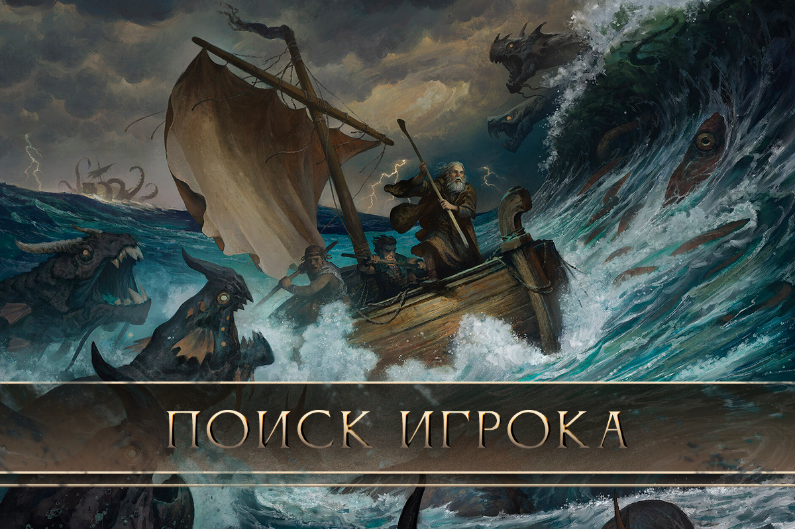
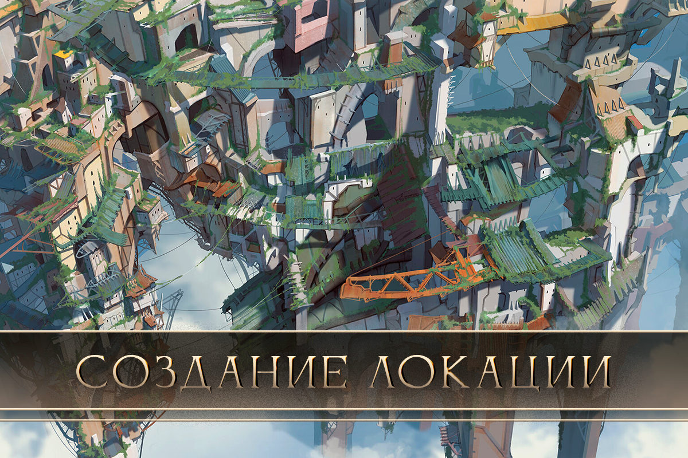
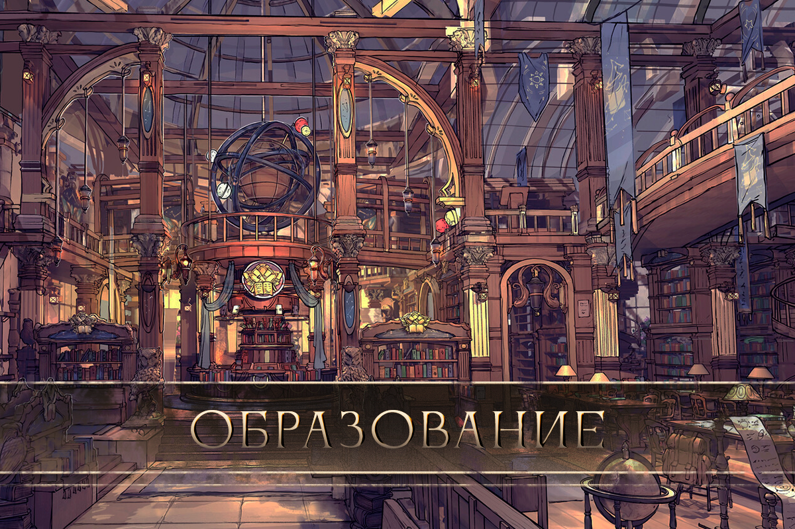
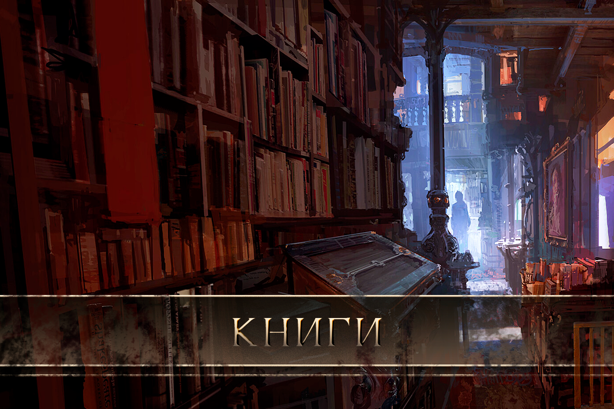
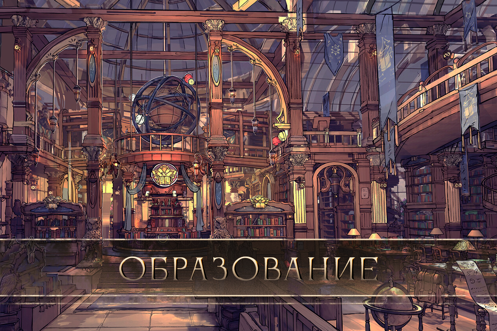
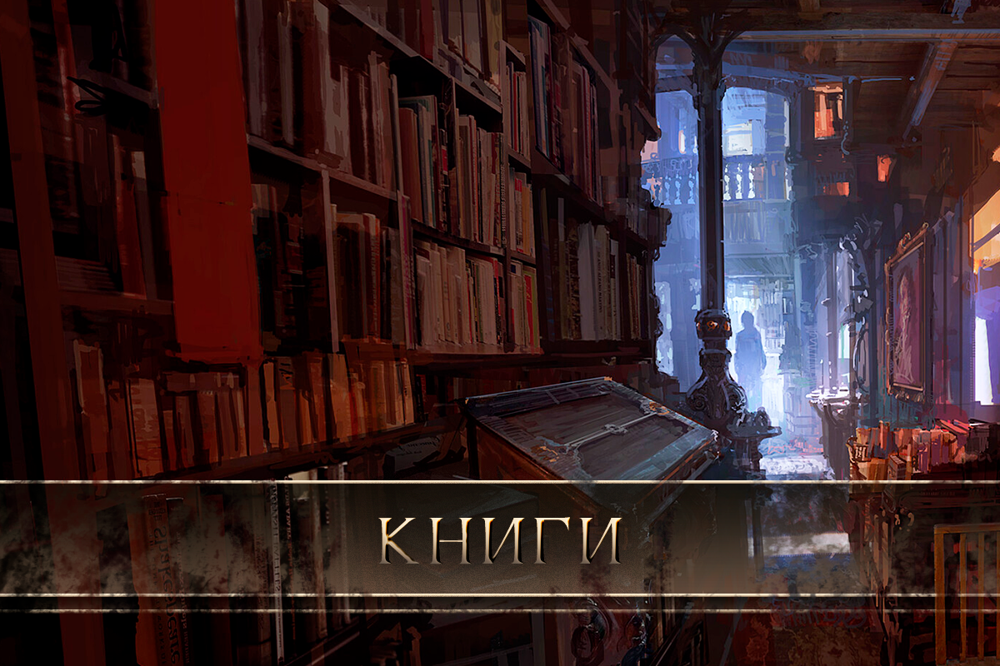
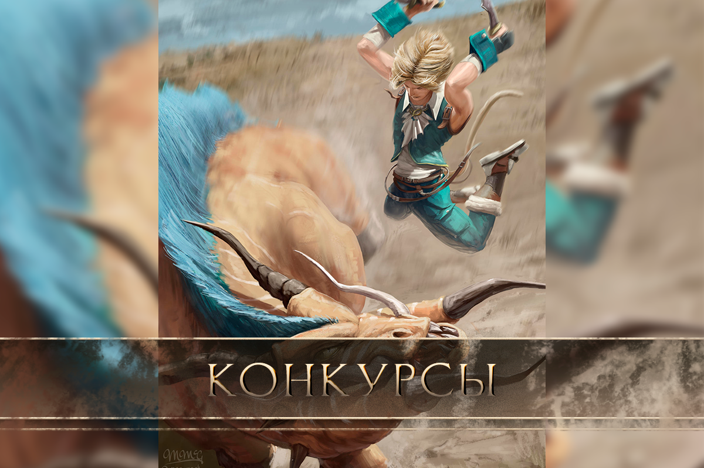
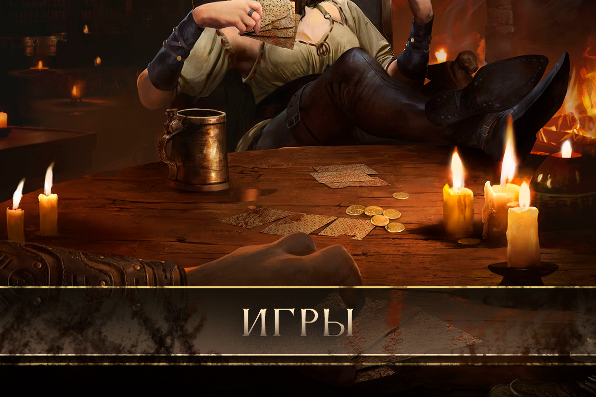

Быстрый старт
Злорадство Нихерии — это реинкарнация древней легенды, переосмысление самобытного мира и наглая эксплуатация известного имени.
В мире Нихерии сосуществуют магия и стимпанк, религия и наука, обычные люди, необычные создания и создания необычных людей, а также обилие уютного быта и непостижимых тайн. Здесь пустынные мародёры проводят рейды на мирные города, в то время как на другом конце мира сливки общества упиваются вином и пьют кристально чистую воду.
Здесь кровожадный пират может разрушить чью-нибудь жизнь, а законопослушный гражданин может надломить государственность. Используя артефакты прошлого и изобретения будущего представитель одной из множества рас может вновь перевернуть мир — здесь это обычное дело. Нихерия — это мир бесконечных приключений, врагов, друзей и херасутры тайных знаний.
Конец света не близок - он уже был. Дважды. Прошли многие годы, а затем еще больше. История забывает Красный Рассвет перед угрозой новых катаклизмов. Боги бросили эти земли, идёт последняя — Уходящая Эпоха.
В мире новаторства и ностальгии каждый найдет занятие по душе. Даже забытый миром в непроглядном лесу столяр-редрехан не спасётся от приключений. Любопытный маг может проверить себя в испытании обучиться магии и не погрязнуть в политических интригах чародейских монополистов. А может удрать на юг и попивать вино, торгуя изумрудами из шахты, за которую ты прикончил не мало народа? Вам не будут рады в колониях Реабор-Тхаес, но вы их не спрашивайте — стремитесь к своим мечтам. Рассекайте моря и земли. Покоряйте и изучайте, освобождайте и колонизируйте.
Нихерия предлагает
- Система магии так же сложна, как свободна. Один несложный подсчёт, с которым вам помогут, предоставит необъятный простор для воображения. Магия — это творчество, это сложное искусство.
- В ваших руках прокачка любого ремесла в неограниченных рамках. Экспериментируйте, играйте, двигайте сюжеты, магический и технологический прогресс. История Нихерии запомнит вас.
- Не хочется начинать с простого, а самоуверенности хватит на троих? Добро пожаловать в «Каноны», где можно выбрать важного героя, который уже засветился в сюжете и занимает влиятельную роль. Игрок может заполнить анкету на свой вкус после ознакомпления со стандартными правилами.
Нюансы игрового мира
- Механики упрощены в пользу творчества и вашего врождённого здравого смысла, а не бесконечных математических функций.
- Гиперреализм — не наш приоритет; где в средневековье в 12 выходили замуж, в 40 умирали, вес щита или меча высчитывается до грамм, а диарея и простуда были смертельны и прочее в таком духе.
- Главная и основная особенность Нихерии − направленность на отыгрыш интересных сюжетов, где лор игрового мира − опора и необходимые рамки, чтобы исключить возникновение солянки из всего и вся. Здесь игроки отдыхают вместе с админами.
- Временные рамки условны, игровое время подстраивается под удобный вам и вашим соигрокам график.
- В Нихерии приветствуется оригинальность и свежие идеи, если они не противоречат миру или не выворачивают наизнанку его законы. Все самые важные и значимые события в истории Нихерии придумали и реализовали игроки.
Эрен Кинвейл — автор Нихерии — пожелал нам приятный игры.Мы поиграли и теперь Злорадство Нихерии желает того же вам.
Правила
1. Общее
- Рейтинг − NC21. Вы можете дать волю своим желаниям, обеспечив их объективными причинами. Прямо как в жизни. Чрезмерная жестокость и разврат не должны выпадать из сюжетных обстоятельств и антуража игрового мира.
- Флуд в игровых темах, флуд пикчами под записями, переизбыток матерных слов во внеигровом общении, спам и несогласованная реклама будут удалены с предупреждением. Рецидивистам − бан.
- Не забывайте, что Злорадство Нихерии − это фэнтези с элементами стимпанка и вкраплениями постапокалипсиса. Здесь нет телефонов, кроссовок, мессенджеров и танцевальных клубов.
- Возникшие вопросы задавайте в лс сообщества. Перед тем, как обратиться, убедитесь, что ответа на ваш вопрос НЕТ в меню.
- Если поймали кого-то за нарушением правил − донесите администрации, большого брата у нас нету.
2. Ролевая бюрократия
- Создать нового героя можно, только если старый создан месяц назад или им отыграно 20 постов. В эти посты не входят конкурсные работы и номинальные посты-переходы. Администрация накладывает ограничения на тех, кто часто создает героев, но быстро забрасывает их или не играет ими вовсе. Количество героев на одного игрока не ограничено.
- Хотя вы и можете играть в одиночку с квестоводом или даже без него, рекомендуется найти соигрока. Или несколько. Для поиска соигрока заполните форму и отправьте в лс группы. Объявление вскоре появится на стене.
Шаблон «Поиск игрока»
#нихерия_поиск_соигрока
Ссылка на игрока.
Ссылка на героя (или его описание, если соигрок ищется до начала игры).
Текст объявления.
- Для получения квеста в лс сообщества сбросьте ссылку на анкету своего героя и, если есть, анкеты соигроков, а также предпочтения по квесту. Квест-мастер с Вами вскоре свяжется.
- Нередко игроку или игрокам интересно отыграть квест полностью собственноручно без участия мастера, что абсолютно возможно. От вас требуется лишь сообщить администрации примерный план квеста, а затем получить одобрение и пару подсказок. Затем, по написании решающего поста, вам необходимо сообщить администрации и ждать поста от мастера с наградой и прочими результатами.
- Для создания локации заполните шаблон ниже и отправьте в лс сообщества:
Шаблон «Создание локации»
- Полное название (полный путь, например «Андел | Гуран | Дом такой-то»)
- Где находится (район), как добраться, какую площадь занимает.
- Здание (если будет). Внешний вид и внутренний интерьер, особенности и ценности;
- Кто, кроме героя, там обитает;
- Ссылки-переходы в ближайшие локации, как в других темах;
- Арты.
Все пункты обязательны.
- Планируете взять каноничного героя?
- Описать, что вы планируете делать этим каноном в ближайшей и дальнейшей перспективе. Получить на это одобрение администрации.
- Изучить сюжет ролевой, вычленить всё, что связано с взятым каноном, написать анкету и упомянуть все события, которые он не мог пропустить.
- В течение игры отчитываться нам о ситуации.
- В крайнем случае к канону приставится НПС, который будет координировать его действия. В совсем крайнем игрок с канона может быть снят. Все пункты обязательны.
Правила ролевой игры
- Пост, его размер и содержание
- Минимум строк − 10 компьютерных, ~15 телефонных. Посты пишем в литературном стиле от третьего лица. Можно прикладывать подходящие к атмосфере Нихерии музыку и арты.
- Награда за квесты напрямую зависит от качества и логичности постов. Необоснованный таймскип, игнорирование поста соигрока или КМа, метагейминг, сьюшество, откровенное облегчение задачи, несоблюдение лора и переизбыток воды ведут к уменьшению награды вплоть до тяжелых последствий для героев.
- То, что знаете вы, не знает ваш герой. Не забывайте об этом и бойтесь метагейма как огня.
- Взаимодействие и очередность
- Убить чужого героя без согласия владельца нельзя. Исключения прописаны в пунктах о PVP (ниже). Можно обобрать или съесть труп, если это предусмотрено менталитетом.
- Отпись в квестах идёт в порядке очереди, установленной в начале отыгрыша. Очередность можно менять только в свободной игре не в ущерб логике или с разрешения КМа. Вступление в квест после его начала нужно согласовать с КМом.
- Если игрок не отписывает дольше недели дней без предупреждения − его герой замораживается, а соигроки получают право продолжить игру или квест без него.
- Герои одного и того же игрока не могут обмениваться вещами и средствами без обоснованного логичного отыгрыша.
- Переходы между локациями
- Перейдя в новую локацию, в первом посте отметьте, откуда пришли. В последнем посте в старой локации укажите, куда переходите.
- Групповой переход из темы в тему возможен. Для этого в метке перехода один из игроков или КМ должны указать имена переходящих вместе с ним героев.
- Мгновенно перемещаться в ролевой можно только обоснованно особыми явлениями. В идеале отписываться во всех промежуточных темах. Это можно не делать, но тогда пост-переход должен содержать подробное описание всего пути. Учитывайте расстояния, средства и время.
- Локации
- В списке тем представлены локации без внутреннего дробления на мелкие участки. Т.е., в теме города условно находятся рынки, площади и пр. Допустимо отмечать, в какой части города находится герой.
- Личные локации игроков имеют в первой записи пометку «Владелец − имя героя, ссылка на анкету».
- Крупная локация (землевладение).
- Компаниям игроков или владельцам крупных групп НПС нужно согласовывать свои действия с хозяином локации и договариваться об игре в локации. Обязательно подробно изучите описание локации.
- В землевладение могут заглядывать КМы, в т.ч. если они ведут какой-нибудь квест на небольшое количество игроков. В этом случае действия КМа не должны как-либо серьёзно влиять на героев владельца локации или саму локацию. По тому же принципу могут приходить и небольшие компании игроков, не владеющих группами НПС и не имеющих полит. веса и влияния.
- Малая локация (дом, участок, т.д.). Для игры в ней всем нужно согласовываться с владельцем локации.
- Читайте описания локаций и последние посты в теме. Там может происходить что-то важное.
- Можно создать свою локацию. Условия расписаны в Правилах ролевой бюрократии, п.5.
PVP
В Нихерии присутствует элемент PVP, используемый по желанию. Его работа заключается в следующем: *Создавая героя, игрок может добавить ему отметку PVP. Такие герои могут грабить или нападать на других с отметкой PVP без предупреждения, логично обыграв свои действия. *Нападение на героя другого игрока без PVP возможно только при взаимном согласии и обсуждении деталей боя в ЛС. *Отметка PVP постоянно работает на территориях, которые по лору негативно относятся к герою. *Если герой находится в розыске, во взаимосвязанных локациях отметка PVP постоянна. При возникновении конфликта обращайтесь за помощью к администрации. Помните: ролевая этика важнее желания нагибать или портить кому-то игру.
Обращаем внимание любителей PVP: Нихерия − это сюжетная ролевая. Здесь важна история, а не нагибаторство и убийство других героев ради веселья.
Общие правила боя
- Чтобы напасть на героя без PVP, нужно убедиться, что игрок за него согласен на бой и обсудить в лс детали.
- Бой с НПС можно описать самостоятельно с разрешения администрации. Она же подведёт итоги боя (полученные награды и повреждения).
- Исход боя напрямую зависит от логичности и качества постов. Неясные формулировки, манч, отсутствие минимума подробностей могут привести к последствиям различной степени тяжести.
- По желанию игрок может запросить КМа для проведения боя с НПС.
- Обязательные условия: необходимо точно описать в постах инвентарь героя и НПС (защиту и вооружение); положение в пространстве (где и как стоят герой и НПС); окружение (от поверхности, на которой происходит бой, до погодных условий); самочувствие (травмы, усталость и т.д).
- Всегда описывайте окружение и реакцию героя на него. Если бой проводит КМ, то окружение описывает уже он. Игрок в таком случае отвечает только непосредственно за своего героя.
- Если игрок не прописал какое-либо обязательное условие боёвки, это делает за него КМ (в процессе игры или при подведении итогов квеста).
- В боёвке старайтесь соблюдать реалистичность. Чрезмерная гибкость, скорость реакций, высота прыжков и пр. запрещены, если не обусловлены расой или наложенными заклинаниями.
- Пост в боёвке состоит из нескольких частей:
- Начало боя (от КМа): информация об инвентаре неписей, их положении в пространстве, окружении, состоянии неписей, начало атаки (незавершенным действием), планирование защитного маневра.
- Начало боя (от игрока): информация об инвентаре, положении в пространстве, об окружении, состоянии здоровья, начало атаки (незавершенным действием), планирование защитного маневра.
- Бой: контратака с результатом (если не было прописано завершенного действия от КМа), начало второй атаки или защиты. Длится до логического завершения.
- Завершение боя: КМ описывает итог боёвки, где логически обосновывает, победил герой или проиграл (убил всех, обратил в бегство, сбежал, умер).
Очередность
- Очередность постов в боёвке устанавливается:
- КМом либо иным администратором.
- Игроками-участниками, если боёвка проходит по договорённости без КМа. Порядок отписи желательно где-нибудь закрепить (отправить в ЛС группы, например).
- Менять очередность в квесте без разрешения КМа нельзя.
Правила боевки для игрока
- Можно:
- Сбежать, предупредив КМа и логично уведя героя с поля боя.
- Вступить в чужой бой, предупредив КМа и грамотно введя героя.
- Пригласить в бой соигрока (он должен выполнить пункт выше).
- Попросить отсрочку более недели у КМа.
- Нельзя описывать действия чужого героя, если об этом нет договоренности с соигроком. Обязательно предупреждайте КМа.
Правила боевки для мастера
- Можно:
- Отписывать завершенные действия и состояние героев.
- Закончить бой, если игрок пропал без предупреждения на срок больше неделим.
- Использовать неограниченное количество НПС, если их нахождение в локации с боем логично обосновано.
- Нельзя игнорировать логично прописанную защиту или контратаку.
- Итог боя пишется с указанием повреждений и заслуженной награды.


- Арты в стиле аниме и некачественные отклоняются. Фотографии реальных актеров тоже. Исключение: если фотография соответствует атмосфере Злорадства Нихерии.
- Допускается некоторое несоответствие артов и описания в анкете. Например, для игры за редрехан достаточно будет арта на эльфа. Если трудно подобрать разрисованного татуировками ибэ, обойдитесь артом без них, но в описании внешности дайте подробное описание узорам.
- Реальные фото игроков отклоняются (если он не ролевик полевых игр\реконструктор).
- Без арта анкета не принимается.
Узнать свой ID ВКонтакте можно в «Мои настройки» → вкладка «Общее» → листаем вниз до «Адрес вашей страницы» → там есть цифры, указанные в «Номер страницы» (необходимо нажать «Изменить»).
Имя, соответствующее месту проживания и расе героя. Современные имена, анимешные, на других языках, откровенно для рофла не допускаются.
Здесь же можно указать прозвища, фамилию, Дом и даже род, если таковые предусмотрены.
Использовать можно только те расы, которые существуют в игровом мире. Авторские отклоняются.
В случае игры за бестиарное существо, в этом пункте пишется «Монстр (вид)».
Если герой полукровка − укажите расы родителей.
Указывается год рождения. Разобраться поможет раздел истории и калькулятор. Созвездие-покровитель указывается в этом пункте. Информация по созвездиям.
Класс − это способ ведения боя, а не деятельность героя. В Нихерии шаман может быть воином, друид − магом, маг − рубить врагов острым мечом, а воин − пользоваться огнестрельным оружием. Воин Разбойник Маг Мирный Подклассы
В этом пункте коротко опишите, чем занимается Ваш герой по жизни, как зарабатывает деньги и где его можно найти чаще всего.
Мировоззрение − смешанных мировоззрений нет, но они могут меняться по ходу игры. Религия − герой может поклоняться Близнецам, Абхоту или какому-то из их искаженных вариантов. Атеизм в игровом мире не существует (так как боги 100% есть), ближайшее к нему понятие − равнодушие в религиозных вопросах. Отношение к магии\технологиям и политические взгляды − Ваш герой живет в Нихерии, следовательно, на него влияют события, что происходят в игровом мире. Обязательный пункт. Сильные и слабые стороны (не физические) − чем герой полезен команде, в чем на него нельзя положиться и так далее. Жизненная цель − к чему стремится и ради чего живет герой? Хобби − безобидные (или не очень обидные) занятия, приносящие небольшой доход или удовольствие. Страх (прочти). Каждый чего-то боится. В биографии должно быть объяснение, почему герой боится именно этого. Неприязни − всё, что вызывает у героя отвращение, дискомфорт. Табу − что-то, что герой ни за что не будет делать, принцип, клятва, обет и т.д. Вредные привычки − от курения и пьянства до обгрызания ногтей у других героев, хруста пальцами, перебивания собеседников. Магам необходимо учитывать влияние рун на характер героя.
Укажите рост и вес в цифровом значении. Избегайте неестественного цвета волос и глаз для выбранной расы, не покрывайте героя родимыми пятнами, повторяющими географическую карту Нихерии, не перечисляйте десятки шрамов в форме цветов или шпаргалок к тайнам мироздания. В этом пункте указываются физические недостатки − слепота, хромота и т.п. Магам необходимо учитывать влияние рун на внешность героя.
Этот пункт − самый важный. Он соединяет воедино все остальные, дает обоснование каждому навыку и каждой особенности, каждой вещи в инвентаре и характеру героя. Не забывайте также делать перекличку событий с географией, историей и свежими новостями.
- Воин, Разбойник, Маг, Друид, Шаман Уровни мастерства: новичок\ученик\умелец\мастер. Воин, Разбойник В случае выбора воинского навыка, игрок обязательно пишет оружие, которым обучен владеть. Использование оружия со сходной техникой владения возможно, но навык будет в этом случае на два пункта ниже, либо отсутствовать вовсе. Пример: Метательное (праща) − умелец. Маг При выборе магии необходимо прописать известные простые и сложные заклинания. Оформление рун и количество сложных заклинаний должно соответствовать лимиту, о котором можно узнать здесь. Одиночные руны прописываются с одним или двумя вариантами использования (только если маг талантлив и обучился в академии), дальностью, эффективностью и другими параметрами в зависимости от характера заклинания (площадь, ширина, высота, скорость полета, объем и т.д.). Сложные заклинания прописываются по тому же принципу, но время высчитывается по формуле. Друид, Шаман Друидизм или шаманизм прописывается здесь же. Эти навыки описываются подробным списком своими словами (всё знать герой не может, учитывайте это).
Суммарное количество навыков в этом подпункте не должно превышать ЧЕТЫРЁХ. Максимум на начало игры можно брать: Не более 1 мастера (2 в случае щит+одноручное, одноручное+парное); Не более 1 умельца (2 в случае щит+одноручное, одноручное+парное); Не более 2 учеников; И не более 3 новичков. 2. Характеристики Здесь Вы можете (по желанию) своими словами описать выдающиеся физические характеристики героя. Помните: то, что не прописано, считается по общепринятым нормам расы. Духовная мощь − статичная характеристика, которую может прокачать только друид\шаман\призрак. У остальных (кроме чистокровных редрехан, бестийцев и полукровок от этих двух рас) она будет на низком уровне. Призракам эта характеристика необходима. Они изначально обладают низкой духовной мощью, но в процессе существования и паразитирования могут повышать её. 3. Ремесленные навыки, Науки Если герой владеет каким-либо ремеслом или наукой, здесь описывается уровень владения и заслуги на данном поприще. Градация наук: новичок, ученик, умелец, мастер. Наук может быть только две, на любом уровне (чем выше навык, тем больше должно быть информации об этом в анкете). Градация ремесел: терпимо, достойно, отлично. Ремесел может быть только три, на любом уровне. Быть гуру во всем невозможно, как говорится, «ни швец, ни жнец, ни на дуде игрец». На терпимом уровне − три взаимосвязанных ремесла. На достойном уровне − два. На отличном − одно. Рекомендуется изучить этот раздел. 4. Бытовые навыки Бытовые навыки описываются, исходя из биографии − выживание в дикой природе, верховая езда, мореходство и т.д. У них нет уровня, поэтому обходитесь своими словами, избегая «средне, хорошо, плохо». Чем больше бытовых навыков, тем хуже владение ими.
Комфортный вес вещей для путешествий пешком − 20-25% от массы тела. Шпаргалка: Оружие и броня. Оружие − указывается тип, вес, размеры и материал. Если оружие − лук или арбалет, то не забывайте про дальность поражения, колчан и стрелы\болты. Наличие огнестрельного оружия должно быть объяснено. Доспехи − тип, толщина брони, материал, внешний вид (или арт). Полностью укомплектованным в доспехи может быть только стражник или солдат. Прочее, что герой носит с собой. Здесь описывается недвижимость, если она имеется. Если необходима локация, то следует пройти в раздел правил и оформить её по шаблону. Артефакты: схема и руны, которыми зачарован предмет; эффект; каким образом герой заряжает артефакты. Изучите артефакторику.
На момент регистрации доступен только один крупный питомец или два мелких. НПС − не больше пяти, а их уровень навыков − обязательно ниже, чем у героя. Соблюдайте логику: механик Лиги Синоба не будет дружить с магом из Культа C'Итш'Тас, а бестиец не будет путешествовать с наемным убийцей. Для питомца и нпс пишется отдельная мини-анкета: Питомец НПС Кличка Имя Вид, масть, рост, вес Внешность, рост, вес, особые приметы Характер Характер (все пункты, как у героя) Умения, дрессировка Навыки Предметы для питомца Инвентарь (денег нпс не имеют) Биография − где приобретен питомец Биография − как познакомились и почему вместе В этот пункт записывается нежить, химеры и прирученные друидом существа.
В этом пункте указывается количество денег, которое есть у героя на момент регистрации. Изучите этот раздел.
Тема пробного поста выбирается самостоятельно: применение заклинания, сражение с равным по силе, изготовление товара, исследование, политика и т.д. Здесь Вы подтверждаете уровень навыков героя и показываете, что сможете им играть. Для последующих героев пробный пост не требуется, кроме случаев, если пробник требует квент-мастер.
 - Полное название (полный путь, например «Андел | Гуран | Дом такой-то»)
- Где находится (район), как добраться, какую площадь занимает.
- Здание (если будет). Внешний вид и внутренний интерьер, особенности и ценности;
- Кто, кроме героя, там обитает;
- Ссылки-переходы в ближайшие локации, как в других темах;
- Арты.
Штаб Мастеров
Савва Крупницкий — главный администратор и автор Злорадства Нихерии 2023 года.
Эрен Кинвейл — автор оригинальной ТРИ Нихерия 2017-2020 года.
Квест-Мастера
Проводят квесты для игроков, консультируют по вопросам лора во время отсутствия остального админ-состава.
Чтобы получить квест, необходимо сначала написать в лс сообщества, предоставить ссылки на анкеты участвующих героев и описать желаемые детали\условия сюжета. После этого мастер сам приходит.
Хочу в КМы!
Если Вы в Нихерии дольше двух месяцев, есть зарегистрированный герой (а то и несколько), в последний месяц был как минимум один пост - мы с радостью встретим Вас за кулисами Нихерии, где куются сюжеты, плюются искрами дополнения и шипят в воде раскаленные патчи с багами.
Чего мы ждём:
- Знание лора (в счёт не идут все существа бестиария, разделы архива, конкурсов и героев);
- Хорошая «кредитная история». Ролевая − это общение, и если оно не заладилось с администрацией или игроками с самого начала, то лучше не пытаться брать на себя лишнюю ответственность.
Что мы предлагаем:
- Интересное собеседование − знакомство, творческие задания, выявление вашего стиля;
- Звание КМа − возможность вести квесты в любой точке игрового мира, плодить нпс, пользоваться закрытым Чёрным Рынком, создавать локальные и фракционные сюжеты, вместе с игроками ворочать Нихерию с боку на бок, пока ей дурно не станет;
- Доступ к черновым вариантам различных готовящихся сюжетных планов;
- Участие в разработке дополнений, внедрение идей без обязательного отыгрыша;
- Чистая и прозрачная занятость: никто не будет требовать заниматься чем-то кроме квестов, если Вы сами не захотите выйти за рамки;
- Помощь в оттачивании навыков КМа и подготовке сюжетов для отыгрышей;
- Участие в составе жюри «админ+» для конкурсов; Обращаться в лс сообщества.

Правила прокачки героя
Посты-тренировки должны включать в себя указанное количество именно тренировок, а не постов. Прокачка нонстоп приведёт лишь к тому, что герой заработает проблемы со здоровьем вместо навыка.
Внимание! Между повышением уровней навыков обязательно должен быть отыгран любой утвержденный администрацией квест.
Пути прокачки
- Классическая — герой нанимает себе учителя, учится у нпс, пытается что-то делать сам стандартное количество тренировок и соблюдая чередование «повышение навыка — квест — повышение навыка». В квесте повышение навыка происходит только по одобрению и решению КМа или администратора.
- Коллективная — если два и более героев (именно героев игроков, а не нпс) тренируются вместе, то количество тренировок уменьшается вдвое. Данное поощрение округляется в сторону игроков, т.е, если требовалось девять тренировок, то в коллективной прокачке нужно будет всего четыре.
- Наставник — герой игрока, владеющий каким-то навыком, может обучить этому другого героя в два раза быстрее (округляется в пользу игрока). Максимальный уровень не превышает уровень наставника. Наставнику в этом случае не начисляются тренировки для повышения навыка.
Прокачка воина
Воин — это герой, который владеет навыками ближнего и открытого боя, а также вспомогательными (ношение доспехов, рукопашный бой и т.д.).
В каждом навыке есть свой тип оружия или доспехов с которым герой привык иметь дело. Чтобы поднять уровень навыка, необходимо отыграть в сумме несколько постов, в которых фигурируют тренировки (в обращении оружием или доспехами), сражения (с нпс или другими игроками), или обучение (с помощью тренера, которому отсыпали звонких монет — найти такого нпс можно в любом крупном городе Нихерии).
Чтобы выучить владение новым оружием из уже известного навыка, нужно отыграть пять постов для освоения: начиная теорией, продолжая тренировками и заканчивая самостоятельной практикой.Чтобы выучить владение схожим оружием из уже известного навыка, нужно отыграть три поста для освоения.
Прокачка в сражениях — дело опасное. Гораздо лучше, если прокачку в сражениях\боях\дуэлях завершать, т.е., отыгрывать последние этапы. Если броситься в бой без малейшего понятия о том, что делаешь, можно остаться с неприятными последствиями «одна нога здесь, другая там».
И, конечно же, сначала выбирается желаемый навык, а потом уже прокачивается, а не наоборот. То же касается и рун в магии.
Выучить на «новичке»
3 тренировки
⇓
Повысить с «новичка» до «ученика»
6 тренировок
⇓
Повысить с «ученика» до «умельца»
9 тренировок
⇓
Повысить с «умельца» до «мастера»
12 тренировок
Прокачка разбойника
Разбойник — это герой, который владеет навыками дальнего боя, навыком скрытого боя, а также вспомогательными (ношение доспехов, рукопашный бой и т.д.). Поднятие навыков и изучение новых видов оружия происходит ровно так же, как и у воина.
Прокачка мага
Маг — это герой, который ведет бой с расстояния и полагается на свои заклинания: боевые, защитные или поддерживающие.
Способ прокачки несколько отличается, ведь у мага всего один-единственный навык — магия, и десятки заклинаний.
Чтобы поднять уровень магии, необходимо превысить текущий лимит сложных заклинаний. У новичка таковых ноль, ученик владеет одним, умелец — тремя, мастер — пятью (пять - максимум).
Изучение новых заклинаний тоже трудоемкий процесс, особенно это касается сложных. Чтобы выучить новую простую руну, необходимо отыграть в сумме три тренировки. Поможет теория из книг или наставления более опытного мага.
Из простых рун состоят сложные заклинания. Для начала необходимо выучить все простые руны, чтобы можно было из них составить сложное — и тогда приходит черед пяти тренировок изучения сложного заклинания: тренировками с тренером-магом, самостоятельной практикой или в сражениях.
Выучить на «новичке»
Изучить одну простую руну любой ветви
3 тренировки
⇓
Повысить уровень магии с «новичка» до «ученика»
Изучить одно сложное заклинание, составленное из уже известных простых рун
10 тренировок
⇓
Повысить с «ученика» до «умельца»
+2 сложных заклинания
10 тренировок на каждое
⇓
Повысить с «умельца» до «мастера»
+2 сложных заклинания
10 тренировок на каждое
Прокачать эффект или мощность известного простого или сложного заклинания
(на любом уровне)
3 тренировки
Прокачка науки
Аналогично навыкам воина и разбойника.
Градация уровней здесь следующая: новичок, ученик, умелец, мастер.
Кроме этого можно параллельно изучать работу над направлениями ремесла.
Например:
- У некроманта — создание не только обычных скелетов, но и нежити из плоти, а дальше — кадавров.
- У механика — работа не только с пружинными механизмами, а ещё с паровыми двигателями.
- У алхимика — использование растений с различными эффектами: не только лекарственными, но и ядовитыми.
И т.д.
Прокачка ремесла
Градация уровней здесь следующая: терпимый, достойный, отличный.
Отыгрывается определенное количество постов, в которых герой работает над чем-то — так повышается сам навык.
Кроме этого можно параллельно изучать работу над направлениями ремесла.
Например:
- У кузнеца — работа с метеоритным железом, драконьей костью, различными сплавами, кроме обычной стали или железа.
- У охотника — не только дубление кож, но и выделка меха, а также виртуозное снятие шкуры, чтобы ту можно было бросить перед камином.
Другие примеры можно уточнить у администрации.
Выучить на «терпимо»
4 работы
⇓
Повысить с «терпимо» до «достойно»
6 работ
⇓
Повысить с «достойно» до «отлично»
9 работ
Выучить дополнительно ответвление к навыку (на любом уровне)
5 работ
Покупка навыков
В том случае, если игроку недосуг писать посты-тренировки и так повышать уровень, предусмотрена система повышения за золотые монеты (игровая валюта).
В игре делается таймскип, в процессе которого описывается последняя тренировка, где и как герой поднял навык, когда встретил наставника и т.д. Важно, чтобы герой по анкете имел предрасположенность к платной прокачке того или иного навыка (пример: маг не сможет изучать механику, а светлый друид не полезет в некромантию).
Изучить новый навык — 10 золотых
Повысить навык:
Новичок ➫ Ученик — 15 золотых
Ученик ➫ Умелец — 30 золотых
Умелец ➫ Мастер — 50 золотых
Изучить дополнительный вид оружия в известном навыке — 20 золотых
Выучить дополнительно ответвление к навыку (на любом уровне) — 10 золотых
Изучить новое ремесло на «терпимо» — 15 золотых
Повысить ремесло:
Терпимо ➫ Достойно — 30 золотых
Достойно ➫ Отлично — 60 золотых
Изучить новую науку на «новичке» — 20 золотых
Повысить науку:
Новичок ➫ Ученик — 30 золотых
Ученик ➫ Умелец — 45 золотых
Умелец ➫ Мастер — 60 золотых
Изучить простую руну — 5 золотых
Изучить сложное заклинание (из уже известных простых рун) — 20 золотых
Улучшить заклинание — 15 золотых


Проклятые

Yes - Roundabout
Бестийцы — потерянная элита Нихерии. Блуждающие паломники, бездомные философы и заблудшие богословы. Бестийцы стоят за основными вопросами религии и философии. Бестийцы при всей своей немногочисленности всегда были на рубеже истории и влияли на её вектор, как никто другой. Извечные последователи жестких правил и законов, которые сами и пишут. Негативно относятся ко всяким проклятиям и магию причисляют к ним, в то же време ко всем из них невосприимчивы.
В эпоху Иссякания бестийцы не смогли отказаться от своего исторического превосходства над другими расами, даже учитывая все трагедии, которые их постигли. Современные чистокровные бестийцы — паломники, пытающиеся постичь великий замысел Богов; деятели искусства, старающиеся держаться в столицах, потому что в провинции «возвышенных натур» не жалуют; офицеры армий, мечтающих возродить законность на местах былой славы церквей Близнецов; богословы-культисты, пытающиеся вдохнуть новую, иную мысль в существующие, для многих потерявшие актуальность, заповеди.Не подвержены вампиризму, ликантропии, физически не способны пользоваться магией. В разы легче сопротивляются животным инстиктам, чем представители других рас, что бы это ни значило.
История происхождения
Считается (только самими бестийцами), что были созданы по образу и подобию богов Близнецов, создавших жизнь в Нихерии. До расселения по всей Нихерии бестийцы мало отличались друг меж другом внешне, подстёгнутая божественной привилегией адаптация к условиям среды с годами сильно их изменила.
Так, в холодных местах бестийцы приняли облик антропоморфных млекопитающих — покрытых шерстью и преисполненных силы. В жарких регионах они покрылись чешуей и научились выживать в критической сухости. Те бестийцы, что ушли в горы, обзавелись перьями и крыльями, отдельными от рук; рты их заменил клюв.
Не только лишь младшим расами они были посредниками пред богами, но и для простых зверей — те не нападали на бестийцев.

В былые времена бестийцев хранила строгая традиция, запрещавшая всякие межвидовые контакты; традиционный контроль рождаемости, благодаря которому на протяжении эпох популяция бестийцев не увеличивалась и не уменьшалась. Этот период длился так долго, что укоренился в их биологии. На сегодняшний день бестийцы — самая малочисленная раса и демографический взрыв не предвидится.
Девять из десяти бестийцев покинули Нихерию, когда открылись божественные порталы. Те, кто остались, потеряли многое: веру, традиции, надежду, знания и институт семьи. Всё, что могли, они вновь обрели быстро, но некоторые вещи они не смогут больше обрести никогда. Угроза вымирания заставила бестийцев пойти на святотатство: межвидовое размножение. Таким образом в Уходящей эпохе бестийцы разделились на чистокровных и метисов.
Культура
Бестийцы — прирожденные духовные лидеры.
Война возникла тогда, когда бестиец впервые взял в руки меч, вместо священного писания, чтобы убивать тех, кто не верил этому писанию.Для бестийцев не существует исторической родины кроме самой Нихерии в целом. Бестийца можно найти в любом городе известного мира. В основе своей живут в крупных городах, не считая тех, кто проходит путь паломничество в дикой природе. Многие бестийцы любят сделать это хотя бы раз в жизни. Несмотря на то, что диалект языка, на котором в основе своей в древности общались бестийцы, стал родоначальником для множества других языков и диалектов, сами бестийцы не привязываются ни к какому языку и говорят на том, который используется в регионе их проижвания.Геннет Песнеглот, мордвинский философ.
Принципы
- К магии относятся негативно, считая это наказанием для смертных от богов, некоторые не скупятся использовать термин «проклятье». Некоторые руны, используемые магами, считают особым святотатством - например, руну Жизни, позволяющую воскресить недавно погибшего и вернуть душу в его тело.
- Нарушение внутренних храмовых догматов карается изгнанием или смертью, но такие случаи настолько редки, что история насчитывает всего несколько случаев предательства в рядах религиозных деятелей. Бестийцы не заинтересованы в подрывании собственного авторитета, поэтому заминают любые сплетни и слухи о том, что у них может быть не все гладко.
- Между собой бестийцы не делят власть и не перетягивают канат, уважая позиции друг друга независимо от личностных взаимоотношений.
- Чистокровный бестиец в чистокровной семье никогда не станет вором, мошенником или богохульником, но священником, инквизитором или паломником.
- Будучи лидерами в насаждении традиции, бестийцы не одобряют ни магию, ни технологии. Последние, впрочем, в их глазах считаются много меньшим злом.
Быт
Семья
Бестийцы строго соблюдают правило двух детей в семье - таким образом они поддерживают свою численность на одном уровне уже многие столетия. Связь с другими расами возможна, но бестийцы не забирают себе на воспитание полукровок, оставляя с другим родителем.
Похороны
Кремация. Уничтожая смертное тело после смерти, религиозные бейстийцы таким образом отрезают душе путь назад, чтобы уберечь от возможности воскрешения. Прах хранится в специальном Зале Праха при Храме в каждом городе, где достаточно большая диаспора бестийцев. Далекие от храмов бестийцы хранят прах предков в собственных домах, в «уголках памяти».
Внешность
Основные облики чистокровных бестийцев: драконий1, птичий2, кошачий и псовый3.
Драконий - антропоморфная особь с грубой чешуйчатой шкурой, роговыми наростами, когтями, хищной вытянутой челюстью, глазами рептилии, хвостом и, редко, кожистыми крыльями. У них самая прочная шкура и отменная реакция. Не могут летать из-за большого веса и малого размаха крыльев.
Их рост самый крупный из имеющихся на расу: от 180 до 210см., вес в пределах 90-120кг.
Птичий - тело покрыто перьями, стопы и кисти рук защищены грубой кожей, есть загнутые когти, голова украшена клювом и выразительными глазами любого цвета. Могут летать, обладают отличным зрением.
Так же высоки, как и бестийцы драконьего(змеиного) облика, но легче на 30-40кг. Кости облегченные, развитого мышечного рельефа часто не встретить.
Кошачий - прямоходящие большие коты, чье строение тела близко к человеческому (строение таза и расположение внутренних органов). Покрыты шерстью, есть хвост и крупные уши, иногда встречаются особи с гривой и бородой. Обладают чутким слухом и прекрасной гибкостью.
Среднего роста, мало отличного от обычных людей – 160-180см., из-за наличия шерсти выглядят массивнее, чем есть на самом деле – 80-90кг.
Псовый - аналогично кошачьему, только их сильные стороны - тонкое обоняние и ловкость.
Половой диморфизм выражен очень слабо, особенно у бестийцев драконьего и птичьего облика. Проще всего различить принадлежащих кошачьему и псовому облику.
Внешний вид часто украшен религиозной атрибутикой: посохами, амулетами, книгами и головными уборами с символом Близнецов.
облики соотвествуют подотряду змей и ящериц.
превалируют хищные подобия птиц.
для кошачих и псовых внешность сильно зависит от исторического места пребывания.
Метисы
Раньше считалось, что иметь потомство между бестийцами разного облика попросту невозможно. Подобные семьи очень редко существовали, но никогда не имели детей. В Уходящую эпоху это изменилось и на свет появились метисы. Мало того, что в подобной семье завести ребенка принципиально сложнее, так дети еще и зачастую странные.
Отличаются от чистокровных тем, что их облик может таксономически исходить из вида на одну категорию выше.
- Так, для драконьих бестийцев — не подотряд змеи, а весь класс рептилии, в который помимо прочих входят черепахи нет, метисы панцырей не имеют и крокодилы;
- Для птичьих — чаще можно встретить экзотические облики;
- Для кошачьих — не семейство кошачьи, а весь подотряд кошкообразные, в который помимо прочих входят мангусты и гиены;
- Для псовых — не семейство псовые, а весь подотряд собакообразные, в который помимо прочих входят хорьки, еноты, медведи и скунсы, исключая ластоногих.
Примеры имён
У каждого бестийца есть имя-фамилия и название рода.
| Облик | Маскулинные имена | Феминные имена |
|---|---|---|
| Драконий | Ксахнухус, Гахандор, Шиархеус; | Лихари, Саханмин; Аффрита; |
| Птичий | Царрций, Диатор, Аниар; | Керстин, Фаустин, Фивиан; |
| Псовый | Гживерий, Гаспар, Гхаренар; | Кибекса, Гафатра, Жермин; |
| Кошачий | Изаурус, Резо, Джорес. | Маенва, Триатра, Маръира. |
Подробности для самых интересующихся
- Драконьи: зубастым драконьим бестийцам проще говорить шипящие и свистящие звуки, фрикативы и сибилянты, поэтому в их именах часто можно встретить буквы «с/з», «ш/щ», «х» и «ф».
- Птичьи: клювастым легче издавать звук цокающие звуки, аффрикаты и плозивы, вроде «ц», «д», «т» и пр.
- Псовые и кошачьи: не чувствуют принципиальной разницы, хотя псовые сильнее акцентируют звук «ж», а кошачьи звуки «с» и «р».
Чтобы сгенерировать имя бестийца, достаточно использовать генератор латинских имён, а затем полученный результат немного усложнить дополнительным слогом или непривычным звуком.
Строгих правил образования имён не существуют, но есть несколько заметных закономерностей:
Имена
Имена бестийцев чаще всего начинаются с согласной буквы, в то время как названия исконно бестийских населенных пунктов наоборот — Осберут, Ишвер.
Фамилии
Особенностей образования не имеют, ибо исторически бестийцы начали обладать фамилиями в эпоху господства людей, до этого пользуясь лишь названием рода.
Род
Род восходит к имени родоначальника. Ввиду прошедшего времени может отличаться, не выглядеть как реальное имя.
Ключевые слова для поиска артов — anthropomorphic fantasy animal, furry
Skyclad - If I Die Laughing, It'll Be an Act of God
Во всём виноваты дворфы!
Твердят все, кроме самих дворфов. Именно этот коренастый народ стал первопроходцем в магическом искусстве при его рождении, а затем и при перерождении. Вечно деятельные, они всегда знают за что уцепиться.Дворфы известны своим умением извлекать из, казалось бы, безвыходных ситуаций пользу, и это тоже не добавляет им доверия среди других народов. Лишившись в один момент всего, что у них было, дворфы выстояли, утёрли с лиц кровь и пепел, в которые обратилась их империя, сцепили зубы и стали проторять новые дороги. Лишившись много в другой момент, они повторили свой триумф и построили одну из первых империй на руинах Злорадства Нихерии.
Дворфы знамениты наибольшим процентом рождаемости детей с сильным магическим потенциалом, а также занимают первое место в рейтинге лучших бород Нихерии. Легко заражаются ликантропией и вампиризмом. Более того, в каком-то смысле стали причиной появления этих проклятий.
За годы совместной жизни дворфы научились у людей многому: экспании, империализму и многому другому, что позволило им построить невероятно крепкую империю на самой заре Уходящей эпохи.
Дворфы это: работники тяжёлой индустрии — проклинающие день, когда был выплавлен первый слиток и тем не менее лучшие в своём деле; ударники пивоваренного ремесла — совершившие прорыв в изготовлении напитков брожения, а затем ещё один прорыв в ремесле их питья; волшебники-экспериментаторы — создавшие целую эпоху и несколько проклятий, нависших над всеми разумными.
История происхождения
Всякую эпоху цивилизация дворфов берёт неимоверный разгон, пока не врежется со всей скоростью в очередной рояль истории. О первой великой цивилизации дворфов даже никто не знал, кроме них самих: Мордвинская империя пряталась глубоко под землёй и долгое время практически никак не давала о себе знать на поверхности. Когда дворфы вознамерились открыть торговлю, их количество для наземных жителей показалось сущим кошмаром. Особенности религии дворфов о прелистях Ним-Сат и мужской силе Хал-Таса оказались на поверхности страшнейшей ересью, что привело к страшной войне, длившейся с десяток лет и прервавшейся Красным Рассветом.
Катастрофа уничтожила Мордвинскую империю. В тот день многие убедились, что дворфы всё же прогневали богов.
И быть дворфам изгоями, если бы не обнаружившийся в них магический дар. Кто-то считал его проклятием, кто-то — благословением богов. Эти мнения раскололи мир пополам. Да и сами дворфы разделились — оставшиеся в Мордвине (городе, жалком подобии столицы былой империи) принялись проводить раскопки и восстанавливать руины; ушедшие на восток углубились в изучение магии и обучение ей других.
Эпоха Разума в очередной раз уничтожила великое множество дворфов, причем в основном магов. Дворфы-колдуны востока лишились дома, своих тел и даже душ, будучи расщепленными последствиями своих магических изысканий, которые должны были их защитить. Западные дворфы, дворфы Мордвина припоминают это событие по сей день, но не смогли сохранить возникших предрассудков и на полвека. Современные дворфы снова вовсю изучают и практикуют магию.
Культура
Грубые, решительные и упрямые, новаторы и богохульники.
Казалось всё, что не могут терпеть бестийцы, было запечатлено божьей волей во плоти дворфов.Дворфы делятся на две группы: поклонники магии и противники магии. Обе группы жили вместе и всячески старались подавить свои предрассудки, чтобы не привести к очередному конфликту. С возникновением Сикстиннской колонии, отталкивающая сила получила поле для действий — туда восстанавливать империю отправились в основе своей именно поклонники магии.Араднаал Квифейр, синларинский политик Новой Эпохи.
Компенсировать свой рост для дворфов — что-то вроде условной традиции. Они носят длиннополую одежду, обувь на толстой подошве, ревностно ухаживают за бородами, высоко подвязывают волосы, любят остроконечные шляпы или капюшоны и чересчур громоздкие посохи. Их архитектура состоит из массивных стех, огромных дверей, циклопических потолков, поражающих, облицованных металлом колонн и вырезанной из благородного камня мебели. Гигантские подземные города дворфов прозваны тейгами.
Мордвинский язык потерял былую популярность на востоке, но обрёл не меньшую на западе, разбившись таким образом на два диалекта. Выжившие дворфы востока, вернувшись в родыне края принесли с собой диалект морд — и без того грубейший язык Нихерии огрубел еще сильнее, и букавльно любое слово на этом языке считается бранным жителями Нихерии; возродители Мордвинской империи же общаются на броке, углы которого ветром поверхности с годами сгладились, но дали матерной прослойке речи небывалый доселе контраст, из-за чего дворфийская речь только прибавила в выразительности. Дворфы Секрийского доминиона поддерживают традицию вести торговлю на арвийском языке.
В отличие от богатств, все дворфийские обряды и традиции сохранились в идеальном состоянии. Например, есть особый день в году, который называется «ломай-круши». Дворфы в этот день ломают и выбрасывают из окон всякое старьё. Многовековая традиция не жалеть свой труд, если он устарел, судя по всему, и сделала из них сейчас самых сильных чародеев.
Быт
Период ухаживания такой: избранник должен надарить любимой подарков в высоту её роста. Раньше это были разнообразные ценности, но традиции со временем упрощаются, поэтому сейчас подарки могут быть чисто символическими. Например, некоторые остроумные женихи притаскивают возлюбленным шкафы, повязанные алыми бантами. Конечно же, принять подарки или нет — зависит от дамы.
Свадьбы шумные. До выхода дворфов на поверхность люди полагали, что в недрах Нихерии периодически происходят удивительно ритмичные и строго локализованные землетрясения. Сейчас эта загадка наконец-то разрешилась, а гул и грохот переместился из-под ног в соседние дома.
Замужняя дворфийка обязана заплетать волосы в косы, а женатый дворф – коротко подстригать бороду. Это означает вступление в новый период жизни и готовность пожертвовать для жены даже этим сокровищем.
Похороны простые: покойников закапывают в землю на полтора метра, а на могиле складывают пирамиду или курган из камней.
К полукровкам относятся негативно. Потому что чаще всего они выше чистокровных дворфов.
Внешность
За дворфами закрепился стереотип самых низких существ Нихерии. Средний рост: 155 см, максимальный — 160см. Вес: от 80кг среди мужчин, около 60кг среди женщин. Продолжительность жизни: около 150 лет, взрослеют медленно, сохраняя молодость и свежесть кожи вплоть до ста тридцати, а потом седеют, скрючиваются и покрываются жёлтыми пятнами старости.
Со свойственной им повсеместной иронией дворфы делят самих себя на флатрожилов, мордвокопов и пескоступов по месту обитания.
Флатрожилы - самые северные дворфы. Беловолосые, с сероватой кожей и блёклыми глазами. У них единственных аккуратный нос и плохо растут бороды.

Мордвокопы - дворфы средней полосы империи, самые многочисленные. Черноволосые и носатые низкорослые грубияны. На них лежит вина за стереотипы касательно всей расы.
Пескоступы - дворфы юга. Самые волосатые, даже у женщин можно обнаружить аккуратные бакенбарды. Волосы всех оттенков рыжего. Глаза зелёные, серые или голубые.
Отличить дворфийку от дворфа можно по наличию груди, отсутствию бороды (бакенбарды иногда не считаются) и большому количеству украшений.
Действительно красивых дворфиек мало, но у них есть свой особенный шарм, а крупные черты лица смотрятся гармонично на фоне крепко сбитого невысокого тела.
Примеры имён
У каждого дворфа есть имя и фамилия. У особо знатных добавляется название рода.
| Этнос | Маскулинные имена | Феминные имена |
|---|---|---|
| Флатрожилы | Фадлерик, Римтагфор, Гаркит; | Глинрешель, Нирфиналья, Флартрисс; |
| Мордвокопы | Гамден, Варминбор, Больжедор; | Барнга, Ранлена, Ниргитралья; |
| Пескоступы | Мурмичотт, Желлведрав, Чертасдван; | Хильлия, Шеллана, Шошонна; |
Подробности для самых интересующихся
- Флатрожилы: любят похвалиться своим произношением звука «р», звуки «т» и «с» также довольно часты.
- Мордвокопы: предпочитают классические взрывные звуки «б» и «д».
- Пескоступы: неровно дышат к шипящим и глухим звукам, а также удвоенным согласным.
Имена
Зачастую имена дворфов состоят из закрытых слогов, не сильно реже еще и прикрытых при этом. Т.е. из таких слогов, которые и начинаются, и заканчиваются на согласный звук. Имена дворфов крайне редко начинаются с неприкрытого слога — начинающегося с гласной. Чаще всего имена дворфов состоят из трёх слогов.
Фамилии
Фамилия (или род) исходит либо из имени родоначальника, либо из рода деятельности родоначальника, либо из места проживания родоначальника.
Heilung - Othan
Возникли они задолго, до своего триумфа. Но боги ли их создали?
Прекрасные и кровавые, как многовековой кампеш1. Свободолюбивые, как перекати-поле. Они, не имеющие души, подчас, кажется, единственные кто её заслуживают. Сильные из принципа, ревностные к старшим народам, кхарфиры не допустят, чтобы их народ вновь топтали, как раньше.
Кхарфиры взяли от природы всё — воду, пищу, топливо, материалы, тело и разум.
Из-за своей природы крайне слабы перед друидами. Ввиду отсутствия души нечувствительны к влиянию шаманов.
Кхарфиры находятся на начальной стадии интеграции в глобальное общество. Изучение иностранных языков даётся растениевидным тяжко.
История происхождения
Великий Исход стал причиной упадка для всего разумного народа. Но где старому приходит конец, мы видим начала нового. Десятки лет «новенькие» на мировой арене вырезали всякий люд, который посмеет встать на пути их экспансии. Набирая темпы разумности, кхарфиры вскоре осознали, что войной на весь мир идти всё-таки не стоит, но показали ему уже и так достаточно.
Сначала племена, через десяток лет вождества, а затем и города кхарфиров дали вторую жизнь андельским кратерам и руинам. Всё что осталось от уничтоженной империи востока они оживили, не разобрав ни кирпичика. Сегодня мы наблюдаем невероятное качественное и количественное увеличение, восход новой империи — Великой Афитры.
Древняя история кхарфиров неизвестна и ими самими не исследуется.
Культура
Западные исследователи называют их «антропоморфная флора», себя же они называют просто — корни.
Кхарфиры верят, что Хсиина — бог всего живого, уговорил Ливанх — богиню всего сущего, чтобы та позволила наделить корни мифических злаковых полей Хсиины жизнью, и дыханием, и всем.
На протяжении неисчислимых лет во всём мире кхарфиры классифицировались как полуразумные и редкие существа. В тот момент, когда кхарфиры стали совсем не редкими, потерялось и сомнение в их разумности. Потерялось за неимением выбора — те за несколько десятков лет сменили свои неказистые копья на замечательные авторские металлические клинки.
Кхафра
Столица Афитры — Кхафра — несёт в себе важную часть культуры кхарфиров, но далеко не всю и даже не самую приоритетную. Вместе с ней существуют еще два престола, еще две культурных столицы — Ливанти́х и Матра́н.
Кхафра — город бесчисленных соломенных и камышовых крыш. Дома в Кхафре строят из тростника и глины. Отсюда глину вывозят для строительства кирпичных зданий на юге провинции. Здесь же расположен самый большой храм Хсиины, бога живого и жизни.
В провинции Кхафры в своих постройках кхарфиры копируют всевозможные стили и техники руин зданий, на которые натыкались за свою непродолжительную историю. А провинция Кхафры — наибольший регион Афитры. Говорят и пишут на ктаавехте.
Ливанти́х
Город-храм богини Ливанх глубоко в горах — это единственный город кхарфиров, в котором дома строят из дерева. В священной чаще храмовники-лесорубы собирают материал, дарованный богиней, из которого изготавливаются лесоматериалы и бумага.
Жрецы Ливантиха говорят и пишут на особом диалекте ктаавехта — стхивехте, «дарующем тайны»; в то время как основное население применяет ктаавехт.
Матра́н
Город-крепость Матран находится еще глубже в горах, чем Ливантих, ведь город-крепость к тому же еще и город-шахта и город-кузница. Не удивительно, что дворфы пропитаны уважением к жителям Матрана. Здесь поклоняются Ватфанне, хтоническому богу ремесла, плодородия и смерти.
Язык и письменность
Все кхарфиры говорят на ктаавехте, большинство на нём к тому же еще и пишет. Диалекты севера и юга весомо различаются — носители только горного диалекта практически не понимают носителей лесного, но почти все кхарфиры знают как минимум три говора, покрывающих большую часть Афитры.
Среди культистов Ватфанны было замечено применение языка крат для тайных переговоров и ведения документации.
Принципы
- Кхарфиры не обладают душой, а значит и не способны к магии.
- На технологическое развитие других народов, так же как и на магию, смотрят безразлично — мясные расы развиваются по-своему и кхарфирам это стало ясно давно.
- Зато буквально каждый кхарфир обладает друидическим потенциалом с рождения, а некоторые боевые отряды специально обучаются друидизму, чтобы сопротивляться друидизму мясных рас.
- Религия кхарфиров обладает мифическим и примитивным характером. Легенды и пантеон разнятся в каждом крупном городе, но вера кхарфиров крепка, что вызывает немалочисленные междоусобные споры.
- К власти кхарфиры относятся скептически и посты занимают не из жажды власти, а из необходимости.
- К рубке лесов относятся критически и осуждают. Сами валят лес лишь в одной зоне повышенной охраны, мотивируемые нуждой и религией — в Ливантихе. Там, по поверью, растут деревья-жертвы кхархсины. Они, по поверью, вырастают из душ погибших мясных разумных, пытающихся после смерти обрести счастье родиться кхарфиром.
- Кхарфиры не склонны к науке и активному исследованию, но именно поэтому имеющиеся знания и навыки оттачивают до совершенства.
Быт
- Большинство кхарфиров способны самооплодотворяться, засчёт намеренного выращивания на теле разнополых цветов.
- Кхарфир, инициирующий поиск партнёра, распускает на выбраных местах несколько цветов, по цвету соответствующих его волосам.
- Обряд бракосочетания проводится посредством передачи выращенных на теле грибов и пересадки их на тело партнёра. Разноцветные грибы, вместо цветов, характеризуют занятых супругов, в то время как отсутствие цветов означает лишь нежелание искать партнёра.
- Двуполое размножение не подразумевает половое разделение общества, кхарфиры не делятся на мужчин и женщин, а их половая дифференциация весьма и весьма расплывчата. В семье супруги выполняют сугубо те роли, к которым лучше способны и которые больше приветствуют.
- Похороны у кхарфиров не приняты. Когда один погибает, его тело относят к какому-либо памятному месту: роще свадьбы, любимому дереву, либо вовсе оставляют на том же месте, что совсем не зазорно. Иногда это даже почетно, например, если старый мудрый кхарфир умирает в людном месте; приходящие на место смерти, либо просто проходящие мимо друзья и знакомые возлагают умершему свои цветки. Погибшие отряды и армии через десятилетия образуют молодые леса.
Внешность
Основные этничности:
- Ха́стфа — жители Кхафры, фермеры, ремесленники и добытчики;
- Хаитна́т — жители Ливантиха, военное племя, жрецы и культисты;
- Стии́на — жители Матрана, металлурги и образованная армия.
Крупнейшие этносы кхарфиров — это лишь одни из этносов кхарфиров. Племен великое множество, а межплеменное скрещивание возможно и весьма не редко.
Ха́стфа
Земледельцы возвышенностей. В отличие от своих собратьев, покрытых корой того или иного вида, "кожа" хастфа больше походит на переплетение множества веточек самых разнообразных форм и видов.
Гордо считают себя родоначальниками кхафры, недолюбливают стиина за их схожесть с людьми и редрехан, а к хаитнат относятся как к "силе, соседство с которой неприятно, но необходимо".
Их рост: от 150 до 180см, вес в пределах 60-80кг. Жидкости в организме кхарфира меньше, чем в человеке такого же роста, но скелет и экзоскелет гораздо плотнее.

Хаитна́т
Хитиновые воины. Их внешние ткани покрывает кора, подобная древесной, но гораздо более мягкая. Подобно обряду инициации, молодые, способные к войне и желающие воевать, удаляют свою естественную броню в пользу толстой древесной коры, добытой в чаще Ливантиха. Там же, в низовьях рек, опытные солдаты империи добывают панцыри животных для своей новой брони, взамен древесной. Самые лучшие воины получают право заказать доспех у металлургов стиина.
В отличие от других народов кхарфиров, Хаитнат — это племя, со своей иерархией и самоуправлением. В племени действует т.н. военная демократия: взрослые, способные к войне и свободные кхарфиры принимают участие в сходбище со своими доспехами и оружием. Иерархия на сходбище проста: юношеская броня → древесная броня → панцырная броня → металлическая броня; к материалу и качеству оружия же никаких вопросов нет и быть не может — каждый воин сам решает, что ему сподручнее.
Самые крупные и опасные из кхарфиров. Их рост разнообразен, но порой достигает 190см, а вес в пределах 90-130кг, в зависимости от количества естественной брони.

Стии́на
Металлурги. Властители бронзы и самородной латуни. Наименее защищённые от природы, они сами изготавливают себе броню из орихалка. Их внешние ткани плотны, но гладки, подобно бамбуку, и всё-таки недостаточно крепки, чтобы активно участвовать в боевых действиях.
Считаются самыми красивыми из кхарфиров как среди них самих, так и среди мясных народов. Другие кхарфиры свою зависть давят гордостью и патриотизмом.
Рост: от 150 до 170см, вес в пределах 60-80кг. В ходе работы и ношения доспехов развивают крепкую мускулатуру.

Всех кхарфиров объединяет наличие на поверхности их тел разнообразных растений, с которыми они сосуществуют в симбиозе. Кхарфиры питаются как растительной, так и пищей животного происхождения, но фотосинтез позволяет не страдать от голода в два раза дольше чем обычно, зависимо, конечно, от индивидуальных особенностей метаболизма.
Одежду кхарфирам часто заменяют растущие на теле растения, но некоторые предпочитают в дополнение или даже вместо них носить обычное хлопковое тряпье. Особенно тканевую одежду любят стиина, но можно встретить и женщину из хастфа в платье. Хаитнат же очень редко предпочитают естественной или искусственной броне обычную одежду.
Вместо крови из жил кхарфиров течет хсис, кхарфировый сок, подобный соку кампешевого дерева, красный по-началу, но окисляющийся до чёрного-фиолетового.
Примеры имён
Кхарфиры используют уникальные имена. К подчиненному или младшему могут обратиться, приставив перед именем название племени-рода. Фамилии и отчества в культуре кхарфиров отсутствуют.
| Этнос | Маскулинные имена | Феминные имена |
|---|---|---|
| Хастфа | Нартфанна, Гхат, Артаррья; | Рихве́йн, Нигáрн, Матáрд; |
| Хаитнат | Найрадда, Нийдаретт, Кийвинго; | Эхте́рр, Летейт, Вир; |
| Стиина | Кроно, Аймахго, Герриенна; | Дейте́р, Инко́стэ, Тоно; |
Подробности для самых интересующихся
- Хастфа: любят нежные и регулярные переходы между согласными и гласными. Феминные имена оканчивают на закрытый слог, а маскулинные на открытый.
- Хаитнат: эксперссивно обращаются с согласными, произносят их громче, четче и тверже, а имена традиционно заканчиваются на "твёрдый" закрытый слог.
- Стиина: предпочитают имена с более чем одним слогом и оканчивающиеся на открытый слог.
Кампешевое дерево — вид деревьев из подсемейства Цезальпиниевые семейства Бобовые. Прозвано кровавым деревом из-за того, что свежесрубленная древесина имеет кроваво-красный цвет (откуда и название дерева), но от окисления пигмента на воздухе она принимает сначала тёмно-фиолетовый, а затем тёмно-синеватый и почти чёрный цвет. Из сока коры получаются при содействии окиси железа черно-фиолетовые чернила. Растёт в тропиках.
Ключевые слова для поиска артов — fantasy anthropomorphic plant, fantasy humanoid plant

Apocalyptica - Path
Ламах — это Альфа и Омега, непревзойденная комбинация интеллекта и грубой силы.Клуб людей, ушедших в древние времена на восток в поисках знаний и безвластия, образовал совершенно новую народность — ламах-виден. То же произошло и с другой группой людей, но те не нашли ничего кроме бесконечных опасностей, от первого и до последнего вздоха занимаясь лишь собственным выживанием — это были ламах-ибэ.
Сотни лет они жили порознь, пока нелегкая судьба и географическая близость не возвели на трупах обоих народов Ламахского полуострова симбиоз, прозванный просто народом ламах.


Роман Большаков
История происхождения
Ламах-виден — издревле подраса людей. Когда-то они ушли искать знаний и оказались на территории нынешнего Ламахского полуострова, где могли никому не отчитываться в своих экспериментах и не зависеть от норм морали и нравственности. Однако был у этого один существенный минус: под рукой было слишком мало живого расходного материала. Поэтому видены многие эксперименты проводили друг на друге. Вмешавшись в то, что даровала природа, они скоро изменились до неузнаваемости: стали выше и непропорциональнее, обзавелись четырьмя руками, а мужчины к тому же утратили волосяной покров и выступающие носы. Прагматичные видены даже в таком уродстве нашли свои плюсы, ведь с четырьмя руками стало намного удобнее работать, а всё остальное их не особенно озаботило. Видены не ценят материальных благ цивилизованного мира, однако ценят на вес золота знания, которые могут от него получить.
В начале Эпохи Разума часть виденов бежала из Гика на территорию Баспаны, где обнаружила настоящее пиршество из новой информации. Но затем в ходе кризиса Великого Исхода, многие виден не решились покидать этот мир в силу огромного перечня еще неисследованных здесь тем. Большинство вернулось в Гик, чтобы продолжить здесь с того, на чём закончились. Нужно ли говорить, каким огорчением для всей нации сказалось закрытие порталов? Закрытие бесконечных перспектив иных миров до того, как будет изучен этот, сподвигло виденов на деятельность выходящую за пределы теоретических наук. На протяжении века учёные осваивали инженерные практики. Иронично, но рук им не хватало...

Ламах-ибэ ещё в начале Эпохи Ожидания переместились на юг и заняли Ламахскую возвышенность. Их жизнь проходила в бесконечной борьбе за выживание, что сильно отразилось на внешности и менталитете, превратив в могучих и порой до безрассудства смелых дикарей. Они почти ни с кем не контактировали, а одиночки, покидающие родину, редко возвращались. Так сформировались племенные общины, остававшиеся без изменений до недавних лет. Ибэ стремятся лишь к приумножению своей силы. С тех пор, как Тенистую чащу наводнили абхотисты, развлечений у ибэ прибавилось. Чужаки посмели осквернить священные леса, которые сдерживали дикарей от дальних прогулок, поэтому постепенно вылазки ибэ стали распространяться всё дальше. Когда-то вдоль реки, пересекающей полуостров, пролегали их «священные земли», которые ибэ старались не пересекать, однако Эпоха Разума лишила прогрессивный мир этой хлипкой защиты от дикарей.
Кончина Эпохи Разума и начало Уходящей Эпохи ничего не изменили для ламах-ибэ. Не было ни толики сомнения в том, что пятнадцать лет бесплодия были лишь очередным штормом, который ибэ переживут. Всё так же продолжались набеги варваров и нечестивцев на Последнюю Республику Луат и даже на территорию Секрийского доминиона (знаменитное «Нашествие на Пески»). Так продолжалось до тех пор, пока виден города Гик не совершили то, что ныне называется «Агрегация Ламах». До этого нелюдимые учёные обратились талантливыми дипломатами и наведались в каждое племя ибэ с предложением, от которого те не могли отказаться. Что это было за предложения — не скажет вам ни одна душа, истинные причины ушли в могилу вместе с лидерами племён. Но устой общины ламах был создан: ламах-виден и ламах-ибэ стали сосуществовать сообща и в синергии.
За столетия прошедшие с переселения виденов в Гик их псевдо-государство претерпело и формальный вассалитет и было суверенным не раз, но событие под названием «Фундамент Гика» поставило жирную точку на этом вопросе. Два свежих порта в округе Гик и на Ламахском полуострове переправили дюжену сотен специально отмеченных виденами ибэ, которые встали на границе, пока не была возведена каменная стена, внушающая трепет своим величием, построенная с невероятным перфекционизмом и холодной, даже жестокой рассудительностью. С тех пор мало кто знает, что происходит внутри периметра Гика, а в Ламахский залив, естественно, ни один разумный мореплаватель заходить не станет, не говоря уже о посещении полуострова.
Культура
У виденов каждый имеет свою роль и должен беспрекословно её исполнять. С момента интеграции ламах-ибэ виден всегда делают поправку на человеческий фактор ибэ, но тем не убавилось их систематичности. Строгие и требовательные в первую очередь к самим себе, они совсем не похожи на своих соседей. Их речь полна разнообразных научных терминов, они живут в нормальных домах, носят адекватную одежду и даже пишут книги по излюбленным областям знаний. Время от времени виден собираются у алтарей ныне забытых богов, чтобы обсудить успехи друг друга в научных изысканихя.
Интеграция ибэ позволила необъятной библиотеке теоретических знаний виден быть реализованной на практике. Оказалось, что варвары с ламахского полуострова могут совершать крайне аккуратные действия своими руками и выполнять задачи до последнего слова точно. Но, к сожалению, ибэ невозможно подчинить и для всей Нихерии это не секрет. Зная это, видены отбросили все невозможные варианты и воспользовались тем, что остались — решениями почти нереализуемыми. Декады исследований помогли виденам найти свой подход к каждому из племён, что привело нас к тому, что мы имеем. Видены не подчинили ибэ, но ведут взаимовыгодное сотрудничество.

К чужакам ламах настроены скептически, а на возможные насмешки не реагируют, считая «внесистемных гуманоидов» предыдущей ступенью эволюции. Виден больше всего заботит наука и самым серьёзным унижением будут сомнения в их успехах или правоте. Ибэ в свою очередь больше всего заботятся о делах своего племени, но сомнения в успехах виденов воспринимают не менее в штыки, чем и сами видены — ведь в интегрированных племенах ибэ сделана бесприкословная ставка на соседей.
Главный город и одноимённое государство — Гик. За периметр Гика чужаков допускают только в виде материала для экспериментов.
Искусством ламах не увлекаются, но в целях изучения акустики создали музыкальный инструмент и продали его в мир. В Нихерии он называется «виолончель», что с искажённого слэнгом риата переводится как скрипка виден. Так она называлась еще до того, как слово скрипка закрепилось сугубо за названием инструмента. Затем люди развили идею и создали обычную скрипку, редрехан преобразовали скрипучий инструмент человеков в завораживающий альт, а дворфы подхватили эстафету и изобрели достойный их контрабас, а затем октобасс, который не сыскал успеха, потому что дворфам не хватает высоты играть на таком инструменте, даже встав на табуретку, на которую они также не могут встать, потому что им не хватает высоты.
Виден
- Период ухаживаний предусматривает обмен ролями. Мужчина должен некоторое время выполнять работу избранницы, а она — его. Если в процессе никаких проблем не возникло, то их родители дают добро на свадьбу.
- Свадьбы проходят не так, как в остальном мире: брачующиеся берут церемониальные чаши и на глоток наполняют их своей кровью, а затем обмениваются ими и выпивают до дна, демонстрируя тем самым готовность соединить свои жизни, быт и будущее.
- Похороны – это чаще всего добровольное согласие после смерти отдать своё тело науке. Тех, кто такого согласия дать не успел или не захотел, хоронят в склепах за территорией поселений. Тело в таком случае закутывают в саван и муруют в специальных стенных нишах. В один ряд в стене может быть до шести погребённых.
- Полукровок от ламах-виден практически нет: не каждый представитель иной расы соблазнится виденами из-за их внешнего вида, а сами видены холодны к беспорядочным связям.
- Говорят ламах-виден на ламахском диалекте, аркиме, щедро сдобренном научными формулировками и терминами, а пишут на загадочном крате, который никто не способен расшифровать. Их книги напоминают иллюстрации с сухими короткими заметками. У них нет необходимости учить другие языки, хотя они легко это сделают, если потребуется.
- Технологии и магия очень интересуют и интригуют виденов, а потому знания из обеих областей оцениваются высоко. В прошлом, после появления магии, виден первое время не могли сами изучить её, пока в качестве представителей Думанской империи к ним не пришли дворфы. После этого среди виденов появились маги, а в остальном мире — оборотни и вампиры. А всё из-за того, что к знаниям, которые получили от виденов дворфы, не прилагалось внятных инструкций. В Уходящей Эпохе видены снова перекупили знания о новой магии и снова у дворфов, но в этот раз, к счастью, без последствий.
- Уязвимы к вампиризму и ликантропии.
- Все виден — амбидекстры, а обеими руками верхней пары владеют так же хорошо, как человек своей основной рукой. Второй парой рук, впрочем, виден пользуются всё еще немного лучше, чем люди своей не основной рукой.
Ибэ
- Большинство ибэ презирают колюще-режущее, дробящее и стрелковое оружие. Рослые и сильные, они мастерски используют в качестве оружия собственное тело. Ибэ принадлежит боевой стиль кхрадж и его множественный подвиды. Есть ибэ, которые любят помахать железом, но делают они это, как бы это ни звучало, топорно.
- Ибэ иногда используют в качестве защиты фрагменты брони и укреплённые наручи в виде щитков или шипастых пластин. Изготавливаются они из найденных или отобранных у путешественников доспехов и фрагментов панцирей разнообразных нёхов.
- Излюбленное развлечение — соревнование «кто кого переорёт». Ни дня без него не проходит. Пожалуй, это самая вокально одарённая раса Нихерии, хотя с музыкальным слухом у них, как правило, не очень. Также дикари часто устраивают драки, забеги, охоту на диких зверей голыми руками. Шрамы после подобных мероприятий — это повод для гордости.
- В пищу употребляют всё, что хотя бы отдалённо можно назвать съедобным. Кроме стандартных зверей, птиц и мёда диких пчёл в ход идут и насекомые, и земноводные с пресмыкающимися, и даже некоторые нёхи. Иногда ибэ находят галлюциногенные грибы и травы, которые воспринимают как десерт. В состоянии наркотического опьянения становятся ещё опаснее и непредсказуемее, чем обычно.
- Несмотря на кажущуюся глупость, они прекрасные охотники и рыболовы, отлично ориентируются в лесах, обладают массой необходимых для выживания навыков, умеют пользоваться простейшими ловушками, засадами и маскировками (особенно это любят нёхосборщики), а также в совершенстве знают повадки многих животных, птиц и нёхов.
- К чужакам относятся с агрессивным снисхождением, особенно если те меньше ростом и не могут дать сдачи. Избивать не будут, но попинать или навешать щелбанов могут. Добыть их уважение можно либо хорошей дракой, либо хорошей охотой.
- Взаимоотношения внутри племени могут показаться варварскими, потому что любые проблемы, вопросы и отношения, даже любовные, решаются силой.
- Полукровки для этого племени не редкость, но среди чистокровных ибэ им трудно живётся из-за более слабого здоровья и меньшей физической силы. Слабых и от рождения больных детей ибэ сбрасывают со скал, а сильные и здоровые должны учиться у старших всему необходимому самостоятельно.
- Глава каждого племени — вождь. Его кулак периодически пробуют на зуб все претенденты на главенство. У вождя больше всего жён и детей. Если вождь теряет главенство, его жён получает победитель. Если сможет их покорить. Да, тоже путём мордобоя.
- За защиту и пропитание племени отвечают мужчины, за детей – женщины. Ибэ-подростки до обряда инициации обычно находятся у одних или у вторых на подхвате. На самой низшей ступени находятся калеки и престарелые, а также те, кто по крови не ибэ, но живёт среди них.
- Праздники проходят шумно, с примитивной музыкой, прыжками через костры и ночной охотой за специально заготовленным для этого животным.
Архитектура
Виден живут в домах, похожих на муравейники. Но неказисты они только внешне — муравейники виденов преследуют цель быть максимально практичными и аскетичными. Куда более впечатляют их функциональные строения: лаборатории, часто являющиеся целыми павильонами с самой разнообразной аппаратурой, чтобы удовлетворить любые нужды; новенькие индустриальные залы с печами и формами для работы с драгоценными и тяжелыми металлами.
Ибэ же строят дома из мелких камней, щели которых промазывают глиной, а крышу кроют древесиной. Дома обычно длинные и рассчитаны на несколько семей. Для каждой семьи отводится отдельная каморка, в самом дальнем углу дома находится общий продовольственный склад, а в самом начале — общая зона с очагом и местом для еды. Внутри всегда полно глиняных горшков, трофейных бытовых предметов и шкур, которые ибэ используют и как спальные места, и как одежду, и как украшения для интерьера.
Поселение обычно состоит из десяти-пятнадцати таких домов и так называемого Дома Общих Собраний — зоны, которая состоит из одной тростниковой крыши на трёхметровых сваях и огромного кострища в центре. Там проходят празднества, обсуждения насущных вопросов и делёжка добычи, которую приносят охотники.
Вездесухи также гордятся своими шатрами, которые гораздо проще в строительстве, хоть и хуже переживают непогоду. Каждый дождь и тем более потоп шаманы считают испытанием духа и продолжают сидеть неподвижно посреди шатра, даже если костёр давно затух, да и вообще вода уже по пояс. Привязывание себя к земле шулерством не считается.
Общество
Общество виден живёт строгой иерархией, в то время как ибэ состоят из равноправных племен, где царит условное равенство, но кто сильнее — тот равнее. К видену любого сословия ибэ относятся одинаково так же, как каждый виден относится одинаково к члену любого племени ибэ.
Наблюдателю может показаться, что среди виден и ибэ существует какая-то негласная договорённость о том, как много "сильный" может стерпеть приказов от "умного", в то время как "умный" идеально понимает, сколько личной свободы нужно "сильному". Должно быть превышение договорённости на сегодняшний день выразится в исполнительности на следующий.
Вистах Ардесийский, бюргер Последней Республики Луат
Сословия виден
- Добытчики — самая обширная каста. В основном это охотники, рыбаки, собиратели, изредка шахтёры. Их можно встретить вдали от поселений и именно по ним, в прошлом, вооружённым копьями или гарпунами и одетым в лёгкие доспехи, у остального мира создался общий портрет расы.
- Учёные — почти не появляются на свете божьем, всё свободное время отдавая своим экспериментам, исследованиям, обучению молодняка и руководству проводимым работам с ибэ. Они — разум и душа ламах-виден. Одна из их задач — обеспечивать жизнеспособность поселений и распределять роли. Их основное занятие — изучение законов природы. До знакомства с дворфами они ещё никогда не допустили утечек информации или критических ошибок, но это уже совсем другая история.
- Рабочие — это строители, повара, портные и так далее. Они заняты бытовой стороной жизни ламах-виден и часто являются прорабами над рабочими-ибэ, менеджерами среднего звена.
Племена ибэ
В процессе Агрегации Ламах старые племена ибэ местами переквалифицировались, сменили имена, но не утратили суть.
- Мракорезы — специалисты по части алхимических препаратов, способных влиять на сознание. После множественных массовых кулачных потасовок с племенем вездесухов (так ибэ осуществляют межплеменной информационный обмен) мракорезы разузнали о таинственной мгле, в которую мог попасть редкий очень талантливый шаман-вездесух. Неуправляемые трезвые ибэ этого племени, входя в жуткий наркотический транс становились превозвышенными монахами и пересекали черту "рассекая мрак". Мороков они за шкирку вытаскивают из мглы и бросают на противень виденов.

- Нёхосборщики довели охоту на нёхов до совершенства с помощью виден, систематизировавших виды и классифицировавших всяких мутантов. Виден разгадали многие слабости тварей и создали список простых инструкций в виде смешных народных мудростей и брутальных фраз, благодаря чему эффективность племени удвоилась. Из несъедобных остатков нёхов виден сумели производить самые преинтересные продукты, самые простые из которых покидают периметр Гика в торговых делегациях.
- Вездесухи, ибэ-шаманы, увидев успехи мракорезов в проникновении во Мглу, оставили всякие попытки сделать то же самое. Вместо этого они получили от виденов прелюбопытные притчи о шаманизме самых разных практик народов Нихерии. Души своих павших лидеров вездесухи прикрепляют якорем в череп самого могучего убитого им врага и складывают их в курган в центре племени, в шатре Нидатра. Спиритология виденов движется засчёт сотрудничества с вездесухами, которые к тому же помогают погибшим учёным передать последние наработки преемникам.
- Рукотворы с пришествием послов Гика отказались от кочевого образа жизни и шагнули через всю неолитическую революцию за несколько лет. Рукотворы — самые спокойные и "человечные" из ибэ. Они работают с виденами над инженерными изысканиями. И хотя создать они толком ничего не могут, но научились читать примитивные чертежи, рецептура создания которых была разработана виденами. К тому же именно рукотворы с парой виденов-рабочих снаряжаются в редкие торговые делегации Гика.
Дикие ибэ
В самых отдаленных углах Ламахского полуострова ибэ по-прежнему живут по уставам Орущего острова. Виден не агрегировали их лишь потому, что сами не видели в этом нужды. Такие племена разрозненны и немногочисленны, но в каждом из них хранится своя культура и древняя традиция. Эти ибэ презирают своих собратьев якшающихся с виденами, но в виду своей малочисленности лишь существуют, как бы доживая свой век.
Внешность
Виден
Могут потягаться в росте с ламах-ибэ из-за наличия второй пары рук. Это сделало их торс длинным, а ноги и кости крепкими, чтобы выдерживать дополнительный вес. Рост варьируется в пределах 190см — 210см. Средний вес из-за отсутствия внушительной мышечной массы варьируется от 80 до 90кг ±10 кг.
-
Продолжительность жизни, половое созревание и старость аналогичны человеческим.
-
В процессе экспериментов над собой видены обзавелись полноценной второй парой рук, для управления которой их мозг тоже немного поменялся.
-
Также большинство мужчин полностью лишилось волосяного покрова.
-
Кроме того, большая часть мужчин безносая, с деформированными ушными раковинами и неправильным прикусом.
Встречаются ещё более-менее похожие на людей, однако с течением времени их становится всё меньше.
Женщин большинство этих проблем обошло, наверное, из-за того, что когда-то эксперименты в основном ставились над мужчинами.
В одежде предпочитают тёмную ткань, не сковывающую движения рук и ног. Пуговицы, застёжки, ремни, булавки – это всё виден мастерят сами из костей животных, перламутровых раковин, доступных металлов и чего душе угодно. Доспехи добытчиков — это панцири с шипами, закрывающие большую часть корпуса.
Ибэ
- Ибэ живут больше ста лет. В теории. До седин дотягивают редко из-за множества естественных врагов и собственной агрессивности.
- Рост редко бывает ниже двух метров, максимальный – около 230см.
- Вес редко бывает меньше ста килограмм, к полноте не склонны.
- Украшают себя рисунками из красок на натуральной основе. Предположительно, для того, чтобы пугать противников или лучше маскироваться в природных условиях. Некоторые краски вызывают облысение кожного покрова и жжение, но с этим видены иногда оказывают им помощь, предлагая свои варианты красителей. Впрочем, эксперименты с такими красителями далеко не всегда полезны для здоровья, но ибэ, в общем-то, без разницы.
- Кожа прочная и толстая, подошвы ног очень грубые и крепкие.
- Цвет кожи варьируется от светло-золотистого до тусклого тёмно-бронзового.
- Волосы всегда черные и прямые, даже у полукровок.
- Лица вытянутые, с грубыми чертами, шеи могучие. Нижняя челюсть выступает вперёд. Зубы крепкие и крупные, клыки всегда на пару миллиметров длиннее нормы. Лбы низкие, глаза небольшие, жёлтых или красно-коричневых оттенков, носы и рты крупные.
- В одежде мужчины обходятся штанами, женщины – юбками до колена и отрезом ткани, прикрывающим грудь. Странствующие ибэ носят одежду, характерную для региона, в котором они находятся. Обувь носят редко.
Мракорезы - мародёры мглы. Будучи практически постоянно под действием самых разнообразных веществ, их внешность никогда невозможно предугадать. Лишь одно всегда стабильно: самые безумные прически самых фантасмагоричных форм и цветов, длинные косы вперемешку с проплешинами; мириады нательных рисунков с одной стороны безмерно бессмысленными, а под веществами неудержимо глубокие. За одеждой следят в редкие моменты просветления, а в остальное время сами не замечают, как более адекватные соплеменницы поправляют им портки после безудержных психоделических празднеств.
Нёхосборщики - лучшие охотники южной полосы Нихерии. Носят на себе трофеи из убитых тварей, а также нательные картины изображающие тотемного нёха. Следуя старой традиции, носят на теле металлические самородки, которые «запечатлели предсмертный взгляд» могучей жертвы. На менее драгоценный минерал нёхосборщики заставляют умирающую жертву смотреть несколько минут.
Вездесухи - шаманы и заклинатели полуживого носят полноценные одежды не только из шкур, но и из ткани, которую им добросовестно обменивают на труд видены. Нередко носят ожерелья из всего, что, как им кажется, может усилить духовную мощь — из неведомых кристаллов, зубов свирепых зверей, зубов ибэ из других племён, добытых в качественном мордобое.
Рукотворы носят утилитарную одежду, необходимую для конкретного ремесла. Например, сборщики и работники кузниц сами выделывают себе из кожи фартуки, впрочем носят они их на голый торс. Любят опустить патлы, но во время работы умело их заплетают, что считают неимоверно брутальным и маскулинным.
Примеры имён
Имена виденов исходят из давно забытых и ныне негласных традиций, возникших еще на заре Риафийской империи в Эпоху Ожидания. Ибэ придумывают имена от балды, да по-ужаснее.
| Этнос | Маскулинные имена | Феминные имена |
|---|---|---|
| Виден | Аегал, Беетен, Эгитоль; | Гелика, Эйвиль, Кейрали; |
| Ибэ | Кронтах, Тракнох, Колуран; | Дурави, Сарлута, Кираса; |
Георгий Свиридов - Время, вперед!
Cамая распространённая раса. Очень уязвимые к внешней среде и восприимчивые к влиянию тонких материй. Когда-то давным-давно они разделились на несколько подрас.Занятые политикой и дележом территорий, люди не забывают, что их сила в количестве, и стараются укрепить своё место в мире магией или технологиями.
Гибкий менталитет и универсальные навыки; среди людей больше всего магов и изобретателей.
Люди, как тараканы, выживают в любых условиях и цепляются за любую возможность. Даже после Великого Исхода и Индикта Мертворождения, они сумели вернуть своей популяции многочисленность и даже возродили почти полностью ушедшую этничность Арвии, тем самым создав в Секрийском доминионе этнический конфликт с дворфами. На Западе они уже столетиями ведут преступный кочевой образ жизни, так же как и в Хельгеране они по-прежнему временами разбавляют варварскую кровь ибэ далеко не только в качестве пленных.
История происхождения
Расселение по миру за многие века сильно изменило расу людей. Где-то они стали похожи на злобных великанов, где-то их кожа стала чешуей, где-то почернела, а где-то стала белой, как снега Безымянного кряжа. В разных уголках мира люди развивались по-своему, формируя различные традиции, обряды и даже языки.
- Люди в равной степени увлекаются и технологиями, и магией.
- Все люди живут в среднем 80 лет, очень редко – дольше ста. Взрослеют в 14-16, свою семью могут создавать в 17-20, стареть начинают после 45.
- Легко заражаются вампиризмом и ликантропией.
Культура
Культура, как и места проживания, разнообразная. Но традиции и обряды различаются только антуражем. Свадьбы – пьянки и танцы, обмен кольцами и помпезные клятвы при большом количестве свидетелей. Похороны – пьянки и слёзы, закапывание покойника в землю и организация надгробия с красивой эпитафией. Конфлиты по одним и тем же причинам и с одинаковой регулярностью, как внешние, так и внутренние.
Теперь, когда они научились летать по воздуху как птицы, плавать под водой как рыбы, им не хватает только одного: научиться жить как люди.Неизвестный писатель Бернард Шоу
Арвийцы - торговцы, виноделы и вечные жертвы своего прошлого.
При своем немногочислии после Великого Исхода арвийцы всё равно находят силы на внутренние конфликты, связанные со столетиями рабства предыдущих эпох. Редко какой предприниматель может хорошенько разжиться и не тратить все силы на разгребание последствий обвинения рабочих в эксплуатации с обязательным припоминанием, что семья этого человека совершенно точно некогда была рабовладельческой.
Вся культура этого компанейского и шумного народа зиждется на торговле и томлении под тёплым солнцем юга, скрежете монет и шорохе ценных бумаг, стрёкоте цикад и хлопаньи белых парусов. Арвиец всегда рад назвать кого-то другом, а уже назавтра иметь подписанный в хельгеране контракт на передачу его в виде имущества какому-нибудь племени ибэ.
Живут в «жёлтых» городах – здания построены из ракушечника. Улицы узкие, а крыши могут быть как произведением искусства, так и простым тростниковым настилом от солнца.
Тейельцы холодны и скупы на эмоции, пока речь не касается свободы их прав. Даже если на них вдруг обрушится небо, они только слегка приподнимут бровь и перед эвакуацией неторопливо допишут обличительную статью о задержавшемся на посту местном чиновнике или допьют чай. Всегда ходят, задрав нос, и любят томно вздохнуть на тему «раньше было лучше».
В их архитектуре преобладают тёмное дерево и тяжёлый серый камень. Узкие арочные окна и двери вкупе с вечным туманом создают впечатление замкнутости и таинственности. В одежде тоже яркие цвета не любят, предпочитая такие же туманные цвета и формы как и их города.
Нехотя поддерживают союз с разумными вервольфами и большая часть населения успешно скрывает свою неприязнь. Лишь только сдержанность и холодный ум сдерживают их горячие сердца от попытки с концами истребить всех проклятых и остроухохих севера, что определенно обернулось бы катастрофическим провалом.
Флатрийцы безуспешно пытаются вернуть своё технологическое величие, не начав войну с Реабор-Тхаес, пока их братья сикстиннцы ведут локомотив магической науки и образования.
Высокая численность, неусыпный надсмотр власти и пустынно-болотистый ландшафт действуют на жителей запада удручающе, но те то и дело как совершают новый культурный или научный прорыв, как бы пытаясь таким образом спастись от естественного уныния.
Архитектура монументальная и многоэтажная, застройка плотная, наблюдается особенная любовь к подвальным помещениям, в которых они иногда даже живут.
Луатцы упёртые, целеустремленные и непробивыемые. Даже ламах-ибэ с уважением смотрят на все те машины смерти, что в Луате изобретают для их истребления.
Вечно следящие за авторитетом своих границ и своей власти, они непрестанно блюстят закон, написанный кровью и пишущийся ею по сей день. Чужого не требуют, а своё доводят до механического совершенства. Несмотря на бронзу в жилах и сталь во взгляде, чтят эмоциональное состояние друг друга и необычайно нежны в дружественном кругу, избавляясь таким образом от напряжения, которое помешало бы держаться ровно пред станом врага.
Терпеть не могут любой строительный материал, который хорошо горит. Поэтому города луатцев представляют из себя симфонию блоков, кирпичей и камня на любой вкус и цвет. Здания редко достигают трёх этажей, четырёх — никогда.
Риафийцы – смесь всего и вся, которых не волнует политика. Главное – торговля, море и скрип мачт. Богатство и запах опасности, бегущая по жилам горячая кровь, ветер в волосах, брызги солёной воды на загорелом лице – большего
пиратамчестным островитянам и не нужно.Для риафийцев домом будет и корабль, и покосившаяся таверна, и сырая пещера на забытом богами побережье. Архитектуру можно описать как «да хоть из дерьма и палок, лишь бы не развалилось».
Внешность
Большое разнообразие во внешности обусловлено разбросом по климатическим зонам, но рост и вес везде примерно одинаковые. Мужчины: рост 170-185см, вес 65-80кг Женщины: рост 160-180см, вес 55-70кг. Это усреднённые значения, ведь люди больше всех склонны к полноте или худобе, и только у них встречается карликовость и гигантизм.
Арвийцы — смуглокожие, черноволосые, кудрявые, с карими или чёрными глазами. Носы у них крупные, либо приплюснутые, либо так называемые «орлиные». Губы полные, лбы невысокие. Одеваются пёстро, несколько небрежно, любят дороговизной одежды и украшений хвастаться толщиной кошелька.
Тейельцы — темноволосые, бледные, с холодными взглядами и такими же холодными оттенками глаз. Приверженцы строгого стиля: воротники «под горло», рукава с аккуратными манжетами, вычищенные до блеска сапоги, убранные в причёски волосы, гладко выбритые лица.
Флатрийцы и сикстиннцы — чаще всего русоволосые, рыжие или брюнеты. Светлый цвет глаз и задорный румянец на щеках – их яркие признаки. Буржуазия от рабочего класса отличается богатством одежды, аксессуарами вроде карманных часов, прилизанными волосами и подкрученными воском усами.
Луатцы стремятся показать властность и силу через свой внешний вид. Ухоженные длинные волосы не стягивают причёсками, а закалывают изысканными гребнями, пышные одежды туго стягивают дорогими поясами. Волосы обычно тёмные, кожа «аристократически» бледная, лица кислые.
Риафийцы — загорелые лихие разбойники, давно положившие шкант на внешний лоск. Им приятнее поддерживать какое-то определённое амплуа. Рыжий Джерил – значит, рыжий, взлохмаченный, в расстёгнутой рубашке и с саблей на поясе. Одноухий Каду – одного уха точно не будет. Риафийцы вообще любят образность и ни за что не променяют повальную индивидуальность на определённый единый стиль.
Примеры имён
- На севере в подражание редрехан фамилиям предпочитают имя родоначальника, чаще просто отца.
- На западе традиционно у каждого жителя есть имя и фамилия.
- На юге применяется сложная структура имени, включающая в себя личное имя и отчество, личное имя и титул, личное имя и город рождения (или славы), иногда личное имя и имя проявившего себя ребенка, а иногда и всё сразу.
- На востоке вместо фамилий чаще используют место рождения, род деятельности или личное качество, как характера так и внешности.
| Этносы | Маскулинные имена | Феминные имена |
|---|---|---|
| Север | Вольфганг, Олаф, Эрхард; | Клаус, Гуна, Агнетт; |
| Запад | Жан, Маркус, Адриан; | Фредерика, Лорна, Кассандра; |
| Юг | Ашхайн, Эрвено, Витьен; | Вафика, Джейда, Сабейра; |
| Восток | Акамир, Драган, Збигнев; | Божана, Аделина, Милорада; |
Подробности для самых интересующихся
-
Северные имена: не трудно догадаться, что прототипами северных имён Нихерии являются земные скандинавские и нордические имена.
-
Западные имена: прототипы — земные центрально-европейские имена. Нередко вычурные как среди высших сословий, так и среди низших.
-
Южные имена: В связке «имя + имя отца» используется предлог «эрд» перед именем отца; В связке «имя + титул» используется приставка «та'» к титулу; В связке «имя + город» используется суффикс «ри» в названия города; В связке «имя + имя отпрыска» используется суффикс «инир» после своего личного имени.
Вольный пример имени гипотетического титулированного арвийского национального героя: Бенешт эрд Витьен та'Африн Менефри; его простолюдина-отца: Витьенинир Бенешт Менефри; его сестры: Ашайна Менефри; и его дочери: Артифика эрд Бенешт. -
Восточные имена берут пример с земных восточной Европы и западных славян и искажают их по своему усмотрению.
Это никаким образом не строгие правила, но исторически и статистически наиболее подходящие варианты для осведомлённости. Но структура человеческого имени требует особого внимания в зависимости от биографии.

Nothing but Thieves - I Was Just a Kid
Один из самых молодых народов, мерии не стремятся к власти и не озабочены тем, какой след оставят в истории. Их главная цель — добыча ценностей со дна морского и выживание в неприветливых водах Кратера. Любопытства в них хватит на стадо сиамских кошек, а непостоянства — на табун самоуверенных красоток. Мерии живут только вблизи воды и очень редко забираются слишком далеко на сушу.
Все мерии способны изменять свой пол на противоположный по необходимости; вампирский или оборотневый укус их сильно отравляет, но не обращает.
История происхождения
Мерии произошли от людей. Как говорят, долгая жизнь у воды и поклонение богине видоизменений и эволюции привели к тому, что внешний вид и их физиология сильно изменились. Система дыхания, кожный покров, органы зрения и обоняния — всё работает на пользу подводной жизни. Мерии сохранили способность жить и на суше, но ценой тяжёлой акклиматизации.
До Красного Рассвета они жили на центральных землях вблизи водоёмов и рек. После катастрофы мерии переселились к новообразованному Риафийскому архипелагу, привлечённые приятным климатом и удобным расположением клочков суши. Даже тот факт, что из кратера постоянно лезла разная нечисть, не отпугнул их: на дне осталось множество осколков Риафской империи, которые морскому народу было очень интересно исследовать. Когда на архипелаг пришёл адмирал Хейм со своей братией, мериям пришлось потесниться. Отношения с людьми первое время не ладились, из-за чего отношение к мериям сложилось неоднозначное, однако постепенно люди нашли какой-никакой общий язык с подводным народом. В конце Новой эпохи у мерий наконец-то появился единый город — Агонтар, построенный на огромной черепахе — ясконтии, но тот во всеобщей суете был утерян в конце Эпохи Разума.
Культура
Быт
- Институт семьи мериям практически неведом. До 7-8 лет ребенка воспитывают и берегут, после — отпускают на вольные хлеба.
- Но вопреки неполноценности семей, ухаживания среди мерий романтизированы донельзя. Влюбленные предпочитают проводить много времени под водой, поэтому межрасовые отношения нередко заканчиваются плачевно.
- Ввиду непопулярности семейного образа жизни свадьбы мерии не проводят.
- Праздники и коллективные гуляния мерии не любят, предпочитая проводить время по своему усмотрению, либо в небольших группах.
- Похороны не проводят, остатки оставляют (или отдают, если погиб на суше) морю на съедение.
- К инженерии испытывают животрепещущий интерес, но рассматривают просто как любопытное скопление блестящих и подвижных штуковин, которые при случае не прочь стащить. На обучение технологиям у них не хватает терпения, зато они могут достичь успехов в изучении магии.
- К полукровкам относятся скорее отрицательно, потому что те хуже плавают и не могут подолгу находиться под водой. В большинстве случаев полукровок оставляют на совести сухопутного родителя.
- Мерий охотно берут во всякие морские походы и принимают в пиратские команды.
- Говорят и пишут на упрощенном старориафийском.
- Сотрудничают с полуразумными тириардами для помощи в охоте.
Архитектура
Привыкшие к капризам моря, мерии делают свои дома в устойчивых к приливам и отливам пещерах или скалах, используя в строительстве тростник, водоросли и огромные кости подводной нечисти. Такие жилища не обидно потерять от удара неожиданной волны. Дома похожи на свалки всякого хлама.
Искусство и ремесло
Музыка
Больше всего, конечно, мерии любят перкуссионные инструменты во всём своём разнообразии. Десятки подвидов барабанов, бонго, литавр и кастаньетов, бесконечная терминология, описывающая их все, с уникальным названием для каждого.
Живопись
Мерии активно разукрашивают свои подземелья люминисцентными водойстойкими красками, которые получают, выращивая специальные грибы в тёмных в последствии не очень пещерах.
Внешность
Одежду мерии украшают металлическими пластинками, ракушками, обрывками рыболовных сетей и тому подобным. По понятным причинам используют те вещи, которые при намокании не тяжелеют и не сковывают движений, поэтому мерия под водой в шубе или шерстяной тунике – такая же редкость, как ламах-ибэ в сюртуке на балу.
Волосы мерии обычно заплетают в жгуты или тонкие косы и украшают жемчугом, янтарём и красивыми мелкими ракушками.
Их рост: от 160см до 200см, вес мерий гораздо больше, чем можно судить по внешнему виду. Всему виной крепкие кости, плотные мышцы и эластичная кожа с жировой прослойкой.
При рождении кожа мерий похожа на тонкую маслянистую пленку, которую можно надорвать даже неосторожным нажатием. По мере взросления кожа грубеет и покрывается мелкими чешуйками, а её тёмно-серый цвет светлеет. Где-то к пятнадцати годам чешуйки грубеют и становятся настолько прочными, что в частых схватках с подводными хищниками мерии нередко умудряются не получать царапин от когтей и зубов.
Скорость плавания — до 20 км\ч. Для жизни под водой у них есть жабры, плавники и особое строение кожи.
Живут примерно 110-120 лет. В старости претерпевают ещё одну метаморфозу: их лица приобретают всё более хищные черты, волосы выпадают, а плавники, которые росли всю жизнь, становятся настолько длинными и широкими, что порой могут служить вместо одежды. Лёгочная дыхательная система к этому времени перестаёт исправно работать, поэтому старые мерии держатся ближе к воде.
Мерии — существа живородящие и теплокровные. В естественных условиях детей воспитывают и поддерживают в первые семь-восемь лет жизни, а затем отпускают на вольные хлеба.
Нырять могут на глубину 300-500 метров. Дальше толща воды может их расплющить.
Слух развит лучше человеческого, зрение под водой на 15-20 метров, неплохо ориентируются в темноте.
Мужчины более ярких расцветок, чем женщины.
Акклиматизация
При выходе на сушу переживают довольно неприятный процесс акклиматизации: кожа сохнет, плавники складываются и грубеют, жабры закрываются, наполняясь защитной слизью. Вне воды мерии дышат лёгочным способом. Акклиматизация занимает от нескольких часов до нескольких дней в зависимости от состояния и старости организма. При возвращении в воду обратный процесс происходит гораздо быстрее, в сопутствии как приятных – «освобождающих» чувств, так и болезненных – «удушающих» одновременно.
Дихогамия
смена пола
На это обычно уходит несколько дней. В процессе мерии переживают болезненную перестройку организма, а восстановительный период длится примерно месяц. Делают они это нечасто, так как психологически привыкают к какому-то одному полу. Обычно на такое изменение их сподвигает гибель постоянного партнёра или иной тяжёлый жизненный период.
Протандрия
мужчина → женщина
В ходе протандрии мужчина обзаводится маткой, что проявляется в виде сильнейшего гормонального сбоя и началом менструального цикла, часто до окончания перехода внешних половых органов. Завершается переход внешних органов примерно через 2-3 недели, через месяц окончательно сформировывается матка.
Протогиния
женщина → мужчина
В ходе протогинии матка выводится через еще не преобразованный половой орган в первые дни перехода. Затем 2-3 недели осуществляется переход внешних половых органов с сопутствующим гормональным сбоем.
Примеры имён
У мерий нет фамилий, но могут быть говорящие прозвища.
| Маскулинные имена | Феминные имена |
|---|---|
| Солеон, Марнис, Анахель; | Кайдана, Вейсанси, Ланарила; |
Подробности для самых интересующихся
Используют имена, подобные тем, что были когда-то в ходу в древней Риафийской империи, постоянно их видоизменяя до неузнаваемости. Часто добавляют гортанные звуки.
Vangelis - Ask the Mountains
Согласно мифам, искра, давшая жизнь редрехан, была весьма тесно связана с природой, в связи с чем среди ушастых больше всего шаманов и друидов. Развитый культ предка, необычайная сплочённость и относительная миролюбивость делает из этого народа живой памятник далекому прошлому Нихерии. Необычная внешность и ореол загадочности даёт им среди людей негласный статус красивой расы. Редрехан пережили очень многое, что местами ожесточило их и оставило заметный отпечаток на менталитете.
Излюбленная климатическая зона – север и ближайшие к нему территории. По этой причине редрехан почти не перемещались по Нихерии, осев лишь на своей исторической родине и северных колониях. Из-за чётких территориальных предпочтений они почти не менялись внешне, в отличие от, например, людей или бестийцев.Врождённый дар к друидизму и шаманизму. Особый подход к кузнечному делу.
Культура
Культура редрехан отражает пережитые ими события. С тех пор как исчезли светлые, а тёмные стали сотрудничать с забытыми, культура народа редрехан стала представлять из себя безудержный микс самых разных традиций и принципов исходящих из истории двух великих культур.
Баланс природы не был потерян забытыми редрехан. Правильные шаманы и друиды берегут природный баланс, не насилуют природу, не мучают духов и лелеют мечту стать членами Ковена или присоединиться к элитным стражам Синларина — Всадникам на грифонах. Более решительные, мечтающие стать делегатом или прокуратором Наат, могут насильно брать под контроль разум диких животных, путём борьбы вытаскивать с потустороннего плана духи предков и даже выращивать землянику на вершинах обледеневших гор, но немногие решаются действовать так жёстко. Это называется тёмным друидизмом или шаманизмом и весьма ограничивается культурными и общественными правилами.
Сохранить традиции, окружающий мир и память о прошлом — их главная цель. На пути к этой цели их остановят только Боги.Авраам Виртекс, гранд-адмирал Коркафта.
Тёмные обменяли воинственность на цивилизацию, а светлые отбросили расизм ради выживания.
Архитектура
Живут редрехан в больших городах, затерянных среди лесов или льдов. Дома строятся как из камня, так и из дерева, отличаются малой площадью и большой высотой. Подвесные мосты между верхними этажами – основное украшение городов и поселений. В ходу небольшие круглые фонари, цветы в горшках, вьющийся плющ и певчие птицы, которых прикармливают на специальных карнизах у крыш. Тёмные редрехан западных колоний поддерживают традицию в собственном представлении: высота их домов растёт вниз, а подвёсные мосты заменяют вычурные подземные коридоры, соединяющие здания городского комплекса. В результате из-под земли торчат лишь шпили, как бы намекающие на то, какая высота зданий на самом деле сокрыта под землей.
Быт
- Семьи большие и включают старое поколение вплоть до прапрадедов. Из-за сильнейшего культа предков каждый редрехан знает свой род как минимум до седьмого колена. Молодёжь беспрекословно слушается и уважает старших. Редкий редрехан не продолжает дело родителей.
- В период ухаживаний редрехан вместе охотятся. Чтобы доказать избраннице свои чувства, юноши иногда отправляются на поиски цветка, который расцветает только раз в году на голых камнях. Девушки же собирают для избранников пригоршню особых ягод. Если они оказываются горькими — значит, лучше подождать с бракосочетанием, если кислые — значит, между влюблёнными есть нераскрытые тайны, если сладкие — значит, совместная жизнь будет счастливой.
- Свадьбы скромные: влюблённые обмениваются прядями волос, которые вплетают в косы друг друга, а потом получают подарки и празднуют до утра в кругу ближайших родственников.
- Похороны специфические: умершего расчленяют и закапывают части тела как можно дальше друг от друга, а одежду сжигают. Редрехан делают это, чтобы душа гарантированно отправилась в Чертог и не застряла в теле, а тело быстрее стало частью природы.
- Редрехан боятся заразиться ликантропией или вампиризмом.
- К магии относятся с подозрением, но одарённых ею сородичей не травят, по крайней мере в открытую. Зная к чему это когда-то привело, они насторожены так же как и их предки.
- К чудесам механики и инженерии, особенно на паровой тяге, настроены негативно.
- Несмотря на традиционализм, к полукровкам относятся хорошо.
- Говорят и пишут на редрехе и его диалектах. Другие языки изучают по мере необходимости.
- Верховыми животными не брезгуют. Кроме обычных лошадей у них есть грифоны.
Законы
Исходя из неизменных традиций и особенностей менталитета, у редрехан практически полностью исключены мародёрство, осквернение захоронений и братоубийство. В тех редких случаях, когда что-то подобное происходит, виновных наказывают жесточайшим образом. Редрехан — сплочённый народ, а в настоящее время сплочённый как никогда ранее, знающий тонкости выживания и умеющий постоять за себя.
Внешность
Средний рост и мужчин, и женщин — 160-175см, вес — 50-70кг.
Тела хорошо сложены, уши длинные, несколько закруглённые на кончиках, подвижные и покрыты шерстью в тон волосам. Жизнь в гармонии с природой обеспечивает расу отсутствием склонности к чрезмерной полноте или худобе. Девушки и женщины обычно пониже мужчин ростом и обладают более округлыми формами, тогда как мужчины более жилистые, угловатые и плоские.
Глаза большие, немного раскосые, с миндалевидным разрезом, всегда слегка светятся и потухают только после смерти.
Хотя родов редрехан бесчисленное множество, можно выделить основные этничности: Наат — тёмные редрехан; Леитиасан — серые редрехан; Диамердет и Аирнарис — этносы забытых редрехан и старейшие роды.
Диамердет - редрехан крайнего севера, светловолосые и голубоглазые с бледно-розовой кожей. По телосложению массивнее остальных, а одежду предпочитают тёплую и лёгкую, из шерсти и льна. Представляют собой стандарт забытых редрехан и весьма почитаются в обществе за сохранение древнейших традиций и чистоту крови.

Аирнарис - редрехан средней полосы Синларина и юга. Волосы могут быть русыми, рыжими или тёмными, глаза чаще всего зелёные и светлые, редко карие. Когда-то были превалирующими в численности, сейчас же отошли на второй план. Самые консервативные и вечно сомневающиеся по поводу союза с тёмными.
Леитиасан - потомки дипломатов, добившихся союза забытых редрехан и тёмных. Некоторые называют их серыми редрехан. По образу жизни они мало чем отличаются от остальных сородичей. Так же как и наат претерпевают акклиматизацию, но в гораздо меньшей степени. Глаза тёмных оттенков, в основном синие и фиолетовые.

Наат - Черты лица и у мужчин, и у женщин угловатые и резкие, у мужчин это заметно сильнее. Тем не менее, многие могли бы счесть тёмных редрехан довольно привлекательными. Волосы белые или серые. Очень редко встречаются темноволосые или рыжеватые. Уши немного острее и короче чем у остальных. Глаза бывают от бледно-серого до насыщенно-красного, чаще всего золотистые, но бывают представители и целые роды с сиреневым цветом глаз.
Могут дожить до 200 лет. Взрослеют как люди, стареть начинают после 130. В детстве уши у редрехан почти человеческие — круглые и бесшёрстные, но в течение всей жизни растут и покрываются шерстью, иногда достигая к старости до 20см в длину. Шутить о них не стоит, потому что редрехан считают их красивыми, ухаживают за ними и украшают различными серьгами. Волосы у редрехан растут медленно и густо, поэтому их не стригут и сплетают в косы или узлы. Мужчины обзаводятся бородой и усами только после семидесяти лет.
Одежда
Возвышенные представители и главы родов носят одежду как можно более светлую и как можно более лёгкую. Работяг больше заботит, естественно, практичность.
Особенности тёмных и серых
Акклиматизация
Исконно-тёмные редрехан и другие этничности проживающие на территории северных колоний испытывают акклиматизацию: основное большинство испытывает неудобства в меньшей степени по окончании полярной зимы, но тёмные редрехан особенно страдают по исходу на солнечную поверхность после длительного проживания под землей.
Дело в том, что из-за отсутствия солнечного света меланин в их организмах не вырабатывается, поэтому в естественной среде обитания цвет их кожи колеблется от девственно-белого до синевато-серого, иногда с красноватым оттенком. Кожа тонкая, поэтому через неё часто просвечивают жилы, а порой и устройство сустава различить можно. Но, выбираясь на поверхность, они попадают в совершенно другие условия и их организм начинает судорожно под них подстраиваться. Выработка меланина резко увеличивается, что приводит к довольно быстрому потемнению кожи. «Смена цвета» длится где-то месяц и в это время исконно-тёмные редрехан вынуждены пользоваться различными алхимическими мазями от солнечных ожогов. Последние на их коже выглядят как сильное покраснение и раздражение и могут привести к смерти.
После месяца адаптации кожа приобретает чёрно-синий, тёмно-серо-фиолетовый или вообще ониксовый оттенок. После этого необходимость в алхимических препаратах отпадает. Вернувшись в подземелья, в течение месяца тёмные обретают свой прежний, «досолнечный» цвет.
Несмотря на то, что после акклиматизации солнце редрехан не вредит, они всё равно его недолюбливают: стараются держаться в тени, носят плащи, перчатки, капюшоны и шляпы, одеваясь достаточно плотно даже летом. Дело в том, что на поверхности для них слишком холодно после душных и жарких подземелий.
Зрение
Они отлично видят в темноте и могут видеть в инфракрасном спектре раз в пару часов, но на поверхности практически слепнут. Из-за этого раньше тёмные носили повязки из полупрозрачной ткани, а сейчас, благодаря прогрессу, перешли на окуляры с затемнёнными стёклами и более изысканные изделия, вроде меховых шлемов со стеклом на крайнем севере.
Воздух поверхности
Постоянно живущие под землей редрехан вынуждены на поверхности носить маски и респираторы для фильтрации воздуха. Многоразовые маски сделаны из плотного паутинного шёлка и смеси подземных трав, которыми перемежают слои тончайшей ткани. Одноразовые — это просто кусок ткани, пропаренный в том же алхимическом составе. Для богачей доступны респираторы тонкой работы. Нужно это всё не столько для фильтрации воздуха от опасных газов и испарений, сколько для спасения от переизбытка кислорода на поверхности.
Устойчивость к ядам
Тёмные крайне устойчивы к различным ядам. С ходом столетий они привыкли к тому, что подземные воздух, вода и еда в разной степени ядовиты. Чтобы отравить тёмного, нужны слоновьи дозы яда, и то не факт, что это сработает сразу.
Примеры имён
К имени прилагает название рода, которому редрехан принадлежит. Можно встретить многих редрехан с одинаковой фамилией, так как родословные у них очень обширные, и название рода носить - почётно.
| Этнос | Маскулинные имена | Феминные имена |
|---|---|---|
| Диамердет | Диаррон, Гаттраат, Лиаррдет; | Наррадъя, Лаккатриа, Меррегис; |
| Аирнарис | Лидаад, Хатемал, Амахорем; | Дивамис, Эннази, Авана; |
| Леитиасан | Арсарис, Лиартран, Натархем; | Виисара, Аньари, Стиилъя; |
| Наат | Аркант, Вэлгос, Джасрин; | Диларра, Наррадъя, Орлстин; |
Подробности для самых интересующихся
- Диамердет: чтобы разогреть челюсть любят использовать самые труднопроизносимые или яркие звуки, например «д» или «р», «ɮ» или «θ̠».
- Аирнарис: питают особую страсть к протяжным гласным. В именах чувствуют строгий вкус: не слишком вычурно, но достаточно, достойно редрехан.
- Леитиасан: стараются именовать детей лаконично, передавая наибольший смысл наименьшим количеством слогов.
- Наат: любят бойкие имена независимо от их длины или красочности глубинного смысла. Используют современные слова в именах.
Строгих правил образования имён не существуют, но есть несколько заметных закономерностей:
Имена
Имена редрехан представляют из себя комбинации слов из древнейших диалектов. У имени всегда есть основа и один или ряд суффиксов.
Маскулинные и феминные имена подчас могут совсем не отличаться, но всё же имена мужчин чаще заканчиваются на согласные звуки, а женские нередко оканчиваются на открытый слог, гласный звук соотвественно, но исключительно часто можно встретить окончания женских имён: «ин» и «ис», исторически значившие ныне утраченные титулы.
Фамилии
Имя рода восходит к имени родоначальника, либо из названия местности, где он основал род.

Nonpoint - El Diablo
В отличие от людей, вампирам нужна только кровь.
Вампир — это вечно молодое существо, неспособное жить на свету, постоянно жаждущее крови, страждущее порфирией и всегда психически нестабильное.
Человек, который хочет стать вампиром, — это человек во власти вампира. Вампиризм — незавидная участь, что для многих хуже смерти.
Больше всего вампиров можно встретить на территориях Тейельского Вече и в бесчисленных подземельях Неприступных гор.
История происхождения
Первые вампиры появились экспериментальным путём по вине дворфов. Результатом научного договора ламах-виден получили магию, а взамен предоставили дворфам свои труды о физически сильных и теоретически бессмертных существах с оговоркой, что наработки ещё сырые. Опьянённый успехами на магическом поприще, Морд Халорский решил, что дворфы легко доведут до ума работу ламахских «дикарей».
Их первыми подопытными стали приговорённые к смертной казни преступники, рабы и нищие, которых никто не хватится. Единственным условием было хорошее физическое здоровье подопытных, чтобы они могли выдерживать мутации. Работа дворфов не была гуманной: было много смертей и крови, подопытные сходили с ума и впадали в бешенство.
В какой-то момент один из подопытных сбежал, предварительно убив и высосав нескольких учёных. Тех вампиров, что остались в Саниме, уничтожили, а за сбежавшим охотились не один месяц, но так и не смогли поймать. Весь ужас этого факта обрушился на мир немного погодя, когда выяснилось, что вампиризм заразен.
Медленно, но верно число вампиров начало расти. Сегодня вампиры образуют своей популяцией, своими языком и культурой целую народность, с которой тяжело не считаться.
Культура
Скалленские вампиры
Основная диаспора вампиров проживает в глуши Тейельских лесов, а своей столицей считают Скаллен. Город всячески скрыт, и никто не знает, где конкретно он находится. Но всем известно, по каким дорогам не стоит ходить, чтобы не встретиться с вампиром. Вампиры Скаллена живут семьями и строго контролируют свою популяцию.
Говорян скалленские вампиры на собственном диалекте баспаана.
Эридианские кровопийцы
В Уходящей Эпохе большое количество упырей скопилось в пещерах и руинах подножия Неприступных гор. Там они живут множеством небольших, но сообщающихся племен. Хотя анархистов здесь хватит для пропитания мегаполиса.
Разговаривают на общем для жителей путыни Золотых Гребней лассане.
Общее описание
Сильнее всего изменились глаза, уши, кожа, строение челюстей и кистей рук.
- Вампиры видят в темноте так же хорошо, как люди — днём. Глаза исключительно красные, чем голоднее вампир — тем ярче их цвет. У сытых вампиров они тёмно-бордовые, а у голодных — бледно-розовые.
- Кожа у них бледная, тонкая, чувствительная к свету солнца и даже обычного огня. Последнего боятся по большей части просто инстинктивно. Кожный покров покрыт синюшными узорами, потому что сквозь него проглядывают все вены и сухожилия. У сытых вампиров сосуды расширяются, начиная немного выступать из-под кожи.
- Резцы и коренные зубы выпадают, челюсть деформируется и сужается, в верхнем и нижнем рядах появляется около двадцати прямых иглоподобных клыков длиной до 2,5см. Язык с годами становится всё более заострённым и длинным.
- Фаланги пальцев удлиняются, ногти становятся толще и приобретают заострённую форму. При хорошем питании растут постоянно и могут достигать в длину до пятнадцати сантиметров, если их не подрезать и не обтачивать.
- Уши становятся вытянутыми, с широкой раковиной. Не подвижные, но способные улавливать даже сердцебиение на расстоянии до двадцати метров. Именно они поспособствовали тому, что вампиров стали ассоциировать с летучими мышами и приписывать им умение превращаться в этих животных.
Питание
Для нормальной сытой жизни вампиру нужно выпивать примерно по поллитра крови в день.
В рацион входят кровь и соки из внутренностей, иногда — лёгкие, печень, мозг. Чаще всего вампиры стараются взять от жертвы всё, что можно, высасывая глазные яблоки, некоторые внутренние органы и костный мозг. Бросить добычу может вынудить только опасность для жизни.
В приоритете у вампиров кровь представителей расы, к которой они относились до обращения. Jна даёт им больше питательных веществ и какое-то мрачное моральное удовлетворение.
На животных вампиры переходят только в тех случаях, когда не могут добыть разумную жертву. Предпочитают охотиться на хищников, а не на травоядных.
Заражение вампиризмом
Обращение происходит, если в кровь жертвы при укусе попадает слюна вампира, обладающая особым химическим составом. Если по какой-то причине укушенный остаётся в живых, то полторы-две недели его самочувствие будет ухудшаться, а затем в его организме начнутся необратимые процессы:
- Изменится состав крови (она почернеет);
- Кожа станет бледной и чувствительной к свету;
- Начнут выпадать коренные зубы;
- Начнётся светобоязнь;
- Появятся необоснованная агрессия и тяга к плохо прожаренному мясу.
Обращение может не произойти по трём причинам:
- Заражённый был слишком слаб физически или болел на момент укуса. Итог - смерть без обращения.
- Заражённого обезглавили.
- Укушенный — бестиец, мерия или кхарфир. У них к вампиризму иммунитет и вампирский яд будет работать, как змеиный.
Стадии обращения
Новообращенный.
На этой стадии у вампира появляются красные глаза, когти на руках, заострённые зубы, светобоязнь и повышенная кровожадность. Новообращённые ведут себя как животные, не помнят своей жизни до обращения, питаются всем, что могут поймать, осмысленная речь сводится к примитивным словам вроде «кровь», «вкусный», «умри». В этой стадии вампир пребывает около полугода. Если он плохо питается, то переход ко второй стадии может затянуться и на год. Новообращённые чаще всего попадаются охотникам на вампиров и дохнут, как мухи, во славу Близнецов. Иногда вместо убийства на месте их пытаются вылечить народными средствами и заговорами бабок-шептух, что приводит к плачевным последствиям.
Упырь.
На этой стадии у вампира изменяется форма ушей, бледнеет кожа и деформируется челюсть, из которой к этому времени уже выпали последние коренные зубы. Иногда выпадают и волосы. На видоизменившихся лопатках просматриваются зачатки крыльев. Частично возвращаются разум и воспоминания о прошлом, что обычно не способствует хорошему настроению и дружелюбному поведению. Осознавая, что путь к прежней жизни закрыт, упырь пытается начинает развлекаться распространением проклятия. Именно из-за упырей чаще всего растёт вампирская популяция. Данная стадия в зависимости от качества питания длится от трёх до пяти лет. Упырь уже понимает, что кровь разумных жертв быстрее возвращает ему разум и способность адекватно мыслить, поэтому становится избирательнее. Упырей уже не пытаются лечить, а убивают на месте.
Вампир.
Это конечная стадия вампиризма. На ней проклятый теряет последние человеческие черты. Язык достигает двадцати сантиметров в длину и напоминает хоботок с костяной иглой на конце. Сильный и подвижный, он легко располосовывает кожу и мышцы, делая процесс питания более опрятным. Способность говорить при этом сохраняется, хотя речь сильно искажается.Вампир начинает заботиться о своём внешнем виде, ищет одежду и старается жить в более-менее приличном месте. Это всё - следствие полностью вернувшегося разума и памяти. Вместе с ними могут частично вернуться воинские и магические таланты. Однако многое вампиру попросту ненужно: к примеру, когти справляются лучше меча или кинжала. Может быть полезна разве что магия, но её придётся оттачивать заново. Впрочем, как и практически любой навык, если уж вампир сочтёт его полезным.
Главная особенность этой стадии — перепончатые крылья до 5м. в размахе, способные удерживать худосочного бледного вампира в ночном небе. Проклятые, дожившие до этой стадии, умны, хитры и не рискуют почём зря, предпочитают держаться подальше от городов и формировать с другими вампирами что-то вроде кланов в какой-нибудь относительно безопасной глуши.
Вампиры способны поглощать воспоминания жертвы. Целиком или частично — зависит от того, сколько крови выпьют. Только на третьей стадии вампиры различают эту необычную «добавку» в своей пище. Особой пользы это не приносит, разве что вампир может узнать последние сплетни в мире, не приближаясь к городам. Умения и таланты жертвы вампир не перенимает.
Слабости
- Зависимость от крови;
- Порфирия;
- Непереносимость чеснока;
- Повреждённая психика (агрессивность, жестокость, кровожадность);
- Сила, скорость, ловкость и другие физические параметры такие же, что были до обращения;
- Регенерация отсутствует, но свёртываемость крови высокая (если отрубить голову — вампир умрёт. Потеря любой другой конечности не смертельна, однако восстановить её вампир не сможет);
- Удары в сердце и мозг смертельны. Потеря других внутренних органов не критична;
- Сразу после обращения вампиру требуется регулярное питание, у него пропадает способность к размножению и перевариванию обычной пищи;
Умения
- Ночное зрение;
- Нюх и слух становятся острыми, как у собак;
- Вампиры на третьей стадии могут летать на крыльях и поглощать чужие воспоминания вместе с кровью;
- Кровь вампира третьей стадии обладает наркотическим, опьяняющим и привязывающим к кровопийце эффектом. С каждым глотком жертва испытывает всё более сильную привязанность, дружелюбие, а после и вовсе фанатизм − от поклонения, до похотливого возжелания. Для полного эффекта хватит трёх больших глотков, пить нужно периодически (раз в пару месяцев, чтобы эффект не пропадал). Находящийся на вампирской игле без долгого питья крови в конце-концов перейдет в депрессивное состояние со всеми его симптомами, в ломку, после которой наступит излечение. Последствия от долгого питья крови вампира соответствуют классическим наркотическим опытам − стоит сойти с иглы, и перебороть ломку, как в жизни ничто более не будет Вас радовать, всё будет серое и безжизненное, а память о сладком прошлом так и останется... Если жертва не имеет понятия кто её напоил, то будет подсознательно догадываться кто так заинтересовал. Процесс выявления фактически, переходит на подсознательно-инстинктивный уровень, образ вампира будет являться во снах, а при виде кровососа можно ожидать вопрос «это же ты?».
- Умение которое приписывают вампирам, в виде «управления животными», на самом деле является причащением животных своей кровью, эффект аналогичен и фактически может позволить ускоренно приручить какую-либо тварь. В этом процессе стоит быть аккуратным, ведь если человек ограничен личностью, то животное, движимое лишь инстинктами, может войти в синергию с невероятной любовью. Работает только на существ меньше или близких по размеру к вампиру. Более крупным нужно больше крови, а её у вампира ограниченное количество.
- Укус и воздействие слюны вампира третьей стадии ошеломительны, вместе с входом в кровеносную систему жертвы оставляют обезболивающий и экстатический эффект, сравнимый с оргазмом. Смерть ещё никогда не была так приятна. Степень «экстаза» и «обезболивания» растёт вместе со стадиями кровососа. Следовательно, от того что тебя пожирает новообращённый, никакого удовольствия не будет.
Вампиры живые? От них могут быть полукровки?
Да, живые. Нет, не могут.
Если вампир съест обычную еду, что будет?
Ему придется вызывать рвоту. Обычная пища вампирами не усваивается.
Владеют ли магией новообращённые и упыри?
Нет, они для этого ещё недостаточно разумны.
Есть ли ограничение на магию?
Да. Вампирам доступно не двух сложных заклинаний; максимальный уровень в магии — «ученик». Руна Огня и Молнии, по понятным причинам, вампирам не рекомендуется.
Есть ли в Нихерии места, где вампирам ничего не угрожает?
Нет. Но есть поселения, где риск минимизирован — город Скаллен в Тейеле и племена Эридиана. Также вы можете обратиться в лс сообщества с просьбой создать локацию. Она должна быть расположена далеко от крупных городов и дорог, а также обеспечивать вампиру укрытие от солнца и нормальное питание (кровь животных или разумных существ). Разумеется, описание локации предоставляет сам игрок, а не администрация.
Gnome - Ambrosious
Он знает, что невозможно отличить волка от человека, если тот держит подбородок высоко поднятым, а зубы — чистыми.
Ликантропия — это что ни на есть проклятие, разрушающее человека снаружи и изнутри. «Для кого саморазрушение — это искусство, проклятые — это экспонаты.»
Но даже в таких условиях человек находит жизнь и спасение.
История происхождения
Инцидент с вампирами дворфов ничему не научил, поэтому они приступили ко второй своей смелой разработке, на этот раз по увеличению физической силы. Они были почти уверены, что учли всё и на этот раз не допустят ошибок.
Подопытными, как и в прошлый раз, были изгои общества и обречённые с хорошим здоровьем. К участию в эксперименте были приглашены маги, а клетки для подопытных были сделаны из крепчайшего металла и усилены магическими барьерами. Предполагалось, что это удержит будущих силачей под контролем.
Но что-то пошло не так и вмешательство в природу опять вылезло боком. Кроме физической силы подопытные получили уязвимость к серебру, бесплодие, повышенную регенерацию и настоящие звериные инстинкты: агрессию, непомерные аппетиты и завышенное либидо. Их внешний вид стал меняться и дворфы даже начали подшучивать, что создали бестийцев, потому что подопытные были слегка похожи на помесь волков и медведей.
Шутки кончились, когда несколько подопытных впало в ярость и обратилось: никакие клетки не смогли их удержать, а барьеры просто не успели вовремя усилить. Почти всех разбежавшихся оборотней перебили, но нескольким удалось удрать в леса. Их, как и вампиров, искали, но безуспешно. И, как и вампиризм, ликантропия оказалась заразной.
Число оборотней росло ужасающими темпами. Охотники не успевали зачищать леса не только от новообращённых оборотней, но и от животных, которых те заразили. Оборотни облюбовали густые леса и непролазные чащи, стали сбиваться в стаи и разделять между собой доступные территории. Наиболее разумные представители образовали поселения.
Культура
Вервольфы Ходртастада
В Ходртастаде вервольфы содержат новопроклятых в лагерях, которых на цепях выводят на «прогулку», закаляя их звериную форму и повадки.
Общее описание
У оборотней есть две формы — человеческая и обращённая. В человеческой форме у них необычное строение глаз, черепа, кистей рук, стоп и ушей.
- Ещё до первого обращения глаза оборотня становятся хищного оранжевого цвета; волосяной покров на теле густеет и появляется, если его раньше не было; тело быстро набирает приличную мышечную массу; клыки начинают расти и выпирать изо рта.
- Организм развивает хорошую регенерацию, которая позволяет выжить при сильном ранении. Все конечности кроме головы оборотни могут при необходимости со временем отрастить (например, на лапу уйдёт несколько месяцев). Регенерация требует ресурсов, поэтому аппетит у оборотней зверский, особенно когда они ранены или больны.
- Челюсть — это два ряда острых зубов и клыки длиной до десяти сантиметров в верхней и нижней челюстях. Крепкие и острые, они в случае выпадения или поломки вырастают заново, с каждым разом всё сильнее выпирая наружу. У оборотня, который часто обламывает зубы, самая отвратительная улыбка в Нихерии.
- Ногти на руках и ногах становятся крепкими когтями, по длине и форме похожими на медвежьи. В зверином облике форма стопы походит на волчью, а кисти удлиняются, что позволяет оборотню с завидной скоростью бегать на четырёх конечностях.
- Уши слегка удлиняются и обрастают шерстью в тон волосам. В зверином облике уши становятся подвижными.
Питание
Для хорошего самочувствия оборотню нужно съедать примерно по 3 килограмма мяса в день.
Конечно, одним только мясом оборотень не обходится, в ход идёт всё: потроха, кости, кожа. Обычно место трапезы оборотня можно угадать только по кровавым пятнам и ошмёткам одежды и обуви, хотя хорошие кожаные сапоги эти проклятые тоже вполне могут съесть. Волосы и шерсть жертв оборотни либо отрыгивают, либо выводят из организма естественным путём.
В качестве добычи на охоте оборотень может выбрать как человека, так и дикого зверя. Случается и такое, что оборотни пожирают друг друга, но только в случае сильного голода или вражды.
В облике человека оборотни предпочитает либо сырое, либо плохо прожаренное мясо. Могут употреблять обычную пищу, но её для насыщения понадобится в два раза больше, чем мяса.
Наркотики, алкоголь и яд действуют слабее из-за быстрого метаболизма.
Охота в одиночку
Оборотень — хищник засады, предпочитает нападать со спины. Если не удалось застать врасплох и схватить сразу, оборотень бросается в погоню, которую может спокойно поддерживать длительное время, в отличие от жертвы. Его скорость бега велика только в рывке, затем снижается, но выносливости хватает надолго.
Охота в стае
Вожак и его стая занимают определённую территорию, границы которой периодически отмечают (обычно около 100 кв.км.). На охоте у каждого члена стаи есть своё место и задача. Обычно стая окружает жертву, отрезая пути побега. Круг оборотней постепенно сужается, но первая атака всегда за вожаком. Нередко оборотни вспугивают стада и отбивают от них самых медлительных животных. Стаи, как правило, небольшие, на 4-5 членов, потому что ораву побольше очень сложно прокормить.
Охот с полуверами
Стаи опытных цивилизованных вервольфов используют полуверов в боях и охоте на стада, держа их в цепях. Проклятые достаточно энергичны чтобы загнать и окружить жертв, где ими займутся вервольфы.
Стадии становления оборотнем
Их две: до обращения и после. Есть и промежуточная, но она очень короткая.
Первая стадия - проклятый. Через месяц после заражения у оборотня изменяется форма ушей, тело покрывает густой волосяной покров, изменяется челюсть и цвет глаз. В этом состоянии оборотень полностью руководствуется звериными инстинктами. Они глушат его разум, память и объективную оценку ситуации. Проклятый понимает только язык силы. Разговаривать может, но о длительном или более-менее осмысленном диалоге речи не идёт. В этой стадии оборотень находится около двух лет. Проклятые редко попадаются охотникам, однако часто умирают в схватках с дикими животными: регенерация ещё недостаточно сильная, потерянные конечности не восстанавливаются, скорость и сила низкие.
Промежуточная стадия. Это первое обращение в звериную форму. Сопровождается болезненной перестройкой организма: выворачиваются суставы, из-под лопающейся кожи показывается густой мех, растягиваются сухожилия и раздвигаются кости. Всё это длится несколько часов. Оборотень не умирает, так как регенерация в этот момент впервые запускается в полную силу. В итоге оборотень приобретает свою вторую форму: рост до 2,5м., вес больше 200кг., передвижение на четырёх или двух конечностях. Первого обращения оборотень обычно не помнит, как в целом первого раза в облике зверя. В таком виде он проводит несколько дней и активно охотится. У многих из-за болевого шока и психологической травмы впоследствии наблюдаются сложности с возвращением к адекватному поведению.
Вторая стадия - оборотень. Длится от момента первого обращения и до смерти. Постепенно к оборотню возвращается память, его начинает тянуть к местам, где он раньше жил. Конечно, вернуться к людям у него уже не получится из-за внешности, в которой смешиваются черты первой и второй стадии. Последующие обращения случаются в приступах злости, голода или при получении повреждений и длятся от трёх до пяти минут. В это время оборотень уязвим для атаки по перестраивающемуся телу.
Слабости
- Бесплодны, увеличивать своё число могут только через укусы;
- Уязвимы к серебру, раны от него заживают очень долго или не заживают вовсе. Прикосновение к серебру может оставить ожог и у оборотня в человеческом облике;
- Восприимчивы к громким звукам — лязгу меча по щиту, грохоту парового двигателя, звону колоколов или башенных часов, etc. Человеческий крик сильного дискомфорта не доставляет;
- Опасаются огня подобно диким зверям.
Умения
- Могут заражать проклятием обычных травоядных и хищных животных. Те начинают вести себя как бешеные и спустя несколько месяцев умирают. Сами проклятье передать уже не могут;
- Физическая сила на первой стадии в два раза выше человеческой, на второй — в пять раз;
- Скорость на первой стадии максимум 60км\ч., на второй — до 90км\ч.; Повышенная регенерация: царапины заживают мгновенно, средние ранения за пару часов, серьёзные — за пару дней. Отращивание конечностей требует нескольких месяцев. Даже слабые ранения от серебра заживают месяцами, а серьёзные могут вовсе не закрыться. Удар в сердце будет смертельным, как и расчленение;
- Обоняние как у медведей, что делает оборотней идеальными охотниками. В сравнении с охотничьими собаками оборотень чует запахи в семь раз острее на расстоянии до 1,5км.;
- Слух слабее собачьего в два раза, зрение стандартное человеческое, в темноте не ориентируются.
Лекарство от ликантропии существует?
Ещё не найдено. Хотите рискнуть?
Сколько живет оборотень?
Аналогично сроку жизни своей первоначальной расы.
Оборотни могут размножаться? С людьми, с другими расами?
Отыметь оборотни могут, но потомства не получится.
Владеют ли оборотни магией?
Нет, ликантропия подавляет магический талант.
Есть ли в Нихерии места, где оборотням ничего не угрожает?
Город Ходртастад — единственное подобное место для множества вервольфов сразу.
Можете обратиться в лс сообщества с просьбой создать локацию. Она должна быть расположена далеко от крупных городов и дорог, а также обеспечивать оборотню укрытие и пропитание.
Разумеется, описание локации предоставляет сам игрок, а не администрация.
Сохраняет ли оборотень рассудок в облике зверя?
Это сложно, но возможно. К этой категории относятся лишь опытные оборотни, научившиеся самоконтролю или прошедшие "школу" под присмотром других опытных оборотней или друидов.
 



Научная литература
Бестиарий
Болезни
Инженерия и паромеханика
Устройство парового двигателя Фелинварда Синоба
Итак, как же яхонцы докатились до создания первого парового двигателя и что на данный момент изобрели? Все конструкции в паровом двигателе подчиняются простым законам механики, за каждое движение и свист отвечает отдельный привод, рычаг или вентиль.
Составляющие
- Котёл — центральный и самый громоздкий элемент. В герметичной ёмкости кипит вода, образуется пар и накапливается необходимое для работы давление. Опционально присутствуют жаровые трубы: внутри них горит огонь, который помогает воде быстрее нагреваться и выделять больше пара.
- Водяной бак и насос к нему — залог того, что двигатель проработает дольше. Для отслеживания запаса воды в котле обычно имеется прозрачное окошко.
- Предохранительный клапан и свисток — обязательные приспособления, позволяющие отслеживать давление в котле и стравливающие лишний пар. Без них велика вероятность взрыва.
- Дымоход и топка — необходимые элементы для работы двигателя.
- Сам двигатель может иметь разное количество цилиндров разной конфигурации. Цилиндр — это главный элемент мотора, он скрывает поршень, который перемещается под давлением пара.
- Рядом с блоком двигателя находится впускной коллектор, который обеспечивает своевременное поступление пара к цилиндрам, что в свою очередь приводит их в движение. На коленчатом валу обязательно располагается тяжёлый маховик. Он делает работу двигателя более плавной и исключает остановку в мёртвой точке.
- Смазочная система двигателя — служит для смазки всех подвижных деталей двигателя. Смазка не только значительно продлевает срок службы двигателя, но и уменьшает расход топлива, обеспечивая подвижность всех деталей. Детали двигаются гладко и плавно, меньше подвергаясь износу. Масляная система состоит из масляного картера, масляных трубок, насоса и фильтра. Масляная система замкнутая: отработанное масло возвращается в картер и так до его полной выработки и замены.
- Центробежный регулятор — позволяет машине не набирать обороты сверх допустимого.
- Манометры — разнообразные датчики, находящиеся в любом месте. Чем больше манометров, тем солиднее выглядит машина.
- **Шестерни и теплоизоляция **— «внутренности и кожа» любого механизма.
- Рычаги! Для чего угодно и где угодно, в ещё большем количестве, чем манометров. Соединять и разъединять шестерни, открывать клапаны, включать свисток и т.д.
Разумеется, не все изобретения имеют паровой двигатель. Львиная доля создана на чисто механической основе и некоторые изобретения служат верой и правдой десятки лет. Кроме всех этих тикающих и гремящих махин есть и безмолвные, простые, но очень удобные устройства, облегчающие жизнь, например, очки и лампы с увеличительным стеклом.
Дайджест промышленного комплекса Нихерии
Краткая карта утерянных технологий
- Подземные поезда
- Воздушные корабли на магической тяге
- ПОХ — паровой охранный голем
- Ночное Копье автор — Константин Ананских
- Рабский ошейник тёмных редрехан автор — Константин Ананских
- Аэротронные технологии Лиги Синоба автор — Денис Филиппов
- Оружие Сат автор — неизвестен
- Паровой общественный транспорт автор — Эрик Андерсен
- Паровой транспорт и промышленный инструмент автор — Эрик Андерсен
- Медицинская игла и медицинское зеркало Бреннан автор — Алеся Зыль
- Пневмопочта автор — Эрик Андерсен
- Фонограф автор — Эрик Андерсен
- Ручной бур Хендерсона автор — Саша Чеглатонев
- Лекарство от вампиризма автор — Эрик Андерсен
Авторы технологий могут переоткрыть их в мире по упрощенной схеме.
Другие игроки могут найти записки изобретателей прошлого, но придется повторно прогрызть гранит непонятных бумаг и пройти тернистый путь практических опытов.
Алхимические винтовка и пистолет Наат-Тхаес
Для чего создано?
Поражение слобозащищённых целей пулями на ближней и средней листанции. Вооружение пехотных частей и наездников на ящерах.
Как выглядит?
Принципы работы у первого и второго одинаковы. Стволы нарезные, у винтовки длинный и заключённый в деревянную ложу с прикладом, пистолетный гораздо короче и имеет простую, полую рукоятку из литой бронзы. Корпус и ствол крепкие, рассчитаны на нанесение тупых ударов при необходимости. Зарядная камера с колбой активной смеси и капсулой с катализатором на винтовке рассположена в прикладе, а на пистолете внутри рукоятки. Затвор с направляющей под пулю в верхней части оружия. Винтовка имеет крепление для клинкового штыка и оптики.
Косметические изменения оружия (например, изменение механики затвора, добавление второго баллона) − это всегда работа на заказ.
Калибр — 12 мм,
Масса — 4 кг,
Длина — 1100 мм без штыка,
Эффективная дальность стрельбы — 125 м.
Пистолет.
Калибр — 12 мм,
Масса — 2 кг,
Длинна — 350 мм,
Эффективная дальность стрельбы — 50 м.
Как работает?
Перед стрельбой колба с активной смесью ввинчивается в разъём, при этом раздавливается помещённая в горловину колбы стеклянная капсула с катализатором, запуская химическую реакцию. При активном встряхивании рабочее давление в колбе достигается за 30 секунд, это же давление прекращает кипение смеси до начала стрельбы. Открыв болтовой затвор нужно вложить в ствол пулю и закрыть затвор. Нажатие спускового крючка открывает клапан и сжатый газ, полученный при кипении активной смеси, выбрасывает пулю через ствол. В обслуживании винтовка требует регулярной замены клапанных прокладок. Капсулы с катализатором изготавливаются в условиях мастерской. Как правило, пехотинцы носят сразу по 3 заряженные колбы с капсулами катализатора и до 60 пуль. Одна винтовочная колба позволяет произвести 20 выстрелов без существенной потери давления. Возможно сделать ещё 10 выстрелов, но баллистика пули будет пропорционально падать поти до нуля.
Пистолетная колба значительно меньше и позволяет сделать только 10 эффективных выстрелов.

Механический типографический станок
Для чего создано?
Создание печатной продукции.
Как выглядит?
Представляет из себя две платформы для закрепления печатной пластины и материала печати, сжимающий пресс и всю необходимую периферию: тушь, печатную смолу, кисть, печатные пластины, иногда металлические литеры.
Как работает?
На металлической пластине при помощи трафарета и зубила или заранее заготовленных металлических литер набивается необходимый текст или изображение, затем пластина обрабатывается с обратной стороны печатной смолой. Когда печатная пластина готова, её крепят на верхней части пресса и при помощи кисти смазывают тушью. Далее на нижнюю часть кладут необходимый материал печати и прессуют печатной пластиной. В зависимости от материала печати регулируется и сила пресса.
Печатная пластина и литеры
В вопросе материала изготовления печатных пластин существует множество вариантов. Если изготавливать пластины из малопрочного олова, на него будет довольно просто наносить необходимую информацию, но при печати есть шанс повредить саму печатную пластину. Этот способ ненадёжный, но дешёвый. Если же производить пластины из железа или стали, при нанесении информации нужно будет изрядно постараться, но в таком случае такая пластина проживёт долгие годы. Оловянные пластины используют для печати чего-то мимолётного и маловажного, например, еженедельной газеты. Стальные пластины используются из года в год для печати научной или учебной литературы.
Самые изощрённые издатели любят использовать металлические литеры. Это заранее заготовленные стальные буквы необходимого шрифта. С помощью них на печатных пластинах можно выбивать красивые заголовки. Изготовление литер — очень трудоёмкий процесс и далеко не каждый кузнец справится с ним.
Материалы печати
Пергамент. Является одним из наименее подвергающихся коррозии и времени материалов, ввиду этого его используют для создания «вечных» книг: религиозных произведений, важных государственных документов (например, сводов законов) и другого. К тому же, несмотря на относительную дороговизну, пергамент можно использовать повторно, соскоблив с него предыдущее содержимое. Пергамент производится из обработанных шкур животных. Папирус. Несмотря на то, что необходимый ресурс для его изготовления стоит куда дешевле, чем шкуры животных, уже готовый продукт ничуть не уступает в цене пергаменту. Это связано с тем, что изготовление папирусной бумаги является сложным и кропотливым процессом. Бумага. Наиболее комплексный вариант для печати: она недолговечна и не крепка, но и не столь дорога, как другие аналоги. Как правило, массовую печать осуществляют именно на бумаге. Для изготовления бумаги доступно множество способов, но самым обобщённым является сбор древесной или любой схожей массы, замачивание в воде, скатывание в листы и последующая сушка.
Тушь
Самую классическую тушь изготавливают из сажи, воды и любого перетёртого седативного алхимического ингредиента, полученного из растения (последний необходим для правильной вязкости).
В зависимости от требований иногда в тушь добавляют красители. Люди, которым не нужно экономить, любят добавить излишка седативного элемента при приготовлении туши, чтобы та более уверенно выглядела на бумаге при печати, но и цена такого производства заметно увеличивается.
Печатная смола
Печатная смола — это матовая смолистая субстанция, необходимая для качественного сцепления туши с печатной пластиной.
Как правило, для изготовления используют сок хвойных деревьев (обычно берут несколько разных видов, чтобы компенсировать недостатки каждого по отдельности), нагревают и примешивают некоторое количество извести или мела.
Алхимический Увраж
Ядоварение
Наркотики
Ингредиенты
Популярные настойки
Припарки Бромса
Славные эликсиры
Вооружен до зубов
Холодное оружие
Огнестрельное оружие
Броня
Медицинская теургия
Уничтожение опухолей руной разрушения
Фольклор
Поговорки
Разные статьи
Именной справочник
Бестиарий
 Виндворф
Гуранский пул
Плашки

Маг — это контроль, концентрация и точность.
Как стать магом?
Всем известно, как Красный Рассвет впустил в мир магию. Тогда впервые родились дети с этим даром и люди прознали, что это и с чем это едят. Через полвека с лишним Боги и Великий Исход магию забрали. Но, как закончился Индикт Мертворожденных, она вернулась, чтобы быть исследованной и использованной вновь.
Статистику мало кто знает, но шансы родить мага очень велики — почти 80%. Однако для того, чтобы магия как следует проявилась, нужна особая проверка, поэтому большинство потенциальных магов так и не узнавали о своем даре. Один из самых явных признаков магического таланта — болезнь души, и чем страшнее тем лучше.
Сейчас систематические проверки проводят в Сикстинне и Луате. Таким образом, только самая малая часть всех магов планеты доходит до возможности обучаться. В процессе обучения отсеивается две трети поступивших. В итоге получается, что толковых магов в Нихерии всего ничего.
Дар к магии может проявиться и у тех, кто родился до окончании Индикта. Так же как это было у тех кто родился до Красного Рассвета — придется учиться чувствовать энергию, уметь ее выделять и использовать, соединяя с теоретическими познаниями рунического языка. У остальных магов это чувство есть сразу и им достаточно просто изучить теорию. Сравнимо с тем, как в разговоре себя чувствует носитель языка и человек, который его изучал.
В прошлом, на западе многие годы взращивали в народе уверенность, что магия — это проклятье. Поэтому местных «одаренных» всячески выживали и считали проклятыми. Этот предрассудок ушёл из Нихерии вместе с богами, но за предрассудком пришло не лучшее, но закономерное благоразумие. На сегодняшний день, маг — зачастую человек нездоровый, больной душой. Больная душа — больное тело, а за недугом тела следует недуг разума. В современном цивилизованном обществе — маг, это тот, за кем лучше приглядывать. Что бы это ни значило.
Подробнее об обучении магии можно узнать в этом разделе.
Очень полезный раздел о природе магии, свойствах энергии и отличиях между начинающими, мастерами и боевыми магами − здесь.

The White Stripes - Icky Thump
Магия Уходящей Эпохи
Магия современного мира лишь выглядит похоже на ту, что можно было увидеть на страницах учебников Новой Эпохи.
Как и прежде, как и в былые эпохи, студентов учат, что магические символы — это, в первую очередь, визуализация. Маг обязан чётко представлять, какие руны и идеодиаграммы ему нужны и в какой форме, а затем вычерчивать их в воздухе, вливая в это свою магическую энергию. Малейшая ошибка в начертании может привести к плачевным последствиям, поэтому для магов очень важна концентрация.
У каждого мага свой способ постройки схемы заклинаний: круговая пентаграмма, лента из рун или обычное последовательное расположение рун. Магическая энергия в чародее — это ограниченный ресурс, который нужно восстанавливать отдыхом. Чтобы рассеять руны, достаточно сконцентрироваться и впитать энергию из них обратно — это позволит «отменить» заклинание и сохранить лимит нетронутым. Если заклинание просто оборвать, то оно сработает непредсказуемым образом и скорее всего навредит в первую очередь самому магу.
Плести заклинания прямо в гуще битвы или на бегу очень сложно и опасно, поэтому чародеи предпочитают держаться на расстоянии, а вблизи колдуют только в крайних случаях.
Каждая ветвь магии имеет свой цвет, от которого зависит и цвет нарисованного магом заклинания.
- Белая магия — мягкого золотистого цвета;
- Чёрная магия — красно-оранжевого;
- Магия Влияния — переливающегося зелёного;
- Созидание – сиренево-голубого; Сотворение заклинаний — это в некотором роде работа художника, которым в глубине души любой маг и является, хочет он того или нет. Без должного воображения чародей никогда не достигнет успеха в своём ремесле и его умения ограничатся примитивными заклинаниями.
С двух рук
Одновременно можно создавать только одинаковые простые заклинания, состоящие из одной простой руны. Для простоты будем называть такие заклинания одиночными рунами. Создавать одновременно два сложных, состоящих из идеограмм и разных по составу заклинания не получится.
При выборе двух разных целей одно из заклинаний с 50% вероятностью промахнётся.
Для достижения успеха в плетении двух одиночных рун одновременно нужно иметь амбидекстрию или специально её в себе развить. На тренировки амбидекстрии потребуется два года и они должны быть регулярными.
Ошибки
Самое важное для мага — не ошибиться в рисунке. Но не бойтесь ошибок, в их результате вы можете совершить научный прорыв! Или превратиться в сладкий рулет и погибнуть от рук голодного прохожего.
Создавая комбинация различных по составу сложных заклинаний экспериментируйте, но не забывайте об осторожности.
Игровой ход
Простое и сложное заклинание создается за один ход, дальше — нюансы. У Мест Силы маг может создавать по два заклинания за ход (лимит увеличивается в два раза соответственно).
При желании, маг может потратить на плетение хоть несколько дней, если сможет столько времени обойтись без сна, еды и отлучек по нужде. Обычно у чародеев на одну одиночную руну уходит одна-две секунды, на одиночную идеограмму — две-четыре секунды, на одно сложное заклинание — от четырех до десяти секунд.
Правило одного\двух заклинаний за ход относится только к боёвкам. В мирной игре, где за один пост может пройти несколько дней или даже месяцев, допустимо не соблюдать это ограничение.
Сложное заклинание — это заклинание, в которое вплетено не более пяти рун и двух идеограмм. Заклинание, где рун и идеограмм больше называется расширенное заклятие или мантра и на его создание уходит от пяти ходов в бою, и несколько минут в мирной игре. Не забываем, что неаккуратное расходование силы может навредить магу.
В случае локальных квестов с крупными замесами, магам можно использовать одиночные руны без ограничения на ход, но только с разрешения ведущего квест-мастера и с вездесущей поправкой на здравомыслие.
Заклинания
Одиночная руна даёт один простой эффект. Его сила воздействия не выше условных 20%, длительность — не больше 10 секунд, дальность — не больше 3-10 метров.
Сложное заклинание даёт комбинированный и усиленный эффект. Сила сложного заклинания достигает 50-80%, длительность высчитывается по формуле, которая будет подробнее расписана ниже, а дальность ограничивается 100 метрами.
Расширенные заклятия или мантры являют собой полный и сложный эффект, равный условным 100% и больше. Длительность высчитывается по формуле, а дальность ограничивается 500 метрами.
Исключения по дальности, эффективности, области, размеру цели и т.д. указаны в описании рун. Это можно уточнять у анкетолога или квестмастера.
Помните, что уничтожать врагов по щелчку пальцев, переворачивать горы и т.д. маги с самого старта игры не могут. Для подобных эффектов заклинание нужно прокачивать непосредственно в игре через качественные отыгрыши.
Структура заклинаний
Маги рангов «ученик» и «умелец» всегда добавляют в сложные заклинания основную идеограмму одной из ветвей. Она служит фундаментом для их сложных заклинаний и отвечает за их длительность. Маги ранга «мастер» могут не использовать основную идеограмму, жертвуя длительностью в угоду мощности действия.
Формулы и правила
У одиночной руны стандартная длительность — 10 секунд.
Длительность одиночной идеограммы — 20 секунд.
Идеограмма часто имеет связанные с ней руны, из частей записи которых она состоит. Знание рун не требует знания родственной идеограммы, но знание идеограммы требует знания рун.
В сложном заклинании максимум рун — пять; максимум идеограмм — две, каждая по цене двух рун; т.е. при использовании двух идеограмм еще одна руна остается в запасе. Чем больше символов — тем меньше время действия.
В расширенном заклятии количество рун ограничено способностями мага, такую магию категорически сложно использовать в бою.
Правило усиления
Усиливающий символ — это любой символ из ветви основного символа заклинания. Усиливающий символ увеличивает время вдвое и может быть только один, а время увеличивается только для символов одной с ним ветви. Его наличие не даёт штрафа ко времени.
Репетативное правило
Два или три одинаковых символа, идущих подряд, отнимают в сложном заклинании столько же времени, сколько один. К четвертому символу и далее отсчёт начинается заново.
Каждыя новая руна отнимает стандатную длительность от общего времени действия, но две и более одинаковых руны идут по цене одной, согласно Репетативному правилу, отнимая всё так же 10 или 20 секунд, или же 5 и 10 соответственно при усилении.
Правило идеограмм
Вторая идеограмма в заклинании — прибавляет свою длительность в комбинации с идеограммой той же ветви и отнимает свою длительность в комбинации с идеограммой другой ветви.
Примеры:
Задействовав идеограмму Чёрной Магии, руну Хаоса и руну Роста, можно инициировать неуправляемый рост опухоли на теле жертвы, состоящей тут же возникающих жира, хрящей и вкраплений зубов.
Высчитываем время действия: ид-ма Чёрной Магии – +20 секунд руна Хаоса (усиливающая) – +20 секунд из ид-мы Чёрной Магии руна Роста – -10 секунд Ответ: 30 секунд существования.Задействовав идеограмму Белой Магии и трижды руну Исцеления маг получит продолжительное заклинание исцеления.
Высчитываем время действия: ид-ма Белой Магии – +20 секунд руна Исцеления (усиливающая) – +20 секунд из ид-мы Белой Магии руна Исцеления х2 – -5 секунд (уменьшено вдвое и усилено) Ответ: 35 секунд существования.Не поленившись использовать идеограмму Единства, идеограмму Внимания, руну Притока и руну Фокуса опытный маг получит расширенное заклятие деликатного (действующее не по области вокруг целей, а строго по их поверхности) сокрытия присутствия магии группы целей.
Высчитываем время действия: ид-ма Единства – +20 секунд ид-ма Внимания – +20 секунд (по правилу идеограмм) руна Притока (усиливающая) – +40 секунд из двух ид-м одной ветви руна Фокуса – -5 секунд (усилено) Ответ: 75 секунд существования.Сложное заклинание из идеограммы Смерти и идеограммы Силы составить не получится.
Высчитываем время действия: ид-ма Смерти – +20 секунд ид-ма Силы – -20 секунд (по правилу идеограмм) Ответ: 0 секунд существования.Но, добавив в него одну усиливающую руну Несчастья, можно получить смертоносное заклинание кошмарной, но моментальной гибели.
Высчитываем время действия: ид-ма Смерти – +20 секунд (по правилу идеограмм) руна Несчастья (усиливающая) – +20 секунд из ид-мы Смерти ид-ма Силы – -20 секунд Ответ: 20 секунд существования, из которых хватит и одной.
Ранги мастерства
Переход на новую ступень мастерства увеличивает дневной лимит магического потенциала и даёт возможность использовать больше сложных заклинаний. Новичок может создавать только одиночные руны. У ученика появляется одно сложное заклинание. У умельца – три сложных заклинания и одна мантра. У мастера – пять и две мантры. На любом ранге мастерства в день маг может применить не более 25 одиночных рун.
- Маг-новичок знает 3-5 одиночных рун и 1 идеограмму.
- Ученик — 6-9 рун и 2 идеограммы.
- Умелец — 10 рун и 4 идеограммы.
- Мастер — 15 рун и 5 идеограмм.
Превышать дневную норму опасно для жизни и здоровья мага, расходуя его жизненные силы. Чем меньше сил осталось у мага, тем менее эффективно он колдует.
Книга заклинаний или гримуар
Многие сложные заклинания изживают себя со временем. В ранге мастера маг может держать в голове до пяти мощных формул одновременно. Их и одиночные руны можно заменять новыми, «откладывая» старые в своеобразную «книгу заклинаний», для этого нужно связаться с администрацией. «Книга заклинаний» игрока вносится в анкету героя.
Чтобы вернуть в свой арсенал «отложенное» заклинание, нужно провести тренировку-вспоминание, т.е. написать один подробный небоевой пост. Затем сообщить админам, какое заклинание возвращается, а какое уходит в «книгу заклинаний» со ссылкой на тренировочный пост и анкету героя.
При «откладывании» одиночных рун нужно помнить, что если «отложенная» руна входила в состав сложного заклинания, оно перестанет работать так, как должно, потому что её в нём больше не будет.
Прокачка заклинаний
Заклинания можно прокачивать и усиливать. Для этого нужно качественно (т.е. подробно и внятно) отыграть прокачку в игре тренировкой или как часть какого-либо события.
Обучение может быть непреднамеренным — например, постоянной практикой заклинания при выполнении какой-либо задачи, во время квеста и т.д.
Новые заклинания изучаются посредством отыгрыша: встречами с героем\нпс-магом, который выступит в роли наставника, чтением книг о магии.

В этой статье мы разберём основные вопросы и механики магии:
- Почему магия?
- Почему маги — маги?
- Почему кто-то — не маги?
- Как магия появляется, накапливается и куда девается?
- Как маг находит в себе потоки магии и как учится ими управлять?
- Чем можно чертить руны?
- Руны можно не только чертить?
- Чем отличается начинающий маг от мастера и дальше?
- Что такое схема заклинания, энергия, трактовка рун, дальность и время действия?
Магия
Изначально магия появилась после Красного Рассвета. Корректно выражаясь, пользоваться ею смогли только после него, когда был разрушен первый Чертог, в котором и хранилась ценная энергия мира. Сама по себе магия с сотворения мира содержалась в некоторых представителях флоры и фауны в мизерных количествах. Некоторая её разновидность − некроэнергия − более живуча, и существовала в арсенале некромантов Нихерии задолго до текущих событий и даже прошлых.
Магия представляет собой концентрат особой энергии, накапливаемый на протяжении жизни смертными и сдаваемый после смерти. Можно провести аналогию с плодом, у которого назревает мякоть, дающая семечку повторить цикл жизни.
Лишь благодаря рунам, которые попали в руки дворфов и всех остальных, смертные научились манипулировать этой энергией: разлитой в окружающем мире и содержащейся в них самих.
Великий Исход магию забрал, а она снова вернулась — с окончанием Индикта Мертворожденных, — но странная, вся на себя не похожая. Пришлось работать с тем, что имеем.
Маги
Как известно из истории, первой расой стали бестийцы. Боги создали их на совесть. Структура души бестийцев крайне прочна и самодостаточна, а потому не заместила отсутствующее в себе магией. В отличие от остальных рас, чья сущность уже не идеальна (что сказывается даже на сроке жизни и том, что магия меняет их внешне как ребёнок − глину).
Таким образом мы пришли к тому, что маги − условно дефектные представители населения Нихерии, но не по своей воле.
Исходя из статистики прошлого, где 80% рождались со склонностью к магии, стоит подчеркнуть, что это был печальный показатель. Лишь 20% населения мира (в том числе бестийцы) обладает цельной структурой души, т.е., не обладают даром к магии. Сегодня же всё не так плохо, как может показаться. Всё намного. Намного хуже.
В Уходящей Эпохе 90% населения мира рождаются без ограничителя на склонность к магии, 40% бестийских метисов рождаются со слабыми ее проявлениями, а половина всего магически-одаренного населения страдают от расстройств души самого разного толка.
Не маги
Явление, накопление, девание
Мы уже рассказали, что магия − это продукт обработки душ умерших. Также это сами развоплощённые души, которые по оценке богов уже неспособны выполнять свою основную функцию - накапливать и вовремя отдавать.
Красный Рассвет разрушил находящийся в Нихерии Чертог, создав самую чудовищную утечку энергии в истории. И наши дефектные смертные тут же начали впитывать это в себя как губки, но ещё не владея секретами рун.
Накопление длится до тех пор, пока душа не заполнит в себе все пустоты. Поэтому у магов существует такое понятие как лимит энергии на заклинания. Трата лимита провоцирует повторное накопление до необходимой черты. Свыше возможного в тело не запихнуть энергию, как ни старайся.
Потратить магию можно только на заклинания через руны, либо разбазарить её в такие предметы как осколки с'итш, Немощи, либо невольно накормить ею мороков и дэвов, существ из Мглы.
Потоки
Потоки маг учится в первую очередь чувствовать. Они как ток крови, пульсируют внутри, двигаются, являются чужеродным дополнением, пусть и родственным душе по своей природе. Согласитесь, не очень приятно осознавать, что магия − некий паштет из чужих душ?
Маг нащупывает ток энергии и начинает контролировать его. Как только поток пойман, наступает период его привязки. Самым простым и близким для этого являются руки мага. Управление потоком идёт от головы, как и трактовка рун после всего этого. Расположение потоков можно увидеть на предоставленных ниже изображениях.
Знаки
Черчение рун и идеограмм пальцами спровоцировано привязкой потока к рукам. Именно там магическая энергия может найти выход во внешний мир. Наличие перчаток не особо мешает процессу, так как маг уже натренирован создавать заклинания именно таким способом.
Предметом, например, палочкой, очень трудно рисовать и самостоятельно этому не научиться, как ни бейся. Потому что поток не привязан к палочке (и его невозможно к ней привязать, потому что палочка не часть тела мага).
Рисунок руны появляется в миллиметрах от кожи, как если бы палец обмакнули в обычную краску. Руна никогда сама собой не вылетает из ладони, четкая и готовая сразу к действию. Её нужно рисовать, ровно, осторожно и кропотливо, вплетая её в схему заклинания.
Произношение
Язык с'итш — это прежде всего язык. Маги Эпохи Разума на нём писали без конца, но могли ли они предполагать, что боги болтают на языке с'итш без умолку? Никто не знает, кто создал фонограмму — намеренно или волей судьбы, эти люди остались неизвестны. Но благодаря им мы теперь знаем — с'итш омерзителен и даже самым отпетым любителям гротеска режет слух.
В гУЭ в Сикстиннской академии магии впервые смогли расшифровать и исполнить руну Белой Магии, используя небольшой оркестр мастеров магии. Остальные руны доселе остаются неизвестны.
Ранг

Вы видите перед собой обычного представителя Нихерии, абсолютно здорового, физически и духовно.
В нём нет никаких дефектов и дара магии, он проживёт до глубокой старости, если не будет делать глупости.
В его теле есть душа, которая накапливает знания и опыт. Так задумано Близнецами, и так правильно.

А это начинающий маг.
Он уже ощутил в себе поток и, согласно рекомендациям многих магов до него, привязал поток к рукам, чтобы чертить кончиками пальцев схемы заклинаний.
В его голове поток соединяется, чтобы трактовка рун из головы конкретного мага работала.
Потоки магии и душа вместе выглядят как-то не так, потому что начинающий маг − представитель дефектной части населения Нихерии. Ему подвластна материя, жизнь и смерть, а также магия корёжит его тело как хочет и демонстрирует несовершенность.

У мастера потоки разрослись, окрепли. Они как вторые мышцы, натренированные сотнями заклинаний и магических практик по развитию резерва и лимита. Потрёпанные долгими накоплениями и тратами энергии, эти потоки вынуждены укореняться в теле и душе мага. Влияние магии на тело такое же суровое, и никуда от него не деться.
Обратите внимание, что соединение потока в голове не изменилось. Это потому, что мастер-маг от начинающего отличается по большей части только границами своего лимита.

Представитель специального боевого магического подразделения выглядит ещё круче, чем обычный мастер-маг.
Его магические потоки, заблаговременно привязанные к рукам, выходят за границы тела. Ведь боевых магов специально обучают выталкивать магию из себя. Это помогает им накинуть поток дальше кончиков пальцев, например, на меч, который они держат в руках.
Вот и весь секрет того, почему только боевые маги могут чертить руны чужеродными предметами: они натягивают свои потоки на оружие как сову на глобус.
Кроме этой хитрости, у боевых магов есть солидная прибавка к мощности заклинаний. Из-за того, что их поток энергии вылазит за границы, они постоянно облепляются магией из окружающего мира, как липучка − мухами. И это дополнение уходит в заклинание в виде повышенной мощности.
Схема, энергия, трактовка
Схема заклинания − это фильтр, через который проходит магическая энергия мага. Через схему энергия конвертируется и приобретает физическое воплощение, смысл, задаваемый выбранными рунами по трактовкам, которые выучил маг.
Весь контроль мага над заклинанием заканчивается, когда он закончил чертить схему и создал заклинание.
Невозможно разделить уже созданное заклинание на составляющие, так как это уже конверсированная энергия.
Неверный рисунок руны нарушает принцип конверсии, приводя к негативным последствиям и деструктивным воспроизводствам магии.
Дальность и время действия − одно из самых специфических явлений магии.
Заклинание, даже оформленное, всё ещё является энергией, а её всё вокруг стремится забрать себе. И единственное отличие в том, что на это придется потратить какое-то усилие.
Заклинание ценится только за счёт того времени, пока оно существует и работает; и радиуса, в котором проявляется его эффект. Затем оно не исчезает в никуда, а распадается на то, чем было изначально − энергию. И тут мы возвращаемся к вопросу накопления магии: в тело мага эта энергия вернётся, но не сразу. Речь о круговороте магии в природе, а не чудесном мгновенном впитывании энергии обратно.
Эту энергию как канат бесконечно перетягивает мир и маги без перевеса в чью-либо сторону.


Используется для временных усиливающих эффектов, исцеления, и воскрешения. Труднее всего поддается изучению, однако находится в доступе любого, кто обладает магическим даром, не боится вида крови и трудолюбив.Преподается практически везде, так же можно найти наставника в любом крупном городе.
Обычно маги этой ветви выступают как поддержка на поле боя, работники лазарета, личные целители в богатых семьях или продают свои услуги как наёмные чародеи.
Для того, чтобы эффективно использовать Белую магию, особенно её руны исцеления, необходимо знать медицину и анатомию, а также, опционально, алхимию, травничество. Ни один целитель не проведет полного восстановления пациента, не имея навыков в перечисленных направлениях.Немаловажный аспект - ресурсы на исцеление черпаются из организма цели. Именно поэтому Белая магия работает только с живыми (или только что умершими), а применение рун провоцирует истощение и слабость.
Магия не работает на флору. Для этого есть друидизм.
Идеограмма Белой Магии — является основой для любой другой руны ветви Белой магии, усиливает эффект и длительность только нижеследующих рун.
В связке со знаками других школ действует иначе:
- Знаки ветви Влияния – облегчает регенерацию энергии мага, позволяя эффективнее плести заклинания.
- Знаки ветви Чёрной магии – ослабляет действие Чёрной магии на цель.
- Знаки ветви магии Мира – предохраняет колдующего от побочных эффектов стихий.
Основная идеограмма изучается только для того, чтобы создавать сложные заклинания - отдельно бесполезна.

Идеограмма Жизни — позволяет воскресить недавно умершего (не более двадцати минут назад). Рекомендуется использовать над целым телом, приготовившись залечить все препятствующие жизни травмы, и пока не началось разложение. Расчлененное тело вернуть к жизни не получится. После воскрешения требуется длительный период восстановления (от двух недель до месяца, за время которых герой будет слаб, вял и с трудом приходить в норму взрослого, здорового человека).
Руна Воли — даёт волю к жизни на последнем издыхании, насыщает цель или мага жизненной силой, ценой собственного запаса волевых сил. Не рекомендуется практиковать, самому находясь в депрессии.
Руна Исцеления — заживляет раны легкой, средней и тяжелой степени (зависит от навыка). Яды, болезни и проклятия в эту категорию не входят. Перед использованием рану очищают и изымают из неё инородные объекты.

Руна Выносливости — повышает физическую выносливость цели или мага. В приоритете для воинов в тяжелых доспехах, с двуручным оружием или при марш-бросках на дальние расстояния. После использования цель испытывает усталость в двое сильнее обычной.

Идеограмма Крепости — наделяет мага или его цель физической силой, достаточной, чтобы в руках можно было раскрошить камень. Предупреждение: наделяет силой, но не крепостью костей.

Руна Легкости — она же левитация. Не уменьшает массу, но уменьшает вес, поднимая в воздух с помощью магической силы (максимум 100 кг для одиночной руны). Контролировать парение невозможно — ближайшие предметы, плоскости и противодействующие силы в помощь.
Руна Гибкости — наделяет цель или мага повышенной гибкостью, из-за чего раньше несгибающиеся суставы спокойно дадут сделать шпагат даже на двух катящихся рядом телегах.
Руна Покоя — наделяет цель бесконтрольным умиротворением. В полевой медицине не уменьшает страдания раненого, но предотвращает излишние спазмы и конвульсии, облегчая работу медику.

Базируется на причинении ущерба, увядании, смерти и прочих злодействах магическим путем.Самая легко поддающаяся изучению магия, однако опасная при самостоятельном обучении – чаще всего тёмных магов, практикующих руны данной ветви без присмотра наставника, находят мертвыми или обезумевшими.
Простой люд опасается и всячески избегает чёрной магии и ее владельцев. В среде магов уважают некоторые возможные применения рун из данной ветви, но не без предрассудков.
Идеограмма Чёрной Магии — является основой для любой другой руны данной ветви, усиливает и продлевает эффект только нижеследующих рун.
В связке со знаками других школ действует иначе:
- Знаки ветви Белой магии – ослабляет эффективность воздействия на цель.
- Знаки ветви Влияния – придает рунам хаотичную нестабильность.
- Знаки ветви Созидания – вероятность критических эффектов стихий слегка увеличивается.
Основная идеограмма изучается только для того, чтобы создавать сложные заклинания - отдельно не используется.

Идеограмма Смерти — просто и банально, зато уважаемо уже много веков после Красного Рассвета – убить цель на месте. Руна сильно зависит от цели и профессионализма мага: молодой и здоровый человек станет плохо себя чувствовать. Старик отдаст богам душу сразу же.
Руна Разрушения — ржавчина, гниль, плесень, грибок, язвы, кариес – всё самое вкусное и другие медлительные деструктивные процессы. При регулярной практике ускоряется достижение окончательного эффекта.
Руна Несчастья — её опасаются новички, но нежно любят мастера Чёрной магии. Стоит вплести её в заклинание, как враг получит критический эффект. В одиночном варианте создает удручающую атмосферу вокруг цели: тускнеют краски, слышатся завывания, мелькают тени, учащаются мелкие неудачи. Убегая от маньяка, жертва обязательно споткнется.
Руна Хаоса — старший брат Руны Несчастья. Руна, которую все маги люто ненавидят, особенно если её использует противник. Она навязывает цели эффект первозданной случайности: будь то хаотичная траектория заклинания, случайный выбор цели или применение эффектов в непроизвольном порядке (включая самого колдующего). Если использовать на себя - мало не покажется.

Идеограмма Слабости — цель становится более уязвима к любого вида урону, жертве становится тяжело двигать собственными конечностями, ментальная слабость проявляется в неконтроллируемых эмоциях.
Руна Тяжести — обратное действие лёгкости: цель так сильно тянет к земле, словно к ногам привязаны гири, на шее висит камень, а в руках – полный бушель. В истории зафиксированы неоднократные случаи ломки костей при применении усиленного варианта.
Руна Жёсткости — цель или маг теряет всякую эластичность, подвижность отдельных составных частей, жидкости начинают вести себя как твёрдые тела и чем больше опыта — тем жесче. Человек под воздействием руны становится парализованным и в то же время более устойчивым к внешним (да и внутренним) повреждениям.
Руна Ярости — наделяет цель бесконтрольной жаждой крови. Адепты Чёрной магии предпочитают практиковаться в переполненных тавернах, однако на поле боя, чтобы посеять панику в рядах противника, эта руна тоже пригодится.

В данной ветви изучаются и контролируются аспекты стихий: земли, огня, воздуха, воды, льда и молнии. Особенностью считается гибкая система рун, позволяющая создавать самые неожиданные комбинации вроде обжигающего льда, огненного ветра или страха и ужаса любого воина – молниевых брызг.Изучающие эту магию очень предсказуемы на поле боя и сильно зависят от окружения. Например, дождливая погода мешает заклинаниям огня, а засуха не даст нормально управлять водой.
Магия Мира зависит от находящихся вокруг явлений природы, однако может и создать что-то с нуля, потребовав для этого двойной запас энергии мага.
Исходя из того, что ветвь стихий самая популярная – конкуренция в мире среди этих магов высока, и большинство из них находят себя в рядах армии или же находят себя в бытовых профессиях.

Идеограмма Созидания — является основой для любой другой руны данной ветви, усиливает и продлевает эффект только нижеследующих рун.
В связке со знаками других школ действует иначе:
- Знаки ветви Белой магии – добавляет к действию согревающий или охлаждающий эффект.
- Знаки ветви магии Влияния – придает заклинаниям красивую визуализацию стихий.
- Знаки ветви Чёрной магии – добавляет всем рунам легкий стихийный урон.
Основная руна ветви изучается только для того, чтобы создавать сложные заклинания - отдельно не используется.

Идеограмма Звука – в самом простом ее виде: создает полную тишину или же сильно повышает громкость существующего звука. Также есть возможность влиять на тон. Действие магии распространяется в твёрдой, жидкой или газообразной среде. Используется как замена рупору или в случаях, когда утомляет шум с улицы или необходимо наложить на определенный участок защиту от лишних ушей. Некоторые ушлые чародеи используют для приглушения шагов.
Руна Воздуха — позволяет создавать потоки воздуха (управлять созданным нельзя, только создать вектор движения). Маги обычно используют эту руну, если столкновение в землей всем телом неизбежно — соломку не постелешь, зато о воздух затормозишь. Эта же руна, используемая должным образом, является руной охлаждения, в противовес руне огня.
Руна Молнии – руна, которую не используют без заземления. Применяется в основном против «консервных банок» с мечами и щитами или барахтающихся в луже пьянчуг.

Идеограмма Пелены — создаёт область из клубящегося абсолютно чёрного дымового, либо классического безвредного парового тумана: в нем ничего не видно, также сильно заглушены запахи и звуки. В дыму тяжело дышать, но какие-либо вредные газы, помимо обычного воздуха, отсутствуют.
Руна Огня – самая популярная руна, которую испробовали в десятках вариаций, начиная от искр для прикуривания папироски и заканчивая огненными шарами.
Руна Воды — дает власть над водой, туманом, а также позволяет конденсировать жидкость в любой емкости (включая стаканы и заканчивая глоткой недруга).

Идеограмма Силы — позволяет магу применить к цели импульс в одном конкретном направлении, не зависящем от его собственного расположения. Средний, умеренно опытный маг сможет опрокинуть плотный, набитый шкаф или отправить в голову вазу с пробитием черепа. В сложном заклинании, применив два или более действий в разные стороны, может разорвать цель на ошметки\щепки\осколки.
Руна Земли – управление горными породами, песком и глиной. Варианты использования заканчиваются в границах их естественного природного вида. С суррогатами и производными (стекло, слитки металла, ювелирные украшения) руна Земли не работает. Одиночная руна позволяет управлять и менять форму материала весом не более 300 кг, а его рыхление или уплотнение возможно в радиусе 10 м.
Руна Льда — острые ледяные шипы, полная заморозка цели, пара кубиков льда в крепкий коньяк.

Искажение реальности и поддержка для магических сил. Хотя бы несколько комбинаций заклинаний из этой школы есть у каждого опытного чародея. Без способности подпитываться извне или концентрироваться, без защиты и способности контролировать энергию магам приходится очень тяжело.Данная ветвь обязательна к изучению магам, желающих развиться дальше навыков новичка.
Несмотря на кажущуюся лёгкость, эта ветвь требует от мага концентрации и внимательности больше, чем любая другая.
Кроме вышеперечисленного, мастера Магии Влияния могут помогать своим сопартийцам: магам – повышением концентрации или поиском Места Силы, а остальным – приятным бонусом в виде телепортации на определенные расстояния и защитных заклинаний.
Идеограмма Влияния — является основой для любой другой руны данной ветви, усиливает и продлевает эффект только нижеследующих рун.
В связке со знаками других школ действует иначе:
- Знаки ветви Белой магии – слегка повышает точность применения.
- Знаки ветви Чёрной магии – повышает стабильность заклинаний на 10%.
- Знаки ветви магии Созидания – вероятность промаха уменьшается на 10%.
Основная идеограмма изучается только для того, чтобы создавать сложные заклинания - отдельно не используется.

Идеограмма Внимания — усиливает концентрацию мага или цели.
Руна Духа — позволяет найти и определить магию, применяемую на цель. Сложное заклинание полностью расшифрует только крайне опытный маг.
Руна Истока — позволяет найти ближайшее Место Силы или любое другое сильное магическое явление. Поиск показывает направление, опытный маг чувствует примерное растояние. Позволяет поделиться своей энергией с другим магом.
Руна Притока — страшненькая подруга Руны Истока. Позволяет скрыть присутствие магии, создав барьер или стену. Также позволяет забирать энергию другого мага, если тот не сопротивляется — находится в полностью бессознательном состоянии; во время сна сопротивление гораздо слабее, но возможно.

Идеограмма Единства — чародей соединяет двух людей заклинанием, вследствие чего негативные и позитивные эффекты разделяются между ними. Например, боль от ножевой раны, действие руны Исцеления, или ослабляющий эффект (порча, проклятие).
В составе сложного заклинания соединить можно до десяти целей (следите, чтобы в цепочку не попал противник).
Руна Пути — руна перемещения, телепортации. Базовая дальность – 10км в любом направлении. При впечатывании на молекулярном уровне в скалы, деревья или лесное зверье виноват только плохо подготовившийся маг, поэтому рекомендуется использовать с основной руной Влияния и Концентрации, чтобы путешествие было успешным.
- Простая руна - телепортация только мага.
- Руна в составе сложного заклинания - открытие полноценного двустороннего портала (зеленая вертикальная плоскость, не передающая ни изображений, ни звуков с той стороны).
Руна Фокуса — сводит действие обширного заклинания в одну точку, либо, наоборот, рассеивает заклинание по области, уменьшая мощность. В случае фокусировки сужает область поражения и увеличивает мощность заклинания на 20% за каждую руну Фокусировки в сложном заклинании; В случае рассеивания увеличивает радиус заклинания путем уменьшения его мощности на 20% за каждую руну Фокусировки в сложном заклинании.
Руна Вмешательства — в составе сложного заклинания позволяет вторгнуться в уже созданное заклинание и изменить его соответственно рунам заклинания-вмешательства. Без опыта работы с конкретной комбинацией результаты крайне непредсказуемы.
Неизвестная идеограмма
Руна Вести — передача магических сообщений. В полом участке простой руны пишется сообщение и отправляется чётко представленному адресату, иначе возможна потеря или утечка информации. Чтобы вместить больше текста, нужно создавать сложное заклинание. Чем больше рун - тем больше информации передаст руна Вести.
- Расстояние зависит от сложности заклинания. Одиночная руна − не более 10 км. Сложное заклинание без усиливающей руны − максимум 50 км (если все руны − руны Вести). Сложное с усилением − максимум 100 км.
- Заклинания Вести чувствительны к фону — сообщение затеряется, если между отправителем и адресатом находится место силы или любое другое сильное магическое явление.
Руна Роста — позволяет вырастить волосы, ногти, зубы, кости или плоть. Действует только на живую ткань. Скорость простой руны - два сантиметра квадратных ткани в секунду (волос и ногтей тоже касается). При применении необходимо убедиться, что у организма достаточно сил, чтобы выдержать подобную нагрузку регенерации. Можно срастить культю и конечность, если последняя будет в наличии. С нуля конечность (тем более голову) создать не получится - это будет кусок плоти с нежной розовой кожицей.
Неизвестная руна
Осколки С'Итш

Важным нюансом в деятельности чародея считается влияние рун на внешний вид, характер и голос. Всем мастерам и тем, кто к этому стремится, необходимо изучить этот раздел.
Используя какую-то руну чаще других, маг пропускает через своё тело определенную разновидность энергии. Она не только сплетается в заклинание, как того желает маг, но и касается непосредственно его самого. Все равно что заниматься каким-нибудь ремеслом − волей-неволей запачкаешься или поймаешь занозу.
Многие чародеи признаются, что, ставя приоритет, они открывают новые грани и толкования определенной руны, но при этом становятся уязвимы для воздействия энергии. Она настолько въедается в тело, что изменяет его внешние параметры. К счастью, на душу повлиять энергия не может, поэтому маг остается в здравом уме и твердой памяти.
Избежать изменений во внешности, характере или организме невозможно. Наиболее часто используемая магом руна будет влиять, и эффект необратим.
Также для влияния рун характерно усиливаться во время каста и постепенно ослабевать, но не до конца. При использовании простого заклинания, влияние исчезает в течение 10 минут, при сложном − 30. В случае, если влияние даже без каста слишком яркое, временного усиления эффекта будет не видно.
Побочные эффекты рун проявляются у всех магов, чей уровень равен или превышает «ученика».
Для магов-учеников характерно влияние какой-то одной руны из числа известных, которая используется наиболее часто в сложных заклинаниях и по событиям биографии.
Для умельцев характерно влияние трёх рун, что являются самыми используемыми из арсенала.
Мастера же могут похвастаться весьма эксцентричной внешностью − на них влияет сразу пять рун.
- Влияние рун проявляется при злоупотреблении (частом использовании) − на внешние данные, характер и изредка голос и является необратимым.
- Аура мага видна не всегда, только во время плетения заклинаний. Ярче всего она проявляется у тех чародеев, что используют в заклинаниях усиливающие руны (Белой магии, Влияния, Черной, Мира, Менталы, Призыва).
- Артефакты не дают влияния магии на тех, кто их использует.
- Если две руны используются одинаково часто, то их побочные эффекты накладываются друг на друга, а иногда и нивелируют (когда дело касается влияния на характер).
Влияние символов
Белая магия
Идеограмма Белой Магии – наделяет белого мага мягкой золотистой аурой. Она слишком тусклая, чтобы хорошо освещать путь, но слишком яркая, чтобы можно было спрятаться в темном углу. Кроме того, у адептов Белой Магии появляется свечение глаз − тоже светло-золотистое.
Идеограмма Жизни – волосы (даже на теле) и ногти мага меняют цвет на белый с золотой аурой.
Руна Воли – храброго мага делает еще более стрессоустойчивым, эмоциональному прибавляет благоразумия в его ярости, трусливому даст хитрости при попытке побега.
Руна Исцеления – на руках мага появляются светящиеся «татуировки», у каждого оригинальный узор.
Руна Выносливости – исчезают дефекты внешности, полученные от природы: горбы, кривые зубы, «заячья губа» и т.д.
Идеограмма Крепости – приводит чародея в хорошую (не отличную) физическую форму.
Руна Легкости – маг, каким бы аппетитом не обладал, всегда будет стройным.
Руна Гибкости – при сильном эффекте маг скорее получит очень болезненный ушиб или глубокую рану, чем сломает кость.
Руна Покоя – придает черту характера необычайной сдержанности и кротости.
Чёрная магия
Идеограмма Чёрной Магии – наделяет мага красно-оранжевой аурой. Она особенно ярка, когда чародей находится в местах, наполненных страданиями − например, посреди только что сожженной дотла деревни. Кроме того, у адептов Чёрной Магии появляется свечение глаз, похожее на жидкое пламя.
Идеограмма Смерти – придаёт коже аристократичную бледность и старческую сухость.
Руна Разрушения – ногти на руках и ногах превращаются в черные когти. На поздних стадиях внешне чернеют зубы вплоть до угольно-черного.
Руна Несчастья – зменяет форму зубов чародея так, что они становятся по-хищному острыми.
Руна Хаоса – на поздних стадиях при переживании определенной эмоции чародей за несколько секунд плавно меняет цвет волос и кожи на тот, с которым у него ассоциируется эта эмоция, затем цвет уходит, когда маг успокоится.
Идеограмма Слабости – маг становится дряхлым и худощавым.
Руна Тяжести – классическая для злодеев сутулость.
Руна Жёсткости – голос темного мага становится низким и приобретает злодейские нотки: хрипотцу, утробность и т.д. У разных магов с разным оттенком.
Руна Ярости – голову мага венчают рога разнообразной формы, но всегда в естественный цвет волос. Если другое влияние изменило цвет волос, рога остаются того цвета, какого у мага были волосы с рождения.
Магия Созидания
Идеограмма Созидания – наделяет мага фиолетовой аурой. Она постоянна и отличается от других трех тем, что оставляет после себя визуальный шлейф, а порой даже остается светящимися пятнами везде, где прикасался или находился маг (на короткое время). Кроме того, у адептов Магии Созидания появляется свечение глаз – насыщенно-сиреневое.
Идеограмма Звука – чародей начинает говорить гармониями, его тембр представляет из себя созвучие нескольких нот. Положительно настроенный персонаж говорит консонансами, злодей – диссонансами.
Руна Воздуха – движения становятся резкими и порывистыми.
Руна Молнии – волосы всегда стоят дыбом.
Идеограмма Пелены – вокруг мага буквально сгущаются тени, иногда обвисая на нём как прозрачный антрацитовый туман.
Руна Огня – придает коже темный оттенок, равносильный сильному загару.
Руна Воды – характер смягчается до того, что маг будет всеми силами избегать конфликта.
Идеограмма Силы – руки чародея украшают рунические браслеты в стиле Магии Созидания, узор всегда оригинальный.
Руна Земли – ранняя седина.
Руна Льда – чародей теряет чувственность, становится менее эмоциональным и сексуально заинтересованным.
Магия Влияния
Идеограмма Влияния – наделяет мага голубовато-зеленой аурой. Она становится ярче при использовании магии или нахождении поблизости от Мест Силы. Характерно проявление эфемерных лент, окутывающих мага наподобие шали. Кроме того, у адептов Магии Влияния появляется свечение глаз – бирюзовое или зелёное.
Идеограмма Внимания – развивает особую внимательность.
Руна Духа – кожа чародея избавляется от различных высыпаний, пигментных пятен и даже шрамов.
Руна Истока – цвет волос меняется на белоснежный.
Руна Притока – снижает эмпатию до минимума.
Идеограмма Единства – непроизвольные всплески эмоций, от беспричинной радости до впадения в глубокую депрессию на непродолжительное время.
Руна Пути – не зря про таких говорят «потерялся», ведь маг зарабатывает топографический кретинизм.
Руна Фокуса – при длительном использовании оказывает на адепта эффект «Пламенного Взора». Взгляд мага на дистанцию до 25 сантиметров приобретает свечение в виде зеленоватых лучей, которые отображают направление взгляда. Бонусом немного улучшают зрение обладателя в любое время дня и ночи.
Руна Вмешательства – синдром поиска глубинного смысла, казалось бы, даже в самых незначительных вещах, излишняя осторожность и паранойя, боязнь повредить хрупкие предметы, изредка случается дрожь в руках вплоть до того, что чашку и блюдце чародею лучше не давать.
Руна Вести – очень сильно нарушает конспирацию чародеев, злоупотребляющих ею: вокруг головы начинает вертеться «обруч» из прозрачных слов, которые чаще всего передавались именно этим магом через руну Вести. Сначала зеленоватое свечение почти незаметно, но в запущенном случае будет выглядеть как сияющий зеленый нимб.
Руна Роста – крепкие ногти и красивые здоровые волосы у мага сопутствуют с раздраженной кожей (чуть что − прыщи, чешется, шелушится и т.д.).
Ошибочно полагать, что магия влияет только на живых. Ее энергия пропитывает мир вдоль и поперек камешек не содержит в себе ее частицу.
Место Силы
Места Силы — это места, в которых в большом количестве сконцентрирована магия.
Зачастую природа рядом в Местах Силы уступает законам физики: парят камни, падает снег посреди засушливой пустыни, заметно необъяснимое сияние, принимающее самые разные формы. Появление Мест Силы непредсказуемо. Встретить их можно где угодно, в любом проявлении и размере. Бывает и так, что можно в упор смотреть на Место Силы и не распознать его. В последние десятилетия методом научного тыка выяснено, что Места Силы не появляются только там, где переизбыток осколков с'итш или Немощей.
- Концентрация магии в Местах Силы всегда одинаковая, а вот их площадь - разная. Место Силы может иметь всего метр в радиусе и приходится ровненько на какое-нибудь дерево, а может быть обширной поляной площадью в сотню метров.
- В границах Мест Силы маги могут создавать в два раза больше заклинаний. Тут работает мгновенное восстановление энергии чародея, однако больше двойного лимита тело не выдерживает, что всё равно приводит к истощению.
- Места Силы пассивно подзаряжают артефакты. Скорость скромная, однако для невостребованных простых артефактов подойдет. А если артефакт пассивный и только немного разряжен, то его заряд благодаря Месту Силы будет полным постоянно (пока существует Место Силы).
- Влияя на флору и фауну, Места Силы могут стать виновниками появления странных представителей живого мира. Особенно восприимчивы к влиянию растения, которые напитаны магией и могут сохранять её какое-то время.
- Место Силы может иссякнуть, но не полностью. На восстановление ему потребуется от года до нескольких лет. Искусственно восстановить Место Силы ещё ни у кого не получалось.
Место Силы притягивает разнообразных монстров и духов, а обычные дикие звери, оказываясь поблизости, начинают вести себя крайне агрессивно. То же самое происходит с разумными существами, если они находятся там слишком долго. Наблюдается появление зависимости от энергии Места Силы.
Из-за влияния на природу, Место Силы могут населять гигантские насекомые, неизвестные нёхи, хищные растения, обезумевшие представители разумных рас.
Антиподом Мест Силы являются места Немощи.
Место Немощи
Места Немощи (или просто Немощи) — это особый вид магических зон, которые имеют схожую с Местами Силы природу. Однако, в отличие от последних, не дают энергию, а потребляют её.
Маг, попавший в радиус действия Немощи (который может быть от одного-двух до десятков метров), ощущает быстрый отток магических сил и слабость. За полчаса, проведённых рядом с Немощью, чародей останется без резерва магической энергии и будет вынужден восстанавливать его трое суток вместо стандартных одних.
Ничего хорошего от Немощи ждать не стоит. Неоднократны случаи исчезновения в них людей и лишь единичные свидетельства их возвращения.
Место Порчи
Местом порчи называют Место Силы, рядом с которым земля, вода и воздух пропитываются страхом, болью, злобой, жадностью и прочими резко негативными проявлениями.
Например, Место Силы оказалось рядом с домом маньяка-убийцы, полем крупной битвы, поселением, постоянно страдающим от нападений бандитов или чудовищ и так далее. Тогда Место Силы подстраивается под преисполненный негатива фон и «портится».
Теперь влияние бывшего Места Силы становится вредоносным. Место Порчи с первых минут контакта с собой стремится причинить как можно больший ущерб попавшему под его влияние существу, будь то животное, нёх или представитель разумной расы.
Контакт
Вначале страдает только душевное состояние жертвы, проявляясь в постепенно нарастающей агрессии. В определённый момент, если жертва не ушла подальше от Места Порчи, она теряет самоконтроль и без разбора набрасывается на любых находящихся поблизости живых существ. Если никого подходящего рядом нет, жертва начинает вымещать ярость на окружающих предметах, нередко доходя до самовредительства. Жертвы Места Порчи дерутся друг с другом за право единолично находиться на «порченной» территории. Казалось бы, зачем оставаться там, где тебя буквально распирает от ярости, которую даже нельзя контролировать? Подлость Места Порчи в том, что даже кратковременное потакание такой «жажде крови» даёт чувство сильнейшей эйфории, привязывая жертву, как к наркотику. Покинув Место Порчи, жертва оказывается едва ли не при смерти от ломки и стремится вернуться обратно.
Жертвы, которые смогли выживать у Места Порчи достаточно долго, со временем начинают слышать некий «голос». Он говорит на понятном жертве языке и кажется ей её собственным голосом, постепенно вытесняя здравый рассудок, поощряя всяческое насилие. У жертвы постепенно формируются совсем иные взгляды на жизнь, их сознание уже никогда не станет прежним. Теперь они хотят только охранять Место Порчи, подпитывая его новой болью, а взамен получая свою дозу эйфории.
Артефакторика (или артефактология) — сложнейшая из магических наук, изучающая, внезапно, артефакты и пути их использования. Преподаётся только в Ассоциации C’Итш’Тас. Тяжёлая и кропотливая работа на этом поприще сжирает почти всё свободное время, поэтому артефактологи зачастую ничего другого делать не умеют. Поскольку артефактолог — это обязательно маг, в местах распространённости магической науки артефакты найти гораздо проще и стоят они там дешевле.
Артефакты — это, по сути, заклинания, заключённые в предметы и ждущие активации.
Артефактор (Артефактолог) — это сильный маг, специализирующийся в одной или нескольких ветвях магии. Его артефакты, как и заклинания, будут привязаны строго к тем ветвям и рунам, которые он знает.
Схемы артефактов
Простой артефакт
Простой рунический круг — самый простой способ создания артефакта. Содержит только один символ с одним эффектом. После активации действуют не больше десяти секунд, затем требует подзарядки. Такие артефакты купить проще всего, чтобы козырнуть перед напарниками или противниками. Авторы таких артефактов часто халтурят, поэтому такие изделия чаще срабатывают не как надо: может случиться осечка, взрыв прямо в руке при активации или вообще бесконтрольное выкачивание энергии из мага в никуда.
Простой пассивный артефакт
Составной рунический круг — способ создания артефакта с пассивным постоянным действием. Эффект слабый, однако не требует подзарядки и длится, пока у артефакта не выйдет срок годности. Существенный плюс — постоянное время действия. Минусы — артефакт нельзя «выключить». Обычно в два раза дороже артефактов с простым руническим кругом.


Сложный активный артефакт
Двухлинейный рунический круг — сложные артефакты с сильным эффектом. После активации действуют ограниченное время, обусловленное длительностью вложенного заклинания (высчитывается по формуле из раздела о магии). После использования требуется зарядка. Встречаются реже. Их создание обходится более серьёзными затратами энергии и кропотливым трудом, а потому и стоят они дороже предыдущих. Количество «паленых» среди них несравнимо ниже ввиду того, что некачественный артефакт уже принесет проблемы своему автору в процессе создания.
Сложный пассивный артефакт
Составной двухлинейный рунический круг — сложные артефакты с длительным действием (до нескольких часов, которые можно использовать порционно) или с возможностью многоразового использования (не более трёх раз до полной разрядки). Требуют подзарядки. Изготавливаются только под заказ за крупную сумму. Позволить себе такое могут только обеспеченные люди, месячный доход которых превышает 50 золотых.


Легендарный артефакт
Трехлинейный рунический круг — легендарные артефакты. В отличие от других артефактов, обладают сильнейшим эффектом, продолжительным временем действия (почти сутки) и способностью самостоятельно заряжаться из окружающей среды (в Местах Силы самоподзарядка проходит в два раза быстрее). Таких за всю историю известно всего несколько, за последнюю историю — ноль. Самый знаменитый истрический пример — Думанский мост в Гуране, построенный с помощью артефакта: содержащееся в нём сложное комбинированное заклинание позволило в течение нескольких минут построить гигантский мост почти из ничего. Вещественных доказательств этого события нет, но литературные источники довольно авторитетные.

Активный комплекс артефактов
Комплекс рунических кругов — способ множества магов применить силы в создании одного сильного артефакта. Применяется единожды, производит сильный эффект, а затем требует длительной зарядки — иногда до нескольких дней. Такие магические комплексы требуют постоянного обслуживания, желательно того же количества магов, что его создали.
Пример комплекса артефактов — система междугородних порталов Сикстинны, представляющих из себя площади со множеством врезанных в камне взаимосвязанных рунических кругов и обслуживаемых бригадами артефакторов.
Пассивный комплекс артефактов
Комплекс составных рунических кругов – подобен активному комплексу, но гораздо более сложен, действует на протяжении времени, обусловленного его схемой. Еще дольше заряжается и еще более труден в обслуживании.
Пример: обсерватория магии в Луате, руны Истока в которой отслеживают вспышки магической энергии и места силы на огромной части Восточного континента.
Навыки
Воинские дисциплины
Ремесла
Артефакторика

Самая старая из всех наук в мире. Алхимия — это колбочки, реторты, перегонные кубы, ступки и пестики. Искусство варки зелий и ядов — это не управление материей, как в случае с магией, это умение использовать законы природы в своих целях. Но, несмотря на это, непросвещённый народ так и норовит обозвать работу алхимика колдовством. Светящаяся баночка с зельем — магия. Горящий порошок — магия. Мазь, заживляющая раны, — тоже магия. Так и сформировался стереотип, превративший науку пользования дарами природы в полумистическую ересь, обросшую толстым слоем слухов и домыслов. Среди нелепиц есть утверждения, что алхимия может превратить слабака в богатыря, уродину в красавицу, деревяшку в золото. В основном, всё это не правда. Но, как говорят, в каждом слухе есть крупица истины.
Алхимия в Нихерии сумела подстроиться под общество в разных уголках мира, подавила обычную медицину и подарила людям и нелюдям порох.
Алхимия в жизни Нихерии
- Использование трав, создание снадобий. Процесс это трудоёмкий, требующий внимательности, точности и терпения. Некоторые зелья приходится готовить месяцами, а некоторые требуют, чтобы их постоянно помешивали. В связи с этим всё алхимическое производство очень дорогое, зато действенное.
- В алхимии лекарство и яд — средства одного порядка. Алхимия позволила не только излечить множество болезней и спасти жизнь сотням пострадавшим в битвах, но и стала частым подспорьем хитроумных отравителей и основой массовых чисток.
- Многие знатные и богатые женщины готовы выложить крупные суммы за чудодейственные мази, что делают кожу бархатистой, светлой и чистой. Ремесло зельеварения сильно повлияло на индустрию моды.
- Алхимия повлияла на развитие травничества. Чтобы создавать зелья, необходимо искать травы и ингредиенты с особыми свойствами, из-за чего у алхимии никогда не случалось периодов застоя.
Направления науки
В алхимии есть несколько направлений: зельеварение (включающее помимо зелий также эликсиры, настойки, снадобья, мази, припарки и т.д); ядоварение и трансмутация. Если с первыми двумя всё ясно из названий, то о трансмутации стоит поговорить подробнее.
Трансмутация — это направление, в котором как раз и изучается тот самый способ превращения дерева в золото. Но добиться этого пока никому, конечно, не удалось. Грубо говоря, трансмутацией занимаются алхимики-позёры, которым приятны слава и ажиотаж, а не получение результата трудов. Их бесплодные попытки удерживают интерес общества к алхимии и являются как предметом споров многих великих умов, так и сюжетом для многих сказок и легенд.
Важнейший аспект и закон алхимии: она позволяет изменять структуру, но никогда не создаёт что-то новое.
Алхимия берёт в одном месте и всегда даёт что-то в другом, подобно влиянию друидов на природу. В основном алхимия используется для влияния на уже имеющиеся процессы в теле живого существа. Ускорить или замедлить обмен веществ, вызвать состояние глубокого сна, заставить тело обновиться (в рамках разумного) или, наоборот, застыть в нынешнем состоянии на долгое время.
Рецептура
Алхимия включает в себя сотни рецептов зелий, тысячи видов растений и грибов, множество ингредиентов животного происхождения и десятки вариаций названий всего этого на разных языках.
В каждом уголке Нихерии есть свои списки и энциклопедии по алхимии.
Основы для приготовления зелий, эликсиров, порошков и прочего:
- Эфирные и растительные масла, животный жир — для составов наружного применения.
- Вода и спирт — для принятия внутрь.
- Ещё бывают порошки. Их можно вдыхать, поджигать для окуривания, поджигать для взрывания (нюхательная соль, порох, лечебные порошки).
«Классические» алхимические ингридиенты
Ядовитые
Кроме основного эффекта, нужного в приготовлении ядов, употребление малых доз некоторых представленных здесь ингредиентов может оказать лечебный эффект.
- Кровопийка — полностью красное кустарниковое растение с мелкими листьями и солёными чёрными ягодами. Произрастает там, где недавно проливалась кровь. Для выращивания в домашних условиях требует того же удобрения.
- Удавник — узловатое серо-зелёное растение без листьев, произрастающее на берегах рек и озёр, чаще всего в тени и иле.
- Ксатрийская кровь — колючее растение, цветущее одним крупным красным цветком. Листья тёмно-зелёные, матовые. Встречается в степях.
- Призрачная поганка — гриб прозрачно-белого цвета с ореховым запахом. Можно найти в любой глубокой пещере или вырастить в тёмном сыром подвале.
- Язык аспида — высокий побег, раздваивающийся вверху на два острых листа, покрытых жгучими щетинками. Растёт преимущественно в лесу у корней деревьев или в ямах.
Лекарственные
Всё, входящее в эту категорию, обладает сильным лечебным эффектом. В больших дозах может привести к отравлению.
- Мироцвет — бледно-серое растение с салатовыми листьями. Встречается повсеместно с весны по осень.
- Остротёрн — колючий коричневый кустарник без листьев. Произрастает на границах с пустынями или в засушливых солнечных местах. В избытке встречается в Арвии и Золотом Гребне.
- Морозник — крохотное синее растение, похожее на грибы без шляпки. Растёт только зимой или в холодных местах там, где нет снега и почва хотя бы немного мягкая. В тепле темнеет и вянет. Сбивает жар.
- Голубой клевер — растение, растущее целыми коврами. Листья круглые и голубые, соцветия белые, имеют форму шишек. Встречается повсеместно, чаще всего в период между весной и летом.
- Ползучник — незаметное растение жёлто-коричневого цвета, оплетающее стволы деревьев и большие камни. Грубая поверхность стеблей и шершавая фактура обеспечивают маскировку от травоядных животных и докучливых травников.
Седативные
Успокоительный эффект этих ингредиентов может помочь избавиться от лёгкого невроза или бессонницы, а может превратить в «овоща» на продолжительное время.
- Сребролист — кустарниковое растение зелёного цвета с крупными длинными листьями, покрытое белой пыльцой и густыми щетинками. Особенно ценны синие мелкие гроздья ягод, созревающие к концу лета. Встречается в тенистых лесах.
- Алый лотос — растение-одиночка, предпочитающее берега чистых горных озёр. В радиусе трёх шагов больше ничего не растёт по ещё не выясненным причинам.
- Гром — мелкий кустарник, похожий на завитки с тёмно-зелёными круглыми листьями размером не больше куриного яйца. Обладает сногсшибательно-резким запахом, из-за чего его не трогают животные.
- Корень Мартара — подвид свеклы, корнеплод которого представляет собой сплющенный диск и устремляющийся вниз на полметра носик. Ценен перетертым и промытым. После промывания три четверти его массы растворяются, сотавляя только самое «вкусное».
- Гортонна – гриб, произрастающий на тропических островах в небольших, но плотных чащах. Крупный, округлый и часто весьма многочисленный.
Галюциногенные
Вызывают галлюцинации или просто искажают нормальное восприятие действительности. В большинстве своём токсичны и при злоупотреблении могут привести к летальному исходу.
- Кручёный корень — крупное растение со светло-зелёными листьями, похожими на папоротник. В алхимии используют только корни, похожие на обрывки толстых канатов. Встречается в сухих лесах.
- Бледнолист — сорняк, обожающий свежевспаханную землю. Растёт быстро, достигает за месяц до полутора метров в высоту. Гибкие стебли, листья похожи на кленовые, разлапистые, светлые снизу. Голыми руками трогать не рекомендуется.
- Снолист — тёмно-зелёное растение с двумя листьями нежного жёлтого цвета. Целиком покрыт мягкими безопасными ворсинками. Встречается крайне редко на холмах и других возвышенностях при умеренном климате.
- Гаспаров ус — похожее на клок белых волос растение, растущее поблизости от Мест Силы.
- Ползучий живорост — тёмно-серый мох с редкими светло-серыми жилами, состоящий из множества плотных жил, активно двигающихся при испарении впитанной ими воды. Вся масса обычно собирается в продолговатые колонии верёвочной структуры. Если прокипятить, жилы испаряются, а от растения остаётся только крепкая верёвка. Раствор из порошка создает короткий, но яркий наркотический эффект. Передозировка вызывает мгновенную смерть. Оставшийся на дне осадок эффектов не имеет, как и порошок вне раствора.
Горючие
Используются для создания взрывоопасных и горючих зелий\порошков. Содержащиеся в них вещества чувствительны к огню и могут воспламениться или даже взорваться. Работа с этими ингредиентами требует максимальной осторожности и внимательности.
- Рыжий мох — редкое растение, предпочитающие тёплые камни и солнечные поляны.
- Огнецвет — растение с несколькими красивыми длинными листьями и колокольчиками жёлто-красного цвета. Капризное, предпочитает мягкую почву вкупе с сухим климатом.
- Бледный лишайник — редкое растение, растущее на стенах сухих пещер. Светится в темноте жёлто-красным цветом, чутко реагирует на прикосновения.
- Огнешляпка — гриб со светящейся жёлтой шляпкой. Растёт на болотах, но не рядом с открытой водой.
- Роза Триатры — встречается на песчаной почве близ морской воды. От обычной розы отличается мягким стеблем и отсутствием запаха.
Промышленные
Используются для изготовления клейких, светящихся и прочих веществ.
- Арвийская телогрейка — корнеплод южных степей, расширяющийся и нагревающийся после оказания на него сильного давления, и скукоживающийся и охлаждающийся при попытке сильного растягивания. Мастера алхимии знают ему цену, глупцы же проходят мимо.
- Слава — цветок, ставший визитной карточкой сикстиннской парфюмерии и кулинарии. Из экстракты цветков производят «бунтарские» (в противовес ванильным) ароматические масла и духи, а высушенные и толчёные семена ценятся как приправа из-за своего пикантного в меру острого вкуса, добавляется в напитки.
- Злонамерка высотная — гриб, произрастающий на утесах Риафийского полуострова. Матово-серый налёт скрывает пульсирующее тёмно-зеленое свечение. Осторожно: при сборе одного гриба, другие получают от него «импульс» и разрываются, разнося споры по округе. Реакцию можно предотвратить, аккуратно разрезав все соединяющие грибы каналы. Оставшаяся после разрыва жидкость — долговечный, но очень долго застывающий клей. Перегонка и фильтрация сока злонамерки производит «Злонамерение» — напиток, вызывающий эйфорию и поистине детскую, ужасающую жестокость. Из успешно добытой пульсирующей части, используя ступку и пестик, можно получить «Зло» — наркотик, выщывающий сильное привыкание с соответствующе сильным эффектом эйфории и галлюцинаций.
- Райтарит — кристаллический минерал, нередко встречающийся на юго-западе. Конденсирует влагу из окружающей среды на своей поверхности и не даёт ей испариться обратно в среду. Используется для осушения инструментов или добычи воды из воздуха.
- Дейрад — кристалл, изредка встречающийся на островах Риафийского архипелага. Поглощает свет, который испускает затем при применении на него некоторой силы, а разбившись — ярко вспыхивает.
Разнообразие языков Нихерии велико и зачастую бывает мало выучить только свой язык, особенно если есть желание попутешествовать. Хотя, конечно, даже на другом краю света найдётся тот, кто поймёт. В Арвии вообще говорят: «Заговори на языке собеседника и узнаешь о нём всё!» Кстати, именно Арвия считается страной не только торгашей, виноделов и кораблестроителей, но и полиглотов.
При написании анкеты у языков указывается один общий уровень, а затем после каждого известного языка в скобках добавляется пара слов об общем уровне владения. Пример:
Языки — умелец.
Арвийский (носитель), яхонский (может читать и писать, говорит плохо), думанский (может говорить, не может читать и писать), редрех (знает несколько базовых фраз) и т.д.
Риафийская семья языков
Рождённый из проториафского, переродившийся в старориафийский и давший плоды в виде многочисленных диалектов, со временем забытых в ходе естественных процессов, риафийский язык оставил после себя на поверхности лишь малую часть своей глубокой истории. Но даже того, что лежит на поверхности, достаточно чтобы съехать крышняком в процессе изучения.
Риат — язык западных территорий. В период индустриальной революции на этом некогда диалекте отпечатались сотни и тысячи научных терминов из паромеханики, алхимии и других дисциплин. Абецедарций — букварь и алфавит — риата с точностью повторяет абецедарий старориафийского языка.
Баспаа́н — язык северо-восточных территорий. В Новой Эпохе насытился магическими терминами, чем заслужил своё почётное место в Сикстиннском доминионе.
Арким — язык ламахского полуострова. Ибэ говорят на исконном аркиме — диалекте риафийского. Виден же увели этот язык в развитии на столетия вперед и не раз его реформировали, выделяя арким-виден — научный и литературный, и арким-ибэ — просторечный, разговорный.
Лассан — диалект юго-западных независимых общин пустыни Золотых Гребней. Те прятались от законных порядков в бескрайних пустынях запада так долго и усердно, что создали свой фривольный язык риафийского семейства, внедрив в него вдобавок пару фич и сотню дюжин бранных слов из старомордвинского.
Каждый из вышеперечисленных диалектов дробится на говора. Отличие говора от диалекта минимально: в нём есть некоторое количество характерных слов или особенностей произношения (например, ввиду физиологических причин).
Северные жители говорят мягче и спокойнее, чем южане с их грубой тарабарщиной, а на востоке гораздо меньше заимствованных у нелюдей слов, чем на западе.
Арвийский
Арвийский язык и арвийская вязь вовеки веков были и остаются популярны у торговцев, зрящих в океан. Арвийская письменность была разработана и не раз переработана предприимчивыми гражданами Арвии, чтобы вести дела было как можно легче. Применять разговорный арвийский в общении считалось уделом рабов, а движение противления рабовладельчеству Новой Эпохи и Эпохи Разума заставляло рабов уподобляться тем же рабовладельцам. Это привело к практически полному исчезновению старого разговорного арвийского языка, оставив только несколько уникальных слэнговых говоров.
Последняя арвийская абугида была издана в 170гУЭ, подытоживая все изменения в языке за последние два столетия. Она применяется для делового (классического) арвийского, литературного арвийского и научного арвийского.
Научный арвийский сильно отличается от делового арвийского. Чтобы сохранить позиции на рынке как товаров, так и знаний, арвийцы не стали попросту заимствовать все научные термины за последние столетия из других языков, но создали свою терминологию. Нет лингвистов лучше Секрийского доминиона, поэтому арвийский терминологический словарь нареканий не вызывает. Даже те, кто принципиально не учат научный арвийский, а продолжают использовать национальный язык, уважают проделанную в Секри работу.
Ре́дрех
Современный редрех мало что оставил от своего могучего предка. Хотя чистокровные редрехан способны понимать традиционную редреханскую архиграмму — огромное произведение искусства, содержащее в себе полноценный сюжет, толкуемый единозначно. Но в тенденции роста популяции без роста образования язык сильно упростился, обратившись лишь комплексной идеографической системой. Большинство явлений мира обрели свои пиктограммы — простые знаки, означающие сами себя — то что нарисовано; а сложная система знаков редреха превращает примитивные картинки в крупные идеограммы — куда более сложные понятия, которые изобразить одним простым рисунком невозможно.
Стоит ли говорить, что с исчезновением подавляющего большинства светлых редрехан, в становлении современного редреха бо́льшую роль сыграли тёмные редрехан. Древние архиграммы на руинах светлых редрехан так же как и библиотеки бесчисленных литературных богатств тёмных редрехан охраняются со всей строгостью национального сокровища.
Тем не менее, насколько проще бы язык длинноухих не стал с годами, для основного населения Нихерии он всё еще принципиально сложен.
Мордвинский
Язык дворфов, не имеющий общих корней с другими языками. Мордвинский, щедрый на красочные и нередко непристойные слова, не смог внедриться в изысканные верха языковой культуры, зато пригодился в иной сфере. Если кто-то споткнётся о булыжник, полетит с лошади вверх тормашками в грязь, ударит молотком по пальцу или утопит в котелке черпак, то сразу вспомнит некоторые слова из мордвинского. Дворфьи крепкие выражения звучат сочнее в сравнении с любой другой матершиной.
Язык дворфов прост, как пареная репа, и одновременно крайне сложен. Во-первых, это идеальная основа для застольных песен и отборной ругани на рынке. Во-вторых, очень трудно говорить на нём из-за малого количества гласных.
Мат так крепко вплёлся в быт, что образовал особую прослойку культуры. Например, низкородному дворфу вы польстите словом «камнежор», а знатного глубоко оскорбите. Кроме того, слова вроде «дох» трактуются и как полное описание неудачной ситуации, и как удивление какому-то событию, и как похвала чему-то неожиданно крутому.
Письменность частично схожа с письменностью редрехан, но выглядит не как иллюстрации, а как угловатые абстрактные символы. Определённое направление линий и складывающиеся из них узоры достаточно просты в применении, поэтому дворфы не нуждались в упрощённой версии своего языка.
Когда-то единый мордвиский язык в современном мире делится на два наиболее ярких диалекта.
Морд – диалект мордвинского, применяемый дворфами-скитальцами, живущими на поверхности или близко к ней по всей Нихерии. И без того грубейший язык Нихерии огрубел еще сильнее и буквального любое слово из него считается бранным жителями Нихерии.
Брок — диалект возродителей мордвинского королевства, сегодня называемый в честь героя дворфов тех времен. С годами углы брока сгладились, а матерная прослойка на этой почве обрела небывалый контраст, добавив дворфской речи еще большую выразительность.
Ктаавехт
Общее название необъятного семейства языков кхарфиров, диалекты которого очень трудно посчитать, но некоторые всё же можно выделить. Трудно проследить где началась история ктаавехта, лишь немногие, считавшиеся сумасшедшими, исследователи интересовались теми странными звуками, что издавали лесные жители, разумными не считавшиеся.
Эрвехт — семейство горных диалектов и говоров ктаавехта. Разряженный воздух и небольшая конкуренция
Тиервехт — Семейство лесных диалектов и говоров ктаавехта.
Стхивехт, дарующий тайны — религиозный язык, используемый жрецами Ливантиха.
Крат
Крат — это язык, созданный основателями культа Инфердормис для шифрования. Преумножившие численность и общую образованность культисты образовали народность, а крат со временем стал их языком регулярного общения. В ходе естественных процессов язык сильно упростился во многих аспектах, а местами наоборот стал сложнее в процессе унаследования функций коммуникации и жертвования функциями криптографическими. Криптократ — искусственно сохранивший свою техничность и системность язык, используемый для шифрования переговоров.
Wolfmother - Colossal
Паровые двигатели, подвижные металлические махины и другие технологии, значительно облегчающие людям жизнь — это прерогатива утерянной тенденции, которую современники пытаются вернуть, подхватить и развить, не жалея денег и ресурсов, на самом деле лишь подражая успехам предков. И пусть эта наука оснащает сильнейшие армии, создаёт величайшие промышленные центры и делает экономики величайшими — всё это лишь гротескная тень Великого Исхода.
Механика — это изобретения с паровыми двигателем или пружинными механизмами, с тоно- и прочими -метрами, рычагами, клапанами, вентилями, газовыми лампами, работающие за счёт топлива или после заведения, как механические часы.
Технологии, которые обнаружили спустя несколько лет после Красного Рассвета, целиком и полностью принадлежат людям, хотя некоторые другие расы (например, тёмные редрехан) умудрились воровать у них понемногу тайны, оставленные «гостями». Конечно, чертежи, которые оставлены тут и там по всему миру, не блещут сложной конструкцией и ювелирно-мелкими деталями. Но для народа Нихерии, который много столетий обходился щитом, мечом и стрелой, а до того — палкой и камнем, паровой двигатель показался чудом, способным потягаться в мощи с магией.
Пока восточная империя была занята изучением магии и всего с нею связанного, запад решился на смелые эксперименты с металлом и огнём. И это было не привычное кузнечное дело, а новое ремесло, толкнувшее быт и культуру далеко вперед. Так и сложилась индустриальная тенденция Новой Эпохи: технологически развитый запад и застрявший в грязи и колдовстве восток.
«Развитый» — это, конечно, громко сказано. На самом деле люди не продвинулись дальше создания дирижаблей, аэропланов и огнестрельного оружия. Много сил было брошено на поиски новых чертежей, десятки великих умов трудились, пытаясь развить и улучшить эту науку.
Литература
Наземный транспорт
Паровой двигатель.
Это чудо механики может иметь разные конфигурации и размеры, но нужно всегда для одного: перевести большую часть транспорта на ход, независимый от природных условий и животной силы. В городах технологического развития вовсю катается по улицам разнообразный транспорт: тяжеленные одноместные велосипеды на механическом ходу, паровые экипажи с водителем и без лошади, многоместные омнибусы.
Личный транспорт с паровым двигателем себе может позволить далеко не каждый, а потому каждая проехавшая по улице машина — событие для простых рабочих
Отдельные смельчаки экспериментируют и приделывают простые паровые двигатели ко всему, что может ехать или плыть. Не без аварий и жертв, увы.
Воздушный транспорт
Паровые двигатели и винты.
Исторически первым летательным аппаратом считается «Зефир» — первый и самый крупный из яхонских дирижаблей, раньше использовавшийся только императорской семьёй для путешествий. В военных целях тогда использовались дирижабли и аэропланы помельче и поманёвреннее.
Для простых людей существуют малые дирижабли. Количество пассажиров едва ли достигает трёх десятков, но билет стоит всего в три раза дороже услуг наземного возничего. В каждом крупном технологически развитом городе есть башня с винтовой лестницей и площадкой, куда для высадки пассажиров пристыковывается дирижабль.
Водный транспорт
Гражданские и боевые корабли на паровом ходу. Таких немного из-за их «прожорливости», однако это нивелируется их независимостью от направления ветра и течений. Укрепляются эти суда металлической облицовкой, а кроме монструозного парового двигателя оснащены и парусами: в случае порчи топлива или его нехватки пароход может доплыть до ближайшего порта как обычный корабль.
Быт и комфорт
Первое, что бросается в глаза — газовое и частично свечное освещение домов и улиц крупных городов. В Мордвине ночью практически так же светло, как и днём.
Также распространены бойлеры, обеспечивающие большие дома горячей водой в любое время года. Есть насосы, которые пригодились во многих сферах. Самой крупной насосной системой когда-то считалась оросительная система на виноградниках города Ларим в Арвии: набирая воду из реки, насосы по медным трубам, вкопанным в землю, гонят живительную влагу к лозам. Сейчас от нее ничего не осталось.
Из более мелких удобств: окуляры, которые нежно любят изобретатели, пилоты и модники (последние превратили окуляры в бутафорские затемнённые очки); механические часы самой разной формы и размеров, начиная от карманных и заканчивая огромными, которые украшают башни в городах.
Кто может заниматься изобретениями?
Далеко не каждый. По причине отсутствия чертежей, ресурсов и денег. Ремесло механики и паровых технологий очень затратное в изучении, а в производстве — и подавно. Но можно вступить в Лигу Синоба и получать от государства дотации.
Можно ли изобрести что-то своё, без чертежей?
Путём проб, ошибок и траты денег. К материалам механика очень требовательна, из мусора что-то качественное сделать невероятно трудно. Если удастся — внимание от Железнодорожников, археологов Мордвина или другой организации, интересующейся технологиями вам гарантировано, вплоть до выкупа со всеми правами на изобретение.

Некромантия
− это богомерзкая наука, черпающая силу из некроэнергии, − под запретом и нигде не приветствуется. Найти некроманта или напороться на такого случайно практически невозможно, а найти наставника − и того сложнее. Такова уж жизнь адептов смерти, что всегда и вовеки веков на них и их творениях висит гриф «УНИЧТОЖИТЬ».
Некроманты — это учёные, которые оживляют мёртвую плоть для служения или из банальной вредности, желая подпортить веселье близлежащему городу или деревне. В одиночку некроманты редко могут добиться успехов на этом поприще. Нужно не только хорошо разбираться в анатомии живых существ, но ещё и где-то добывать более-менее целые тела, к тому же без тёмного шамана оживления не будет. Именно он привязывает души к якорям, а потом вселяет их в мёртвые тела, обработанные некромантом.
После того, как тело воскрешено, оно обладает по-детски трогательной верностью некроманту. Последний пользуется этим, распоряжаясь воскрешённым как слугой. Их взаимодействие похоже на то, как налаживают контакт друиды и дикие звери.
Но не всё так просто! Быт некроманта — не только воскрешение мёртвых и посиделки за травяным чаем с тёмными шаманами. Кроме интересной стороны работы есть и рутинная: уход за нежитью. Будь она хоть скелетом, хоть едва начавшим гнить трупом, без должного ухода срок служения станет весьма коротким.
Духовно-якорный метод
Некроэнергия — это проводник связи между некромантом и его слугой. Нежить — это марионетка, а связь посредством некроэнергии — нить.
По сути, некроэнергия — это духовная мощь, изменившаяся под еретическим влиянием.
Количество затрачиваемой некроэнергии напрямую влияет на качество управления. Некромант-ученик может контролировать только одного слугу, на которого уходят вся его некроэнергия. С опытом затраты уменьшаются и некромант может потратить освободившиеся излишки на подчинение новой нежити. Чем больше энергии затрачивается, тем точнее контроль. Если нежить уничтожить, затраченная некроэнергия не вернётся к некроманту, ему придётся её восстанавливать, поэтому нельзя создать новую нежить сразу после уничтожения старой.
Свойства нежити
Нежить может обладать некоторой степенью самостоятельности. Это зависит от того, какая душа и в какое тело она была помещена. В первую очередь это заметно в том, как нежить выполняет приказы. Чем она умнее, тем больше приказов способна выполнить. Лучше всего, когда душа помещена в своё же мёртвое тело, и чем меньше времени прошло с момента смерти, тем лучше. Опыты показали, что воспоминания мертвеца принадлежат именно душе, а не телу. Соответственно, нежить с «родной» душой получает такое преимущество, как использование мышечной памяти.
«Свежие» мертвецы способны воспринимать следующие концепции:
- Пространства;
- Перемещения;
- Переноса прижизненного опыта на практику;
- Обучения;
- Выбора.
Тем не менее, даже самая умная нежить неспособна действовать самостоятельно без чётких приказов некроманта. Таким образом, нежить, какой бы сильной она ни была, даже защищаться не будет, если ей не приказать. Можно попробовать отдавать приказы, подразумевающие последовательное выполнение разных действий, однако их выполнение будет полностью зависеть от интеллекта нежити и имеющегося у неё опыта. Это значит, что нежить не будет выполнять приказ, если не может или не знает, как его выполнить. Тем не менее, как показывает практика, некоторая свобода воли у нежити всё же есть. То есть, если приказать нежити «убить», она сама выберет, каким образом это сделать, если способ не был указан.
Полное управление нежитью подразумевает точное знание строения управляемого тела. У хорошего некроманта слуги — продолжения его собственных рук. Если под контролем одинаковые типы нежити, управление ими проще, чем разными. Сложно также управлять кадаврами, которые собраны из слишком большого количества составных частей, ведь у них нет мышечной памяти. Поэтому если нужна зомби-лошадь, проще взять труп обычной лошади, чем составлять её из частей других существ.
Один из самых частых вопросов начинающих некромантов: «Как работает скелет, если у него нет органов чувств?»
Ответ кроется в основном принципе духовно-якорного механизма создания нежити. Скелет, как и любая другая нежить, содержит в себе якорь с душой, которая и является источником энергии для его передвижения и обработки информации. Также скелет может получать информацию непосредственно от некроманта. Таким образом, нежить, даже если у неё нет глаз, может видеть то же, что и сам некромант, что, к сожалению, в обратную сторону не работает.
Важно знать: нежить становится безынициативной, если некромант умер или его просто нет рядом. Нельзя отсылать от себя нежить на большие расстояния, максимум — на 50 метров. Более того, чем больше нежити в отряде, тем меньше расстояние, на котором её можно контролировать.
Навыки нежити
Нежить не может быть магом. Использование всех остальных навыков зависит от воспоминаний души и тела, а также физических возможностей — без рук от нежити-плотника никакой пользы не будет.
Если душа помещена в своё же мёртвое тело, нежить будет обладать 90% навыков, которыми обладала при жизни. Конечно, навыки сильно зависят от свежести тела. Гнилой зомби прыгать не сможет.
Если поместить в тело чужую душу, нежити понадобится время, чтобы адаптироваться. Кроме того, у неё будет полностью отсутствовать мышечная память и навыки придётся натренировывать заново.
Воспоминания нежити принадлежат помещённой душе, а не телу.
Виды нежити
Скелет
Прежде чем пихать в череп будущего слуги якорь с привязанной душой, следует убедиться, что его кости не рассыпятся от первого же движения. Чтобы избежать этого, некроманту нужно перевязывать эластичными лентами самые ненадёжные суставы и надеть на кости тканевые «рукава», чтобы избежать технических повреждений искусственных связок. Это всё весьма трудоёмко и затратно по времени, однако лёгкая доступность рабочего материала (хищение с кладбищ, например) того стоит.
Скелет не имеет дара речи (по анатомическим причинам), зрения, слуха и обоняния, большой физической силы или ловкости, зато идеально подходит для декора или простой работы по уборке помещений и запугиванию суеверных людей.
Тело
Свежеубитый субъект — самая желанная добыча для некромантов. Уход за ним минимален, дурного запаха ещё нет, голосовые связки целы, как и остальные органы. В такого даже якорь с привязанной душой вшивать приятно.
Из них выходят самые лучшие слуги, которых порой трудно даже от живых отличить. Если, конечно, не наблюдать долгое время, ведь тогда станет ясно, что мертвецу не нужна еда, вода, сон и отдых (а дышать приходится только для разговора). А ещё ему не больно, поэтому от перенапряжения он может не заметить, как порвёт себе мышцы или кожу. В бою это превращается в психологическое оружие: не каждый спокойно перенесёт вид идущего в атаку воина с топором во лбу и десятком стрел в спине.
Труп
Здесь всё зависит от того, насколько он разложился. Подгнившая кожа, помутившиеся глаза, залитые трупным ядом уши и лёгкие не способствуют коммуникации. Зато у такого слуги достаточно сил, чтобы поднять оружие или тяжёлую мебель. Труп, с которого уже сползают кожа и мясо, будет менее полезен в бою и быту.
Кадавр
В отличие от воскрешённых скелета, трупа и тела, кадавров необходимо создавать. Это долгое и утомительное занятие. Необходимо несколько тел, которые нужно разобрать, а потом собрать заново, придав им другую форму. Вес кадавра редко бывает ниже 250кг и выше 2,5т, так как более тяжёлые варианты просто не могут сдвинуться с места. Время на создание — от 6 часов до нескольких дней. Чем больше используется деталей, тем дольше он создаётся. Кадавр требует намного больше ресурсов: как алхимических составов от гниения, так и эластичных лент с тканями, чтобы не разваливался.
Где начать изучение?
Ламахский полуостров, территория племени ламах-виден. Баспана, Тейель, резервация ламах-виден. Просто так они учить, разумеется, не будут. Во всех остальных землях эту науку не жалуют.
Тела животных
Применение туш животных возможно, но смысла в этом мало: работу выполнять, имея только лапы или копыта, трудно. Чаще всего в такие тела некроманты вселяют душу тех же зверей и получают злое, тупое пушечное мясо, которое обычно охраняет их логова.
Максимум
- Новичок искусств нежизни позволить себе мёртвого слугу не может.
- Ученик — один воскрешённый, но создание кадавров ещё недоступно.
- Умелец — два воскрешённых или один кадавр.
- Мастер — четыре воскрешённых, среди которых может быть один кадавр.
Чтобы управлять большим количеством, нужен нечеловеческий опыт и сила, но решение есть!
Личефикация

Лич — это живой мертвец, когда-то бывший некромантом и тёмным шаманом, а теперь получивший возможность управлять ордами нежити. Он верен тёмным искусствам и лишён простых человеческих нужд. Он презирает и ненавидит живых, они кажутся ему мошками-одноднёвками.
Лич отличается сильной склонностью к преувеличению своих реакций. Если пафос, то даже бестийцы нервно курят в сторонке. Если ненависть, то испепеляющая. Если хандра, то с полным отторжением от реальности.
Внешность у лича специфическая. После личефикации его тело усыхает, кожа сереет, кости и сухожилия сильно выпирают. Лич предпочитает скрывать свои мощи одеждой и пафосными до безобразия украшениями. В ход идёт всё, начиная от обычных невзрачных балахонов и заканчивая тяжелыми доспехами странной формы и сомнительной практичности. Иногда носит маску, чтобы скрыть лицо, а иногда для большего устрашения оставляет обтянутый кожей череп на виду.
Со временем нужда как-то укреплять своё тело становится необходимостью, ведь чем больше у лича нежити, тем слабее его тело.
В ритуале личефикации используется ядро какого-нибудь стихийного элементаля, поэтому лич в итоге получает некоторую власть над одной из стихий.
- Ядро огненного элементаля даёт личу красно-оранжевые магические оттенки и «огненные» свойства: «горят» глаза, слегка дымится тело, щелчком пальцев поджигаются свечи и волосы жертв, а созданная нежить тоже несёт в себе элемент огня. Следы такого лича всегда тлеют и обугливают растения и землю, а снег растапливают.
- Воздух — лич парит над землей не выше нескольких метров, способен взмахом руки спровоцировать волну воздуха, сбивающую с ног или гасящую открытые источники огня. Также в ограниченном количестве может разбрасывать несмертельные молнии, его глаза светятся, благодаря наэлектризованности он может стать опасным противником в ближнем бою. Другое дело, что личи обычно в рукопашную не ходят. Его нежить необычайно прыгучая и лёгкая, что позволяет создавать летающих тварей.
- Земляной лич способен по щелчку пальцев наращивать на орды своей нежити плотный слой песка и камней, который сложно пробить холодным оружием и в котором застревают стрелы. Внешний вид такого лича обманчиво безобиден: из всех спецэффектов его выделяет только зеленоватое свечение глаз и буквально сыплющийся изо всех щелей песок.
- Вода – покрытый инеем и источающий могильный холод лич, от его прикосновения всё покрывается коркой льда. Синее или голубое сияние сочится из всего его тела, ярче всего — из глаз. Стандартные способности: создание ледяных стрел и ледяных стен. Последних хватает, чтобы закупорить небольшой проход. Нежить также приобретает стихийный элемент холода.
Ритуал
Главные требования к будущему личу – мастерство в некромантии и тёмном шаманизме, а также базовые знания алхимии. Это налагает ограничения на возраст будущего лича, а также на уровень его социализированности: юноша не может быть мастером в нужных дисциплинах, а некроманты — это изгои, которые мало понимают в социальных нормах и не крутятся в обществе. В гильдии «Инфердормис» могут помочь начать ритуал.
Необходимые ингредиенты для ритуала:
- Кровь, еретически оскверненная (добывается в местах жертвоприношений тёмным богам, где ритуал успешно завершился созданием связи). Желательна кровь той же расы, к которой относится и будущий лич.
- Ядро элементаля. Является основополагающим элементом, влияет на доступную после личефикации стихию.
- Расщеплённые души. Чем больше, тем лучше. Идеальным выбором станет Место Силы.
- Алхимический раствор «некробульон». Необходим для преобразования живого тела в мёртвое.
- Ассистент. Идеально подойдёт прислуга-нежить, способная выполнять задачи средней интеллектуальной сложности. Живой помощник крайне не рекомендуется из-за общей опасности личефикации для живых.
Осквернённая кровь смешивается с раздробленным ядром элементаля и огромным количеством некробульона, затем пропитывается расщеплёнными душами (чем их больше, тем быстрее лич потом «промаринуется»). Во всём этом важна точность, последовательность и профессионализм. После того, как всё готово, лич погружается в смертельную ванну, где проводит несколько недель, пока его тело не пропитается и не избавится от склонности к гниению. В процессе будущий лич умирает, поэтому, чтобы избежать агонии и лишнего бултыхания, настоятельно рекомендуется принять крепкое снотворное. После этого подключается ассистент (внимание, если ассистент — нежить, то стоит подыскать живого ему на замену!), который и проводит все манипуляции с погружением, терпеливым выжиданием и вытягиванием тела свежеиспечённого лича. После промакивания излишков смеси и сокрытия тела лича одеждой ассистенту остаётся только подождать, когда тот пробудится.
Способности
Некроэнергия — теперь основа силы лича, вместо духовной мощи или магической энергии. Некроэнергия — это то, что даёт личу возможность контролировать мертвых, пользоваться примитивной стихийной магией и существовать.
Руническая магия у лича атрофируется полностью, если он был ей обучен. Арсенал известных заклинаний теперь вне доступа, вместо него — не самый гибкий и разнообразный стихийный элемент.
Связь с нежитью, которую лич создал при жизни, сохраняется. Навык шаманизма теряется. Остальные навыки (воинские, ремесленные, научные) сохраняются, так как память лич не теряет.
Лич управляет нежитью на несколько порядков круче обычного некроманта, однако большой размах требует больших жертв и ритуал личефикации — лишь мизерная доля испытаний. Тело лича — это один сплошной якорь, который можно дробить. Оторвав от себя кусочек плоти или кости, лич помещает его как обычный якорь в мёртвое тело или может нащипать от себя ошмётков и оставить муторную работу на своих слуг.
От куска зависит размер, сила и расстояние контроля нежити. Крошка размером с ноготь поднимет только мелкую нежить, которая не сможет отойти от лича дальше, чем на пару десятков метров и будет тупа, как пробка. Крупная часть позволит отправить крупную нежить на многие сотни миль и не терять с ней связи. Если же нежити пожертвовать кусок своего мозга или сердце, то связь сохранится даже на другом краю мира. Архиличу можно всё, кроме головы, пожертвовать мёртвому или костяному дракону, но это будет жуткое расточительство с его стороны, потому что оторванные куски не отрастают, а тело у него не бесконечное.
Лич может полностью себя оскоблить, раздать все ненужные кости, сохранив только то, что позволят ему более-менее двигаться и общаться. Также он может собрать себя по кускам обратно, но не обойдётся без клея или ниток, а выглядеть он потом будет, как кривое лоскутное одеяло. Таким образом, щедрый лич может управлять сотнями мёртвых и обновлять свою армию при необходимости.
Контроль нежити – способность направлять её действия, отдавать ментальные приказы и даже общаться с ней на расстоянии, если у принимающей «сигнал» нежити сохранились голосовые связки. Некоторые личи могут видеть глазами своей нежити. Для этого они вставляют в неё свой глаз или сразу оба.
Лич бессмертен. Он не может умереть, но может быть уничтожен. Если лича разорвать на куски, оставить на века в урне в богами забытом склепе, а потом собрать – он тут же начнёт как ни в чём не бывало собирать на коленке нежить. Даже прах лича можно использовать как основу для лепки и получить мини-лича, злобного, писклявого и по-прежнему способного на примитивную магию и управление мёртвыми.
Ранги
У личей есть возможность повышать своё могущество. Для этого нужно повторять ритуальное маринование в уже знакомом составе. Ввиду сложности добычи ингредиентов, слишком часто такое вытворять не получится. У всех трёх рангов есть пассивная особенность: рядом с ними живые испытывают сильный необъяснимый страх. Ранг определяет также количество некроэнергии.
- Младший лич. Способен управлять мертвецами гуманоидной формы и размеров. Не более, чем пятьюдесятью за раз и на расстоянии в несколько десятков километров. Нежить покрупнее будет в геометрической дисперсии уменьшаться в количестве и расстоянии. Некроэнергия на низком уровне, после ритуала обращения повторной процедуры не было.
- Лич. Количество подконтрольной нежити переваливает за пару сотен. Дальность достигает сотни километров. Сохраняется закон дисперсии. Некроэнергия на среднем уровне, был проведён повторный ритуал после обращения.
- Архилич. Управляет несколькими тысячами мертвых. Контролирует нежить на расстоянии до тысячи километров. Некроэнергия на высоком уровне, ритуал проводился в сумме уже трижды. Ритуалы больше не увеличивают мощь.
Слабости
Главная слабость лича – уязвимость перед разрушающими заклинаниями и взрывами. Сожжённый до золы, разрушенный заклинаниями, разорванный на мелкие кусочки лич уже не представляет опасности.
Противоположная стихия также принесёт личу много неприятностей. Если огненного облить водой или закатать в сугроб, то стоит опасаться только его нежити, но не его «заклинаний».
Но самое уязвимое место лича — это его тщеславие. Лича проще просто взять на понт, оскорбить или вынудить доказывать своё могущество. Довольно неудобный изъян, которым любят пользоваться разные недобитые герои.
Тело
Если лич при жизни был здоровым жирдяем, он может брать под контроль больше нежити? А если тощим был?
Лич неизбежно усыхает во время ритуала, так что разница между жирным и тощим будет невелика. Вопрос в росте и общей комплекции. Например, дворф стал личом или ибэ. Чем больше у лича его тела, тем больше нежити.
Расстояние
Как эффективно управлять нежитью на большом расстоянии?
Для этого нужно знать местность и чётко представлять, что там происходит. Лич может отсидеться в безопасном укрытии, но так он рискует потерять всю подконтрольную нежить, а с ней и части своего тела. Лич обычно держится поблизости, чтобы контролировать движение своих слуг и видеть место действий.
Как победить лича?
Для начала, ликвидировать его нежить. Если под рукой нет гранат или сильной магии, то помогут обычные факелы — нежить инстинктивно остерегается огня. Приказы лича на минимальном расстоянии в 10км могут быть не эффективны. Достаточно забежать за забор, в который нежить будет тыкаться, потому что лич о заборе не знает, а затем прочесать местность в поисках самого костлявого злодея и размозжить ему голову.
Ужасающая, окутанная ореолом тайны, химерология почти не распространена в Нихерии. Её упоминание вызывает у обывателей суеверный страх, а у представителей религии — негодование. Она тесно взаимосвязана с некромантией, тёмным шаманизмом и алхимией. Когда-то она сильно изменила своих создателей — ламах-виден. Пока они хранили свои секреты, химерология не могла навредить миру. Но однажды дворфы смогли выкупить у них пару наработок.
История
Гик, город виден, построен не в случайном месте.
В глубоких подземельях под ним находилось некое строение, уровень технологий которого намного опережал своё время. На его изучение тогда ещё двурукая раса потратила весьма и весьма много времени. И вследствие своей неопытности многое испытала на своей шкуре.
С тех пор виден опечатали комплекс, напичканный реагентами, растворами, информацией о подробной анатомии рас Нихерии, которых они никогда не видели и которые встретили только в Новую Эпоху. Досконально неизвестно, за счёт чего виден начали изучать окружающий мир с нестандартной стороны. Кто-то поговаривает, что они знали магию задолго до её появления, кто-то уверен, что всё дело в алхимии, третьи грешат на божественное вмешательство, мол, виден боги прокляли уродством за то, что они лезли не в своё дело. Раса скрытных учёных прекрасно хранит свои секреты.
После Красного Рассвета химерология, медицина, алхимия и познания о мире получили очередной скачок. Разломившиеся небеса усеяли Нихерию множеством обломков, одним из которых был медицинский отсек и некоторое количество контейнеров с кристаллами сат. Повреждённый, он всё ещё функционировал и, словно живой, долгое время пытался найти подходящий способ общения с виден, которые нашли его на своей территории. Когда контакт был установлен, медблок и кристаллы сат отнесли в подземный комплекс.
Гораздо позже, когда виден уже достигли многого в химерологии, на готовое прибежали дворфы. В обмен на познания в магии они получили от виден несколько секретов химерологии и случайно сотворили вампиров и оборотней.
Начало Эпохи Разума и пришествие Абхота ознаменовалось расколом внутри прагматичного общества учёных. Одна часть осталась в Гике, а другая под предводительством молодого самоназванного Старейшины Метакама покинула опасные территории. Метакам ушёл, забрав из комплекса самые важные исследования, которые можно было предложить внешнему миру. Вход в подземный комплекс, практически опустевший к тому времени, он уничтожил. Это лишь увеличило глубину вражды между ним и виденами-консерваторами. Бежавшие виден нашли приют в Баспане.
Но по-окончании Эпохи Разума, когда все сдались и этот еще непонятый мир опустел, оставшимся виден стало ясно, что путь теперь только один — вернуться к истокам, раскопать комплекс и продолжить исследования.
Химерология
Создание тварей в обход законов природы если и можно назвать искусством, то глубоко гротескным. Несколько голов, сморщенная кожа, рога, кривые зубы, затянутые плёнкой глаза или шипы в немыслимых местах — классика, и это далеко не полный список.
Химерология — это не банальное скрещивание разных животных посредством полового акта, хотя это было первой ступенью и осталось далеко в прошлом. Сейчас химерология — это почти магическое соединение живых существ, в результате которого появляется уникальное новое существо, вмещающее в себя максимум черт от всех «родителей». Чаще всего, конечно, части тел разных зверей пришивают к какому-нибудь основному.
Знание особых условий выведения химер позволяет ламах-виден создавать искусственных существ, используя генетический набор любых форм жизни (исключая смесь растений и животных, а также мёртвого и живого). Что-то подобное происходит и у нёхов, только хаотично и посредством естественного размножения.
Создание химеры
Это довольно трудоёмкий процесс, который правильно могут провести лишь виден с необходимым набором инструментов и ингредиентов.
- Во-первых, нужно в совершенстве знать анатомию используемых для создания существ, уметь создавать анатомические конструкции и знать, как проходят основные процессы внутри живого и мёртвого тела.
- Во-вторых, требуется знание алхимии для приготовления вспомогательных растворов и зелий.
- В-третьих, нужно уметь шить. Химеролог обязан уметь правильно накладывать швы, чтобы они были крепкими, не вредили хрупкому материалу и при этом выглядели аккуратно.
Химера к концу работы настолько слаба, что дышать может с трудом. Химерологи других рас чаще всего сталкиваются с тем, что плод их работы умирает и нуждается в воскрешении посредством некромантии и шаманизма. Собственноручно убивая созданную химеру, учёный внедряет в её тело якорь с привязанной душой, чем способствует возвращению химеры в мир живых в качестве нежити. Она, как и любая нежить, будет слушаться хозяина беспрекословно. Новоиспечённому хозяину останется только следить за состоянием тела химеры и за тем, чтобы вселённая душа вела себя адекватно.
Только виден знают, что надо делать, чтобы существо выжило, окрепло и было способно принести пользу.
Химера
Что происходит, когда химера достаточно сильна, чтобы обойтись без превращения в нежить?
В таком случае она не зависит от хозяина и её нужно приручать, как дикое животное. Она подвержена старению и когда-нибудь умрёт, но при этом отличается лёгкой дрессурой и смекалкой, что делает успевших пожить на свободе химер опасными противниками.
Пожалуй, самое главное и жуткое: мастер-химеролог способен дать химере возможность размножаться естественным путём, но для этого нужно выполнить сложнейшие условия в процессе работы над телом химеры (например, сохранить репродуктивные органы).
Химерология включает в себя не только создание существ с нуля. Виден вполне могут пришить вам новую руку, драконью лапу, хвост, крылья, заменить ослепший глаз или пересадить здоровый орган вместо больного. Шанс, что получится управлять конечностью, нетипичной для своего вида, мизерный. Но, приложив должные усилия, возможно многое.
Какой у химер максимальный рост?
Среднее от роста зверей, использованных в создании.
От чего зависит интеллект химеры?
В случае воскрешения — от вселённой души.
В случае живой химеры — от наличия «головы», использованных в создании видов и качества дрессировки.
Можно ли продлить срок жизни\существования химеры, заменяя изношенные органы и части тела?
Можно. Посредством сложной хирургической операции. Затем химере понадобится время, чтобы привыкнуть к новой части. Главное, чтобы её организм не отторгнул новый орган.
Может ли в создании химеры помогать белый маг?
Да, но его помощь сделает химеру зависимой. Без его постоянной поддержки существо не сможет самостоятельно жить.
Оккультизм
Насыщение Нихерии сверхестественными силами по окончании Индикта Мертворожденных привело к возникновению новых практик и эксгумации древних знаний. Оккультизм — это системное приминение наркотических средств, благовоний, ритуальных кругов, танцев и песнопений с целью познания загробного мира и его плодов. В разных странах по-разному относятся к оккультизму. В некоторых он запрещен, в некоторых поощряется, но нигде мир не делится отчётливо на чёрное и белое.
Друидизм


Прибытие

Книга Прибытия в баснях описывает, как Нихерия, планета из осколков льда и глыб песчаника под пудрой из сухого грунта и вулканических отбросов, была взята под покровительство двух невероятно могущественных существ. Они исследовали бескрайние просторы мироздания, в поисках окончательных ответов на вопросы своей божественной философии.
Случайно набредши на затерянную планету,
Близнецы не обнаружили здесь ни-че-го.
Именно из этой басни — одного из ее переводов — и исходит название самого мира. Даже в сравнении с другими захолустьями вселенной, пустынность этого места впечатлила богов. Вместе они преобразили планету по образу и подобию того, что видели. Сперва они покрыли Нихерию водой. Затем населили мир воздухом и огнем, поочередно давая им свойства и исправляя ошибки друг друга. Во влажную почву они посадили единственное привезенное ими с собой семя. Столетия пролетали для богов как секунды, и вот они уже лицезреют покрытую зеленью сферу. Недостаточно было богам изменения цвета планеты. И даже той красоты, что создали они, всего неисчислимого множества своих созданий: кусты и деревья, лишаи и травы, цветы и коренья – всё было им мало. Богам хотелось видеть настоящую жизнь. Отщепив по частичке себя, взяв от земли что причитается, боги создали первых, что обладали душой, и первых разумных. Боги, сами не обделенные проклятием разума, создали их далеко не с первой попытки, и от общения со своими созданиями отказались, гляда на все разрушения, что в мире смертных вызывает их божественная речь. Подарив разумным злополучный ларчик с искрами жизни, Боги исчезли, предупредив о своем скорейшем возвращении. Перед отбытием Близнецы создали Чертог, что хранил в себе отработанные искры жизни до возвращения Создателей. Оставшись наедине с самими собой, смертные открыли ларец. Источники умалчивают множество фактов, но всем известно, что в результате именно этого события Нихерия была наводнена животными, птицами, морской живностью и всем чем угодно. Посчитав такое бездумное применение священных искр грехом, смертные принялись со всех сил замаливать отсутствующих, но неизбежно грядущих богов, уйдя в служение и паломничество по всему миру. Неграмотные столетия привели паломников к забвению. Позабыв о всяких целях, смертные вполне не сознавая своих действий применили оставшиеся искры во преумножение себе подобных. Подобных, да не совсем. Лишь одна искра уцелела, но была утеряна. Уцелела ли она, потому что была утеряна, или целостность искры послужила её утере? История умалчивает.

Ожидание

Вся древняя история — это история ожидания Их прибытия. Но ждали ли их действительно? Лишь некоторые.
Редрехан изобрели дороги и города, названия которых были слишком сложны, чтобы сохраниться в истории. Дворфы независимо от ушастых подхватили тендецию, возводя величественные сооружения — тейги, от которых ныне остались трудно разбираемые руины. Тут уж какие названия не придумывай, а гораздо сложнее выкопать из земли исторический артефакт, если он был под землей изначально, так еще и принципиально глубоко. Люди тогда не придумали ничего нового, но взяли новую веху масштабами, возведя величественный Риаф. Да. Хоть нового не придумали, но название на слуху до сих пор и в наше время.
Редрехан, будучи новаторами, также изобрели тогда политический раскол, но неожиданно для самих себя раскололи и собственный биологический вид. Эволюция или политика? Извините, я историк, в псевдонауках не разбираюсь. В любом случае, результатом стали светлые и темные редрехан. Убивать друг друга из-за различий в цвете кожи? Редрехан — новаторы. Сначала они начали убивать друг друга, а уже потом стали разниться цветом.
Разрастаясь от центра, крупные города возникли на востоке и на западе, а немногим позже и на жарком юге. Лишь через четыреста лет после первого изобретения редрехан дворфы решили вылезти на поверхность. Тут уж сложно сказать, кто изобрёл войну первым. Точно можно лишь сказать, кто был в этом виноват. (дворфы)

Далее следуют старые эпохи

Mars Red Sky - Strong Reflection
Катаклизм перевернувший планетарный диск и историю, проделавший дыру в ландшафте, политике, обществе, религии, науке и искусстве. Несмотря на то, что он являлся следствием возвращения богов на Нихерию, помимо тяжких разрушений событие не принесло ни капли надежды надежды, но боль и страдания. Война, начатая ранее, мгновенно прекратилась перед лицом глобальной катастрофы, еще до ее свершения. Шок сменился паникой. Кто успел — сбежал.
Столкновение освободило больше душ, чем было живых тел на месте падения. Всему виной Чертог, великое творение Близнецов, сокрытое в том районе. Чертог — это вместилище душ, планетарного количества душ. Вся освбодившаяся в ходе его разрушения энергия бурно принялась покорять Нихерию в форме магии.
"Рушились города, сменялись русла рек, смещалась земная твердь." На протяжении еще долгого месяца местные катаклизмы бередили и без того кровоточащие раны на теле Нихерии в форме землетрясений и наводнений, ледяных ураганов и огненных дождей.
Затем нагрянули...

Psychedelic Porn Crumpets - Gallop to Southport
«Риаф был уничтожен. Северные, восточные и западные земли разделены, а сердце мира поразил Кратер. Земли редрехан расколоты, а империя дворфов и вовсе уничтожена. Лишь в возникшей тогда магии последние нашли спасение. Близнецы минимизировали разрушения с помощью своих божественных помощников, и в ходе этих работ Чертог был восстановлен. Покинув Нихерию, гости Близнецов оставили множество скрежалей с разнообразной информацией. Восточная Империя успешно применила эти знания, вызвав на своих землях индустриальную революцию, пока Западная Империя изучала божественное проклятие магии.»
Через почти полвека искусственно форсированного прогресса могучие империи Нихерии схлестнулись в битве, пока за их спинами произрастало бесчисленное множество интриг. Восток всецело полагается на технологии, во главе которых механика, Запад — положился на силу под названием магия. Арвия обеспечивала своим подопечным «долго и счастливо» — продавала вооружение и суда обеим враждующим сторонам. Государство редрехан на севере не справляется с попытками сгладить конфликт. В это время Архипелаг находился непосредственно между молотом и наковальней, и, будучи государством с наибольшими рисками в ходе военных действий, они не предприняли попыток уладить конфликт, но извлекли из него наибольшую выгоду.
Обе фракции изрядно пострадали, удар по самолюбию получили обе империи. В этом время в тайне от всего мира группа авантюристов совершила страшнейший обряд еретизма, какого не было видано до сей поры. На сей раз, вместо бессмысленной хаотичной резни, всему миру пришлось объединиться, чтобы предстать перед общим врагом. Неизвестное доселе тёмное божество, покровитель жестокости, тайных знаний и непостижимого кошмара — Абхот.
Внезапно из-под водного покрова возникла новая политическая сила — небольшой городок Агонтар, расположившийся на спине исполинской черепахи, населенный мериями. Никогда раньше этот народ не объединялся и потому не представлял опасности, но в единстве они представляют великую силу. Впрочем, первая же попытка в государственность обернулась против них. Не исключено, что это произошло не само собой. Приятнее придумать конспирологическую теорию, чем признать простую глупость, погубившую многих.
Альянс государств мира поразил орды нежити на Крайнем Севере, где был совершен страшнейший еретический обряд. Авантюристы нашли последний осколок искры.
Интриги императорской династии западной империи повлекли ее распад. Дворфы уничтожили всякое железнодорожное сообщение со своей бывшей столицей. Редрехан вновь составили единое государство. За спиной магиненавистнического государства образовалась удивительная формация - люди лояльные к магии заключили союз с темными редрехан, и это возбудило яркую реакцию, создав твердую государственность в кратчайшие сроки.
Император восточной империи сошёл с ума сам, а позже его убили. Столица бывшей империи укрепилась против ереси Абхота, но потеряла власть над субъектами. Северное герцогство получило свой шаткий суверенитет. И без того дикий Ламахский полуостров превратился в сущий ад, здесь засели безумные абхотисты и прочие приверженцы иррационального хаоса.
Тем временем в юго-западных горах основали сокрытый город наиболее разумные представители тёмного культа, в том числе и его ересиарх — лич Нар'Магорохт.
Но время шло, и Он шёл. Бог Абхот наконец-то появился на землях Нихерии воплоти. Его уничтожили в образе омерзительного чудовища, но он возник через годы вновь в образе подобном человеку. Его уничтожили снова, но на сей раз он вернулся сильнее чем был когда-либо.
Небеса низвергают «Иглы» на бренную землю. Гигантские геометрические осколки вонзаются в землю и поглащают всякую магию вокруг.
В это время закончилась короткая эпоха Агонтара. Черепаха сходит с ума и удаляется в неизвестность в обнимку с Гармарнасом, древним драконом-хранителем Кратера.
Бывшая столица восточной империи уничтожена, а сильные мира сего получили последний осколок искры в свои руки. Боги тут же громогласно приказали соединить все части воедино, и смертные исполнили приказ после недолгих колебаний. Лишив жизни всех присутствующих на мероприятии, «ларец» раскатился арканическими импульсами по всей земле. Искра поглощала магию отовсюду — Места Силы и Порчи, Мгла, живые маги, люди и нелюди, существа и растения, минералы, вода, воздух и даже сама земля стали пусты. Машина Реинкарнации остановилась, а все родившиеся в тот момент дети не испустили первого вздоха, не издав ни единого крика.
Сами Боги предстали перед смертными. Все трое. Абхот победил. А Близнецы оказались не у дел. Небо перестало притворяться, что за ним не скрывается бескрайний космос, и на орбите Нихерии не таится бесчисленное множество искусственных тел.
Слуги Абхота вышли к смертным. Бесчисленные порталы открылись по всей Нихерии. Смертным было вежливо предложено покинуть дом в пользу мест не столь отдалённых. Многие согласились, подавляющее большинство. Но не все.
«Мы прибыли, чтобы зачистить этот сектор, и, надо признать, чуть было это не сделали. Однако г-дин Абхот нас отговорил, убедив, что стоит немного изучить ситуацию «в поле». Мы проверили вашу разумность и решили организовать эвакуацию для уникальных видов живого мира Нихерии. Вас разместят в мирах-резервациях с максимально комфортными для вас условиями общества и природных штампов. Согласно нашим записям, тех, кто воспользуется предложением, будут называть «попаданцы». Ваша память и физическое здоровье сохранятся на текущем уровне, однако перенос позволяет сохранить лишь органические части. Учитывайте это.»
- Из письменного документа неизвестного автора «Слова Божественных Посланцев»
Наступила Уходящая Эпоха.

Aerosmith - Dream On
Уходящая, или Иссякшая, эпоха началась в тот день, когда Боги открыли порталы в другие миры, остановив при этом механизмы реинкарнации. Обычно эпохи заканчиваются ключевым событием, но в этот раз эпоха ею закончилась и следующая ей же началась — подкрался Индикт Мертворожденных. Больше половины населения Нихерии покинуло родной мир через божественные порталы, а когда они закрылись, люди продолжали умирать от множества более чем естественных причин, но совершенно не оставляя потомства.
Естественно, разумное население мира подкосило настолько, что существование цивилизации было под здоровенным вопросом. Более того, такое положение утвердилось в умах еще в первые годы Иссякшей Эпохи. 15-й год эпохи казался настоящим концом света. Воздух был переполнен аурой бесконечных сожалений об упущенной возможности уйти из этого проклятого мира через портал.
И грянула Декада Нежеланных. Внезапно сотни тысяч существ по всей земле Нихерии дали потомство. И еще с десяток лет крики младенцев самых разных биологических видов раздавались по всей Нихерии в неизмеримых масштабах. Впрочем, демографический взрыв этого периода выражается в огромном количестве страдающих болезнями духа.
В это время из руин прошлого возникло множество новых государств, также как и преступных групп. Восстали из пепла редрехан, считавшиеся исчезнувшими. Бесчисленные орды мародеров показали как мрак человеческого хаоса – на востоке и западе, так и свет разумной анархии – на севере и юге.
Покончив с издевательствами судьбы, Нихерия пришла к стадии Периода Восстановления.
Успокоившись и осознав, что жизни — быть, история устремилась в будущее с такой настойчивостью, что прошлое стало презираемым. Исторические артефакты падали в цене, если не двигали прогресс современности. Технологии, науки в виде древних книг и чертежей активно скупали у мародёров запада со всего мира, переписывали, издавали как новые. Литературу магических наук на востоке предавали огню за ненадобностью и неактуальностью...
...пока не оказалось, что магия в Нихерии по-прежнему существует, но никто не имеет и малейшего понятия о том, как ей пользоваться. Древние специалисты разводили руки: их знания были либо забыты, либо бесполезны, а иногда и крайне опасны — неуклюжие попытки вспомнить прошлое приводили к неожиданным результатам, но давали наилучшие плоды на пути к новому знанию.
На севере государства редрехан осваивали руины городов, брошеных предками. Люди, как и прежде, занимаются неудержимой экспансией в составе разных держав или вовсе без государственности; а плодятся как никогда прежде. Дворфы и люди Мордвина активно раскапывают Древнюю Мордвинскую империю, устанавливая законную власть на брошеных территориях Арвии и Сикстиннского региона. Последняя Республика Луат терпит нападения буквально со всех сторон, теперь еще и от полуразумных кхарфиров с севера; в то же время республиканцы наладили первый в своей новой истории торговый канал. Адмиралтейство, как и следовало ожидать, бесконфликтно распадается.
Период весьма длительный и насыщенный результатами длительных процессов, а не множества разрозненных событий. Переходом в эпоху неисчислимых изменений и знаменуется начало Вехи Возрождения.
Депрессия закончилась, рывок Периода Восстановления себя исчерпал и люд начал брать от жизни всё, что имеет.
Новое искусство, новые технологии, новые культы и новые конфлиты — всё это возникало ежегодно как бы само по себе, как продукт насыщенной жизни постиндиктового периода.
Пока Реабор борется с напастью ликантропии, тёмные редрехан завершают очередную Кочевую директиву и устанавливают колониальную государственность. Между обоими племенами остроухих ведутся переговоры о взаимной защите границ от мародеров.
Тейель признает вервольфов существующими и, что важнее, разумными, а те в свою очередь ослабляют натиск на город. Вольному Тейелю пришлось отказаться от свободы, чтобы пережить экспансию кхарфиров, истреблявших анархистов за стенами города. Примеру города последовали и ликантропы Ходртастада, заключившие альянс с Тейелем.
А в Коркафте после смены власти попытались изобрести демократию, но получилось не очень. Барсельит и Луат объединяются в альянсе для защиты северных и южных границ, а ламах-виден, не способные терпеть правление людей, таинственным образом договариваются с ламах-ибэ и в считанные дни устанавливают суверенитет и стены.
Силами Мордвина Арвия очищается от неорганизованной преступности, а организованную национализирует. Королева Гирндор провозглашает Мордвин империей, а два десятилетия спустя король Сикстинны и Флатрийского пакта Каргас Стужеброд присягает на верность императрице, которая получила в свои руки последние новинки магических искусств и флот риафийской традиции.
В Тейеле не заметили разницы, но в Мордвине впервые на официальном совещании заговорили о туманах. В своём непостоянстве они покрывали все земли Нихерии Мир покрылся смогом и количество нечисти увеличилось. Новые катастрофы, погибшие города.

Индикт Мертворожденных
Первый год дети рождались мёртвыми, затем они вовсе рождаться перестали. Оставшиеся смертные принялись грабить. Но расцвет мародёрства не сулил бесчисленные смерти, ведь самые жадные ушли. И никто не возвращался из порталов. Некоторые из врат люди замуровали, над многими же наоборот построили импровизированные храмы, другие были лишь обрамлены в скромную арку. Смертные всё ждали чего-то, как это у них принято.
Заготовленных на целые государства ресурсов хватало сполна оставшимся немногим. Естественно, государства тут же распались. Сполна осознав невозможность продолжения рода, смертные перестали объединяться, стали нелюдимы и жили небольшими группами, используя руины цивилизаций для выживания.
Впрочем, для дворфов изменилось не так много. Да, многие покинули этот мир в поиске лучшего, но многие и остались. Брок Семигорский, известный по сей день герой бородатых, всё так же вёл свой народ к прошлому величию, к его призраку. Но, вероятнее всего, они просто хотели узнать о своём прошлом как можно больше, перед тем как пройти через врата.
В этом году порталы закрылись. Приспешники Богов обещали, что порталы будут открыты, пока живо последнее поколение Нихерийцев. Но, видимо, потеряв всякое дело до комка грязи в космосе, техническая поддержка порталов затерялась в приоритетах Богов.
Учреждена «Последняя Республика Луат» на собрании бюргеров.
Вопреки всеобщей массе, луатцы даже перед лицом неизбежной гибели народа остались тверды в своих целях. Не единожды они возрождали порядок в средоточении чистого хаоса, и еще не раз это сделают.

Muse - Micro Cuts
Декада Нежеланных
В очередной год беспечного разврата и в преддверии неизбежной смерти случилось то, чего никто никак ожидать не мог.
Дети рождались часто с малодушием, гораздо реже со стародушием, но никогда с многодушием.
Мордвин
Лучше остальных же справились жители Мордвина и Последней Республики Луат. В первом подошла к концу политика «Ностальгии Брока Семигорского» ввиду его упокоения, и началось «Присвоение покинутого». Тех, кто называл „присвоение“ — „мародёрством“, ожидало осуждение общества, а временами и публичное наказание.
Впрочем, политика не подразумевала окончание раскопок в поисках дворфийских артефактов прошлого, но считалась необходимым этапом перед тем как приступить к ним снова. Ведь на землях под которыми некогда была уничтожена Древняя Мордвинская империя сейчас разгуливают армии мародеров.
Луат
В Луате же ничего не скрывали. Напротив, движение «Бравые мародёры» стало весьма популярно. Самые крепкие рабочие с дозволения собрания бюргеров покидали свои места на неделю, а затем возвращались с множеством ценных вещей, данных и людей. Каждую неделю отряды покидали границы республики, зарабатывали имущество и славу, иногда женщин, иногда мужчин.
Казалось, луатцы находили именно то, в чём нуждались. И они не могли не заметить этого, считая такое везение расплатой судьбы за их подвиги по усмирению Хельгеранской орды. Что вполне справедливо, ведь война так и не закончилась и, казалось, не закончится никогда.
Адмиралтейство
Ну а после долгих нескончаемых круизов вокруг богами созданного и богами же забытого кратера, бывшие адмиралы Риафийского архипелага вновь собрались на разговор. Не к многим решениям они в итоге пришли, но государство учредили, прозвав его незатейливо — Адмиралтейство.
Немногочисленные жители свободных островов с облегчением вздохнули, когда стали немного менее свободными.
Редрехан
Ну а пока на юге даже люди никак не могли наладить международные контакты, на севере происходил абсолютный мрак.
Тёмные редрехан, вышедшие на поверхность и не обнаружившие ничего кроме руин, не затягивали с восстановлением дисциплины. Артха — бывшая армия Наат-Тхаес — взяла власть в свои когтистые руки. Сакхирты и сакхиссы, или как зовут их далекие от мира тёмных редрехан — тёмные коменданты, вцепились в своё население так, что ежовые рукавицы были бы истерзаны в клочья изнутри. Артха незамедлительно издала «Кочевую директиву», предполагавшую борьбу с мародёрами и поиски места для нового дома. Если раньше Наат (самоназвание тёмных) называли свой дом Наат-Тхаес, что в грубом переводе означало Родина Наат, то в нынешние времена своё племя они прозвали Наат-а-Этх, что значит Великий Поход Наат.
Забытые редрехан северной колонии в это же время — тёмные шаманы и друиды в основе своей, — отказавшиеся от пути уготовленного предками и искавшие новой жизни в неизвестных землях, хватались за жизнь всеми силами. Осознав, что * предстоящиежертвы на пути к господству несовместимы с наступившей реальностью*, они не собрали первый ковен тёмных, но раскаялись. Невозможно преломить гордость забытых редрехан, поэтому некоторые из них кличут себя тёмными и по сей день, но деяния их совершенно разнятся от былых времен. На севере, у подножия Безымянного кряжа, возникло государство Реабория — «Свобода». Редрехан покинули своё темное прошлое, не пытаясь впрочем его забыть, но стремясь изменить будущее. На пути от стрёмного тёмного к светлому, они достигли нового. Еще более нестабильного, чем обе крайности.
Друиды сбросили кожи и шкуры, спилили рога и вырастили новые, но создали дисциплину, что не ущемляла ничьей гордости — сумрачный друидизм.
Шаманы освободили порабощенные души взамен на помощь в строительстве «Свободы», а отголоски нейтрального шаманизма обратили в национальную идею — свободный шаманизм.
Собираясь из обломков, цивилизация и не думала упокаиваться. С каждым годом жерло притухших разумов разгоралось всё ярче, как и всякий горн, требуя всё больше и больше для поддержания жара. В Нихерии начался долгий период восстановления.

Период Восстановления
Мир устремился в будущее. Память о прошлом стремительно улетучивалась в разумах. Артефакты прошлого обнаруживались всё чаще и чаще, но всё меньше и меньше им придавалось значения.
Мародёры растащили весь стале-латунный гений империи запада, бесчисленные технические богатства были похищены за эти десятилетия. И, естественно, лишь унция серого вещества из всей массы обладала навыками, чтобы эти технические средства использовать.
Реабория
Государство забытых редрехан устремилось осваивать города-призраки, оставшиеся от их ушедших предков. Редрехан и раньше славились самыми зелеными городами в мире, сейчас же они представляли из себя сплошные леса, рощи и пастбища.
К 53 году Уходящей Эпохи весь Синларин находится под контролем Реабории. На востоке редрехан ведут унизительную борьбу за территорию с Вольным Тейелем. Унизительна она тем, что государство это свою государственность отрицает и проявляет чудеса неорганизованной организованности.
Наат-а-Этх
Подразделения Артха движутся на север и находят брошеные города светлых редрехан, попутно отбиваясь от орд мародёров с юга и востока.
Отдельные отряды тёмных сталкиваются с лазутчиками Реабории, но не подают вида и не идут на дипломатические контакт.
Свежесозданный флот Артха Наат-а-Этх обнаружил неизвестный ранее архипелаг севернее западного материка. Давящее на нервы тёмным редрехан давление со стороны мародёров побудило их к форсированной колонизации. Артха издаётся Вторая Кочевая директива.
Тейельщина
Вольные люди северо-восточных провинций бесконтрольно расширяют своё влияние. Добравшись до руин древнего города Гик, диаспора ламах-виден отделяется от народного ополчения и создаёт квазигосударство, не лишаясь при этом союзнических отношений с Тейельщиной.
Совместно с Гиком в Тейеле и Бернезе возникают группы энтузиастов с
суицидальными наклонностями, исследующих магию.
Тейельцы, называющие себя тейельцами и тем самым образующие этнос, отделяются от общей массы Тейельщины под названием Вольный Тейель. Органов власти они не приемлют, судебные вопросы решают коллективным линчеванием, живут на руинах прошлой цивилизации. Редко строят новое, но успешно содержат в приличном состоянии то, что имеют.
Хельгеран
Смрад хельгерана теряет свои позиции на севере, их получает в свои владения Последняя Республика Луат. Зато на юге они достигают неведомых успехов, покоряя брошеные земли Арвии и её сокровища.
Даже в орде можно найти людей любой специализации и степени образования: разбойники распознали в сокровищницах Секри артефакты искусства и успешно меняют их на золото у Мордвина.
Арвийские ячейки орды отделяются от Хельгерана под предводительством Окора Блишвица, попавшегося на удочку цивилизации и торговли с Мордвином. К востоку от Банд Окора так же отделяется группа "Пляж", которая бесследно исчезнет через 30 лет вместе со свободным островом Правда.
Адмиралтейство
Внутренние распри и слишком регулярная смена гранд-адмирала ведет к расколу. Это видят все, поэтому адмиралы принимают меры по созданию сильных управлений на местах. Грядущий раскол не сильно травмирует государственность отдельных субъектов.
Несмотря на всё, борьба с мародёрами на западе ведется совместными силами Адмиралтейства.
Просуществовав 20 лет адмиралтейство раздробилось на три государства — Республика Карда, включающая в себя Арасул и остров Сигерд; Коркафт с городом Арасул и примыкающими к нему селениями; Свободные Порты с городами Холиш, Барсел и островом Копрос. Державами правили адмирал Кард Рейс, гранд-адмирал Сигизд Коркафт и группа адмиралов с лидерством Майа Ниизерга и Герберта Футстронга соответственно.
Последняя Республика Луат
Одержав множество побед над Хельгеранской ордой и разбойниками Тейельщины, Луат предпринимает попытку дипломатического контакта с новообразовавшимся Гиком и терпит успех. Торговые пути пролегли по самым безопасным дорогам всего восточного материка. Но Последняя Республика встречает новую угрозу, очередную, теперь с севера.
Впервые задокументировано организованное нападение состоящее из членов множества племён кхарфиров, существ, ранее считавшихся лишь полуразумными.
Мордвин
Дворфы в союзе с людьми раскапывали железнодорожные пути до города Сикстинна, в котором проводились раскопки Древней Мордвинской империи. В борьбе за своё далекое прошлое дворфы отбили у мародёров территорию вплоть до Каранора и его окрестностей. По южному побережью они продвинулись вглубь заброшеной Арвии, где их встретили полчища хельгеранской орды. Всячески избегая войны на выживание, в условиях которой уже давно живет Луат, мордвинцы наладили контакт с некоторыми лидерами орды и подсадили их на иглу торговли.
Сикстиннский домен отделяется от Мордвина на правах автономной парламентской монархии и становится державой Сикстинна. Брок Семигорский отказался от титулов, что тяготили его, оставшись главой Мордвинского Археологического артеля. Впрочем, подобная реструктуризация не освободила его от власти, а наоборот заставила управлять уже двумя, пусть и достаточно самостоятельными, державами. Его титулы приняли Каргас Стужеброд и Гирндор Тихолес — король и королева получили троны Сикстинны и Мордвина соответственно.
С этого момента заканчивается Период Восстановления и начинается Веха Возрождения.

Веха Возрождения
Казалось, словно по щелчку пальцев, всё население Нихерии загорелось желанием жить и процветать. Естественно, предпосылки были — годы смятения, отсутствия надежды и стабильности, но подобные моменты будоражат ум всегда.
Новая эпоха, считающаяся светлой, не остановила войны и жестокость. всего этого было даже близко не меньше Каждый называет свои причины яркому огню этой эпохи в истории, кто-то даже приписывает вспышки звезды и влияние космической энергии на разумных. Но даже в перерывах между танцами в кабаре у людей не было времени думать об этом, а позже тема и вовсе потеряла актуальность.
Эпоха бешеного джаза, подражания паровым технологиям прошлого и бесконечных самоубийственных экспериментов с магией.
Эпоха небывалых доселе союзов: тёмных редрехан и света, людей и оборотней, ламах-виден и ламах-ибэ, великой империи Мордвин и преступных ячеек Арвии.
Эпоха новых открытий там, где, казалось, всё уже истоптано, и насаждения жизни в тех местах, куда даже путешествовать раньше считалось абсурдом.
Реабория
Государство редрехан встретило угрозу, откуда никто не ждал. Обитание оборотней в Фалире не было ни для кого секретом, но проклятые долго не подавали признаков своего существование и тем более сопротивления. Случившаяся в Реаборе эпидемия ликантропии дала толчок судьбоносным явлениям.
Стаи оборотней стали вмешиваться прямо во время битв редрехан с Вольным Тейелем. Вооруженные примитивным оружием, когтями и зубами волколаки драли людей и редрехан, слушая приказы вожаков — снаряженных настоящими ликантроп-френдли доспехами, — которые то и дело повторяли лозунги о какой-то Ходре.
Несмотря на ненастье на востоке, остров Синларин процветал, а город Реабор, в котором зародилась нация, держал натиск вервольфов и справился с эпидемией. Несмотря на то, что город Реабор являлся чуть ли не горячей точкой, именно он был средоточием элиты государства и в него текло всё богатство Синларина. Ковен, в свойственной ему манере, размышлял не о том, как перераспределить ресурсы, провести контратаку и разбить врага; а о том, как побороть проблему ликантропии раз и навсегда наиболее эффективным, но щадящим методом как для редрехан, так и для оборотней.
К 115 году Вече Тейель окончательно оттесняет Реабор на Синларин, с сохранением лишь столицы у подножия Безымянного кряжа. В этом году Синларин налаживает стабильное дипломатическое общение с Наат-Тхагат.
Благодаря исторической безграмотности, забытые редрехан открывают торговые пути с тёмными, даже не подозревая, что те — их кровные враги.
Наат-Тхагат
Приняв столицей колониальный город Тхагат, что значит «Дом матерей», обрела логическое завершение Вторая Кочевая директива. У человечества отпала бы челюсть от того, что произошло далее: Артха, всемирно известная армия тёмных, сдала полномочия абсолютной и безграничной власти. Покинув наконец военные шатры, в которых жили поколениями, и обратившись к крупнейшим домам Наат, старшие офицеры встретились с тем фактом, что во власти Домов никто не нуждался. Пока армия получала провизию, абсолютная власть была подвержена абсолютной слепоте и не заметила, что государство управляло само собой под страхом собственных мечей. Некогда процветавший матриархат обратился своей изнаночной стороной, звеняще пошлой: пока лидеры-женщины управляли населением, мужчины занимались «грязной» бухгалтерией и управляли населением исподтишка. Равноправие, предпосылки которого были видны еще в начале эпохи, пришло, а матриархат сохранился лишь в виде национального фетиша, который не все поддерживали, но все уважали. Когда лидеры стихийных и не шибко организованных, но полных энтузиазма собраний поняли, что слово и дело за ними, был создан исполнительный орган государственной власти — «Свидание делегатов и прокураторов». Делегатами нередко были женщины, прокураторами — мужчины, но отклонения от нормы не порицались.
Затем, собравшись с мыслями, но не сильно, пожурчав по закромам национальных идей, поскребшись в черепных коробках классового общества, похлопотав по сусекам общественных настроений, в государстве учредили «Собрание домов», на котором решались и законодательные вопросы, и судебные, по настроению по расписанию.
Не многие в армии приняли такое внезапное «размягчение» некогда могучей военной хунты. Военный переворот закончился не начавшись — извечная подозрительность тёмных редрехан воссияла во лбу одной из делегатов и вся Артха подверглась доскональному рассмотрению и пересмотрению по всем возможным вопросам сначала на Свидании, затем на Собрании. В ходе этих действий Наат-Тхагат потеряли всякую былую мощь и потеряли все позиции на материке. Но грянувшие затем реформы позволили в будущем защищать колонии с растраченной силой, но с небывалой эффективностью.
За сотню лет изменилось многое, но нелюбовь к солнечному свету останется, кажется, навечно. Мириады подземных комплексов впускают солнечный свет лишь через несколько световых колодцев. А на поверхности, особенно полярным днём ближе к северу, тёмные используют крашеное стекло — например, затемнённые очки. Самые богатые и самые северные жители без всякого уважения или терпения к холоду носят дорогие шлемы с забралом из тёмного стекла и тёплым мехом внутри.
К этому времени холодный архипелаг Туманный осваивается тёмными редрехан всё дальше и глубже. В этом году был освоен самый большой за всё время остров сродни острову Синларин. Колонизации способствует активизация дипломатического контакта с Реаборией, активная торговля и неофициальное сотрудничество в вопросе защиты границ от мародёров с континента.
Ходртастад
Совладав над молодняком, вервольфы Ходры — великого города-стаи — не совладали с терпением и решительно настроились покончить с гнётом чистодушных (так они называют всех не проклятых).
В лагерях для проклятых, пополнявшихся недобитыми полутрупами с полей битв, они вскармливали грядущее поколение. Выпуская полуверов на «прогулку» они закаляли их звериную форму в реальных условиях. После нескольких прогулок в "общество" интегрировался его новый член.
Миру было тяжело наблюдать отряды вервольфов, одетых в шкуры по последней лесной моде, неуклюже пытающих удержать стаи молодых нагих ликантропов на цепях, еще даже не обретших полноценную животную форму.
Вольный Тейель добился диалога и резня (её организованная часть) на восточной границе прекратилась. Тейельцы сделали одолжение и признали вервольфов как народ и государство.
Вече Тейель
Когда кхарфиры поглотили все остатки анархичной Тейельщины, огосударствевшим тейельцам пришлось предпринять множество организационных мероприятий, чтобы оказать сопротивление молодому народу.
Первое вече старост, событие прозванное «Час Вече». Для кого-то праздник, для кого-то траур. День, когда в равных пропорциях тейельецы почувствовали себя свободными, а другие пророчили небывалую прежде на этой земле тиранию.
Знаменательные даты, в результате которых наступил первый в истории Вольного Тейеля мир. В 103 году были установлены дипломатические отношения с «империей» кхарфиров, а в 116 с Ходртастадом.
Очень стремившиеся к государственности в связи с угрозой свирепой экспании кхарфиров, оборотни Ходртастада не желали строить её с нуля. Идеология и нужды позволили Вече Тейеля с тревогой и надеждой принять племена ликантропов в свои границы, организовав невиданный доселе альянс.
Империя Кхарфиров
«Когда бельмо древних на наших глазах стало разрастаться, мы насторожились. Когда силуэт бельма стал принимать форму прошлого — мы достали копья.»
Этой цитатой с "назидательного камня" одного из поселений кхарфиров в цивилизованном мире объясняли их внезапную стремительную экспансию. Претерпев множество унижений на стадии зарождения народа, еще в былые эпохи, им наконец-то была дарована судьбой возможность жить свободно от высших цивилизаций. Но вот, спустя сотню лет, спустя полвека после "Единства Кхарфиров", цилизации прошлого стали возрождаться. Кхарфиры просто не могли допустить былого величия "древних", подобное унижение для них было бы страшнее смерти.
Кхарфиры перерыли гектары Безымянного кряжа и добыли множество тонн руды прежде, чем добыли технологию её обработки. Брошеные города древней цивилизации они изменили до неузнаваемости. Пытаясь временами пародировать древних, они сделали руины еще более гротексными.
Зная, что даже среди древних Тейельщина большинством мнений принимается как преступный сброд, кхарфиры истребили вольный народ. Геноцид дал лесным жителям не мало знаний о древних, дал понимание об их государствах.
Коркафт
Дело скончавшегося от лихорадки гранд-адмирала Коркафта перенял адмирал Аллан Викстез, тут же повысивший себя до гранд-адмирала. Зная, что переход власти в руки такого благородного господина из рук другого благородного господина — это счастливый случай для государства, подобные которому случается редко, Викстез занялся изобретением демократии, но не возымел особого успеха.
Гранд-адмирал Викстез совместно с адмиралами Миритом Ифтиртом и Афетом Виннаазал-Ассафом издают Манифест Диспута Политии Коркафт.
Документ описывает государственное устройство состоящее из Диспута (власти), который делится на Экипаж Законтворцев, Экипаж Судей и Офицерство. Офицерство состоит из гранд-адмирала, Палаты Навигаторов: командира торговли и добычи, шкипера производства, шкипера по делам армии и флота и других; Палаты Офицеров, состоящей из всей элиты Коркафта, из числа которых помимо прочего избирается гранд-офицер международного общения и гранд-офицер культуры и искусства. Также манифест возвращает понятие Адмиралтейства, в виде подобия международного форума среди государств и жителей Архипелага.
Только члены Палаты Офицеров обладают привилегией участвовать в выборах гранд-адмирала и чинов Палаты Офицеров.
В 124 году можно было бы проследить первый в истории торговый договор между Древней Мордвинской империей и империей Кхарфиров, если опустить всех посредников. Одним лишь хельгеранским варварам был закрыт путь к этому международному рынку, а Последняя Республика Луат делала всё, чтобы они его никогда не обрели.
Барсельит и Луат
По итогу встречи адмиралов Вольных Портов и представителей города Гик в горде Барсел образовался новый союз с целью противостоять угрозе кхарфиров на севере и хельгеранской орды на юге. Это давняя традиция ламах-виден — скамить державы на протекцию в обмен на крупицу технологии, которой они обладают.
В связи с угрозой вездесущих кхарфиров Барсельит объединяется в альянс с Последней Республикой Луат. К неудовольствию виден проживающих в Гике, Луат привнёс реорганизацию в управление всего Барсельита, чтобы при оказании военной помощи получить как можно большую военную помощь в ответ.
Не терпящие, казалось, тираническое правление людей, многие видены покинули территорию альянса и отправились прямиком в Хельгеран. Нет, они не переметнулись к врагу, но обратились к своим давним соседям — ламах-ибэ. За два с небольшим десятка лет ламах-виден разработали способы, задокументированные системы, для взаимосуществования с дикими племенами. К каждому из них они выработали свой подход и затем успешно воплотили теорию в жизнь.
Древняя Мордвинская империя
Преступные организации на востоке Арвии с годами были подавлены. Королева Гирндор умело интегрировала присягнувших ей лидеров преступной экономики в легитимную мордвинскую, не менее умело подвергая клятвопреступников интеграции в камеры столицы.
С десяток лет жандармерия и «люди Гирндор» вели дела и переговоры в восточной Арвии, пока 40-го дня зимы армия Мордвина не пересекла некогда великую державу от Секри до Джинири за неделю. Флот подоспел раньше.
Гирндор Тихолес провозгласила Мордвин имерией, а себя императрицей и вознамерилась отобрать у Сикстинны автономность. Через два десятка лет ей удастся это сделать.
Аналогично событиям в Барселе были проведены переговоры во Флатрихе, на территории Сикстинны. Амбиции короля Каргаса по созданию флота состыковывались с желаниями адмирала Рейса. Формальным поводом заключения Флатрийского пакта была защита от мародёров.
Но Пакт просуществовал недолго. В 126 году Уходящей Эпохи по назиданию Брока Семигорского король Каргас Стужеброд присягает на верность императрице Гирндор с сохранением титула.
Мир
Торговцы из мародёров стали все как один болтать о том, что в пустыне Золотого Гребня вновь видели драконов. В это же время у скупщиков керамики кхарфиров стали замечать всё больше и больше посуды с сюжетами на основе битв с самыми разнообразными тварями далеко за пределами рамок привычной биологической таксономии.
Туманы Руин
Западная Древняя Яхоснкая Империя разрушается. Последним держался бывшей государственности парламент, но вскоре его разграбили собственные члены. Яхонские парламентарии живут со своими семьями и самыми лояльными подопечными в оставленных усадьбах. Эти группы быстро распадаются, ведь прислуге нет никакого смысла оставаться прилслугой. Лишь немногие выживают как общность.
Дракон Кризис освободился из плена под гнётом тёмных редрехан и жителей города Ванат. Персонал обеспечивающий его сохранность поредел ввиду популярности божественных порталов и сдерживать дракона стало некому. Первым делом чудовище уничтожило как можно больше от того, что раньше составляло алхимическое индустриальное чудо — промышленный район Ваната. Цепная реакция из огня Кризиса, алхимического огня и огня обыкновенного уничтожила всё остальное.
Открывшиеся прямо под сводами пещер Наат-Тхаес порталы сразу унесли с собой невероятное количество тёмных редрехан. Мужчины убегали в порталы от тиранических женщин, а те неосмотрительно пересекали черту врат в погоне за своими рабами. Те тёмные, что не решились перейти границу миров, покинули опустевшие гроты, но на поверхности нашли лишь руины Ваната.
Порталы закрылись. Приспешники Богов обещали, что порталы будут открыты, пока живо последнее поколение Нихерийцев. Но, видимо, потеряв всякое дело до комка грязи в космосе, техническая поддержка порталов затерялась в приоритетах Богов.
Город Луат на противоположном конце известного мира снова действовал вопреки всем. Решительный нрав местных жителей, отдавших всё, чтобы возвести этот оплот рациональности в лесах безумия Хельгерана, проявился в нежелании подавляющего большинства проходит через порталы.
Забытые богами, они отвергли их предложение.
Учреждена «Последняя Республика Луат» на собрании бюргеров.
Вопреки всеобщей массе, луатцы даже перед лицом неизбежной гибели народа остались тверды в своих целях. Не единожды они возрождали порядок в средоточении чистого хаоса, и еще не раз это сделают.
Политика взаимопомощи и сохранения Луата проявилась в радикальных решениях для сохранения популяции. Жителям запрещено заниматься всякой опасной деятельностью, в результате чего население разделилось сугубо на миролюбивых фермеров и жестко обучаемую стражу.
В это же время ведется форсированная переквалификация бывших магов в добровольно-принудительном порядке. Их заметная слабость после всепоглощения лечится строгими диетами и умеренными нагрузками под надзирательством стражи. Но тем ничего не остается, ведь опасности снаружи стен города как никогда высока, а выживание — первостепенный приоритет для всех и каждого.
Наступили время, когда фразы "Сделай или умри" и "Умри, но сделай" звучат одинаково абсурдно.
Архив
10 год Эпохи Разума (2020 год)
Эпилог 2020
Говорят, историю пишут победители. Победителей, увы, мир не увидел. Столкнувшийся с племенами дикарей, Альянс предпринял попытку договориться с ними. Но хлынувшие от границ Андела основные силы врага сминали на своём пути всех без разбора.
Морд Халорский, бывший император потерянной подземной империи, лицо всей расы дворфов, первый тёмный маг в Нихерии — он же первым из сторонников Абхота усомнился. Понял, что Иглы, кошмары, безумие, смерти, Мгла, новая война — дело рук богов. Не тёмных и не светлых, а всех. Морд решается на отчаянный шаг и пробирается через ряды обезумевших соратников, погрязших в интригах, чьи масштабы шире любого сознания. Халорский пожертвовал собой, деактивировав внутренний купол, защищавший Гуран. Та часть Искры, пятая, которую он получил от искателей приключений, должна была стать защитой, но обернулась тюрьмой. Кратер от взрыва на месте легендарного артефакта Купола, трещины в земле, копошащиеся на руинах одичавшие и контуженные дворфы — именно это нашла Триатра, пришедшая сюда не по зову сердца, а по видениям Искры, что обладала собственной волей тем сильнее, чем ближе друг к другу находились её части. Придя по трупам, ведомая снами, Пророк Триатра рассчитывала забрать осколок Искры у живого Морда, применив слово и весомые доводы. Не ожидала бестийка, что придётся вынимать последний фрагмент из останков исторического врага. Помолившись Близнецам за его упокой, Триатра подверглась яростному требованию богов объединить Искру как можно скорее.
Это был долгий спор. Собрались многие и у каждого было своё мнение насчёт Искры. Представители всех рас и культур, герои и забытые, известные и скрытые в тенях, старые и молодые, умелые и неопытные. Каждый был согласен собрать Искру лишь по-своему. Даже Близнецам была нужна Искра для личных нужд. И Абхоту.
Халамар, один из двух мудрых королей редрехан, проявил чудеса нетерпеливости. Схватив части Искры с постамента, он присоединил последний фрагмент, образовав ларец, что был описан в древних легендах. Томительное ожидание обернулось скромным вопросом со стороны шокированных зрителей — и это всё? Искру, чтобы вернуть Синларин, Халамар активировать не смог. Да и времени у него не то чтобы много для этого было. По очереди коснуться Искры попробовали многие «избранные», но это ничего не дало. Многие, кроме присутствующих в Альянсе Шести бестийцев. Они хорошо помнили истории предков и знали, что с Искрой шутки плохи, рисковать Триатрой было нельзя.
Гаспар вызвался принести себя в жертву во имя такой великой цели, если легенды не врут и Искра на самом деле так опасна. По его словам, это наилучший выбор, чтобы уберечь ту, которую он защищал всю свою долгую жизнь. Триатре было непросто прощаться с верным рыцарем. Но она даже не подозревала, что случится в следующие мгновения. Искра в когтистых руках верного пса, Великого Инквизитора, славного воина, и, в первую очередь, плоть от плоти первородной расы, откликнулась. Откликнулась голодно и жадно, погрузив в ослепительное сияние залу уцелевшей крепости на окраинах Гурана. Исчезнувший с инфернальным криком бестиец стал первой жертвой и необходимой платой, чтобы пробудить легендарную вещь от долгого беспокойного сна.
Легенды обещали исполнение желаний, немыслимое могущество и силы, сравнимые с божественными. Однако легенды умолчали о том, чьи это будут желания. Активированная Искра не обошлась одной материей Гаспара, ей нужна была энергия. Много энергии. Магия в мире была идеальным компонентом для неизвестной программы, заложенной в божественную штуку. Места Силы и Порчи, Мгла, живые маги, враги и союзники, люди и нелюди, существа и растения, минералы, вода, воздух, даже сама земля — всё опустело, волной прокатилась эта жатва, сама собой остановившая нападения абхотистов-магов и открывание ими порталов во всех точках Нихерии. Где-то в загробном мире погасло сияние Чертога, а души прекратили ощущать тянущую волю к точке невозврата. Могучий механизм реинкарнации замедлился и затих. Каждое дитя, рождённое в эту секунду, не издало крика и не расправило лёгкие. Невообразимо высокой ценой, которую заплатила Нихерия и каждый её житель, была дана жизнь Близнецам. Именно их явление было целью этой Искры. Запасной план, шанс, который они оставили для себя в мире смертных. Их форму нельзя было описать как-то определённо — каждый видел по-своему. Сияние. Ослепительное. Истинный облик богов никто из смертных постичь не мог, а потому видел их как представителей своего рода, только больше, могущественней, прекрасней во всём. И, когда прошёл первичный религиозный экстаз присутствующих, воинам Альянса Шести и некоторым его союзникам пришла в голову тревожная мысль: Абхот делал то же самое, выглядел для всех как свой.
И, как говорят, тёмные редрехан, вспомни лучик — вот и солнце. Вечный Кошмар самолично явился на место встречи с богами, будто туда ему указал огромный прожектор (что, по сути, было близко к правде). За Принцем сновидений тащились его верные слуги и последователи. И разгореться бы битве снова, но Абхота окружала некая невидимая преграда, которая не давала никому приблизиться на расстояние удара или нанести хоть какой-то вред, кроме испепеления взглядами. Изнутри щит работал ровно также, чем вызвал оживлённую дискуссию со стороны магов — неужели это заклинание? Только идеальное, божественное? У Абхота?!
Час от часу не легче, шок от шока всё глубже.
Вместе с прибытием Абхота выяснилось, что Близнецы, оказывается, галактические преступники. Некие учёные-ренегаты, выкравшие важные лабораторные образцы и без лицензии заселившие целую планету, оставив её одичалой и никак не контролируя эволюцию. Дескать, за такое не штраф, а трибунал положен, добавим к этому ещё сопротивление при аресте. Разумеется, наши соотечественники, нихерийцы, половины сказанного не понимали, не с их уровнем технологического развития было оценивать размах космических боевиков. Особенно удивило их прибытие незримых наблюдателей, которые забрали скованных Близнецов на корабли, которыми оказалось заполонено ранее голубое небо. Спустившись следом лично, и выглядящие как представители смертных рас в странной одежде со странными гаджетами (если бы не умные речи от очкастого бородача, добродушная особа с чем-то, похожем на многофункциональную лопату, злодейски выглядящий и сканирующий всех подряд тип с полным рюкзаком справочников по Нихерии, то никто бы и не заметил подвоха в этой маскировке), они сообщили следующее:
— Мы прибыли, чтобы зачистить этот сектор, и, надо признать, чуть было это не сделали. Однако г-дин Абхот нас отговорил, убедив, что стоит немного изучить ситуацию «в поле». Мы проверили вашу разумность и решили организовать эвакуацию для уникальных видов живого мира Нихерии. Вас разместят в мирах-резервациях с максимально комфортными для вас условиями общества и природных штампов. Согласно нашим записям, тех, кто воспользуется предложением, будут называть «попаданцы». Ваша память и физическое здоровье сохранятся на текущем уровне, однако перенос позволяет сохранить лишь органические части. Учитывайте это.
Кроме инструктажа, Наблюдатели сообщили и несколько неутешительных новостей в ответ на неловкие вопросы в край охреневших нихерийцев.
-
Войти в порталы, которые будут натыканы по всему миру в ключевых точках — не выйти обратно. Там будет другая жизнь. Придётся переосмыслить свою биографию, заново нажить инвентарь, изучить новую географию и геополитику. Нихерия останется позади, как безумный, опасный, порой абсурдный, но родной дом.
-
Реинкарнация и процесс размножения искусственно остановлен, по большей части из-за активации Искры. На Нихерии будет доживать свои года лишь текущее поколение. И, пока они будут жить, будут работать и порталы.
-
Боги обещают покинуть эту планету, однако в тех мирах, куда решат отправиться смертные, будут другие, более ответственные и опытные работники. Они позаботятся обо всех сферах жизни и ответят на все вопросы, с Близнецов и Абхота ответственность за смертных снимается, но с Близнецов за всё случившееся на Нихерии спросят сполна.
— И помните. В историю трудно войти, но легко вляпаться. Вы вляпались в неё все, и мы это задокументировали подробнейшей хронологией каждого вашего шага, мысли и решения. Она будет храниться в анналах нашей столицы и будет служить уроком будущим поколениям. Приносим свои извинения, что приходится оформлять всё так сумбурно, подписывая всё буквально на коленке. Надеемся, что в новых мирах вы найдете мир, счастье или ещё больше проблем, кому как нравится, вкусы смертных нам так до конца ясны и не стали.
The End Сводка по геополитике на момент после эпилога Нихерии: ДЯИ отцепятся от престолонаследования, сохранят парламент. Религиозная риторика в прошлом, бестийцы останутся паломниками (рассказывают, подталкивают, уходят последними или умирают последними).
Велавин — тёмные редрехан и лоялисты живут по правилам поверхности, роялисты гоняются за остатками магии. Этим самым разделяют Велавин, но не до состояния гражданской войны. С каждым днём человеческого ресурса всё меньше и меньше из-за порталов в лучшие миры.
Мордвин — туда уходят все дворфы, кто ещё не свалил. Они откапывают свою Империю, потому что там стало безопаснее просле пропажи магии. Победили консерваторы. Лидером остался Брок. С его подачи усилился упор на технологии раскопок. «Вольный» порт вернулся в активную морскую торговлю, зарекомендовав себя как место, где можно купить и продать всё что угодно.
Озермарк пережил эпидемию Пурпурного мора. Потеряв больше трети общего населения, город вернулся к привычному образу жизни. Спрос на эрхиум возрос из-за его стимулирующего эффекта, вытаскивающего на поверхность остатки магических сил, однако вместе с этим возросла и летальность.
Арвия — пройдя войну против рабства и за рабство, Арвия оказалась в ситуации, когда ей нужен новый политический строй. В качестве правителя посадили на трон сына Роберта и Сефрон Ифай, а Роберт стал регентом. Однако сомнительная необходимость восстановить население и города создает трудности, ведь проще покинуть этот мир, что многие охотно и делают, устав от войн и бед.
Риаф — островитяне почти целиком перебрались в Арвию или пополнили ряды Альянса. Единицы пиратят в воздухе на дирижаблях.
Дикари — ничего у них не поменялось, встали на путь выхода к цивилизации. Стоят.
Хельгеран — разбойники наводнили эти земли, в этот раз без жуткой магии. Нёхи и обезумевшие не могут прыгать телепортами ввиду разных причин, поэтому Альянс Шести занялся тем, что добивает их по всему миру. Гик постепенно опустел, большинство оставшихся там виденов покинули город и ушли в Баспану. Остальные перебрались в базы затихшей Инфердормис.
Андел — вообще руины.
Баспана — после победы над пожрянкой (не без помощи Наблюдателей), Ир заканчивает свои реформы (старой аристократии меньше, растет ценность таланта) и с чистой совестью начинает отправлять в порталы скоординированные группы баспанцев. Ну не может он оставить после себя грязь и разруху.
Синларин — первые ушли в порталы всей расой. После того, что увидел и надумал себе Галадил, и что понял в попытках объединить Искру Халамар, короли осознали, что их путь был не верен. Они не желали мести, лишь правосудия. И, получив его, пусть и лишь как зрители, более ничего от Нихерии они не ждали. Наверняка во вселенной есть множество мест, где прекрасных лесных нацистов примут с распростёртыми объятиями.
Особая благодарность: Савва Крупницкий (Тэхстейн): устроил первый бунт в Нихерии, призвал Абхота, потом облагородил Озермарк, переизобрел много штук; а затем сам стал наполовину механизмом.
Алексей Кухтин (Ева Дедай): организация АБМ. Участие в БВ. Создание магических летучих кораблей. Налёт на магическую тюрьму Саттас.
Виктор Корвус (Гатох): работа в Альянсе Шести. Убийство двух из трёх аватар Абхота. Нападение на Гик, участие в проникновении в Гуран, встреча с богами.
Виктор Корвус, Никита Калинин, Аркадий Халилов, Катюша Третьякова (Гатох, Роджер, Бран, Ирэна, Эванриэль): добыча осколков Искры.
Виктор Корвус, Максимельян Лисов, Михаил Попов (Анахель, Джорес Фесей, Теобальд Геллер): нахождение наследника (правнука) Тегана Ксатри (и не важно, что сам Теган был бастардом, и наследник не претендует на трон, нашли же).
Роман Большаков и Сергей Зюзин (Грэхэм и Гудвин Аккорд): служба в Думанских Волках, плен в Джинири, добыча осколка Искры.
Егор Шаповалов (Маркус Кроу): плен в Джинири, участие в нахождении осколка Искры. Взлёт карьеры от думанского убийцы до баспанского начальника отряда наёмников.
Евгений Фей и Александра Голландцева (Фырх и Мерроу): нахождение осколка Искры.
Эрик Андерсен и Диана Мист (Салазар и Джеф): изобретение лекарства от вампиризма.
Оэлун Кадаш и Алекс Зарутский (Вольшель, Файонбарр, Вольтемир): нахождение последнего Осколка Искры.
Александра Голландцева и Джойко Дарк (Ахерон и Полифемия): первое и последнее семейство нёхов в Нихерии.
Савва Крупницкий, Бибоб Разлагаев, Алексей Кухтин, Сой Ка, Анепекс (Тэхстейн, Крегаал, Эмброуз, Каиса, Лисандр): призыв Абхота.
Бибоб Разлагаев (Каэль): активное распространение веры в Абхота на Риафийском Архипелаге. (Крегаал) вообще книгой стал.
Илья Цацко (Абигайл): превращение графства Картахен в цветущую «империю внутри ДЯИ» римского типа. Участие в БВ.
Никита Гусев (Казимеж Уграйн): нападение на герцога ДЯИ. Неучастие в БВ.
Диана Мист (граф Монтфорский): создание самого любвеобильного графства Нихерии.
Амадей Корвин (Амра Могучий): участие в БВ, развитие из обычного ибэ в думанского барона.
Владимир Кругликов, Артур Кравченко, Александр Курафеев, Антон Зыкин (Леннарт, Торгрим, Фьялсберг, Грю): спасение морей Нихерии от многоглавой гидры.
Денис Филиппов (Майрон Маруани): работа в Альянсе Шести. Поднятие марки с нуля до лучшего округа сначала ДИ, а потом Баспаны.
Павел Ивашин (Нар’Магоротх): создание на Севере армии мёртвых и участие в формировании культа Инфердормис. Долгая спячка.
Полина Кияткина, Роман Авдалян, Александра Голландцева, Павел Чистюхин (Далия Ноктер, Моди МакРоди, Ралфинна, Саран): участники в сюжете с оборотнями, социализация последних в Синларине (сюжет «Зубы и когти»).
Полина Кияткина (Тенебрис): создание в Арвии питомника ящеров и пополнение этими животными армии страны.
Железо Внутри (Вейсанси): становление первым среди мерий президентом Агонтара. Неудачное, но первый блин комом.
Константин Ананских (Кайрелис): развитие Наат-Тхаеса, начало опытов по совмещению магии и технологий. Создание воздушных кораблей на смеси этих несовместимых с виду наук. Работа в Альянсе Шести. Амбициозные планы по открытию «белых пятен» на карте Нихерии.
Максимельян Лисов (Кассий Отриас): служба у лича Нар’Могорохта, а затем захват власти в Инфердормис. Активное расширение культа. Открытие эрхиума. Инфердормис плавно перешёл в культ его личности.
Денис Филиппов (Кадомир): служба в Инфердормис, первый разговор с Близнецами по храмоскайпу в Нихерии и глубокое переосмысление бытия.
Алеся Зыль (Шарлотта Эон Бреннан): развитие медицины в ДЯИ.
Дмитрий Долг, Тео Финч, Павел Медведев, Савелий Чертков, Никита Воронцов, Николай Ларицкий, Константин Дорохин, Анастасия Нечкина (Бузирис, Козетта Италанти, Вольфганг, Айши, Вивек, Кэранас, Фоллет, Униэль Саогро): создание Ордена Алой Башни — первой организации, не имеющей никаких табу в вопросах знаний.
Отдельная благодарность Олегу Селину (Хэлвиарн) за его вклад в административную и игровую деятельность, открытие новых граней лора Нихерии и ценные советы.
А также хотелось бы поблагодарить самых активных завсегдатаев Книги Предложений: Полину Кияткину, Эрика Андерсена, Олега Рыжкова, Савву Крупницкого, Бибоба Разлагаева, Константина Ананских, Валерия Титкова, Павла Ивашина, Романа Большакова, Виктора Корвуса, Анепекса Попина, Гриму Вокс, Эн Шишкину, Марию Винтер, Александра Курафеева, Диму Орехова, Алексея Кухтина, Артура Кравченко, Диану Мист, Никиту Гусева, Дмитрия Долга, Тео Финча, Алесю Зыль.
Если кого не вспомнили, то вы можете отметиться в комментариях, описав свои достижения и вклады в лор. Для летописи грядушим поколениям.
Вместе с вами мы писали историю этого мира. Вместе мы и увидим её конец.
Хельгеран Город-республика Луат (абсолютно ни от одной страны не зависящий) продолжает активно расширяться народным ресурсом: туда стекается всё больше и больше тех, кого бросила разбитая думанская власть и кого достали оставшиеся без управы разбойники, дикари и отбросы общества. За лето вокруг города была возведена высокая стена, которая защищается не только воинами, но и магами. Луат называет себя единственным оплотом благоразумия в Хельгеране. Неизвестный вожак в Лесу Говорящих снялся с места и двинулся в сторону Андела вместе со своими новыми последователями. Прямо туда, где магическое государство мучается неизвестными небесными объектами, откачивающими магию (подробнее — в пред. новостях, «Иглы»). Андельцы заметили у своих границ необычайное оживление, но не спешат дружески лобызаться с полуголыми дикарями, которые заняли холмы и ведут себя тихо. Кассий Отриас (лидер Инфердормис) и Шаридахра собираются искать неизвестного Менталиста, что захватил Лес Говорящих. Их путь ляжет по его следам от Змеиной горы — к Анделу. Ещё не известно, чем грозит эта встреча еретикам: новым врагом или неожиданным союзником.
Синларин Отряды редрехан из Синларина были замечены на границах Баспаны. Те из пограничных войск, кто уже сталкивался с ними, утверждают, что длинноухие враждебны как и к еретикам из Хельгерана, так и к баспанцам. Феликс Ир, узнав столь тревожные новости, распорядился захватить этих редрехан живыми. Не всех удалось захватить и некоторые бежали, чтобы вернуться с подкреплением. Многие из них предпочитали смерть плену, но королю ретардов улыбнулась удача: сейчас в его казематах есть живые лазутчики-редрехан. Король планирует допросы, а если надо — и казни. Бестийцы, которые ещё не покинули города в добровольных паломничествах и судьбах отшельников, массово переместились в Синларин. Только их редрехан согласны пропускать через свои границы и только через Белый Путь. Сейчас Триатра и Гаспар со своими сородичами подняли вопрос объединения легендарной Искры на закрытом совете с королями Ауанти и Ковеном Друидов.
ДЯИ В провалах земли на местах сражения с аватарами Абхота были обнаружены входы в забытые коридоры и тейги Мордвинской империи. Первые же экспедиции, созданные благодаря шаткому перемирию между ДЯИ и новым Мордвином, наткнулись под землёй на неприятные сюрпризы: гигантские месторождения кристаллов эрхиума (сюжет «Эрхиум раздора»), одичавших дворфов и немыслимых количествах чудовищ, у которых есть теперь шанс прорваться на поверхность. В Бернезе и Картахене спуски под землю, а также шахту в самом Мордвине экстренно баррикадируют. Парламент ДЯИ готов вот-вот объявить войну мордвинским дворфам из-за явного дворфийского происхождения одичавших.
Велавин Лотта Гретлин дала митингующему народу спустить пар и одновременно заключила с дипломатами из Наат-Тхаес новый договор. По его условиям, тёмные получат земли на северо-западе Велавина, чтобы построить там порт и иметь возможность отправлять дальние экспедиции к неизвестным краям Нихерии. А тёмные Велавину предоставят своих учёных, чтобы они снизили экологическую угрозу из-за продуктов жизнедеятельности токсичного дракона Кризиса.
Наат-Тхаес Цветение внутреннего моря и распространение заразы, которая стала разрастаться после изъятия из экосистемы дракона Кризиса, привело к плачевным результатам. Больше населения погибло только во время Красного Рассвета. Многим тёмным редрехан на поверхности опасно возвращаться домой, а те, кто остались под землёй, спешно переезжают в Велавин. Природная опасность и потревоженные раскопками новые враги под землёй перечеркнули возможность мирного существования в одном из самых древних городов Нихерии. Среди заметных жертв (кроме необходимости оставить масштабные материальные ценности), стала смерть Мортис, правительницы Наат-Тхаес. Она, как и многие другие, не смогла выжить в наползающем на город тумане из смертельных миазмов. Наплыв беженцев из-под земли накалил обстановку в Велавине. Антифеминистическое движение со смертью Старейшей Мортис набрало обороты. Пользуясь массовым выходом тёмных на поверхность, активисты перехватили инициативу и наравне с жрицами из Конклава стали помогать выжившим обустраиваться и привыкать к поверхности. Вопрос о сохранении матриархата стал ребром. И, после внутренних переговоров, тёмные редрехан пришли к выводу, что сейчас, на поверхности, в отдельно выделенном им Велавином городе (под названием «Ад»), нужно соблюдать не традиции, а выживать.
Мордвин Молодое дворфийское поколение стало использовать в качестве дополнительных аргумента против жажды вернуться к прошлому тот факт, что монстры, вылезающие из-под Картахена, когда-то могли быть дворфами. Власть у старого-доброго Брока может выскользнуть из рук прямо в коготки Граты Воргафф. Её политика — переход от мирной археологии к наращиванию военной мощи в связи с агрессивными выпадами ДЯИ и открытыми военными действиями в Арвии. Сейчас только в Мордвине наиболее стабильная экономическая обстановка. В Синларине экономики испокон веков не бывало. В ДЯИ кризис. В Велавине проблемы с экологией и наличием беженцев. Наат-Тхаес пал. В Арвии война. В Хельгеране хаос. Андел закрылся. Баспана занята эпидеймией пожрянки, подключая к решению проблемы все средства и силы, даже тайные вроде Алого Дола. Это шанс для Мордвина сохранить силу и богатство, а, может, даже примерить на себя роль старых империй, что тянули к себе слабых соседей.
Арвия Арвия разрывает торговые отношения с ДЯИ на основе доказательств, что взрыв секрийского храма и спонсирование террористов Мейкне — инициатива яхонской власти. ДЯИ отправила в Арвию парламентёров, чтобы разобраться в ситуации, однако не успели они прибыть в южную столицу, как стали свидетелями линчевания Сефрон жителями города. Арвия погрузилась в хаос, замешанный на крови, золоте, порохе и всех мыслимых ресурсах, что можно только найти на Чёрном рынке. Также на стороне террористов были замечены и люди с вооружением с востока Нихерии. Арвия стала ареной старой скрытой войны между ДЯИ и ДИ и пала. Роберт Хейм с сыном бежал на РА, а риафийцы, когда-то переехавшие в Арвию, заняли порт «Алый якорь» и ушли в глухую оборону.
Риафийский архипелаг и Агонтар Сражения на перешейке Холиша закончились численным перевесом еретиков. Город сожжён. Лука Монвел мёртв. Руины небезопасны, все корабли, сумевшие выбраться из пылающих портов, попали в ужасную бурю, что терзает сердце островного государства. Адмирал Ричард Хейм снарядил команду и на своём флагмане отбыл к эпицентру бури, чтобы или найти её источник, или достойно закончить свою жизнь, не дожидаясь разрушения своей крепости нарастающим катаклизмом. Ясконтий, на котором построен мерийской город Агонтар, не слушается жителей и друидов. Бури, шторма и зарево горящего Холиша спугнули громадное существо — и оно понесло куда глаза глядят. Часть мерий покинула Агонтар на ходу, а те, кто остались, повстречались в южных морях с Гармарнасом. Морской дракон составил ясконтию компанию и повёл куда-то далеко на восток вдоль берегов Арвии. С тех пор про Агонтар ничего не известно, а мериям не в первой выживать в необитаемых краях.
Андел Изучение Игл немногочисленными отрядами ретардов из Андела не дало существенных результатов. Всё, что они узнали — некоторые Иглы теперь ярко сияют зелёным от начала и до конца. Но они также видели и совершенно «пустые» Иглы. Совсем недавно к совету магов попал один выживший из отряда, который считался без вести пропавшим. Розовый, сытый и счастливый, разведчик доложил, что видел кого-то, кто в одиночку подходил к Иглам и поглощал из них энергию. В то же время узаконивание нахождения дэвов на территории Андела повлекло за собой появление в государстве массы странных событий. Самым необычным из них стал визит человека, который попросил аудиенции у совета магов, который длился несколько дней за закрытыми дверями. Очевидцы уверяют, что неизвестный был похож на самого Тегана Ксатри. После этого Андел внезапно прекратил торговые, военные и политические действия в отношении всех стран и всё за магическими щитами затихло.
Баспана Феликс Ир готовится к встрече с дипломатами из Синларина, желая пообщаться с ними насчёт пойманных отрядов редрехан. Он не ожидал, что во главе этих гостей прибудет Пророк Триатра. В это же время супруга Ира заболевает и перестает появляться на публике. В среде алхимиков и целителей ходят слухи, что Ир вызывал к себе самых лучших из них, но никто ещё не вернулся. А среди прислуги — что в закрытое крыло замка недавно привезли с полдюжины каких-то статуй. Ограничить распространение пожрянки получилось. Многие учёные Баспаны изучают болезнь и способы лечения. Заметных успехов добились видены из резервации под Тейелем, у которых был прямой доступ к заражённым. Правда, лечат они только тех, кто побывал у них в застенках, и очень медленно, практически по одному. Раскол Альянса Шести привёл к тому, что крыло Гатоха Сейта отправилось вглубь Хельгерана и пока на связь не выходило. А крыло Кайрелис Иллинтис также не даёт о себе знать, даже ничего не предприняв. Все считают историю мирового альянса трагически завершённой. Король Феликс Ир официально упразднил титулы и наследное право. Сам же объявил о начале активного реформирования в управленческой структуре, в том числе о сборе местных парламентов и передачи им определенных полномочий на местах. Много зубов наточено на мятежного короля, и большинство из них напитаны ядом.
Весна 2020
Хельгеран В городе Луат сформировался одноименный город-республика (полис) под началом нескольких лидеров. Это некоторые бывшие думанцы собрались там, чтобы лучше противостоять и абхотистам, и андельцам-баспанцам — мол, сами с усами, пшли все нахер отседова. Туда устремляются многие хельгеранцы, которые «против всех». Там начата разработка крупной заброшенной железной шахты и производство оружия. Маги и ретарды трудятся наравне. Шаридахра явилась к Сидайе вся в ужасе и рассказала, что к ним на Змеиную гору пришёл необычный незнакомец, который мановением рук всех её последователей сделал своими, а её саму выгнал. И теперь сидит там и в ус не дует, а её люди как будто совсем уж собственную волю потеряли — ходят, как заведённые, и возносят ему хвалы. Кассий Отриас, самопровозглашённый лидер Инфердормис, обосновался на территории Хельгерана в Вассерблате — бывшем поместье думанского барона. Так культ желает закрепиться и расширить своё влияние на востоке. Теперь ему предстоит долгая работа по превращению Вассерблата в столь же грозный и деятельный оплот Инфердормис, каким стал Озермарк. Сложно говорить о каком-то соблюдении законов и моральных принципов в Хельгеране. Однако, несмотря на это, ибэ-отшельник Морглен старается следовать по пути порядка и справедливости, наказывая и оберегая тех, кто, по его мнению, достоин этого. Но так ли он прав, совершая правосудие своими руками? На границе Баспаны и Хельгерана Альянс Шести (крыло Гатоха Сейта) случайно обнаружил лагерь еретиков. После его уничтожения и взятия в плен почти двадцати экстремистов выяснилось, что они готовили массовое ритуальное жертвоприношение. Для этого они собирались отравить реку. После допроса Альянс казнил еретиков, развесив их по деревьям с обличающими табличками. После разговора с Феликсом Иром Гатох Сейт направил в Гик сотню своих людей, которые должны под видом еретиков проникнуть в город и попытаться заручиться благосклонностью Сидайи. Гик станет ареной борьбы за власть над полуостровом между Альянсом Гатоха и Инфердормис.
Синларин Встреча королей с Кадомиром прошла спокойно и Халамар, заинтересованный словами «пророка», отправился в храм, чтобы повторить его опыт. Вернувшись оттуда, он внезапно потребовал вмешаться в конфликт Баспаны и Андела, хотя ранее был абсолютно нейтрален к политике. Триатра приехала в Синларин для встречи с королями и обсуждения судьбы осколка Искры, который она некогда сдала сюда на хранение. Гаспар вернулся в ДЯИ в полушоковом состоянии и начал срочно собирать других бестийцев для путешествия в Синларин. Он утверждает, что во время миссии на РА им с Триатрой явилось видение Близнецов: надвигается тёмная сила и первенцы богов обязаны ей противостоять.
ДЯИ В Осберуте среди множества якобы наследников выделился один шарлатан, который громче всех орал о своих правах на трон, а затем бесследно исчез. Это охладило пыл остальных претендентов и вызвало вопрос: что он сделал не так и чем мог насолить парламенту? Огромная центральная часть города Картахен просела и обрушилась спустя несколько лет после убийства там аватары Абхота. Погибла треть населения города. В результате катастрофы обнажился большой уцелевший участок Мордвинской империи. То же самое произошло в Бернезе. Дворфы активно заинтересовались этими случаями. Жан Кройцер, агент тайной полиции «Беркуты», вместе с напарником расследует дело об одной из самых крупных утечек новейшего яхонского вооружения в другие страны. Судя по некоторым уликам, дело масштабнее, чем кажется, потому что не исключено, что к нему имеет отношение кто-то из крупных деятелей парламента. Состоялся суд над Теобальдом Геллером, по итогам которого самого молодого в истории империи адмирала приговорили к казни. Однако из-за вмешательства неизвестных власть имущих покровителей вместо убийства его отправили в долгое изгнание, лишив всего имущества, наград и званий.
Велавин Начались массовые протесты против нахождения Кризиса в пределах города. Мелькают требования «закопать его туда, откуда выкопали» и обвинения Лотты Гретлин в бездействии. По центральной улице Ваната проходит «Марш Матерей». Они несут в руках одежду или личные вещи детей, погибших из-за вредной экологии или тяжёлого труда на алхимическом производстве. Начинаются многочисленные протесты на алхимических фабриках. Формируется несколько профсоюзов, требующих лучших условий труда и более высокой оплаты для работников. Тёмные редрехан планируют экспедицию на запад Нихерии. Для этого они прибыли в Ванат, чтобы договориться с Лоттой о строительстве на побережье Велавина отправной точки (порта) для своих кораблей.
Наат-Тхаес Внутреннее море начало «цвести». Оказывается, Кризис и продукты его жизнедеятельности удерживали разрастание болезнетворных водорослей и микроорганизмов. Миазмы начинают заполнять город над морем. Даже для тёмных редрехан они оказываются опасны, а при переизбытке могут и убить. Простой народ бьёт тревогу. Конклавом Жриц зафиксировано антифеминистическое движение тёмных редрехан мужского пола. Случилось несколько громких убийств знатных леди, в том числе одной из жриц Конклава. Сказались контакты с поверхностью и относительно равенства полов появился вопрос: «А что, так можно было?».
Мордвин Эрхиум и арена привлекают всё больше представителей разных стран, пока в основном разного подозрительного сброда и приключенцев. Мордвин организует самый крупный в мире тотализатор, где можно сделать ставки на участников боёв на Арене. Молодёжь в связи с информацией об обвалах в Картахене и Бернезе настаивает на налаживании отношений с ДЯИ и экспедициях в Хельгеран. Эта цель высказана как крючок для стариков, жаждущих найти старинные останки своей цивилизации; на деле Грата Ворграфф, получающая всё более серьёзный вес на политической арене, видит стагнацию технологического развития Мордвина и жаждет получить доступ к новинкам ДЯИ на правах крупного торгового партнёра. В Вольном порте образовалась новая инфраструктура под руководством некоего дворфа по имени Грифт Ангвурд. Город понемногу отстраивается и порт постепенно обретает всё более работоспособный вид. Ходят слухи, что среди людей Грифта могут быть еретики.
Арвия Взрыв секрийского храма террористами Мейкне. В стране введено чрезвычайное положение, ужесточается контроль городов войсками. Сефрон бушует и рычит. Есть подозрение, что террористы спонсируются кем-то, имеющим большие запасы взрывчатки и современного оружия. Начинается гражданская война: множество обездоленных бывших рабов примкнуло к Мейкне из-за того, что свобода не даровала им ни работы, ни признания, ни достатка. Их требование: дополнить власть королевы представителями разных социальных слоёв в качестве советников и защитников интересов этих слоёв при дворце. Фактически, они требуют создать парламент. В кругах группировки соклидов в Алом Якоре неспокойно: в «сходняке» произошло предательство. Объявлена охота на предателя и его сообщников. Теперь Дхарию и его старой знакомой Сун стоит поскорее покинуть Арвию, ведь по их следу уже рыщут их бывшие напарники.
Риафийский архипелаг и Агонтар Учащаются нападения хельгеранцев-абхотистов на перешеек Холиша; происходит масштабный пожар в доках Холиша, где содержатся корабли Андела. Это провоцирует огромный скандал между Анделом и РА из-за халатности последних. Над Кратером на всё лето воцаряется небывалая буря. Нёхи в панике уплывают от него, предчувствуя что-то значимое. Ближайшие к Кратеру побережья всех стран подвергаются сильным ливням, ураганным ветрам и массовым нападениям нёхов. Больше всего достаётся РА. Мерии с Агонтара в панике пытаются вывести его в более безопасное место. В Дука организована судостроительная верфь для риафийских пароходов. Риаф вступает в век паровых технологий. Из Мордвина, Велавина и ДЯИ множество умов устремляется туда, подкупленные обещаниями больших свобод, перспектив и прав от Роберта Хейма, сына прославленного адмирала и супруга Сефрон Ифай. Перед отбытием в Ималион Триатра доверила поиск истинного наследника Ксатри своему племяннику Джоресу Фесей. Он вместе с наёмником-мерием подхватил эстафету и теперь должен направиться к Хейму, чтобы ещё раз просмотреть записи в его архиве, датируемые ещё эпохой Ожидания.
Андел С небес на Андел близ города Чего обрушивается и втыкается в землю гигантский металлический стержень, который уже прозвали «Иглой». Она выглядит как стапятидесятиметровая призма из неизвестного и крайне прочного чёрного материала, от которой по ночам исходит слабое зеленоватое сияние. У подножия Иглы на одной из её граней заметили ярко-зелёную полосу. В радиусе пятнадцати километров происходит мощнейшее поглощение магической энергии. Зафиксированы случаи крайнего истощения и смерти магов. После восстановления сил они жалуются на то, что их магия «не так сильна, как прежде». Андельцы предполагают, что приблизиться к Игле могут лишь ретарды, бестийцы и нежить. Учащаются нападения тёмных шаманов и мороков, которые просачиваются за магические щиты сквозь Мглу. В это время в Саниме активно изучали пойманных дэвов и пришли к выводу, что те могут уничтожать места Порчи и, увы, места Силы, а также чуять и находить Немощи. Перспектива быстро и без человеческих потерь избавляться от проблем магического характера сподвигает Андел на государственном уровне легализовать изучение и поиск дэвов для внедрения их в работу государственного аппарата. Это перекликается с тем, как инквизиция ДЯИ использует нёхов-гончих для поиска магов.
Баспана Из-за пожрянки введён карантин в крупной зоне вокруг Тейеля. Все прибывающие в Фалир должны проходить недельный карантин прежде, чем войти в город. Из-за этого падает ВВП страны (торговля страдает). Пожрянка мутирует: теперь у болезни более долгий инкубационный период, во время которого она не диагностируется, что создаёт опасность заражения больными гораздо большего числа людей. Долгая история Альянса, бывшего когда-то надеждой всей планеты и опорой всех государств, оплотом, принимавшим в свои ряды всех, кто хотел бороться с Абхотом, невзирая на их мировоззрение или способности, наконец завершилась. Раскол, начавшийся в конце Новой эпохи, все десять лет эпохи Разума становился всё ощутимее, пока наконец не привёл к тому, что совет из трёх возглавляющих Альянс нихерийцев рассыпался. Майрон Маруани оставил эту организацию, а Гатох Сейт и Кайрелис Иллинтис, не найдя общего языка, разошлись в разные стороны каждый со своим крылом. Обескровленный и разорванный, Альянс перестал существовать в том виде, в котором был создан. Теперь есть только два крыла под руководством бестийца и тёмной редреханки, которые должны будут искать новые способы выживания или смириться и исчезнуть окончательно. Кровавое болото на границе Баспаны оказалось больше, чем представлялось изначально. Его природа до сих пор не ясна. Полукровка Ангури Венон и ибэ Ниорак ведут расследование. Феликс Ир начинает широкомасштабную проверку крупных и средних землевладельцев. Усиливаются слухи о скорой отмене наследственного права и ослаблении титульной системы, однако пока их распускают только те, кто из-за низкой эффективности был снят с должностей и заменён другими управленцами — иногда не знатного происхождения. В ДЯИ отправляется делегация с целью получить печатные станки, специалистов и некоторые медицинские приблуды. Взамен Баспана предлагает железо, лес и некоторые знания виденов в области медицины. В составе делегации отправляются давние напарники — Грэхэм и Гудвин, которым Ир выдаёт некое персональное поручение во время встречи один на один.
Зима 2020
Хельгеран В некоторых поселениях Хельгерана еретики и брошенные империей жители объединились в крупные поселения. Эти поселения нередко занимаются набегами друг на друга ради ресурсов, поэтому постоянно укрепляются и разрастаются. Говорят, в Хельгеране появился некий лидер, которому местные чуть ли не поклоняются и который намерен объединить всех разрозненных еретиков под своим началом. Кто он и откуда − показания расходятся. Инфердормис во главе с ближайшим подручным лича, Кассием, сумела заручиться поддержкой пиратов-изгоев, занимающих развалины «Вольного» порта. Им удалось уже добраться и до Хельгерана, приближая воплощение мрачных планов в жизнь. Сейчас в их чёрных глазах отражается Гик и желание разыскать своего владыку, Абхота. Климат в бывших территориях Думанской империи и Ламахского полуострова балует отступившими морозами. Между еретиками тает лёд, из-под сугробов показываются первые подснежники и трупы. В Тенистой Чаще между Баспаной и Анделом разлилось кровавое болото с красным туманом и странными огоньками. Оно наполнило некоторые реки, которые принесли к побережьям кровавые пенные водопады и кошмарный прибой, в котором блестят перламутром моллюски, словно выбитые зубы.
Синларин Многие редрехан стали поддерживать тайные торговые связи с другими государствами, чтобы получить товары, которые с закрытием границ стали недоступными. Политикой братьев Ауанти большинство народа недовольно. Кто-то отправился вслед за друзьями и семьей из числа не-редрехан, которые могли быть изгнаны из Синларина. Отмечается рост теневого рынка и спекуляции дефицитным товаром. Мягкий абхотизм, продвигаемый братьями, породил религиозную раздробленность. Это привело к конфликтам между Ковеном Друидов и венценосными Ауанти. Конфликты не переходят в острую стадию, проявляясь лишь в долгих заунывных воззваниях к гласу рассудка королей. Очевидцы из числа пограничных жителей ДЯИ и Велавина клялись, что видели над лесами новообразованного Синларина и спорными территориями драконов. Казалось бы, что такого? Да вот только они были со всадниками и синларинскими штандартами на сёдлах. Многие знают, что Ималион застыл в вечном лете. Аномальное явление природы, не истолкованное Ковеном Друидов как зло, ещё не скоро сравняется с остальными территориями Синларина: там по-прежнему снежно и холодно.
ДЯИ Из-за курса государства на расширение военной мощи в стране случился кризис, начался товарный дефицит, приведший к появлению нормированного распределения товаров, в том числе товаров первой необходимости, по карточкам. Нововведение массово коснулось рабочего класса населения. Влияние преступных группировок, той самой организованной преступности ДЯИ, стало ещё более серьёзным. Как бы в будущем власть парламент с криминалом не поделил. Или те и другие не смешались. А, может, уже, а мы и не заметили? Увеличение производства оружия спровоцировало дефицит металла. Пункты приёма металлов появились повсеместно, а ДЯИ напрягло все извилины и обратило все глаза в сторону ближайших гор и доступных торговых соглашений для решения проблемы. В верхней и нижней палате тем временем назревают страсти: находятся те, кто считает, что пора развязать активную войну с Велавином, но есть и те, кто категорически против. К первым относятся давние товарищи Теобальд Геллер и Франсуа Де Клесси. И бюрократическая машина ДЯИ не побрезговала зажевать даже их патриотичные планы на восстановление исторических территорий империи.
Велавин В Велавине стали рождаться дети с несовместимыми с жизнью уродствами. Это появилось из-за отвратительных экологических условий. Велавин колеблется между решением избавиться от Кризиса или унести из городов алхимические производства. Первое грозит затяжными обсуждениями с союзным Наат-Тхаес, а второе обойдётся в кругленькую сумму, которая может привести к ослаблению обороны границ и упадку оборотов денежных средств внутри государства. Ходят слухи, что Лотта Гретлин активно защищает интересы не Велавина, а Наат-Тхаес. Распускают их подстрекатели или обиженные на жизнь велавинцы − пока не ясно. Досужие сплетни это или реальный факт − тоже. Послы Наат-Тхаес активно ищут источник этой «клеветы» и вызывают с родины помощь в этом деле. Может, и сторонним вмешательством не побрезгуют, наёмные детективы могут попытать счастья.
Наат-Тхаес На политической арене ситуация накаляется. Казны Благородных Домов опустошены. С шахтами, которые десятилетиями вырабатывали тёмные, начались ожидаемые проблемы: они беднеют, каждый месяц появляется несколько новых опустевших месторождений. Удалённые от основного города районы из-за недостаточно хорошо ухоженных и расширенных путей обеспечения переживают дефицит продовольствия. Одно из поселений в результате обвала оказалось и вовсе отрезано. Встревоженные подземными активными работами в Мордвине и Озермарке нёхи и древние одичавшие дворфы начинают лезть изо всех щелей, доставляя проблемы не только в любых подземельях, но и окраинам Наат-Тхаес. Больше всего достаётся районам из числа «расширения».
Мордвин Из-за углубления в подземные территории бывшей Мордвинской империи, наружу полезли нёхи и одичалые древние дворфы (та же проблема, что и у Наат-Тхаес). Дворфы перебросили все силы на то, чтобы очистить от нечисти захваченные ярусы своей полуподземной столицы. Их собственных сил едва хватает, поэтому в Андел уже отправлен запрос поддержки. Факт беспорядков после раскопок активно используется прогрессивной молодёжью в спорах с консерваторами: мол, нам нужно строить новое, а не ковырять старое. Участились забастовки, уже более серьезные; многие главы кланов перешли на сторону прогрессивного молодняка. В Мордвине летают клочья выдранных бород и назревает очередной раскол.
Арвия Наблюдается недостаток рабочих мест для образованного − стараниями реформ Сефрон Ифай − населения; в городах проходят многочисленные забастовки и протестные акции из-за низкой оплаты труда. Простые арвийцы стали больше себя ценить, а особенно − бывшие рабы. Братство «Золотой Цепи» без дела не сидит, видя недовольства народа. Некоторые члены закрытого общества уже присели на уши правительнице, требуя предпринять что-нибудь, чтобы ограничить приток информации о лучшей жизни и радужных перспективах. Сефрон не согласна и споры в секрийском дворце не утихают уже которую неделю. Высокая коррумпированность власти привела к обеднению средних и низших слоев населения. Многочисленные торговцы и предприниматели стали банкротиться, что вызвало сильный отток платежеспособных гостей государства. Богачи держат лицо, стараясь пышными праздниками за свой счёт сгладить это впечатление, чтобы Арвия оставалась по-прежнему самой богатой страной Нихерии. Но Филиас Нибети знает, что это временная заплатка... нужно найти более категоричный способ решить экономическую проблему. Соклиды, которым стало мало обычной деятельности, решили пользоваться занятостью власть имущих и начали активизироваться в областях шантажа, вымогательства, рэкета и иных «крышуемых» направлениях. Самые частые случаи происходят на родине гильдии убийц, в Арвии. Под не смертельный удар соклида Дхария попали даже владельцы своего дела в портах.
Риафийский архипелаг и Агонтар Серьёзный отток граждан в Арвию привёл к тому, что чужих в городах стало больше, чем своих, из-за чего уровень преступности возрос до критических масштабов. Теперь в городах Риафийского архипелага даже спят в сапогах с оружием в руках, а маги − скрючив в сторону окон и дверей пальцы. Многие корабли с годами износились, поэтому пришлось закупать воздушные суда, а также искать пути массовой поставки древесины для строительства более совершенных морских судов. Архипелаг наконец-то добыл информацию о строительстве пароходов, однако ему нужно найти место и ресурсы для их производства. Наплевательское отношение к договорённости с Анделом о сдерживании грязи из Хельгерана дало плоды: на многострадальный Холиш обрушилось несколько волн обезумевших от беззакония и вечной опасности дикарей. Отбили без труда, благодаря магическим щитам, но основание одного из них было повреждено по халатности риафийцев. Теперь у Холиша «пробоина в трюме». Ясконтий-Агонтар − самец. Вот это поворот для всех, особенно мерий! Ему уже 105 лет и пора думать о продолжении рода. Расслабившиеся тёмные друиды замечают в последний год за черепахой редкие отклонения от курса, нервозность, трудности в управление, но не придавали этому особого значения. Пока на горизонте в северных водах РА не появился другой взрослый самец − и понеслась! Вой, драка, брызги, крики горожан! Агонтар переживает самое сильное черепахотрясение в своей истории.
Андел Оказывается, сквозь защитные купола можно просочиться сквозь Мглу! Такой неутешительный вывод сделал совет магов Андела из-за участившихся появлений и нападений тёмных шаманов (подчинённых Шаридахре). Чтобы пресечь панические настроения в обществе, вся вина была свалена на дэвов... вот только не сделали ли андельцы хуже, приплетая к своим бедам демонов, а не людей из плоти и крови? Рядом с границами магического щита Андела и даже внутри стали появляться небольшие, как крохотные язвы, Места Порчи. Их зачистка − одно из дел первостепенной важности.
Баспана В городах Баспаны началась крупномасштабная эпидемия гнилостной пожрянки (из-за перенаселения сильно загрязнились водоёмы и стало сложнее добывать чистую воду для питья). Она движется от Тейеля вниз по течению рек. Сообщается уже о нескольких полностью вымерших деревнях. В преддверии конца зимы Баспана принимает в своих пределах триумвират советников Альянса. Тёплый приём, но холодные взгляды. Совет начался ранним утром за закрытыми дверями залы замковых кулуаров герцога «Ворона». Советник войны Гатох Сейт прибыл, чтобы обсудить затеянную им освободительную компанию Гика, святыни виденской расы. Жрица Кайрелис скептически настроена ко всему этому мероприятию, полагая, что дело разрешит только личный визит Его Величества короля Баспаны Феликса Ира. Эта встреча обещает быть судьбоносной: Альянс Шести уже давно стоит на обрыве. Увеличение количества артефактов на рынках, а также числа химер создало серьёзное напряжение среди тех слоёв ретардов, которые когда-то бежали из Думанской империи. В основном, это простые люди, малообразованные, неосведомлённые о политических играх верхних слоёв власти. Наблюдается травля чародеев, виденов и даже обычных алхимиков с их стороны. Несладко и тем частям Баспаны, где открыто используют магию. Кипы книг, снятые углём копии барельефов, древние карты и переводы старых риафийских диалектов. Майрон Маруани с особым рвением ударился в изучение истории своей фамилии и прошлого родного края. Не без помощи своей подруги-археолога, подняв со дна реки забвения сказания о могучем языческом божестве, что носит на своих ветвистых рогах солнце и луну. Они напали на след чего-то более материального. Тайна утерянного и давно забытого искусства ковки особенного меча, о боевых качествах которого северяне складывали легенды. Очередная проверка таинственного Алого Дола, в которой на этот раз приняли участие баспанский тайный агент Грэхэм и матерый чародей Гудвин, добралась до места назначения и уже находится в процессе проведения предписанных мероприятий. Встречающие хозяева Дола и их помощники и в этот раз сохранят свои тайны или всё же проверка вскроет что-то эдакое?
Лето 2018-2019
Мировые события Одно из крупнейших событий Нихерии - отправка войск Альянса на Крайний Север. Сначала миротворцы собирались посетить негостеприимные места скромным составом, но некоторые власть имущие пожелали составить им компанию. Таким образом в рядах Альянса топчут снег и король Синларина, и ректор АБМ, и глава думанского Ведомства, и ещё куча серьёзных людей и нелюдей со всех концов света. В Ималион пришло известие руной Вести, что высадка прошла успешно, а в ответ командующим назначили тёмную редреханку Кайрелис. Подземные жители известны своей страстью к дисциплине, воинскому делу и дотошностью к деталям. Скоро узнаем, насколько мудрым был этот шаг - довериться расе "предателей". И вот, сейчас Альянс Шести, уже заработав в свои списки несколько отмороженных конечностей, шаг за шагом приближается к сердцу еретической дряни, даже не догадываясь, что лич Нар'Магорохт, его ближайшие прислужники и остальные шустрые еретики уже расползлись по белому свету и потягивают кокосовое молоко в золотых песках Арвии.
Шок! В Арвии обнаружен последний Осколок Искры! Трое думанцев - Грэхэм, Гудвин и Маркус - прошли огонь, воду и рабство, чтобы его добыть. Они начинали, как союзники, а закончили, как заклятые враги. Кроме осколка представитель тайной полиции ДИ Грэхэм и его напарник Гудвин нашли Маркуса Кроу - сына одного из основателей заговора против императора Думана. Пять лет назад заговор был раскрыт, отец Маркуса - казнён, а сам Маркус оказался врагом империи и бежал. Теперь Грэхэм планирует доставить его в ДИ для суда в качестве довеска к осколку. Если осколок попадёт в руки Думана, можно только предполагать, как он им распорядится. Но одно ясно точно: свою выгоду он не упустит. А учитывая то, что этот осколок умеет превращать всё подряд в золото, для мировой экономики могут настать тёмные времена.
Древняя Яхонская Империя Император Яхон Ксатри проучил драконов, разогнав их с территорий Мордвинского княжества, пополнив запасы алхимиков на десятилетия вперед, испортив ландшафт и заработав прозвище императора-драконоубийцы. Эта война с чешуйчатыми тварями прозвана Великой Воробьиной Войной, так как тактика яхонцев была коварна и проста - они без устали шумели и взрывали на земле запасы пороха, не давая драконам приземляться, а тех, что падали, безжалостно добивали. Вот только триумф оказался с горчинкой.
Империи нужно срочно восстанавливать сожженный Вольный порт, а для этого нужно не только золото, но и лес. Много леса. Где его взять империи, что десятилетия тратила данный ресурс на технические нужды? Ответ очевиден. Мордвинское княжество, которое присоединилось в начале Новой Эпохи к ДЯИ за обещание поддержки и защиты, послало ДЯИ в Кратер C'Итш'Тас и намеревается отделиться в независимую дворфийскую державу. Рейдан'Фальский король Халамар, глядя на всё это, призадумался. А позже ему прилетел ультиматум от Яхона: на отстройку разрушенного драконами нужны леса. ...Зреет новый конфликт, что либо перекроит политические границы, либо окончательно оставит ДЯИ и династию Ксатри в прошлом.
Страсти в доме старого заводчика накопляются, эхом среди стен разлетаются странные слухи среди слуг и гостей — граф де Клесси сходит сума. После неудачного покушения, он, чтобы найти убийцу, устроил страшное зрелище, грозя убить неповинную служанку, если убийца не выйдет. Это сработало, и неизвестный оказался впоследствии убитым выстрелом де Клесси точно в горло. Слуги бегут от одичалого заводчика, который после всего этого закрылся у себя в покоях. Но на спокойствие ему не стоит рассчитывать — к нему недавно прибыл посланник от Гаспара, главы Яхонской Инквизиции. Только и гадай, что потребовалось бестийской бестии от несчастного аристократа.
Многие реформы ДЯИ отодвинуты на неопределенный срок. Угроза распада империи слишком велика. Помирить редрехан и дворфов уже не представляется возможным, так как они наверняка обернутся против ослабленного Осберута. Всё, что успели выполнить в столице - отправить Инквизицию за графом Казимежем, который сразу после Багровых Вод кинулся подливать масла в огонь Смуты, захватив огромное количество срединных территорий империи. Его собираются демонстративно казнить.
Геллер спасся из Вольного Порта, один из немногих не местных. Никто не знает, каким образом, но он смог выбраться. И наверняка много интересного сможет рассказать в посольстве ДЯИ. Если до него доберется.
Несколько месяцев назад некий аноним прислал в Лигу Синоба чертежи. После долгих размышлений и недолгой практики яхонцы смекнули, что им в руки попал печатный станок. Уже начали появляться первые газетные листовки. И это грозит дополнительной причиной для проблем с Рейдан'Фалем.
Думанская Империя Фалир обособился от пропаганды магической евгеники. Не то, чтобы резко, а аккуратно, чтобы не вызвать недовольства императора Думана Рамдора - и тут же стал прибежищем для ретардов. Туда напихались как мерии на Агонтар, вампиру негде приземлиться, оборотню - обратиться, яблоку - упасть. Герцог Феликс Ир сильно нервничает: как не стать врагом своей родине и при этом сохранить статус знати? Выход один - тайные союзы.
Столица Гуран тем временем укрылась под куполом. Культ С'Итш'Тас, Морд Халорский, Думан Рамдор - они, наконец, добились эффекта, чтобы защитить столицу. До глухого закрытия города в кольце гор ещё далеко, но первые успехи есть - по периметру столицы поднялись двадцатиметровые магические стены. Их не пробить - снаряды рикошетят, не подойти - магическая завеса огрызается молниевыми разрядами. Как это всё работает - неизвестно. Думанцы оставили только напротив городских ворот несколько "дыр" для прохода, которые усиленно охраняются.
В Гик - город ламах-виден - тайно едет кучка представителей Альянса Шести, чтобы раздобыть некие кристаллы, что явились бестийцу Гатоху Сейту в видении. Говорят, что драконоподобный только коснулся светящихся статуй Близнецов - и тут же свалился без чувств, а как очнулся, потребовал выдвигаться на другой край мира.
Некоторое время назад поползли слухи, что группа искателей приключений отправились в горы Фалира, чтобы присоединиться к археологам, что вскрыли древние руины. Поговаривают, что сам император направил туда большой отряд военных, чтобы забрать из-под земли семейную реликвию, которая по неподтвержденной информации хранится именно там. Но у Кая и Гуны другое задание — забрать то, что также лежит под грудами камней и принадлежит знатному роду Рейг. Вокруг тех руин ходят страшные слухи, место считается у местных гиблым. Жители ближайших поселений утверждают, что постоянно видят призраков и страшных тварей поблизости, а самое главное — огромные стаи ворон, что кружатся в бесконечном хороводе вокруг горы, и всякий, кто попадёт внутрь, непременно подастся страху, и может обезуметь. Ведь не зря над проходом в утесе выточены слова предупреждения — «Не бывает отваги там, где нет безумия».
Синларин Пока в мире ажиотаж, войны, походы, трагедии и удачи, Синларин продолжает поддерживать свою роль "хаты с краю". И в этой роли к его спокойным берегам после многих штормов прибивает значительные интересности. Ричард Хейм в последний свой визит оставил в Ималионе осколок Искры (наверняка захотел заручиться расположением Синларина на будущее). Якобы, настоящий. Адмиралу можно было бы и не верить, но Ковен Дриудов быстро разобрался в ситуации, выслушал престарелого риафийца и сложил кусочки головоломки. Сначала только фигурально. Но чуть позже Верховная жрица Триатра передала редрехан свои два осколка перед тем как уехать колесить по миру и разбираться с новыми знаками Близнецов. Таким образом, редрехан сложили головоломку и буквально. Им не достает всего двух фрагментов, чтобы легендарная Искра стала единым целым и воплотила древние пророчества в жизнь.
Арвия Вместе с летом в Арвию пришли бунты. Подпольная организация «Глас Народа» из небольшого «кружка по интересам» быстро выросла в обширную сеть, пронизавшую страну. Без помощи извне тут не обошлось, но эксперты расходятся во мнениях о том, кто мог подлить масла в огонь. Игнасио Руссе первым пал их жертвой. После того, как кто-то подбросил ему письма, якобы указывающие на его сговор с подпольем, он не высовывал носа из Ларима и был убит в собственном поместье. Его утопили в бочке с молодым вином. Поместье и прилегающие к нему виноградники сожжены дотла. До сих пор неясно, было это делом рук бунтовщиков или давнего «заклятого друга» - Люсьена Эмсвора. Впрочем, Эмсвор тоже протянул недолго. Всего через несколько дней после кончины Руссе на его доках были учинены погромы и несколько пожаров, а некоторые капитаны заблокировали порт и начали обстреливать корабли, которые пытались покинуть его или попасть в него. В процессе повстанцы прорвались в его резиденцию. Это удалось из-за того, что им помогли изнутри. Эмсвор был взят в плен, а в городе воцарился хаос - впрочем, как и во всей стране. «Справедливости!», «Долой рабство!», «Посмотри нам в глаза, принцесса!» - с этими криками бывшие рабы осадили дворец в Секри. Только наличие плотного заграждения из хорошо вооружённых солдат удерживает их от погрома и несколько остужает пыл.
Тем временем с принцессой связался Филиас Нибети. Он сообщил, что секрийская казна уже давно не является основным хранилищем золотых запасов страны; что только он знает, где они находятся; что он требует защиты от народного гнева и должности «мастера над монетой», иначе уже к началу зимы у страны закончатся средства на ликвидирование причинённого бунтами ущерба и «можете сами представить, к чему это приведёт». Посоветовавшись с Робертом, принцесса приняла решение принять условия Нибети. Таким образом, его дом оказался единственным из Трёх Великих Домов, который уцелел, пусть его власть и оказалась сильно урезана.
В Дука прошёл слух, что какой-то думанский барон, недавно прибывший в порт, задумал отправиться на поиски легендарного Райданера. Сплетники посмеиваются над его командой, в которой более-менее выглядит лишь сам Эрхард, маг Дерин и некий дворф. Все остальные: кое-как обученные крестьяне в количестве чуть больше дюжины и их престарелый, немного сумасшедший и с дефектом речи учитель-дворф по имени Серый Пёс - представляли собой довольно забавное, но не грозное зрелище. Локальный квест «Пепел и пламя»
Риафийский Архипелаг В столице еретики обрабатывают нищих, выставляют проповедников Абхота мучениками, устраивая мирные митинги под стенами крепости Ирлая. Жесткие разборки стражи с ними провоцируют волну новостей по миру - много где обделенные начинают сбиваться в подобные кучи. И любители халявы - тоже, но чтобы наживаться на этом. Затейник всего этого - Каэль - уже покинул архипелаг, чтобы нести тлетворного влияние Абхота в массы. Начинается религиозное расслоение, как рыба гниет с головы, так и Нихерия - в самом своем центре.
Сын Хейма, Роберт, отправляется в Арвию вместе с принцессой Сефрон. Молодую пару ждёт большое количество работы, ведь в южных землях расшаталось то, что веками держало Арвию на трёх столпах - золоте, вине и рабстве.
Последствия погрома Гармарнаса почти устранили. Сносят старые районы, строят новое, укрепляют стены, в общем, риафийцы готовятся в следующий раз попробовать кебаб из драконятины, а не нёхов.
Агонтар После визита посла от Альянса Шести в мире узнали, что мерии странно себя ведут. Зреют слухи, что Агонтар - пристанище еретиков и серьёзная плавучая угроза (на фоне предыдущей истории мерий со всем этим и нежелания вступить в контакт сАльянсом Шести).
У морского народа, с энтузиазмом воспринявший идею единого дома, дела идут не так хорошо, как того они хотели бы. У президента [[photo-149310711_456247076|plain|Вейнанси]] закончились все деньги, в том числе и свои личные, но неоплаченных счетов осталось ещё очень много. Например, надо оплатить труд тёмных друидов, которые делают первые шаги в управлении ясконтием. И это не включая будущие возможные траты. А тем временем настроение внутри города ухудшается с каждым днём.
Пять смелых мерий-добровольцев, среди которых оказались Мерроу, Мираш и Ламинанта, отправились на поиски, наверно, самого сильного и страшного жителя морских глубин - Гармарнаса. Они уже достигли не только тёмного дна, освещая свой путь пучком светящихся водорослей, но и почти нашли старое логово священного дракона.
Наат-Тхаес Сражаются с Кризисом и не дают комментариев.
Осень 2018-2019
Мировые события В Ималионе прошел второй большой совет Альянса Шести. Поиски загадочного врага обернулись неприятной, дурнопахнущей стороной. Во-первых, целое поселение, предположительно, еретиков на побережье Крайнего Севера. Во-вторых, поимка лазутчика-еретика прямо под носом у Альянса Шести. В-третьих, осознание, что воевать придётся не только с чем-то неестественным и неживым, но и магами Менталы - какой-то новой, особо опасной магии, от которой шарахаются не только редрехан, риафийцы, арвийцы, яхонцы, но и думанцы. Верховная жрица Триатра, возглавляющая совет, в этот раз произнесла следующую речь:
- Пока что совет Альянса Шести готов дать следующие ответы: маркиз Майрон Маруани отправляется на Агонтар с дипломатической миссией. Войска Альянса, спонсируемые и Лигой Синоба, и Культом С'Итш'Тас, будут переброшены на Крайний Север с целью зачистки и захвата нашего общего врага. Жрецы Близнецов, от мала до велика, начнут проповеди во всех краях мира с целью укрепить дух и веру... Ментала признана Альянсом Шести незаконной. Её изучение и способы сопротивления влиянию еретической магии будут искать в стенах Альянса, в строгой секретности.
Кроме всего прочего, Альянс Шести может похвастаться первыми в истории смешанными боевыми отрядами магов и яхонских стрелков. В настоящем бою они ещё не испытаны, но очень скоро им выпадет такой шанс. По крайней мере, ветеран многих битв - бестиец Гатох Сейт - уверен, что игра стоит свеч.
По разрушенному побережью Ирлая шатается одинокий еретик, ищущий сторонников. Выбор его пал на нищего старика, питающегося крысами. Возможно, хитрые планы последователей Абхота не для ума простых смертных? Тем временем в самом сердце Гурана другой святотатец, маг Менталы и вообще приятный пожилой редрехан набрал себе учеников и потихоньку проталкивает в умы простых городских жителей мысль, что Абхот - это хорошо, не то что эти ваши Хал-Тас с Ним-Сат. Поговаривают, что у еретика в добровольных заложниках есть даже ибэ, который собирается бросить вызов самому Кархаану Краснозубому. А вот предводитель всея еретиков и глава Инфердормис - лич Нар'Магорохт вдруг решил отправиться в более тёплые места. Ни Альянс, ни кто либо ещё не знает, что нежить и её повелитель спешно собрали манатки и решили перебраться куда-то южнее.
Древняя Яхонская Империя
Он вернулся, он зол, он отрастил яйца. Реформы императора Императора Яхона Ксатри обещают быть довольно интересными и смелыми. В храмах теперь будут учить простой люд. Содержание в тюрьмах заменяют обязательными работами в шахтах, на лесоповалах и прочем опасном производстве. Вассалы, вроде Мордвинского княжества и Рейдан'Фальского королевства теперь смогут торговать с зарубежными партнёрами сами, но в рамках торговой федерации и под контролем ДЯИ. Идёт курс на сближение редрехан и дворфов. Безработным Рейдан'Фаля будут давать работу по всей Империи. Император собирается выкрутить соски бюрократической машине и очень ее упростить. Виновных в Смуте - наказать или смертельно казнить. Революционеров найти и повторить. А ещё император хочет оформить в ДЯИ научную столицу. Бестийцы и другие сторонники религии смотрят на это с интересом.
Среди тесных улочек Мордвина Геллер и его прямой начальник капитан Фергюсон Рид дуэтом штурмуют тайную конторку пиратов. Выпускник морского училища не стал терпеть выходки шулеров и опрокинув стол затеял драку. У кого книппели окажутся больше, а кому обломают мачту?
Драконы-голденор, оставшись без потомства и не встретив сопротивления в терроризировании южных территорий ДЯИ, пошли ещё дальше. На шумных соседей отреагировали другие драконы, проживающие в Неприступных горах - и теперь над Мордвинским княжеством засилье чешуйчатых тварей. Теперь не только Мордвин отрезан от торговли (дворфы рады, что большей частью живут внутри горы), но и от Вольного Порта не осталось камня на сгоревшей балке. Итак, раздолье для охотников на драконов (алхимики и кулинары готовы драться за потроха и части тел этих существ) или беда, которая оставит ДЯИ без четверти территорий?
Думанская Империя Магическая евгеника достигла уровня "абсурд и вопиющая несправедливость". Думан Рамдор, спевшись со своим загадочным советником (который сейчас находится в Альянсе Шести, дабы контролировать изучение Менталы и спонсировать войска от имени Культа С'Итш'Тас), официально объявил, что отныне жители ДИ делятся на магически одарённое и "ретардов". Последним не повезло: их не принимают на хорошую работу, меньше платят, больше облагают налогами, относятся как к второсортным. Ситуация проще только в отношении ретардов-знати, которая сейчас на острие ножа: проглотить горькую пилюлю от императора и признать свою отсталость или высказаться категорически против упивающегося своим мрачным безумием императора?
В землях Фалира аристократ из числа ретардов принял спорное решение. Волна беженцев пытающихся скрыться от гонения на почве магической евгеники не осталась незамеченной. В пограничной марке Маруани в городе Кроуфорд ждут вынужденных переселенцев способных доказать свои навыки ремесленника и полезность обществу. Прошедших отбор ждёт бесплатный земельный участок для установки дома, а также освобождение от уплаты налогов на срок до года. Полный документ имеет более развернутый список требований, но в ДИ все ещё есть место для людей не обладающих магией, где они могут начать новую жизнь. Кроуфорд - тихий и спокойный городок в окружении гор. Возможно, там, под защитой таких же ретардов в лице маркиза и герцога Феликса Ира, они смогут жить нормально.
Император Думан впервые за долгое время покинул свой гуранский Пик Ветров, но тайно. Точно рыжая осторожная лиса. Монарх провел запланированную встречу с одним из своих вассалов. Им оказался ретард [маркиз Маруани], что своими речами отвел внимание Импертора от своей немощи на поприще магии. В обмен на свое рвение в службе, ретард получил привилегии рассекать свободное небо Нихерии на императорском воздушном флагмане. Позже маркиза видели на палубе "Тысячелетнего Ворона" с широкой улыбкой. Неровен час и рот порвется.
Хорошо живет знать их числа магов. Пока граф Аарис Шарлевилль удивляет знатных гостей размером своего зверинца и ошарашивает их грандиозностью своих экономических планов. Он пытается в непринужденной беседе найти рычаги давления на этих самых гостей или хотя бы возможности для дальнейших выгодных сделок. Его, уже бывший, телохранитель Бетельгейзе на пару с аптекарем Реймондом-Малкольмом расследует загадочное убийство. Парочка устраивает поджоги, обшаривает дома, дурит и водит за нос честных рабочих и вот след приводит их туда, куда приводить все в графстве Монтфор. Бордель "Утопия". Разделившись, наемник и лекарь, применяя все навыки орального и ораторского искусства, пытаются вытянуть из местных "тружеников" и "тружениц" подробности странного убийства.
Синларин Два новобранца в Альянс Шести - чародей из Культа С'Итш'Тас Виран Ханрун и его наёмный телохранитель ибэ Джохар нашли кое-что неприятное в лесах спокойного государства. Кучку бандитов, что грабили простых жителей. Оборзевших быстро раскидали ещё малоизвестной магией Призыва и грубой силой твердых кулаков да острых топоров. А после будущие члены Альянса обнаружили, что у преступников оружие было... альянсовское. Что это значит? Альянс играет на два поля или настолько разросся, что перестал помещаться в рамки, которые ещё можно контролировать? Или кто-то намеренно мочит репутацию первого в истории всемирного объединения?
Арвия Эпидемия кровавого поноса оказалась подлым и неожиданным ударом для жителей юга, погрязших в интригах, тревожных вестях о деятельности подполья и конфликте Нибети, Эмсвора и Руссе. Все, от мала до велика, от нищего до богатого купца ищут способ спастись или излечиться.
И снова еретическая пропаганда в действии. В солнечной Арвии, в славном городе Дука, где сейчас играет праздник, тучи на небе сгущаются. Еретик проник в местную часовню, обманув монахов и завоевав их доверие. Его ведут кошмары и тайный указ последователей Абхота. Он пришел, чтобы разжечь огонь, который явится путеводным светом и маяком для нового бога. Будет ли упокоен мятежный дух безумца Кассия, или на свет, что он разожжет во тьме, устремятся тысячи смертных мотыльков?
Далеко за Арвией, на территории Небесных Песков, Амино Уитли и Вилара нашли затерянную в руинах оазиса брошенную группу пилигримов, уже изрядно одичавших и оставшихся без ездовых животных. Бедняги живут в подземельях и поклоняются кактуарам. Несмотря на внешне дружелюбный приём, видно что не всё в маленькой общине благополучно. До приключенцев дошла информация, что дочь старейшины, фактически правящая общиной от имени отца, отдала приказ убить путников и отобрать их морунгов.
Риафийский Архипелаг Ирлай все еще зализывает раны после буйства огромного дракона, имя которого проклинает весь РА. Каждый мальчишка, избивая крапиву палкой, представляет морду Гармарнаса, мечтает стать капитаном и надрать чешуйчато-плавниковый зад. А в это самое время Каэль, слуга зависшего яркой звездочкой в небе Бога блуждает по изувеченным улочкам в поисках жертвы. Безумец возжелал своими собственными руками создать нового мессию, который соберет подле своих ног обнищавших рабочих и трудяг разрушенного Ирлайского порта. Грядет черное крещения Риафа или мессию прокатят под килем?
Агонтар На Агонтаре, как и ожидалось, всё идёт не так уж и гладко. Вейнанси даже обратилась к жителям морского города за помощью в решении их общих проблем. Первая - сумасшедший Гармарнас, вторая - дикий и неуправляемый ясконтий, на спине которого они поселились. В обоих случаях правительница попросила разнести её зов среди мерий как можно дальше, чтобы найти тех сородичей, которые неравнодушны и смогут помочь им. Объявлен сбор добровольцев, которые согласятся отправятся на поиски самого дракона и его логова. Не всем мериям по разным причинам пришло по вкусу возможное нарушение территории храма, где жил Гармарнас, но поиски, скорее всего, придётся начать именно оттуда.
Наат-Тхаес Землетрясения заказывали? Кризис, наконец, показал своё истинное лицо - это просто невероятных размеров плотоядное чудовище, покрытое чешуей, чей вид орёт о том, что видел ещё прибытие Близнецов. Тварь ужасна и отвратительна, уж в этом много повидавшие тёмные не сомневаются. Она забралась по отвесной стене пропасти с той части Наат-Тхаес, где находился знатный район - и под весом всего одной лапы чудовища горная порода треснула и ухнула в Подземное море, унеся с собой несколько старых построек и пару сотен жителей среди знати и простых работяг.
Два знатных Дома объединились - Але-ар и Эйредс. Какой эффект будет от смешения "книжных червей", ответственных за городские архивы, и известных заводчиков породистых верховых ящеров? Планы жениха Далатейна Але-ар (ныне тоже Эйредс) пока скрыты мраком, а, может, у мужчины их и нет - и он только разменная монета в этом союзе. А вот у невесты Тенебрис Эйредс есть амбициозные идеи, касающиеся торговли ящерами ещё и на поверхности.
Глубоко под землей в Наат-Тхаес мастер-кузнец Илтсаер готовится к загадочному испытанию жриц Ним-Сат. Будет ли это состязание кузнецов или же ремесленника ждет проверка его собственных навыков? В любом случае, помимо этих переживаний, на шее темного весит и груз в виде толпы учеников, уповающих на своего учителя.
Зима 2018-2019
Мировые события Ренни Тамьер и Хейорен «Соловей» прямо сейчас продолжают вести вторую разведывательную экспедицию на Крайнем Севере. Их цель -обнаружить логово абхотистов или хотя бы следы пребывания еретиков в тех краях. В данный момент они обнаружили так называемую "мёртвую тропу" из зачарованных мерий и пытаются извлечь из этого хоть какую-то пользу. И всё это при кошмарных погодных условиях, с тенденцией к исключительному ухудшению обстановки вокруг. Весь мир ждёт, чем же закончится поход в негостеприимное царство вечного льда, снега и нежити, что хватает за ноги, прячась в сугробах.
Яркую зелёную звезду, которую жители мира посчитали знаком Абхота, нарекли Гакесу. Астрономы спешно добавляют на звездные карты новую навязчивую точку для потомков.
Проповедники Абхота продолжают распространять еретические убеждения (и простудные заболевания). Их ловят, а они откуда-то лезут ещё и ещё, вербуя недовольных текущим миропорядком жителей.
Древняя Яхонская Империя
Долгожданное возвращение Императора Яхона Ксатри! После долгого зализывания ран после Багровых Вод, властитель западных земель (а по праву - всей центральной Нихерии), вернулся в тронный зал Осберута. Посвежевший, решительный, сменивший имидж и планы на будущее, судя по огню в глазах. Кажется, император твердо намерен приструнить своих подданных и закончить Смутное Время, параллельно доказав миру, что он ещё не ушёл в тень с политической арены.
Ордо Моргот – щит ДЯИ против угрозы магического тирана далеко за морем. Но даже столь сильной и могучей силе нужна помощь тех, кого они поклялись защищать. Алхимические мастерские Ордо трудятся день и ночь, изготавливая лекарственные и медитативные настои для своих воинов. Сумеречная стража буквально сгибается под тяжкой ношей огромного числа своих забот и обязанностей. Поэтому Ордо призывает свободных мастеров алхимии и просто путешественников сведущих в травничестве, оказать посильную помощь своему государству, Ордо Моргот и Императору в его лице. Локальный квест «Блаженны безмолвные»
Драконы-голденор, чье потомство покромсали какие-то искатели приключений, рассвирепели. Терроризируя южные территории империи и границу с Арвией, они буквально отрезали Мордвин и "Вольный порт" от Каранора. Теперь либо путешествовать под землей, либо по земле, без конца молясь Близнецам.
Думанская Империя Новый советник Думана Рамдора начинает настраивать императора востока против населения, что лишено магического дара. Евгеника по магическому признаку почти достигла отметки "абсурд". Что же предпримет знать империи, враги и союзники?
В Фалирском герцогстве процветает криминал. Остряк Джек с головой окунулся в море насилия, бушующего в столице "безмятежного" края. Последняя потасовка, в которой полукровке удалось поучаствовать, унесла жизни более дюжины уличных головорезов. Но все это может быть лишь этюдом к полномасштабной войне преступных группировок.
Гуранский округ, а точнее - виконство Форелинг живет своей жизнью, но почему-то именно там начались в этот раз поиски Всадника без головы. Бард по прозвищу Чирок постигает местный колорит и пробует найти материальную основу душераздирающих легенд Пусторечья. Любопытный редрехан имеет возможность написать об этом славную балладу… или стать фигурантом очередной страшилки.
Скрытные ламах-виден в этот раз не смогли сохранить свою деятельность в тайне от мира. Разношерстная компания приключенцев нашла приют у самого негостеприимного народа по восточную сторону Кратера. И дело не в специфическом вкусе, а лишь в желании докопаться до истины, разыскать пропавший думанский корабль и сорвать куш. Однако стоит ли эта тайна того, вспоминая, чем обернулись предыдущие секреты расы четырехруких затворников-ученых?.. Локальный квест «Скрытое в топи»
Фантастическая четверка авантюристов близка к разгадке мистической истории шамана и его желудей в дебрях Ламахского полуострова. По необъяснимым причинам, путешествие затянулось настолько, что вернуться с седыми волосами и старческим ревматизмом оказалось более чем реально. Локальный квест «Чудо-жёлуди»
Синларин В Синларине друид Моди МакРоди и редреханка-наездница на грифоне Далия Ноктер, проявив завидные гуманизм и толерантность, предложили свою помощь в организации монастыря для поражённых проклятием ликантропии. В данный момент они готовятся исследовать выделенный Ковеном Друидов для этой цели остров. С воздушной разведкой проблем видимо не будет, осталось научиться составлять карты. Локальный квест «Зубы и когти»
В Синларине начинается месяц Великой Скорби - время почитать погибших во время Красного Рассвета и освежать истории о том времени, дабы никто не посмел забыть и не допустил в будущем повторной кары богов. А вот весь остальной мир готовится отмечать окончание 45 года Новой Эпохи. У большинства здравые опасения насчёт 46 года, учитывая, какой насыщенный на всякий звездец был предыдущий.
Арвия Арвийское подполье весьма активно расшатывает власть Руссе, Нибети и Эмсворов. Последние тоже не дружны между собой - кажется, Руссе вот-вот вытеснят с политической арены Арвии. После свадьбы принцессы Сефрон с сыном адмирала Ричарда Хейма Арвия и Риафийский Архипелаг могут вместе ступить в новое будущее. Какое - зависит от событий в подполье, между Тремя Домами Арвии, в далеких склонах горы Джинири и в южных морях.
В Арвии отважная исследовательница, бестийка Амино в компании не менее отважной и самоотверженной юной виверны Вилары отправились покорять великую пустыню. В самом начале пути им пришлось пережить нападение дракона. И пусть монстр оказался ещё подростком, командная работа дала плоды. Раненый дракон покинул поле боя, путешественницы спасли местного ребёнка и великодушно отправили с девочкой своего единственного проводника. Славный путь только начинается.
Нёхи - это такие коварные сук... щества. Чего стоит один лишь наёбщер, что сейчас гарцует по телам Олафа и Даррнора где-то на острове в Южном море. Пытаясь дорваться до вкусного дворфийского мяска, он уже не прислушивается к чувству самосохранения и атакует всё, что ему мешает вскрыть бородатую устрицу. На берегу также весьма весело: найденный сундук тоже показал своё истинное нутро и теперь желает взглянуть на внутренний мир барда и раненного матроса. Кровь за кровь, кишки за книгу! Локальный квест «Пепел и пламя»
Риафийский Архипелаг Дракон Гармарнас разрушил прибрежные территории острова со столицей Ирлай, а после отступил. На какое время - неизвестно, однако корабли хотя очень осторожно и быстро, в самых неудобных заводях стоят на рейде, держатся ближе к берегам и высматривают в серой морской глади гигантскую чешуйчатую спину чудовища. За голову дракона риафийцы не спешат назначать награду, чтобы не испортить этим отношения с расой мерий, которые долгие годы были жителям островов выгодными соседями.
В новом, ещё совсем сыром (во всех смыслах) городе-государстве Агонтаре не все так спокойно и радужно, как может показаться на первый взгляд. Наиболее смелые и активные мерии со всех концов Нихерии сплываются в свой новый дом, дабы предложить помощь своему первому президенту - Вейсанси. Ходят слухи что резиденцию правительницы посетил даже таинственный темный друид, посуливший возможность контролировать всевозможных морских тварей и использовать их в виде вооруженных сил Агонтара. Пока точно неизвестно, как именно он собирается добиться подобного контроля, как и то, дала ли правительница на то свое согласие. Еще одной гостьей Вейсанси стала целительница духа - Силеста, что всерьёз вознамерилась разобраться в истинных причинах безумства Гармарнаса и, более того, отважная мерия решительно настроена не только определить причину недуга, но и исцелить древнего дракона.
Два авантюриста в поисках хоть какой-то скорлупки, на которой можно отправиться в море, забредают на борт настоящего линкора. Старик отжил свои военные годы и теперь готовится стать плавучей историей, встать на мель у экзотических берегов и принимать гостей на званые ужины. Однако рыжая морячка и её напарник убеждены, что «Отец» еще не отжил свой век и обманом, ложью и хитростью желают вырвать корабль из рук смелого предпринимателя. Два «сомелье» в сомнительного вида обносках поднялись на борт, дабы составить винную карту для будущего плавучего ресторана... а затем угнать его. Если им улыбнётся удача, то этот дерзкий угон будет достоин легенд.
Наат-Тхаес В рядах знатных Домов тёмных редрехан хорошенько пошумели. Причина была не так важна, как её последствия - всего-то один из изгоев незаконно вернулся в город, прикрываясь чужими именами, липовыми документами и на ходу придумывая себе драматические истории. Даром, что тоже тёмный, хоть и притащил с собой с поверхности контрабандистку-полукровку Риланну Нокуарн. Чтобы вновь не оказаться на недружелюбной поверхности без ничего, Эйграс Але-ар (а имеет ли он ещё право носить название своего Дома?) слил всю информацию, которую раздобыл на поверхности за прошедший год. Например, о лекарстве от вампиризма. А девушку, что притащил с собой, обосновал тем, что она знает пару секретных рун Культа С'Итш'Тас. Кажется, планы тёмных редрехан на сбор сливок всея прогресса Нихерии медленно, но верно воплощаются.
Ноябрь 2018
Мировые события Альянс Шести после первой разведки Крайнего Севера предпринял вторую попытку. Ренни Тамьер и Хейорен «Соловей», одни из первых, кто вызвался вступить в Альянс Шести, произвели высадку с дирижаблей и сейчас находятся в окрестностях «мёртвой» дороги, пытаясь выяснить, куда она ведёт или обнаружить что-то более важное. Весь мир ждёт, чем же закончится поход в негостеприимное царство вечного льда, снега и нежити, что хватает за ноги, прячась в сугробах.
Яркую зелёную звезду, которую жители мира посчитали знаком Абхота, нарекли Гакесу. Астрономы спешно добавляют на звездные карты новую навязчивую точку для потомков.
Проповедники Абхота продолжают распространять еретические убеждения (и простудные заболевания). Их ловят, а они откуда-то лезут ещё и ещё, вербуя недовольных текущим миропорядком жителей.
Наступило Пусторечье. Во время прогулок не сходите с протоптанных дорог, не отходите от высоких крепостных стен и не оставайтесь безоружными: нечисть, нежить, нёхи и проклятые словно с цепи сорвались. Даже те, кто страдает от проклятия и мечтает жить нормально, ощущают приступы сезонной беспочвенной ярости.
Древняя Яхонская Империя На территории Мордвинского княжества прогремел взрыв невиданной мощи: воздушное судно, апогей современной думанской артефакторики, потерпело крушение. Причина неизвестна, но досужие сплетники, а также липовые и не очень очевидцы уже связали воедино слова «думанцы», «яхонцы», «Альянс Шести» и «новые Багровые Воды». Локальный квест «Крутые виражи»
На этом неприятности не закончились. Драконы-голденор, до недавнего времени терроризировавшие южные территории империи и границу с Арвией, восприняли попытку своего усмирения весьма пылко: сожгли дотла несколько деревень в предместьях Каранора. Если с ящерами не решится вопрос, то, возможно, пострадает и сам город.
А по морю-океану... Тем временем Олаф, Даррнор, менестрель Браги и найденный раненый матрос обживают на ночь остров. Сумев развести огонь, они мирно грелись у костра, пели песни и думали о дальнейших планах. Только моряк был беспокойным, словно что-то чувствовал. Крик женщины, раздавшийся из леса, заставил половину мужчин сорваться с места и помчаться на помощь. Возможно, они решили обзавестись одной Пятницей на всех. Барду и матросу тоже было суждено интересно провести время вместе со случайно найденным в песке сундуком. Откуда он там? Слишком много странностей... совпадение? Не думаем. Локальный квест «Пепел и пламя»
Теобальд Галлер, молодой выпускник военной академии, начинает свою службу старпомом. Весьма высокое звание для того, кто только начинает свою карьеру. Однако такая щедрость обусловлена тем, что судно «Отважный» и его капитан — это два уничтоженных войной Багровых Вод солдата, а оставшаяся команда — лишь призраки, являющиеся капитану во снах. Сможет ли молодой старпом вновь разжечь огонь жизни и вернуть «Отважного» ветерана в строй?
Думанская Империя Магическая евгеника продолжает набирать обороты. Император Думан, собирая вокруг себя сливки магического общества и сбивая их в новую прослойку элиты, настраивает против себя аристократов, обделенных даром магии. Например, Феликса Ира. Пока что ситуация никак не разрешается, а у императора, говорят, появится какой-то новый советник. Связано ли это с тем, что у старого правителя вдруг проснулся интерес к Крайнему Северу? Думан Рамдор собирается самостоятельно выяснить, что происходит за завесой снегов и холода, не пользуясь помощью Альянса Шести.
Синларин Ходят слухи, что в краю туманных гор и вечнозелёных лесов появились оборотни. Случись это где-нибудь в другом месте, то проклятых бы истребили — и дело с концом. Но редрехан всегда отличались другими взглядами на природу и религиозные догмы. Возможно, они смогут найти выход и обернуть соседство с агрессивными соседями на пользу всем. Локальный квест «Зубы и когти»
Арвия Арвийское подполье набирает обороты, вербуя новых поставщиков вооружения и ведя тёмные дела с думанскими «волками» — Грэхэмом и Гудвином. Власть Руссе опасно пошатнулась, когда Нибети и Эмсвор обнаружили письма, свидетельствующие о его связях с подпольем. Но правдивы ли эти письма? Имеет ли к ним отношение новоиспеченный муж принцессы Сефрон — сын адмирала Хейма, Роберт? Или это просто первый удар подполья по сплоченной власти Трёх Домов? И что скрывается в недрах горы Джинири, о которой ходит столько страшных легенд?
Лидрис и Маркус обнаружили самый настоящий клад — золотую плиту, спрятанную в глубине храмовых катакомб на одном из безымянных пустынных оазисов. В процессе, однако, они совершенно потеряли доверие своих спутников, хотя никто не может с уверенностью сказать, что оно было. В любом случае, теперь им предстоит решить, как поступить дальше: удовольствоваться тем, что есть, сорвать большой куш и начать спокойную сытую жизнь или попытаться разгадать тайну золотой пластины, наверняка сопряженную с невероятными приключениями и не менее невероятной опасностью. Главный сюжет «Потерянная Искра», 5 часть
Риафийский Архипелаг Гармарнас, сошедший с ума мерийский дракон-хранитель, лишился своей «столовки» (многие столетия подметал трупы мерий на их похоронных обрядах). Бывшие поклонники устроили себе новое место жительства на Агонтаре, а это значит, что гигантскому потерявшему разум чудовищу нужно искать пропитание. И он нашёл. Вспенились морские волны, разбиваемые толстенной чешуей и острым гребнем, завыл ветер и содрогнулись водные просторы, когда близ острова, на котором расположился первый город-крепость Ирлай, появился Гармарнас. Дракон разрушил прибрежные территории, но риафийцы смогли отогнать его... или дракон просто наелся. На какое-то время станет тише. Денег на отстройку у Хейма хватит, но как победить дракона и при этом не испортить с мериями и их новоиспеченной властью — президентом Вейсанси — отношения?
Два авантюриста в поисках хоть какой-то скорлупки, на которой можно отправиться в море, забредают на борт настоящего линкора. Старик отжил свои военные годы и теперь готовится стать плавучей историей, встать на мель у экзотических берегов и принимать гостей на званые ужины. Однако рыжая морячка и её напарник убеждены, что «Отец» еще не отжил свой век и обманом, ложью и хитростью желают вырвать корабль из рук смелого предпринимателя. Два «сомелье» в сомнительного вида обносках поднялись на борт, дабы составить винную карту для будущего плавучего ресторана... а затем угнать его. Если им улыбнётся удача, то этот дерзкий угон будет достоин легенд.
Наат-Тхаес Слухами тёмные не делятся, но как-то подозрительно улыбаются и презрительно фыркают в сторону дирижаблей и воздушных судов, а над потерпевшим крушение думанским кораблем могут даже посмеяться и черно пошутить. Подозрительные дела под землёй творятся, и это не считая того, что тёмные впервые сунулись в большую политику с Альянсом Шести.
Октябрь 2018
Мировые события Альянс Шести продолжает, подобно ползучей лозе, расползаться по известной карте мира. Все больше воинов, магов и даже представителей аристократии обращают своё внимание на перспективы пребывания под крылом столь молодого, но уже достаточно крупного Альянса. Итогами первого собрания стали документы, указывающие осуществлять материальную поддержку церковным служащим на территории Древней Яхонской Империи и, конечно же, на территории Думанской Империи. Церковные служащие и глашатаи в свою очередь обязаны проводить еженедельные проповеди, а также утренние сборы. Для обеих Империй выработаны индивидуальные условия, учитывающие особенности избранных духовных и материальных ценностей каждой из сторон. В ДЯИ хранители веры и бригадиры проводят беседы и утренние сборы, дабы простой человек никогда не забывал о вере и своей исключительной ответственности перед богами истинными. Каждый новый день несет в себе цель отстроить прочный фундамент своей страны, и в этой борьбе не должно быть места сомнениям и греховным желаниям. В ДИ же, кроме церковных служащих, имеющих куда менее сильный авторитет, чем у своего соседа, были задействованы и школы магии. Учителя и признанные ученые призваны донести до своих учеников и последователей о вреде и опасности незаконного изучения магии. Истинные знания преподаются только в стенах государственных школ и академий. Синларин же, как колыбель созданного Альянса, с еще большей радостью принял эту заботу. Однако местные друиды не стали полагаться на помощь монахов и священников, а предпочли распространять верное слово самостоятельно, как делали и их предки.
Ярка звезда, что загорается раньше и гаснет позже остальных на небосводе неподвижной зелёной точкой, практически признана знаком Абхота.
В Нихерии стало на одну фракцию больше - мерии устроили себе город на ясконтии. Точнее, это ясконтий устроил мериям город на себе - Агонтар. Подробнее - в событии "Из глубин".
Инфердормис тем временем запустило злые языки в народ - десятки проповедников в простых мешковатых мантиях на голое тело, заливающиеся соплями и кашляющие собственными легкими, обожженные морозом Крайнего Севера, стали появляться в разных городах Нихерии. Они взывают к прохожим, стараясь не попадаться под руку фанатикам Близнецов и прочим богобоязненным людям, отравляя сомневающиеся и молодые умы, пополняя ряды еретиков и давя на справедливое замечание: Абхот дарует, а что делают Близнецы?..
Древняя Яхонская Империя Дракона-голденор и раньше время от времени видели парящим в небе близ границ западной Арвии и Мордвинского княжества, но не более 2-3 раз в год, в сезоны засухи. В последнее время визиты участились, и не в гордом одиночестве, а в компании молодой особи, предположительно, детёныша. Расширение охотничьего ареала драконов не несет близлежащим городам и селениям ничего хорошего. Хищники таскают скот, не брезгуют поедать жителей ДЯИ, если таковые подвернутся под лапу, нападают на караваны, выжигают поля во время охоты, был зафиксирован один случай нападения на паровоз (дракон ушел ни с чем, раненый). Голденор нередко уносят с собой ценные предметы (если таковые есть, так как вид падкий на золото и прочие драгоценности). Жители предпринимают попытки переехать как можно дальше, что не нравится властям: на голденор открыт сезон охоты.
Альянс Шести получил от ДЯИ два крупных дирижабля для повторной, более глубокой разведки Крайнего Севера. В первую вылазку отряд обнаружил "дорогу смерти", устланную трупами мерий, что в начале осени покинули Риафийский архипелаг и устремились на север, ведомые таинственным зовом.
Тем временем энтузиасты решают проблему еретиков, что уже давно засели в благочестивой ДЯИ, ещё до всеобщей паники из-за Абхота. Разве что теперь еретики эти оборзели и начали разрастаться как язва. Бестийцы Хазардо, Гедеон и рассветная гончая Умбра наконец-то прикончили еретиков в пустыне "Золотой Гребень" и теперь им осталось всего ничего - выбраться из заваленных в результате несчастного случая пещер, параллельно рискуя встретиться с обитателями подземелий и растерять спасенных. Коллеги предыдущих героев, инквизитор Эльмерик Латтенхов, друид Шанна и алхимик Паттер, взявшиеся за другое гнездовье еретиков в Неприступных горах, решили пойти более нестандартным способом: прямо сейчас они находятся в убежище, среди врагов, прикинувшись адептами их извращенной веры, в надежде то ли уничтожить отступников изнутри, то ли пополнить их ряды, проникшись замечательными условиями, потребительской корзиной и социальным пакетом. Локальный квест "Почтение".
Думанская Империя Магическая евгеника. Этими словами не раз уже пугали простых людей и коронованных особ, не наделённых даром магии. Однако теперь эта проблема ощущается куда сильнее, чем прежде. Она, как холодное и безжалостное лезвие ножа, разделила общество на две неравные группы. С одной стороны оказались маги и чародеи, наделенные даром говорить с самим миром посредством рун, а с другой оказались обычные люди, чье тело не сумело стать проводником для тайных мистических сил. Дурная навязчивая идея подобно паразиту вгрызлась в голову давно не молодого императора Думана Рамдора. Делить людей на высших и низших, выискивая среди них более породистых и злых щенков... кажется, над седой головой воссияла корона иного толка. Разумеется, голубая кровь, обделенная даром магии, забила тревогу. Даже герцог Феликс Ир, первый и самый верный из подданных императора, стал жертвой сей дурной шутки. Тихое перешёптывание проникло в императорский дворец, а головы аристократии, ставшей теперь уже людьми второго сорта, начали посещать дурные мысли. Магия, ставшая фундаментом великой Думанской Империи, показала свое истинное лицо. Тщеславное и надменное. Справится ли общество с навязанными ему взглядами, или ценность живой души будет исчисляться лишь количеством магических рун в арсенале?
Граф Гаррош Варат получил задание зачистить крупное гнездо вампиров в землях фалирского герцогства. В деревне рядом он встречает Салазара, теперь уже известного вампироведа и его телохранительницу Джеф. Поддавшись уговорам, граф соглашается достать пару живых экземпляров и отправляется в сопровождении ученого к логову, где все оказалось намного сложнее. Какие-то дикари напали на отряд, рядом еще оказался оборотень, попавший под раздачу. Граф-выпускник АБМ решил ни с кем не церемониться и уладил все проблемы силой - и дикари отомстили, спалив дотла деревню Мурвар. Большую часть жителей от пламени спасла бывшая инквизитор ДЯИ.
Синларин Альянс Шести, что обзавелся Фортецией и палаточным городком для армии добровольцев (и не совсем добровольцев), проводит тренировки смешанных отрядов, чтобы приучить бывших врагов биться плечом к плечу и полагаться на сильные стороны друг друга. Обернется это успехом в битве с угрозой с севера или проблемами в будущем? Кто знает, кто знает...
Местные жители не особо рады такому количеству гостей. Однако редрехан - мудрый народ, понимает, что это нужно, ищут компромиссы, помогают Альянсу и наставляют приезжих о правилах жизни на Синларине. И всё бы хорошо, но часть молодых друидов оказалась подвергнута негативному влиянию пропаганды: кто-то мастерски сыграл на взращенной в них заботе о природе и убедил, что Альянс приносит больше вреда, чем пользы. Несколько десятков молодых редрехан в итоге передумали присоединяться к организации всего мира, но это пока что слишком слабые круги по воде, чтобы стать проблемой. Главное, чтобы Альянс не пустил это на самотек и в скором будущем доказал, что способен не только шорох наводить, но и порядок.
Арвия Арвийцы забыли в этом месяце сделать тираж листовок, занятые подготовкой к Празднику Искр.
Риафийский архипелаг В Ирлае молодые, но тёртые жизнью и уверенные в себе искатели приключений, Крейг и Лорел приняли заказ доставить к настоятелю ирлайского храма Близнецов некоего еретика, для беседы. Во всяком случае? такую версию им озвучила даже более самоуверенная особа - посредница. Неужели проповедников Инфердормис так легко поймать? Или пойман не тот?
Наат-Тхаес Страницы вырваны. Очевидцы утверждают, что отряды тёмных редрехан специально прошерстили все новостные листовки и отгрызли то, что освещало события подземелья.
Сентябрь 2018
Мировые события Не может быть! Невероятно! Уму не постижимо! Сенсация! Опять нашли Искру. Весь мир уже убежден, что если их не десяток на самом деле, то это разные кусочки одной, как и утверждается скромное количество (1 штука) в легендах. На этот раз повезло, точнее, в который раз повезло Ричарду Хейму, адмиралу Риафийского архипелага. К нему пришла парочка оборванцев и, с дергающимся веком объяснив всё, сбагрили осколок. Адмирал особо не распространялся, чего не сказать о его людях. Так и поползли слухи, что у риафийских пиратов теперь божественный артефакт за пазухой. Судьба загадочных личностей, продавших осколок Хейму, остается неизвестной. Астрономы несколько месяцев назад первыми заметили нечто странное на небе. Следующими были моряки и путешественники, что ориентируются по звездам. А дальше слухи, как снежный ком, начали набирать скорость и обрастать подробностями - о яркой звезде, что загорается раньше и гаснет позже остальных. Больше всего наблюдателей напрягает, что этот объект не двигается, став к осени чуть ярче в своём зеленоватом свечении. Богобоязненные шепчут, что это знак, и как на это отреагируют Альянс Шести и Инфердормис - вопрос времени. Странное поведение мерий пришлось на конец августа. Большинство из них устремились на север, и никто так и не добился ответа, зачем. Всё, что могли сказать зачарованные морские жители - "Крайний Север". Те мерии, что избежали странной напасти или услышали ранее слухи о каких-то "проклятых" артефактах, провели собрание на своём острове, где передавали дракону Гармарнасу тела своих усопших сородичей. И там их ждал сюрприз - дракон, посредник Близнецов (по понятиям этой расы), сошел с ума. Ранее он никогда не нападал на живых и даже мог снизойти до общения. На данный момент мерии решают, как быть. И пока что выбор у них не большой: примкнуть к единственной организации, которая сможет их уберечь от неизвестных угроз - Альянсу Шести. Кроме того, мерии впервые за многие столетия задумались над вопросом общего города, что предоставит защиту, если с Альянсом не выгорит. Тем временем Альянс Шести копит силы и собирается разведать первый кордон, отделяющий известные земли от бескрайней снежной пустыни за Безымянным Кряжем. Для этого был даже выбит у Ковена участок леса для постройки палаточного городка. Друиды согласились только потому, что там непогода повалила лесной массив, и ещё сверху условий насыпали. Война-войной, а редреханский маразм по расписанию. Что же до противников всего и вся? Затихли и планируют месть, зализывая ушибы и уязвленное самолюбие. Их не слышно и не видно, но, если будете гулять по Ламахскому полуострову и пообщаетесь с ибэ из племени Следящих, то узнаете кое-что интересное. Например, хвастовство, что они недавно каких-то еретиков гнали как трусливых нёхов через степь. Правда это или нет - тоже вопрос интересный.
Древняя Яхонская Империя Смутное время набирает обороты на западе. Войска Морриса Де Конте начали полноценные боевые действия с захватчиками. Ведётся обстрел вражеского лагеря и попытки внедрить своих шпионов в стан врага. И таких ситуаций сейчас десятки, императору Яхону следует как можно скорее выбираться из прострации. Верховная жрица Триатра и глава Лиги Синоба, ученый Фелинвард, не жалея спонсируют Альянс Шести по просьбе Гатоха Сейта. Бестийка отправила в Синларин заключенных магов из тюрьмы Саттас (которые ничего не знали о саботаже думанских чародеек). Изобретатели же отправили несколько кораблей с грузом огнестрельного оружия и сопутствующих к ним вещей. Ордо Моргот провела первые успешные операции. Из-за Альянса Шести в ДЯИ начали просачиваться преступные магические элементы, которые узнали, что графиня Ева Дэдай пропала именно в осберутском округе. Энтузиатов необходимо было нейтрализовать и, согласно рапорту Гаспара, что присутствовал на операции, он ещё не видел более кровавого и молниеносного "решения". Ордо Моргот - опасное оружие, которое ДЯИ будет держать в ежовых рукавицах похлеще, чем Инквизицию... за мглистые татуированные яйца самого Чистейшего, скажем так.
Думанская Империя Налоги всегда были болезненным вопросом. Особенно на востоке, особенно когда дело касается вампирской угрозы. Морган и Вальтер, по кальке, сначала всех убили, а потом спрашивать стали. Правда, которая открылась им после допроса с пристрастием, перевернула ситуацию с ног на голову: местный староста дал вампиру убежище в старом особняке в обмен на защиту деревни. Сам вампир не самым злобным был, к людям не подходил, но при этом всеми силами помогал, приступы ярости старался контролировать, а в свободное время пытался найти лекарство от проклятия, которое в кровопийцу его превратило. В итоге самыми злыми оказались главные герои, которые решили обнажить мечи не разобравшись. Может в следующий раз этот случай заставит их задуматься? Кто знает… Задание для достойных членов Культа С'Итш'Тас, касающееся щекотливой темы сквернословок, наконец, выполнено. Фулвии, Каю и Гуне осталось лишь вернуться обратно, а там не за горами награда за найденное Место Силы. Однако внезапные крысолюды спутали их планы, вырвавшись на улицы Гурана и оставив за собой кровавый след. Защитники города, расправившись с монстрами, чуть не отправили следом за ними и троицу борцов со сквернословками. К счастью, все живы, но не невредимы. Джек Остряк отчаянно стремится заявить о себе в фалирском преступном мире, используя кулаки, непереводимую лексику и недюжинное упрямство. Едва ли этим можно удивить обитателей мрачных трущоб, но вектор выбран многообещающий. Посмотрим, как высоко прыгнет дерзкий полукровка.
Синларин Пока в мире грохотали вести об Альянсе, о темном божестве Абхоте, а одинокий ибэ в степи чесал задницу, в туманных лесах Синларина произошло нечто необычное. Команда приключенцев, состоящая из ветеранов-думанцев майора Орна и Алдора, ищейки Арчибальда, графини Кайрин и отслужившего на восточную империю редрехана Ринвелена навела шороху в тихом омуте. Кто-то пришел за редкими растениями, кто-то - спасать дворфа из Культа С'Итш'Тас, кто-то - искать проводника всей этой братии - друидку Фидатру. Конечно, такое количество чужаков не смогло без последствий решить проблему - уничтожили не только кучу элементалей, но ещё и выводок русалок. Зато великану-пастуху помогли со стадом оленей. (Локальный квест "Тихий омут")
Арвия В то время, пока темную редреханку Элву держали взаперти и ставили над ней эксперименты, за стенами её "темницы" во всю шла подготовка к большому событию. Тёмной даже удалось побывать на нём, так как она смогла убедить Игнасио Руссе, что стала послушной и приняла свою судьбу. Свадьба между детьми Риафийского Архипелага и Арвии была громкой и пышной. Однако очень скоро принцесса отправилась на родину своего молодого мужа, а Элва осталась в руках винодела, молясь Ним-Сат о скорой свободе. Под шумок свадьбы Люсьен Эмсвор заслал в комнату Руссе одного из своих соглядатаев и тот нашел в шкатулке с наркотиками хорошо припрятанные письма, адресованные личностям, связанным с арвийским подпольем. Это могло значить только одно - Руссе планировал заговор против Эмсвора и Нибети, и его отрицание и злоба только подливали масла в огонь. Никто не знал, что эти письма появились там с лёгкой руки Роберта (сына Хейма, что приезжал согласовывать брак), призванные посеять чудовищный раздор между тремя родами. Для Арвии наступали мрачные времена, Руссе спешно ретировался в свои владения, а принцесса не знала обо всём этом, находясь на полпути к Ирлаю. Пока Грэхэм и Гудвин в поисках Искры направляются к таинственной горе Джинири, где находится, по недавно добытым сведениям, один из самых страшных рудников Нибети, два мага - Лидрис и Маркус - добрались до тайника в заброшенном храме, который искали в компании купца-работорговца и его команды. Там не оказалось сокровища, только куча старых скелетов и обломков. Столкнутся ли искатели Искры или получить награду суждено лишь двум из четырех?
Риафийский архипелаг Видену Драмвинду и его напарнику удалось выбраться из арасульской тюрьмы. А всего-то надо было договориться с местными властями - легче легкого! Теперь виден и ибэ решили сурово отомстить тому, кто их подставил. Прямо сейчас принадлежащий недругу склад с наркотиками жгут. И то ли ещё будет! Ходят слухи, что где-то западнее острова Арасула находится новая пиратская шайка, набирающая популярность. Вроде бы как наркотиками торгуют, из-под полы, конечно, как настоящие пираты. Для кого-то они - стимул начать новый бизнес, а кому-то - получить прибавку к репутации у законопослушного населения. Где-то во внутреннем море, разворотив ни в чём не виновный корабль, элементаль отвел свою душу и ушёл в свою солёную обитель. Что стало с Тобиасом и другом Даррнора - это не было пока известно ни дворфу, ни графу, ни его менестрелю. Троице охотников за легендами повезло схватиться за проплывавший мимо ящик и быть вынесенным течением на берег пока неизвестной им земли. Может, миру будет представлен новый роман по мотивам "Робинзона Крузе"? (Локальный квест "Пепел и пламя")
Наат-Тхаес Под землей не так тихо, как может показаться. Тёмные редрехан, продолжая тянуть под юбки Конклава Жриц всё ценное и полезное, напоминают потревоженный улей. Присоединение к Альянсу Шести, явные знаки Ним-Сат, Мгла, пробуждение чудовища в недрах под Наат-Тхаес - это всё вынуждает принимать меры. И Старейшая Мортис, сохраняя осторожность, чтобы не спровоцировать противников ДЯИ и ДИ, решила стать обеим империям союзником. Получится ли у коварных женщин поймать такую рыбу в мутной воде, не сев при этом на пики точеные? Скоро узнаем.
22 Сентября 2018
Этап глобального сюжета "Вечный кошмар". Событие: Альянс Шести отправляет разведотряд на Крайний Север, дабы узнать, что представляет собой враг.
Экспедиционный дневник члена разведывательной группы «Фалирский сокол».
15 сентября. Ранее утро. Кроуфорд принял нас тепло. Местный эль согрел желудок, а некоторые из ребят даже успели развеяться. Охотники этого округа не часто приближаются к кряжу, но помогли отметить на карте гнездовья опасных хищников. Гидеон Грей, старый зверолов, отправляясь на зимовье, вызвался сопроводить нас до наиболее пологих склонов горных хребтов. Теплые шубы, шапки и варежка. В Кроуфорде для всех ребят отыскали даже снегоступы. Ночь перед выходом - псы воют на луну, словно прощаться с домом. Фургоны с провизией и санями уже готовы. Да хранят нас Близнецы в этом путешествии.
18-20 сентября. Большой караван вышел из Кроуфорда рано утром. Множество людей и ресурсов задействовано в этой операции, ее выполнение наш долг. Герцогский офицер велел скрывать цели поисков на крайнем севере, но люди видят глаза солдат и не требуют других ответов. Чем ближе мы подходили к горам, тем становилось холоднее. Густые хвойные леса укрывали нас от ветра, но скоро от ветра нельзя будет спрятаться. К вечеру уже виднеется пар от теплого дыхания, Север близко. Последняя остановка на фургонах. Снег уже хрустит под ногами, пора вставать на сани. Псам не терпится размять лапы, а люди чаще, чем обычно оборачиваются глядя назад. Фалир остается далеко позади.
22 сентября. Штурм высот безымянного кряжа, оказался немыслимым испытанием даже на отмеченных пологих склонах. Развести огонь на горных вершинах невероятно сложно. Где эти чертовы маги на своих летающих каравеллах? Командир запретил снимать варежки даже чтобы поссать, но иной раз так и хочется наделать в штаны, чтобы хоть на мгновение согреться. Перевал кончился, а впереди была бескрайняя скалистая вершина. Придется тащить сани в гору с собаками в одной упряжке. Провизии еще море, но тащить это все на себе нет никакого желания.
25 сентября. В день мы преодолеваем так мало. Каждые сто метров горных вершин даются нам кровью и потом. Теперь я понимаю, почему у этих гор нет имени. Тот, кто покорил их хоть однажды, ни за что не захочет вспоминать об этом вновь. Писать нет никаких сил.
28 сентября. Кряж позади, наконец, можно выдохнуть. Командир дал сутки на отдых и восстановление сил. Дальше нас повезут собаки, пока не дойдем до снежных равнин. Там придется прощупывать почву. Командир говорит, что в снегах могут скрываться большие трещины. Не хотелось бы потерять сани с едой или топливом в одной из таких.
29 сентября. Случилось то чего мы и опасались. Сани со съестными припасами провалились в расселину. Гвоздя мы спасли, а припасы вытащили веревками, но сани уничтожены. Половина собак вздернулось в упряжке. Как это могло произойти, перед санями Гвоздя прошла целая вереница других. Кажется, Север пытается убить нас.
30 сентября. Капитан остановил караван. Мы наткнулись на следы неких тварей. Белых медведей и мелкую дичь мы уже видели, но это было что-то крупнее и опаснее. Следы крови и огромных лап и хвоста. Мы отыскали снежное укрытие, а капитан и несколько ребят отправились разведать путь. Вернувшись спустя пол дня, они поведали нам о своей находке. Они видели настоящего дракона! Идти крупной колонной больше нельзя. Днем мы для них как на ладони, а вступить в бой с десятиметровым змеем значит смерть. Мы здесь никого не найдем кроме смерти.
3 октября. Три дня ночной дороги. Днем прокладываем путь, ночью двигаемся. Холод уже сваливает с ног многих из нас. Гвоздь, который тогда провалился в трещину, больше не чувствует ноги. Пришлось отнять.
4 октября. Страшная находка. Мы отыскали целую дорогу из мертвецов. Это мерии. Нужно идти назад. Вырезка из заметок руководителя группы. «Сотни повозок, оставленные на западном берегу, содержали в себе разнообразные предметы снабжения и средства поддержания жизни для многих мерий. Башмаки и многие элементы одежды мертвых мерий разрушены холодом и долгой дорогой. Кажется, они шли не подготовленными. Под небольшими пластами снега можно отыскать кровавые следы ног. Обморожение лишило бедолаг всякой чувствительности, но видимо дарило надежду на успех. Кожа на ступнях изрезана острыми краями замерзшего снега и льда. Некоторые тела изувечены вовсе не стихией. Возможно, самые слабые и не способные добыть себе пропитание, пытались прокормиться плотью павших. Особенно страшно видеть это, когда кончается собственная провизия».
5 октября. Капитан приказал идти дальше! Он безумец! Мы все умрем и ляжем рядом с этими рыбами. Еда кончается, а еретиков мы все еще не нашли. Нужно вернуться и пускай Альянс разбирается с тем, что есть. Мы не готовы идти дальше. Мы не готовы.
6 октября. Сегодня мы совершили ошибку. Капитан урезал пайки, чтобы сберечь провизию. Голод и страз сводит сума. Двое из наших напали на капитана пытаясь убедить его повернуть назад пока не поздно. Старик оказался не промах и раскидал бедолаг. Немудрено, себе он паек явно не урезал.
7 октября. Дорога смерти начала редеть. Идти следом за ними не было смысла, но случилось чудо. Мы нашли небольшой обоз с мерзлой рыбой. Холод сберег ее для нас, а было ее столько… Наевшись до отвала, мы снова поговорили с капитаном по душам. Идти, дальше смысла нет. Дорога из мертвецов и вечно рыщущие драконы диктуют свои правила. Капитан сдался.
9 октября. Мы на пол пути домой. Писало почти иссякло и наверное это последняя запись. Топливо для костров кончилось, и в ход идут обломки от саней. Собак вне упряжек пришлось съесть. Да простит меня Рглор, я успел привязаться к нему. Да простит нас Гвоздь, во вчерашней метели он свалился с саней и никто не заметил этого. Калека уже был обузой. Холод превратил нас в животных.
Игрок за сторону Альянса Шести и автор - Денис Филиппов
11 Сентября 2018
Старт мирового сюжета "Из глубин". Событие: мерии - раса морских существ - выходит на большую арену мира.
Гармарнас, хранитель немногочисленных традиций мерий, дракон морей, посредник богов, сошел с ума. Это было одной из основных причин, почему большинство морского народа бросило обжитый Риафийский Архипелаг и направилось в сторону Арвии, в тёплые воды южного моря. Второй причиной был странный "зов", "гон", "проклятие" - как только не называют то, из-за чего десятки мерий, от млада до велика, юные и опытные, бросили всё и отправились на Крайний Север. Не многие знают, что причина этому - деятельность Инфердормис. Напуганные жестокостью разумного Гармарнаса, проклятием с севера, и ещё не отошедшие от событий Багровых Вод (с последствиями которых - отожравшимися нёхами - до сих пор разобраться не могут), мерии задумали что-то необычное (для своей расы). Собственный город - это хорошо. Но как его строить и держать "на плаву" - задача не из простых для тех, кто многие сотни лет жил под открытым небом или в пещерах, пользуясь дарами моря и терпя капризы погоды.
Мериям улыбнулась Ним-Сат, а Хал-Тас наделил упорством - и спустя несколько недель лучшие из представителей расы нашли руины небольшого города в водах южного моря, где-то между обрывом Ламахского полуострова и восточными берегами Арвии (территории известной карты Нихерии). Конечно, на многое рассчитывать не стоило - затонувший почти полвека назад город был наводнен морскими существами и нёхами. С первыми проблем не было, а вот со вторыми мериями пришлось повоевать. В эту генеральную уборку отличилась одна мерия - Вейсанси. Она была уже известная в узких кругах своими фанатичными поисками древних реликвий, а сейчас, когда остро встала проблема всей расы, она нашла в себе силы стать лидером и за уши вытянуть лягающихся и брыкающихся мерий к новому будущему. Как она это описывает: "Всё равно что командовать крабами: те расползлись, те в песок зарылись, эти тащат в рот всякую гадость".
Как только руины были расчищены, началась работа по восстановлению, ремонту и поиску ценностей, куда же без этого. Достаточно скоро были расчищены руины городского храма, где на барельефе стен хранилась история города - Агонтара. Ничем особенным он не отличался: был построен совместными усилиями древних риафийцев и арвийцев, возможно, сейчас представлял бы северные территории Арвии, но судьба сложилась по-другому. Удача довольно быстро закончилась. Как только мерии, довольные первым успехом в коллективном деле, обжились в Агонтаре, сделали Вейсанси негласным правителем и запланировали радужное будущее под крылом у Альянса Шести в борьбе против угрозы с Крайнего Севера, Агонтар содрогнулся. И это было не подводное землетрясение и не проснувшийся вулкан. Вода помутнела, руины стряхнули с себя заросли кораллов и моллюсков, из ущелий прыснули мелкие нёхи и косяки рыб, крабы испуганно подняли клешни. Агонтар, затихнув на мгновение, стал подниматься со дна. Стоит ли говорить, как были удивлены Вейсанси и все мерии, когда огромный ясконтий проснулся и поднял Агонтар под свет солнца? ...
Новое в Нихерии: • Событие "Из глубин" и внутренние квесты - читать подробно: https://vk.com/page-149310711_52859809 • Локация - город Агонтар на спине гигантского ясконтия - https://vk.com/topic-149310711_38767302 • Пополнение списка канонов - Вейсанси: https://vk.com/photo-149310711_456247076
Август 2018
Мировые события Лич Нар'Могоротх в логове абхотопоклонников отдал приказ последователю-артефактологу изготовить множество бутылок с новой руной Контроля (управление мыслями). Их выкинули в море во время отлива, таким образом обрекая множество кораблей плыть на ледяной север. Остается только гадать, до каких берегов донесет грозные подарки и как на это отреагируют мерии. Локальный квест "Пепел и пламя", где-то во внутреннем море. Вместо того, чтобы напасть на мирное судно, пираты на всех "парах" проплыли мимо. Их явно что-то сильно испугало, а что - это стало ясно для Даррнора, Олафа, Тобиаса и других членов команды совсем скоро. И вот, разозлённый чем-то водяной элементаль начал гнать теперь уже оба корабля. Пиратам на более лёгком судне удалось оторваться от погони, а вот попавших под горячую руку в итоге достигли и устроили внеплановое купание. Смогут ли герои всё же выжить и добраться до Райданера?
Древняя Яхонская Империя Бестийцы Хазардо и Гедеон, в сопровождении хэллхаунда Умбры прямо сейчас освобождают пленных бестийцев из заточения кровожадных (в буквальном смысле слова) еретиков (Локальный квест "Почтение"). Им удалось обезглавить культистов, избавившись от их лидера, однако его последователи явно не желают отпускать его убийц без должного возмездия. Механик Майя Феникс, наконец, приблизилась к заветным чертежам и информации о местонахождении пропавшего механика, имеющихся у заправил деревни Харрен, буквально вынудив их на аудиенции, пробравшись в их жилище и разнеся половину взрывом своих гранат. Осталось допросить перепуганных наместников и узнать так тщательно скрываемую правду. Патерр, Шанна и Эльмерик, начинающие становиться заклятыми друзьями, вступили на непростой путь спасителей бестийцев от ещё одной ячейки всё того же буквально кровожадного культа (Локальный квест "Почтение"), находящегося на этот раз в Неприступных горах. Для всех забредающих в те места чужаков всегда приготовлена тёплая встреча, в чём старик, девушка и инквизитор уже успели убедиться. Граф Казимеж Уграйн, так и не став герцогом, закончил переговоры с доверенным лицом императора, так и не удостоившего своего вассала личной аудиенцией. И, пусть правитель Ансероса получил не всё, чего ему бы хотелось, остается только ждать его следующего шага. Найринат Де Асгот продолжает общаться с сомнительными личностями, теперь ещё и с их жертвами в загробном мире. А всё затем, чтобы наконец разобраться, кто втянул в неприятности того, кто, в свою очередь, притащил эти неприятности к ней. Для того, чтобы замкнуть треугольник неприятностей, тёмная редрехан-шаманка прямо сейчас общается с ванатскими разбойниками в надежде через них выйти на виноватую во всем личность. Как ни странно, но зацепок, указывающих на дворфов, она так и не нашла. Изобретатель Каспиан Вондерклифф, почти получивший докторскую степень за свою научную работу, сейчас закрепляет стремительно разворачивающийся успех, демонстрируя членам Лиги Синоба свой самоходный дилижанс, в предстоящей лекции и презентации собираясь посвятить их во все тайны и нюансы своего детища. В графстве Ист противоборствующие стороны законного графа Морриса де Конте и соседа-захватчика вошли в соприкосновение и видимо без кровопролития не обойдётся, а тут ещё и союзники ничуть не менее опасны, чем враги... Проблемы с наследством сводятся, к тому что граф Иоан Догверд-Севежский прибыл на свадьбу в графство Остминст, где правит новый лорд Ричард Валенштайн. И там он надеется понять, что из себя являет местный правитель: друг, конкурент или враг. Наёбщер отыскал настоящее Место Силы, когда блуждал по подземной пещере в поисках лакомства в виде человеческой или дворфячьей плоти. Он наткнулся на настоящий, хоть и крохотный подземный мир со своими флюоресцентными растениями и такими же миниатюрными существами. Сердце этого подземного мира стонет и изнывает от боли, потому что люди, ведомые своим варварским любопытством уничтожают и истязают это место. Сердце молит о помощи и просит наёбщера стать ее защитником. Отведать плоть этих варваров и убийц и защитить целый мир.
Думанская Империя Беглый каторжанин Джек загорелся целью поставить преступный мир Фалира на колени у своих ног. Фигурально. Без страха и упрека никому неизвестный полукровка отчаянно стремится заработать себе имя и авторитет, но с тем же успехом может заполучить в награду с десяток крепких тумаков и надломленное самолюбие впридачу. Что окажется сильнее: гордость и воля порядочного арестанта или самобытность и крепость кулаков фалирских бандитов? Время покажет. Славная троица абхотопоклонников с равной долей отваги и сумасбродства решила расправиться с целым племенем ибэ. И если у Филиппа, Эстерала и Габриэля всё получится, то отступники станут на решительный шаг ближе к мировому господству. Наёмница и авантюристка Юнона по пути в Фалир выиграла трудную дуэль, отстояв честь работодателя, пополнив свой бюджет и подняв, и без того немалый, авторитет среди думанских солдат удачи, а ведь путь ещё далеко не завершён. Где-то далеко в Лесах Говорящих темный друид Рахрэ трудился по наказу своей госпожи Шаридахры. Он изловил жителей маленького хутора что были на территории баронства Обервальд. Друид со своей стаей доставил бренные сосуды с душами темной шаманке - и великий шабаш состоялся, в ходе которого удалось установить связь с крайним севером. Теперь слуги Абхота знают, что в Лесу Говорящих у них друзья. В Фалире дела тоже идут полным ходом. Верный помощник герцога работает не покладая рук. Сразу же после совета в стенах Фортеции, Майрон Маруани организовывает вербовочный пункт в черте герцогства. Процедуру вербовки уже проходят первые желающие и каждый снискал индивидуальный подход. Альянс ищет доблестных воинов и магов, но в выборе своем опирается не только на безупречный послужной список, но и чистоту намерений и души. «Счастливая» троица из двух магов – Фулвии и Кая, а так же воительницы Гуны Райзер, продолжает своё незабываемое изучение подземных окрестностей Гурана. Пройдя сквозь зловоние, грязную воду и мерзких крысолюдов, исследователи нашли Место Силы, которое было настоящим оазисом. Это место запомнится далеко не только прекрасными видами с обилием сквернословок, но и волшебной водицей, капелька которой буквально затмевает разум похлеще всякого алкоголя. Несмотря на немое неодобрение Гуны и высказывание про смелость Фулвии, Кай набрал, а потом попробовал на язык странную жидкость из магического водоёма. Почувствовав себя пьяной сквернословкой, тело мага решило искупаться. Хорошо, что рядом были соратницы. Троица оставила экземпляр чудо-водицы и для себя….исключительно из научных целей, конечно же. Победив карабаша и забрав не только части его тела, но и найдя обломки древней скрижали, барон Эрхард Майнвольф со своим помощником Дерином Ментором собрал почти всю мозаику. Переведённая старцем надпись подсказала всем, что речь идёт о легендарном Райданере - городе, который захватил в давние времена дракон (Локальный квест "Пепел и пламя"). И, кажется, племянницу Думана Морриган Аласси это очень сильно заинтересовало. Обедневший аристократ решил подзаработать не самым лёгким способом — охотой на вампиров. А где лучше всего искать кровососов, как не в Фалире? Один из местных стражников предложил простенькую на первый взгляд работу, да и с вампирами никак не связанную. За неимением лучшего варианта и острой нужды в деньгах Вальтр согласился. Помощь в сборе налогов закончилась тем, что и стражник, и Киральон очнулись прикованными в каких-то тёмных и мрачных катакомбах, под таким же тёмным и мрачным особняком.
Синларин и Арвия Тишь, гладь да благодать. Вы можете это исправить!
Риафийский архипелаг Мирный алхимик Алая мечтает о спокойной, красивой и законопослушной жизни, но, видимо, Ирлай мало подходит для подобного. Криминальный авторитет всучил таки девушке заказ, который может иметь далекоидущие и почти наверняка неприятные последствия. Именитый варщик из Думанской Империи решил сменить место жительства, однако столкнулся с тем, что жители Риафийских островов никогда не слышали ни о нём, ни о его товаре. Чтобы исправить это досадное упущение, он решил заиметь поддержку местного криминального авторитета. Правда вместо этого попал к его правой руке, а уж тот решил воспользоваться виденом. Теперь Драмвинд и его телохранитель попали в арасульскую тюрьму, из которой им предстоит выбраться любым возможным способом.
Наат-Тхаес Тем временем среди знати зреет праздник и напряжение разом: в Дом Эйредс присоединяется новый член семьи из другого Дома Але-ар. Всё бы ничего, стандартная практика, только вот жених - родственник изгоя, который как раз нанялся к Тенебрис (невесте) дрессировщиком ящеров, чтобы тайком обустроиться на родине.
Июнь 2018
Древняя Яхонская Империя Мордред Крашер, в попытках бежать из Осберута, вышел на мутного работодателя. Получил необычное задание выкрасть у арвийской шлюхи обручальное кольцо и какой-то дневник. С помощью этих вещей арвийский цветочек из оранжереи "Рюзо" решила шантажировать своего клиента, так что Мордред нанят похитить все это и, за дополнительную плату, стать стилистом по разукрашиваю лиц зарвавшимся проститукам. Бестиец Гедеон и граф Хазардо Волежск уже добрались до лагеря еретиков (локальный квест "Почтение"). В данный момент Гедеон изображая пленника, общается с их предводителем, всё ещё сомневаясь: блеф ли его плен, или двойной блеф, и он действительно в плену? Хазардо с ударной группой в это время ждёт сигнала от Гедеона, дабы разобраться с обезглавленным врагом и навсегда избавиться от напасти извращенного почтения Близнецов. Майя Феникс выяснила причину появления опасных безумцев в окрестностях поселения Харрен, терроризирующих местных жителей. Виной всему было Место Силы, слишком долго влияющее на разум людей, в конце концов свело их с ума и изменило до неузнаваемости. Едва не лишившись рассудка, Феникс уничтожила всех, кто находился под дурным влиянием, тем самым позволяя поселению вздохнуть спокойно. Каспиан Вондерклиф обнаружил в своём имении обманом проникшую и скрывающуюся там от правосудия беглую магичку. Как добропорядочный гражданин, он намерен выдать её Инквизиции. Пока что ни тени сомнений или жалости гениальный механик не проявил. Гостья неожиданно помогла Каспиану, пусть и не осознанно, в работе над системой эхолокационного ориентирования для перспективных машин с искусственным интеллектом. Граф Моррис де Конте получил письмо, скрепленное печатью императора, с предупреждением о готовящейся против него агрессии со стороны соседа-аристократа. Молодой граф предпринял энергичные меры по созыву ополчения и приобретения вооружения. Одновременно поступило неожиданное предложение от дугой соседки, вдовствующей баронессы, - заключить брачный союз. На одной чаше весов были солидные подкрепления накануне войны и земли, а с другой... Невеста была очень далека от ожидаемого графом идеала. Ну очень далека. Моррис поступил дипломатично, обещал жениться, но потом. К сожалению, в окружение графа сумела пробраться шпионка и план обороны стал известен противнику. На рассвете, вероломно, без объявления войны враг перешёл границу графства де Конте. Предприимчивый полукровка-темный Нейтан Эклз решил поиграть в искушенного криминального авторитета и даже смог гениально сымпровизировать как в настоящем театре. Однако, по воле судьбы, он оказался за решёткой вместе со своим новым корешем-ибэ. В игру вступает тёмный редрехан Мескалин Эл'Менар, посмотрим, сможет ли он помочь своему полусобрату, невзирая на неприятие его расой полукровок. В тюрьме для магов Саттас произошла диверсия. Дерзкая попытка вырвать из когтей Инквизиции яхонских магов была проведена не толпой возмущённых думанцев, а лично Евой Дэдай, её телохранительницей Лилит и их новой подругой-ренегаткой Скарлет. В три головы и шесть рук магессы прорвались в тюрьму под грохот взрывов и хлюпанье выпускаемых кишок, ловко попав в промежуток времени, когда патрули ходят реже, дозор зевает шире, камни с'итш работают хуже, а на вахту заступают не обученные воины, а зеленые новички. Несмотря на завидное везение по пути в сердце ДЯИ и множество лояльных в глубине души яхонцев, удача отвернулась от них в самый последний момент. Телепортация со спасенными обернулась коллективной сплавкой десятка тел, травмами и выпаданием сразу за стенами тюрьмы, где их и нашли инквизиторы. Ева Дэдай и Лилит получили серьёзные травмы и попали в плен, где их даже не пришлось пытать - они хотят всё рассказать сами, дабы спастись.
Думанская Империя Граф Хэлвиарн решил познакомить свою то ли пленницу, то ли соратницу, то ли подругу Белладонну со своей матерью. Знакомство с мамой всегда волнительно, но когда это властная тёмная редреханка, а представляемая - вампирша, дело становится совсем стрёмным. Тем временем трое спелестологов - Кай, Гуна и Фулвия - нашли себе серьёзные проблемы в виде крысоподобных агрессивных существ. Сожрав их бабочку-проводника, саввины решили взяться и за магов с воительницей. Те же, не желая становиться чьим-то обедом, сварили голодающих в облаке горячего пара, а потом ещё и завалили туннель камнями. И после, вместо того, чтобы бежать и вызывать местных работников санэпидемстанции, троица отправилась дальше на поиски Места Силы. Но на долго ли эта передышка? В чёрном-чёрном доме... Эрхард и Дерин, обыскав не только весь хутор, но и облепленный чёрной паутиной амбар, никак не могли понять: куда же делся нёх? Зато они отыскали, точнее, почти провалились в странный подвал. Зачем он тут? Что там прятали? Однако найти ответ, собрав мозаику из найденных кусков скрижали, они не успели: вернувшийся новый хозяин весьма был недоволен такими наглыми незваными гостями... А по морю-океану Даррнор, Олаф и Тобиас плывут освобождать далёкий Райданер (локальный квест "Пепел и пламя"). Путешествие по морю - это всегда интересное и захватывающее приключение, закаляющее организм и характер. Особенно, если есть вероятность нападения алчных жестоких пиратов или зубастых кровожадных тварей. Вот и в этот раз троице, задумавшей заделаться в убийцы драконов, предстоит выяснить: кто же под покровом темноты решил испытать их души? Хотя, может, плывущий за ними чужой корабль не несёт особой опасности? Время покажет. Отважный Бринн вместе с новоявленной невестой (и, по совместительству, королевой бандитов) сбежали с охоты, устроенной её подручными. Однако молодожены не учли, что сейчас они находятся в самой гуще Тенистой Чащи, и лишь Близнецы знают, удастся ли им оттуда выбраться. К ламах-ибэ случайно попал еретик-абхотопоклонник, знающий ветвь Ментала. Обрадовавшиеся дикари решили сожрать его, чтобы получить заветную мозгомагию", но тот умудрился сбежать. Прямо сейчас его активно ищут. Неизвестно, чем закончится их встреча, но знающие о происходящем взволнованы, поскольку ни от этих дикарей, ни от сумасшедших магов обычно добра не ждут.
Синларин В Ималионе состоялась первая встреча власть имущих из разных краем мира, дабы решить, что делать с неизвестной (пока) угрозой с севера. Путем сбора первого состава новой гильдии - Альянс Шести - появилось четыре руководителя: думанский аристократ, яхонский бестиец-ветеран, успешный алхимик-предприниматель и компания тёмных редрехан из Наат-Тхаес. Майрон Маруани, говорят, в союзе с тёмными, что тоже находятся в Синларине. В фалирских землях Майрона ждала жрица Кайрэлис, прибывшая прямиком из подземного города. В ходе беседы маркиз был "посажен сто раз на кол, семь раз растянут на дыбе и еще четыре раза освежеван заживо". К общему мнению пришли, а Майрон, слава Близнецам, штаны не замарал, но было близко. Сейчас члены Альянса - Гатох Сейт, Майрон Маруани, Кайрэлис Иллинтис и Элиот Дарк решают, каким будет первый шаг гильдии, где нет места войнам запада и востока.
Арвия В жизни юной арвийской принцессы Сефрон Ифай появился луч надежды по имени Роберт - сын Ричарда Хейма, адмирала Риафийского архипелага. Мужественный, дружелюбный и по всем фронтам положительный парень быстро завоевал сердце девушки, за день превратив "хоть убейте, но я за него не пойду!" в "забирай меня скорей, увози за сто морей (буквально)". Он - её шанс вырваться из опостылевшей золотой клетки и повидать мир. Неясно лишь, насколько он с ней искренен и не играет ли в некую собственную игру. Что же до Совета и самого адмирала Хейма - они заключили выгодную сделку, закрепив её кровью своих детей, и подозрительно довольные происходящим, отбыли на призыв совета в Ималион. Веспер Монаган и Винсент О'Двайер прибыли в Арвию, по заданию короля Рейдан'фаля: поиск пропавшей племянницы Халамара Ауанти. Винсент перевоплотился в человека по имени Адриан Зольт, купца торгового дома Барди, а Веспер - в его капризную жену Вивьен. В реальности, таких людей не существует, а дом Барди, на деле, - всего лишь небольшая судовладельческая гильдия. Маскарад только начался: сумеют ли коренные яхонцы обвести вокруг пальца прожженных в подобных делах арвийцев. На тернистом пути к легендарному осколку Маркус Кроу и Лидрис наткнулись на Классическую Пещеру Где Должен Побывать Любой Уважающий Себя Приключенец - страшную, старую, изрисованную таинственными фресками и набитую живностью различной степени опасности. На данный момент неясно, нашли они именно само пристанище Осколка или только один из этапов на пути к нему, но единственные, у кого можно спросить дорогу - не шибко разговорчивые скелет бестийца-послушника и оголодавший горбах, так что магам придется полагаться исключительно на свое собственное шестое чувство и везение. В то же время на другом конце Арвии тот же осколок пытаются отследить маг Гудвин Аккорд и "волк" Грэхэм по заданию Думанской империи, и кто знает, не доберутся ли они до него раньше Лидриса и Маркуса. Путь этих двоих, правда, не менее тернист - стелс-миссия по добыче данных обернулась бегством наперегонки с наркотическим опьянением и легкой паникой. Вопросы к таинственному арвийскому подполью растут по мере появления всё новых неожиданных обломов на пути, но, пока они не достигли критической массы, Грэхэм предпочитает делать вид, что верит в совпадения.
Риафийский архипелаг Фырх Мрый и Мерроу, те, кто первыми нашли осколок Искры посреди островов архипелага. Неясно, стоит ли называть этих двоих счастливчиками - да, осколок они заполучили и, в теории, могут отхватить за него уйму деньжищ, но на практике у них есть мгновенная карма за каждый поступок и необходимость доказать опасным людям, что их находка действительно стоит внимания.
31 Мая 2018
Что слышно с Орущего Острова? Мировые новости Самой громкой новостью, прокатившейся по миру, является сбор неравнодушных к неизвестной угрозе с Крайнего Севера в Ималионе. Туда приехали многие важные личности, представители власти и различных организаций, даже те, кого там не ожидали увидеть. Грядет долгий и сложный период, во время которого многим придется на время удержать взаимную неприязнь. Кто станет во главе новой гильдии, где будет штаб, каков будет её первый шаг и дальнейшая репутация, зависит далеко не от правителей Нихерии. Пока ДЯИ медленно погружается в пучину внутренних распрей, а ДИ осваивает новые магические технологии и сживается с новой идеологией, Арвия и Риафийский Архипелаг творят собственную историю. Союз, который спланировали главы Совета Трёх Родов и адмирал Ричард Хейм, возможно, окажется не просто фиктивным браком. Принцесса Сефрон Ифай и её таинственный жених нашли общий язык. Их взаимная симпатия может сыграть свою роль на мировой политической арене. Призыв Абхота завершил еретическую экспедицию. Был убит прежний лидер Крегаал, его заместитель Лисандр стал первым личом Нихерии, капитан Тэхстейн занялся разработкой нового изобретения, однако уже с четырьмя руками. В это время разбойники-воры Каиса и Кризен успели опустошить недельный запас алкоголя и, более того, признаться друг другу в любви. Вороватка преподнесла очередной романс в неожиданном месте, наверное, любви даже еретики покорны. Древняя Яхонская Империя Рейдан'Фальское королевство Веспер и Винсент всё-таки нашли пропавшего изобретателя, который, впрочем почти тут же упорхнул «в закат». К счастью, он оставил чертежи механизма, позволяющего в одиночку покорить небо. Как поступить с таким призом и вещами ученого — на совести когда-то сбежавших из ДЯИ яхонцев. Может, вернут наработки Лиге Синоба, чтобы заслужить хорошую репутацию? Или наживутся звонким золотом, как наёмники? Или… оставят себе изобретение, чтобы быть почти единственными в Нихерии владельцами уникального аппарата? Осберутский округ Казимеж Уграйн достойно отбил нападение герцога, решившего под шумок захватить его земли. Теперь у него есть полцарства и герцогская дочь в женах, а заодно все его сыновья в заложниках в придачу - прямо как в сказке. Впрочем, «долго и счастливо» немного омрачается повсеместными междоусобицами и неопределенностью ближайшего будущего. «Казино всегда в выигрыше» или о том, как увеселительное заведение под началом тёмных редрехан развивает не совсем законную сеть наркоторговли, привлекая к работе в ней вчерашних удачливых и не очень игроков. Полукровке Нейтану предстоит много интересных знакомств и не менее опасных дел. Мордвинское княжество В Мордвинском княжестве переполох: дворфы откопали огромный подземный комплекс, вмещающий в себя чуть ли не целый город, скрывающий, по словам летописцев-дворфов, что-то очень важное, наследие предков, которое может оказаться священной реликвией. Исследователи заинтересованы в найме охраны для дальнейших раскопок и тех, кто разбирается в древней архитектуре и языках, обещая солидную награду. Бестийцы-инквизиторы Гедеон и Хазардо находятся в Караноре. Они поймали вербовщиков, которых заслали еретики в город, и сейчас занимаются вербовкой кадров. И если в прошлый раз они сцапали мага, то теперь решили поймать улов добровольцев в тюрьме. Думанская Империя Фалирское герцогство В связи с активным проведением исследований излечения от вампиризма II и III стадий лекарь-виден Салазар и наёмница Джеф Слейтер объявили поиск персонала на вакансию «ловец упырей и вампиров». Объявления висят чуть ли не не каждом столбе в герцогстве, и на каждом втором — в других землях империи. Гуранский округ Монстр, терроризировавший горное селение в Хэлвиарнском графстве, оказался вампиршей, обращенной едва ли не одной из первых в Нихерии. Дело, обещавшее закончиться банальным отсечением головы, осложнилось тем, что проклятая спасла жизнь попавшим в беду рудокопам. Граф Хэлвиарн, взявший человечное чудовище в плен, намерен доставить её в столицу графства, однако вызванный в посёлке переполох грозит серьёзными неприятностями. Похоже, Ним-Сат решила развлечься игрой в «Марио», сделав из Кая, Гуны и Фулвии думанских водопроводчиков. По крайней мере, судя по тому запаху, что исходит из дыры в стене в подвале со сквернословками, их ожидает не самая приятная прогулка по канализации. Не зря говорят, что опасно бегать за матерящимися бабочками. Да что вы знаете о хорошем «медовом месяце»? Бринн, после выигрыша в гладиаторских боях, в качестве приза принудительно женится на местной королеве бандитов. И вместо конфетно-букетного периода и интима она предложила ему совместный побег. Помните детскую страшилку «в чёрном-чёрном городе...»? Похоже, на этот раз это большое логово карабаша (здорового паука). И сейчас барон Обервальдский и его новый придворный маг Дерин Менор готовятся к бою с этим опасным нёхом. Их ждёт проверка последнего, зловещего, одиноко стоящего в стороне и опутанного паутиной амбара. Ламахский полуостров В водах близ Ламахского полуострова пропал большой корабль с пассажирами, держащими путь из Фалирского герцогства в Арвию. Жители Думанской Империи не рады новому увлечению аристократии, которое сделало всех не-магов людьми второго сорта, «ретардами». Ни подводных чудищ, способных на такое, ни пиратов, в той зоне не было видно уже давно. Подозрения падают на находящийся неподалеку Гик, город виденов. Последние яростно отрицают свою причастность, но кто знает, на что способны прагматичные хладнокровные ученые?… Ибэ, редко интересуясь внешней политикой и проблемами, тоже по-своему отреагировали на Абхота. Некоторые из них объединились в агрессивную и заинтересованную компанию, которая возжелала получить мощь, увиденную в кошмарах. Из-за этого участились похищения магов, сунувшихся слишком глубоко на южные территории ДИ. Судя по всему, ибэ магию Ментала ищут, как бы иронично мозгомагия по отношению к ним ни звучала. Риафийский Архипелаг В стольном Ирлае молодая пиратка Лайна, успевшая заработать кругленькую награду за свою буйную голову почти по всей территории Нихерии и бывший раб, а ныне сбежавший из Синларина вольный охотник за удачей Бран Ланист пытаются выполнить щекотливый заказ местного криминального авторитета. Гладко начинавшееся было дело получило неприятный для наёмников поворот, требуя мгновенных и трудных решений. Команда бравых охотников на очередную гидру с окровительным успехом смогла справиться с чудовищем и лишить его всех голов. Решив, что больше нечего им делать в этом Близнецами забытом кратере, отважные гидробои отправились в Ирлай, дабы отдаться плотским утехам с портовыми мамзелями, выслушать похвалу от самого Ричарда Хейма, а заодно (их основная цель) получить в награду быстроходный клипер и пару десятков золотых монет. Теперь по опасным водам архипелага, полных злобных пиратов и еще всяких несъедобных нёхов, рассекают на новеньком парусном судне несколько бравых мужей, в чьих кошельках есть чем поживиться… Капитан Лазарин был нанят темными личностями из числа особо влиятельных торговцев или бандитов, чтобы разобраться с одним «нарушителем порядка» в водах архипелага. В ходе подготовки перед его командой была проведена расправа с мелкими должниками, чтобы лишний раз показать капитану, что его ждет в случае провала. Однако Лазарин выкупил одного из должников в лице мелкой девчонки, рассчитывая получить за нее золото от арвийских работорговцев. В плавании их настиг шторм, ночью подверглись нападению одного из именитых на островах нехов, а сейчас Лазарин стоит перед выбором: либо защитить девчонку, либо отдать ее нёхам, ибо команда считает, что атака неха есть проявления гнева Близнецов. Арвия Тайный агент Грэхэм и Гудвин Аккорд прибыли в Арвию по заданию Думанской Империи и ввязались в шпионские игры местного подполья. Взлом и проникновение в дом приближенного к одной из могущественнейших фамилий Арвии - нешуточная задача. Впрочем, «волк» и его напарник-маг, кажется, абсолютно уверены в своих силах. Синларин Осколок Искры может принести удачу и неудачу в равной степени. Роджера Стинга и Брана постигло последнее. Редрехан оказались не ушастыми терпилами, какими их представляли чужеземцы, а жестоким и скрытным народом, который очень не любит тех, кто нарушает их жизненный уклад. Например, правило «не жги лес». Разъяренный друид заставил Роджера поплатиться за это, Брана взяли в плен и бросили умирать в лесу, а осколок Искры тайно доставили Ковену. Тем временем редрехан, обеспокоенные видениями о новом темном божестве, стараются пресечь возможные проблемы: патрулируют леса, настойчиво, но мягко выпроваживают гостей восвояси, прислушиваются к мудрой природе и ищут знаки Близнецов. Друидка-стражница Фидатра встретила в лесу целую кучу чужаков. Кого там только не было! И думанские вояки в лице майор Орн'Дрейка с напарником Алдором, и риафийский ищейка Арчер, уже засветившийся на архипелаге победой над Сциллой, и графиня Кайрин, которую занесло слишком далеко с родного востока. Редреханка решила помочь необычным туристам и поскорее выпроводить их из лесов Синларина. В этом ей помогает подоспевший сородич Ринвелен. В тихом омуте нёхи водятся, и все они решили пересчитать, сколько же их.
16 Мая 2018
Старт второго этапа глобального сюжета "Вечный Кошмар".
Инфердормис набирает силу и влияние. Они пока что не вмешиваются в события мира, изучая магию Ментала, могущество личификации и занимаясь вербовкой пушечного мяса и ценных кадров, чтобы подгрести под себя как можно больше искушенных науками умов. Крегаал был убит собственными последователями (что не удивительно для такого безумного и деструктивного сборища).
А что же до сильных мира сего? Что предприняли те, кто почувствовал первый приход Абхота в своих снах или в колебаниях тончайших материй? Первой забила тревогу Верховная жрица Триатра. Она созвала совет в Осберуте, чтобы выяснить, что это такое вообще было. Чужеродная природа явления была понятна каждому, но откуда это пришло - никто не знал. Бестийцы не склонны игнорировать подобные знаки и решили подстраховаться, объявив о создании ордена, который бы смог, в случае чего, дать отпор неизвестной угрозе. Верховный инквизитор Гаспар предложил не изобретать велосипед, а использовать Инквизицию, на что Триатра ответила категоричным отказом:
- В прошлый раз мы прошли этим путём, и он был наполнен скорбью и кровью, эхо которых не дает спокойно жить нам и по сей день. Довольно повторять старые ошибки! Видение кошмара, этого ужаса извне, коснулось не только меня. Это касается всех и каждого, не только в Древней Яхонской Империи, а всего мира, от туманных гор Синларина до раскалённых песков Арвии! Общая угроза требует общих усилий. Это значит, что пора стянуть шрамы, разделившие Нихерию и её народы, чтобы не просто выстоять, но и победить.
В других государствах и Думанской Империи тоже не сидели сложа руки. Ковен Друидов оставил Ималион и выслал своих представителей во все столицы мира. Риафийские ищейки, вице-адмиралы и лучшие из капитанов во главе с Ричардом Хеймом набились битком в Ирлае, впервые за долгое время сделав массовое собрание (и не одно) для обмена информацией и мнениями. Культ С'Итш'Тас и его магистры были вызваны в Гуран для разбирательств, но дворфы только руками разводили: они, в отличие от остального мира, были наименее чувствительны к отголоскам воли Абхота. В Арвии совет Трёх родов тоже оккупировал зал совещаний дворца, принимая послов и гостей из далеких краев. Даже на Ламахском полуострове шаманы и друиды переполошились (тёмные в радостном ключе, предвкушающе потирая руки).
В итоге было решено: все желающие вступить в орден, которому ещё не дали названия, должны будут появиться в Ималионе, как наиболее комфортной зоне и для яхонцев, и для думанцев и для иных народов Нихерии. Туда же прибыли Верховная жрица Триатра, архимаг Морд Халорский, адмирал Ричард Хейм, Филиас Нибети, а также другие менее значимые политические фигуры Нихерии. Несмотря на эту попытку объединится, конфликты и вражда останутся, но перейдут на уровень холодной войны и неприязни. Яхонцы перестанут так яростно жечь магов, но будут по-прежнему их гонять и щемить. Думанцы же смогут с головой нырнуть в свою песочницу евгеники. Мир встревожен, в воздухе витает неизвестная угроза. И в это время сияние Чертога стало ярче.
P.S. Орден ещё не имеет названия: оно решится по ходу игры, учитывая пожелания игроков. В орден может вступить любой желающий, чья польза общему делу будет очевидна. Естественно, проблем в стиле "яхонец не хочет стоять рядом с думанцем" будет выше крыши, но общее дело важнее застарелых конфликтов. У игроков есть шанс сделать своего персонажа каноном, дав ему роль главы ордена. Наёмникам, ворам и преступникам, ясное дело, это будет не по зубам, так что кандидат должен быть более-менее значимым для какой-нибудь гильдии или фракции (а игрок - готовым взвалить на себя целую гильдию борьбы со злом).
Глобальный сюжет "Вечный Кошмар" - https://vk.com/page-149310711_53100380 Инфердормис - https://vk.com/page-149310711_53100381
4 Мая 2018
4 числа этого месяца, посреди тёплой и нежной весны сотни нихерийцев проснулись в холодном поту: творческие личности, маги, восприимчивые к тонким материям этого мира, больные проклятием Дахмы и обладающие высокой духовной мощью. Им приснился кошмар: еретический ритуал в Храме Близнецов, жертвоприношение и аватара Абхота, общающаяся с первыми последователями Вечного Кошмара. (https://vk.com/topic-149310711_35892969?post=15780) Где именно находится Храм - неизвестно. Кто культисты - тоже. А вот то, что дело принято скверный оборот, стало понятно каждому. Верховная Жрица Триатра, увидевшая это тревожное послание, собрала совет в Осберуте, чтобы решить, что делать. Думан Рамдор и Морд Халорский тоже встретились, чтобы обсудить странный сон. Редрехан, на фоне радости от нахождения осколка Искры, притихли в ужасе, как наиболее духовно развитая раса. В других уголках мира тоже хватает тех, кто почувствовал наклон чаши весов Нихерии на тёмную сторону. Нёхи и множество существ Нихерии стали злее и раздражительнее, испытав волну страха. Наступило время Вечного Кошмара. Что же предпримут нихерийцы, встречая такого гостя на пороге своего мира?
Официальное начало глобального сюжета "Вечный Кошмар". В связи с этим доступны для использования (с соблюдением условий) разделы личефикации и магии Ментала. Также в разделе религии появился Абхот для желающих поклоняться ему (только с мая 45 года Новой Эпохи). Главгад выражает благодарность Бибобу Разлагаеву, Anepex Vladivostok, Савве Крупницкому, Анархия Инсайду, Павлу Ивашину, Soy Wka за их вклад в этот глобальный сюжет. Ребята шли к своей цели девять месяцев и, наконец, осчастливили всех нас Абхотом.
Взаимосвязанные с глобалкой разделы: Религия - https://vk.com/page-149310711_52877326 Гильдия Инфердормис - https://vk.com/page-149310711_53100381 Лич - https://vk.com/page-149310711_53405762 Ветвь Ментала - https://vk.com/page-149310711_53223602
P.S. Обновлена шапка группы. P.P.S. Видео, освещающее события Вечного Кошмара и Багровых Вод, появится позже.
29 Апреля 2018
Что слышно с Орущего Острова? Мировые новости В Древней Яхонской Империи забурлил котёл заговоров и интриг. Таинственные письма за подписью и печатью императора разлетелись по отдалённым от столицы владениям, стравливая между собой приграничную знать. Недальновидность действующей власти, внутренний заговор или происки внешних врагов? Кто-то под шумок обзаводится новыми вассалами, а затем узнает, что во время отлучки его земли были атакованы агрессивным соседом, кто-то вынужден вертеться, как белка в колесе, чтобы при всех имеющихся условиях удержать своё графство на плаву, а кто-то даже не подозревает о том, что ему на пятки уже наступает Смутное Время. Сколько крови прольется на пути к смене власти и воспрянет ли на осколках старого Дивный Новый Мир? В Думанской Империи наблюдается необычная активность среди знати. Теперь местные аристократы решили, что иметь магический дар — не просто практично и удобно, но еще и очень полезно для собственной репутации. Среди магической аристократии родился насмешливый титул, который те подарили своим не-магическим соперникам. Теперь всех, кому не посчастливилось при рождении получить в подарок магический дар, стали называть «ретарды». За глаза, конечно же. На фоне всего этого авторитет дворян с магическим даром сильно поднялся. Ходят слухи, что некоторые представители этого магического сословия даже стали негативно высказываться в сторону браков магов и не-магов, заключаемых как между другой знатью, так и обычным людом. Цена на наложниц с даром взлетела до самых небес! Кстати, о небесах. В паре десятков километров от Фаи, что расположена во владениях Евы Дэдай, уже несколько месяцев полным ходом идет разработка и строительство магических кораблей. Более того, судя по слухам, которые распускают местные крестьяне, один из таких кораблей уже видели в воздухе. Говорят, что судно вышло весьма быстроходным и способным брать недостижимые для яхонских дирижаблей высоты. А один мудрый адмирал в отставке, живущий на побережье Фаи, в ответ на эти слухи сказал, что это либо п*издеж, либо реорганизация всего думанского флота. Древняя Яхонская Империя Рейдан'Фальское королевство Поиски пропавшего механика, что был одержим безумной идеей лично покорить небеса, завели двух риафийских ищеек — Веспер и Винсента — в Мерцающий лес на Аистов Холм, а затем и под него, и внутрь него. Там они успели повстречаться с оборотнями, но пока о самом изобретателе и его трудах ничего не слышно и не видно. Не коварный ли это план? Механик Майя Феникс активно ищет другого пропавшего оружейника из Лиги Синоба и его очень интересную «работу», на которую уже основательно положила лапу правящая верхушка одного всеми забытого поселения Харрен, где-то в глубинах Мерцающего Леса. Девушка объявила «сливкам» поселения Харрен войну и намеревается достигнуть цели не смотря ни на что. Осберутский округ После событий, едва не ставших причиной начала долгой, жестокой и бескомпромиссной гражданской войны, ситуация в Картахене стала более-менее спокойной, а графиня Абигейл, переживая страшное горе в виде гибели своего старшего сына, отправилась в столицу Древней Яхонской Империи с целью налаживания отношений с бестийцами и императорской четой. Ведь во время Багровых Вод она замарала свою репутацию, дав протекцию магу-рабу. По дороге часть легиона, маршировавшая вместе с ней, была вынуждена столкнуться с действительностью самого развитого во всех смыслах государства. Превратившиеся в болото дороги вследствие весенней распутицы, в отличии от мощенных камнем картахенских дорог, порой приходилось даже ремонтировать мосты по дороге. Кроме этого они имели удовольствие видеть ужасы, творимые Инквизицией, вплоть до массовых сожжений и вырезаний целых деревень. На последнем участке ждала самая настоящая вишенка на торте: междоусобная война в графстве Ансерос. Абигейл в ожидании переговоров, чтобы пройти мимо и не участвовать в ненужной войне, коих сейчас на западе великое множество. Начинающему инквизитору Джеймсу в первую же вылазку выпал нелёгкий выбор: поверить потенциальной клеветнице и сжечь невинную душу или же решиться противостоять своим братьям по оружию, вероятно, схлопотав клеймо пособника магов. Верить чьим-то словам или верить собственной интуиции - вот в чём вопрос. Мордвинское княжество Бестийцы Гедеон и сам граф Хазардо решили, наконец, разобраться с группой еретиков, которые подняли руку на религиозную элиту. «Почтение» у компании настолько не понравилось бестийцам, что они предпринимали не одну попытку найти и уничтожить святотатцев прямо в логове, однако Багровые Воды заставили повременить… Сейчас же советник Инквизиции и вольный мститель креативно подошли к проблеме с убийцами собственных собратьев, решив заручиться поддержкой других негодяев. Прямо сейчас ведутся переговоры с лучшими (или худшими) из худших. Думанская Империя Фалирское герцогство В поместье графства Менс происходят странные события… Молодую Ангури преследуют кошмары наяву, настолько реальные, что после них на девушке и в ее комнате остаются следы чужого присутствия. В это же время сам граф Менс дает кров и работу истощенной сиротке со странностями Авроре, не смотря на свои пренебрежительность, отвращение и презрение. Кошмарные видения, наказания розгами и мрачные подвалы поместья, где скрываются чудовищные и отвратительные химеры — труды тайных исследований графа. Гуранский округ В тайном гнездовье вампиров пополнение! Новичком «повезло» оказаться мирному охотнику Рейхану: стоило только вырваться из лап вампирши и оборотня, как он тут же попал в новый оборот! Из жалости сожрав свою новую подружку он получил поцелуй от знойной «красотки» с частоколом острых клыков! Наши корреспонденты все ещё следят за похождениями новорожденного вампира. Кто знает что или кто ждёт его в новой роли бессмертного кровожадного существа? Не успел Кай вернуться после задания из Гурана и сесть за свой рабочий стол в Культе, как ему сразу выдали новое. При этом снова надо будет ехать в столицу. Однако в их компанию с Гуной насильно впихнули молодую магессу Фулвию Гидески. И ладно бы задание было интересным или опасным — какие-то сквернословки жить честным думанцам мешают. Осталось купить сачки — и можно отправляться в путь! Стоило праздно шатающемуся магу Дерину подписать договор найма к барону Эрхарду Майнвольфу, как тут же ему подвернулся шанс доказать свою полезность. Вернувшийся охотник сообщил, что, когда он хотел отдохнуть в одном из домов заброшенного хутора в лесу, обнаружил странную чёрную паутину, покрывающую всё здание. Похоже, Дерину перепала действительно грязная работенка. Член Культа С'Итш'Тас Аксель Бергкнапп в сопровождении самого Себастьяна Нарвана, возглавляющего ударный отряд Ведомства, продолжают своё продвижение к оплоту, собравшему в своих стенах несколько больших разбойничьих банд. Согласно донесениям, они держат в страхе всю округу и явно не собирающимся сдаваться просто так, заручившись помощью магов-ренегатов и, наверняка, имея ещё какие-то козыри в рукаве. Ламахский полуостров Племя ибэ, вожаком которого является сам Кархаан, наконец, закончило обгладывать тушу дракона. На это у них ушло больше года. Теперь на просторах ламахских степей лежит огромный скелет. Ценная добыча для алхимиков, коллекционеров и эксцентричных кузнецов. Но нужно торопиться, пока жители полуострова не растащили на запчасти. Риафийский Архипелаг Среди морских волков, пенистых волн и гребней нёхов, загорающих на весеннем солнце, ходят интересные слухи. Адмирал Ричард Хейм, якобы, собирается заключить какой-то договор с арвийцами. Догадки одна другой краше, но пока что лидирует та, где старый пройдоха Хейм женится на молоденькой арвийской принцессе. Правда это или ложь — время покажет. Арвия Пока пушистая паломница Табия выдергивает из задницы незадачливого ловца кактуаров иглы, её невольный напарник Лидрис ворует капитанскую трубку, а неожиданный мимокрокодил Маркус пытается влиться в компанию, где-то на просторах Арвии прозябает осколок Искры. Будут ли они упорны в поисках или удовольствуются тем, что найдут на пути, и свернут в сторону? Матёрый «волк» Грэхэм и молодой маг Гудвин прибыли в Арвию по делам государственной важности. Что-то назревает в глубине этой жаркой и душной страны. Осталось понять, чем станет тайная помощь Думанской Империи - глотком свежего воздуха или гвоздем в крышку гроба для зарождающейся арвийской оппозиции. Карликовая виверна Вилара и ее новый хозяин бестиец-иконописец Иеремия вместе с его новой знакомой, тоже бестийкой, Амино, прибыли в Секри. Походы в купальни, гипнотические арвийские танцы под манистовый звон украшений, сладкий дым кальянов — даже такая пестрая и набожная компания поддастся очарованию столицы золотых песков. Риафийская танцовщица и полукровка Ария впервые покинула родные острова и прибыла в жаркую Арвию, где, гуляя по рынку наткнулась на рыжебородого (возможно, даже виноватого) дворфа Фрьюрадрака. Тотпервое время был в ступоре, но потом начал сыпать извинениями. Неужто желает искупить вину?! Далее со слов самого Фьюдарака: «То чувство, когда врезался в незнакомку по собственной неуклюжести, но своими речами пристыдил именно жертву своего наскока. А если серьезно, то наконец, спустя два с лишним месяца Фрьюрадрак Гроумантлинг (ваш покорный слуга, то есть я) и редреханка-телохранительница (по совместительству матёрая искательница приключений на свой упругий зад) Одда Литаниэль таки достигли берегов солнечной Арвии. Несмотря на все плохо оплачиваемые авантюры и сомнительных личностей, с которыми пришлось познакомиться по пути... Белоснежная шхуна с достаточно пессимистичным названием «Беда» довольно быстро доставила нас в Алый Якорь, где посчастливилось встретиться с обворожительной танцовщицей Арией Лорен. Вместе мы отправились в Секри, чтобы увидеть достопримечательности столицы, а ещё продать оружие да завести новые торговые связи. Правда, кому достанутся отменные думанские клинки и кто поставщик - коммерческая тайна!» Синларин Осколок найден, но путешествие ещё не закончилось. Вместо того, чтобы начать доверять спутникам после долгого и тяжелого похода, двое искателей задумали предать своих товарищей, чтобы использовать добычу максимально корыстно. Кто знает, чем закончится их попытка? Может быть, они сумеют унести легендарный осколок и продать его подороже, а может, их кости занесёт лёгким синларинским снегом?.. Далия, после своих опасных приключений в диких лесах Синларина, наконец вернулась в столицу. Но не успела девушка приземлиться на главной площади, как тут же нашла себе новых знакомых — наёмника Никому Коску и собрата по крови Амена, всемирно известного мастера меча. Во время знакомства с Аменом к ним присоединился третий — алхимик Фаллтин, который знал Амена и искал его. Кажется, квартету есть о чем поговорить… и о чем помолчать.
29 Марта 2018
Что слышно с Орущего Острова? Мировые новости На освобождение Райданера от гнета огнедышащего дракона отправилась команда героев. Странной траекторией, потому что с тех пор больше о них ничего не было слышно. Может, ещё не поздно догнать их и обобрать? Башню не видали? Вот так и уважаемый Тейельский чародей потерял свою башню. Экспериментируя в ней над артефактами с рунами Пути, бедняга случайно телепортировал свою башню, битком набитую личными вещами, в неизвестном направлении. За координаты её нового местоположения Мигель обещает заплатить пять золотых и подогнать какой-нибудь полезный артефакт из числа оставшихся при нём. Тизмур Бен-Сала продает чистокровного арвийского скакуна вороной масти. Жеребец был подарком для Люсьена Эмсвора, однако при перевозке косорукий раб хлестнул благородное животное по морде, выбив глаз! Теперь дарить такого стыдно, а вот продать за два золотых селеста арвиец не против. P.S. Самовывоз, возможен торг. Древняя Яхонская Империя Рейдан'Фаль Поисковый отряд в лице Майи Феникс и её спутницы отправился на поиски пропавшего механика из Лиги Синоба и исчезнувшего вместе с ним перспективного в разработке изобретения. Следы привели девушек в крайне неблагоприятно устроенное поселение Харрен, где-то в Мерцающем Лесу, скрытое от происходящего в мире и надёжно хранящее свои секреты. Неприветливая обстановка и сходу развязавшийся конфликт с местными авторитетами не способствуют облегчению расследования. Вдобавок ко всему, Майя рискует проверить на себе правдивость слухов о проклятии, не позволяющем никому из ступивших в поселение вернуться обратно в мир. Осберутский округ Начинающему инквизитору Джеймсу предстоит своими руками вершить правосудие и на себе узнать, легка ли доля Божьей Карающей Длани. Сумеет ли выдержать зеленый поборник правильной веры испытание паленой плотью чародеев? В Картахене — графстве опальной графини Абигейл (она спасла во время Багровых Вод мага!) затишье перед бурей. Первые беспорядки подавлены, но есть вероятность, и не слабая, что это была только прелюдия. Несогласные запасают дротики и болты, точат мечи, и готовят алые плащи. Кажется, назревает серьёзный локальный конфликт, один из множества очагов возмущений по ДЯИ. Осберуте остановлена вспышка холеры, но в квартале все еще есть больные люди, чьи тела лежат прямо на улицах. Медики готовятся к генеральной уборке. В ближайшее время карантин обещают снять. Причины эпидемии — грязная вода и ужасные санитарные условия, однако жрецы объявили, что эпидемия — результат богопротивной магии. Сожжено несколько чародеев, аккурат во время, когда эпидемия пошла на спад. Среди врачей скрывается арвийская рабыня-чародейка Азиза, под ложным именем Хазари, что вызвалась добровольцем в самом начале эпидемии. Графу Казимежу Уграйну поступило заманчивое предложение от самого императора Яхона Ксатри: проучить соседа. Удовольствуется ли он пожалованной наградой или решится оторвать побольше земель на фоне разрастающейся смуты в Древней Яхонской Империи? Мордвинское княжество Опальный аристократ Макус Кроу и его подруга, магичка Аида, совершили невозможное, ухитрившись в течение буквально пары недель провернуть целый ряд громких дел в спокойном Караноре и близлежащих к нему территориях. Вопиющее убийство Бьерга Валарика, молодого барона из Осберута, прямо на званом балу-маскараде при сотнях свидетелей. Разборки с местной Инквизицией, по итогам которых теперь на совести дуэта четверо жизней служителей веры и не меньшего количества обыкновенных городских стражников. Тотальный геноцид одной из самых знаменитых разбойничьих шаек под предводительством Лиама Джойса, преступника, за голову которого обещано не менее полусотни золотом. Авантюристы сработали быстро и чисто, сдав Джойса на опыты одному из местных химерологов, взамен же набив свои карманы звенящими монетами и решив после этой громкой заварушки разбежаться кто куда. Стоит отметить, что благодаря своему профессионализму дуэт остался инкогнито, а потому и награды за их головы и имена никакой назначено не было - власти Каранора готовы заплатить двадцать золотых за преступников, но под определение «неизвестный темноволосый тип в маске и его подружка-магичка» подходят многие, очень многие люди… Ветеран Красного Рассвета и многих войн и конфликтов до него, дворф Орнштейн «Затрещина» Драгобор собрался отправиться в самую большую экспедицию подземелья за последние годы. Он собирает боевых товарищей и заинтересованных умельцев, которые не боятся темноты и того, что в ней обитает. На кону история и тайны павшей Мордвинской Империи дворфов. Думанская Империя Фалирское герцогство В Думанской Империи перед важным заседанием местного совета случилась целая серия похищений. Жертвами стали некоторые высокопоставленные графы, а так же более мелкие землевладельцы с правом голоса. Лилит, являясь весьма темной личностью, решила принять участие во всей это афере, украв достопочтенного графа прямо из его особняка и неделю протаскав его с собой в пыльной и грязной повозке почти без одежды! К счастью для графа все обошлось (за исключением пыток руной Смерти) и пострадала лишь его гордость. Ходят слухи, что Ева Дэдай собирается построить летучие корабли. Она выбила разрешение на это на совете лично у императора Думана, затем пригласила мастеров из Санима, привлекла все связи своей семьи (которая известна хорошими судами под черными парусами), а сейчас наблюдает за первыми испытаниями изобретения. Кажется, это значительный шаг вперед для Думанской Империи и кто знает, чем он обернется для всей Нихерии. В Фалире обосновался медик-виден Салазар, который нашёл лекарство от вампиризма. Он излечил уже несколько десятков зараженных и теперь отправился с командой и алчной телохранительницей Джеф Слейтер охотников за нормальными вампирами, чтобы провести опыты уже над ними. Гуранский округ Прошёл слух, что известная троица дворфов (Вольшель, Файоннбарр и Вольтемир) притащила в Саним какой-то новый древний артефакт. По крайней мере об этом поговаривают те маги, которые были свидетелями нёховщины в момент появления своих низкорослых коллег. А в самом Саниме их сопровождал аж сам глава Культа С'Итш'Тас! Позже Морд Халорский отказался от комментариев на этот счёт, прогнав нашего журналиста с порога. Ходят слухи, что это может быть священная Искра. Что-то виноватые дворфы темнят… Солнцеворот в самом разгаре, но самые шикарные празднества прошли не в Секри, а, как на зло арвийским купцам, в сердце Думанской Империи. Собрав не мало аристократов и привилегированных господ, праздник обещал продолжаться до самого окончания месяца в графстве Монтфор. Прибыл граф Вальтер Менский, графиня Ева Дэдай и даже сам граф Монтфорский! По слухам, посреди бала, устроенного в столице местным бароном, была замечена ректор АБМ и ее телохранители, в спешке убегающая с мероприятия. Относительно вопроса, спугнуло ли её дерзкое предложение графа Монтфорского о помолвке, Ева воздержалась от комментариев. Глава Ведомства Себастьян Нарван и его помощник маг-культист Аксель приступили к поиску бандитов, положивших глаз (и не только) на торговый тракт), однако сходу поняли, что задача предстоит не из простых. Негодяи окопались в Тенистой Чаще, отстроив себе самый настоящий форт, приспособив кишащую нёхами и зверьём местность как собственную защиту, и находясь в постоянной готовности встречать незваных гостей (если верить слухам). Охотник Рейхан едва не столкнулся с чудовищем-гроулом, однако чудом спасся и уже, кажется, вновь ввязался в приключения. Его побег из Санима, где он отныне в розыске за поджог, удался. А вот его спутнику Адаму повезло меньше - он потерялся в Тенистой чаще незадолго до того, как рядом объявился гроул. О его судьбе можно только гадать или слагать страшные истории. Одни из владельцев осколка Искры, полукровка Фырх и мерия Вася перешли дорогу санимскому криминальному авторитету. Теперь им нужно не только идти туда, не знаю куда, и принести то, не знаю что, но и каким-то чудом добыть грибы в едва проснувшемся весеннем лесу. Фырх едва унес шкуру от слепой, но не глухой старушки, выложив позади себя стену из кирпичей, а мерия мастерски обвела вокруг пальца стражу, даже не прибегнув к методу «соблазняй и властвуй». Ламахский полусотров Пятеро героев пережили череду неожиданных совпадений. Сперва Ейнар и его пес встретились с подозрительной парочкой, потом, когда дело стало пахнуть керосином, словно из воздуха появилась магичка Эвтимах с большой железякой. В этот же момент в кустах сидели ибэ Эльхох и Итра, которые, скорее всего, развивали в себе талант вуайеризма. Спустя некоторое время грозные дикари решили показать себя, но драматизм ситуации разрушил вывалившийся, на этот раз буквально, из воздуха ученый-исследователь Весандер. Ну а теперь попробуйте угадать, чем такая разношерстная компания решит заняться? Правильно — пойдет и накажет местного тёмного шамана, ибо жёлуди должно в землю закапывать, а не в людей прятать. Параллельно с этими событиями новоиспеченный борон-ибэ Амра «Могучий» начал облагораживать свои земли. Пока что там только частокол, несколько палаток, кучка работяг, которых барон подобрал на улице да охотница-сородич Джасс с ручным кровоглотом. Нет такой работы, с которой не справятся два ибэ и прямые руки! А если в тех руках ещё и оружие есть, то и гнездовье подводников вынести не проблема. Риафийский Архипелаг Возмутительно! Не успели уничтожить одну многоголовую гидру в кратере, как появилась вторая! Не очень бравые моряки встретились с очень хитрой простой как пробка гидрой и теперь пытаются спасти свои жизни её уничтожить. Пожелаем нашим случайным жертвам охотникам удачи и успеха в их самоубийственной сложной миссии. Имена отважных: Леннарт, Торгрим, Фьялсберг и Грю. Арвия Пока Игнасио Руссе вместе с остальными членами арвийского Совета строит злокозненные планы и плетет паутину интриг вокруг принцессы Сефрон Ифай, Владетельницы Арвии, Первородной и Благородной, Элва уже неделю отсиживается в камере-одиночке, страдая от связанных рук и отсутствия мишеней для ядовитых плевков. Молодая душка-друидка Шанна «продала» своего верного друга — Нарика. Все бы ничего, но 5 золотых монет за зверька ей показалось мало (одну она и вовсе потеряла). Девушка, что ранее хорошо общалась только со всякой живностью и отжигала соло на флейте, купила билет на люкс-поезд и отправилась нагонять покупателя, дабы вытрясти сумму поболее. Вот только морские путешествия в чужой стране — вещь опасная. Синларин Подходят к концу поиски осколка Искры. Каждый из ищущих — Гатох, Бран, Роджер, Ирэн и Эванриэль — столкнулся лицом к лицу со своими сокровенными страхами и мыслями. Не все достойно прошли испытание, однако Буря была милостива к ним. Под корнями могучего дуба они нашли таинственного старца. Кто он? Хранитель Искры? Или кто-то намного хуже? Что будет дальше — покажет время и мудрость искателей, не зря ведь священная миссия привела их в самое сердце загадочного Синларина.
5 Марта 2018
Война. Война никогда не изменится. Появится новое оружие, новая техника, новые руны, но за войной всегда будут стоять люди. А люди… Люди не изменятся никогда. Алчность запада привела совсем не к тому, что он планировал. Люди унижены поражением. Растёт негодование и паранойя. Инквизитора Гаспара, «цепного пса Империи», спустили с поводка. По всей стране разгораются костры. Ожесточенный Восток требует отмщения, однако для него нужно нарастить военную мощь. Люди, которым не посчастливилось родиться с даром к магии, ценятся на вес золота. Ширится учение о «магической евгенике». Риафийский архипелаг, как и всегда, обратил чужие беды себе на пользу. Есть мнение, что война – двигатель прогресса. Вскоре станет заметно, куда этот прогресс ведёт.
Судьба участников Багровых Вод: Каин – гангрена дала осложнения в виде заражения крови и смерти. Не совсем понимая, как нужно хоронить мерий, думанцы просто выкинули его в море, сняв с него все ценное. Хэлвиарн – после выкупа из Ирлая абмовца доставили в Гуран, где представили к награде как героя войны. В числе наград была медаль «За Отвагу», 150 золотых и графский титул, к которому прилагался надел земли в окрестностях Гурана. Лилури – на память о Багровых Водах ей достался сильный ожог лица и руки от плеча до локтя, а также незабываемые впечатления от строгого, местами несправедливого, командования думанцев. Айлор – героически погиб при обстреле порталов яхонской артиллерией. Сослуживцы запомнили его как смелого и щедрого на идеи. Его останки похоронены в братской могиле в столице Гуран. Амра – после госпитализации ибэ был призван в Гуран как герой войны. Ему пожаловали баронский титул, надел земли на границе с Ламахским полуостровом и вручили медаль «За Доблесть». Леннарт – при призыве бывшего яхонского полковника в Гуран, его поставили перед фактом, что его послужной список – не секрет для тайной полиции «Беркуты». Однако, за заслуги во время битвы на междуречье, ему пожаловали медаль «За Доблесть», отсыпали 50 золотых и военную пенсию в размере одного золотого в месяц. И пообещали следить. Торгрим – наёмнику в Гуране заплатили 100 золотых и разрешили оставить найденный на поле битвы трофей – яхонский мушкет. Другое дело, что мародер понятия не имел, как ей пользоваться. Герберт – его якорь втоптан в грязь на поле боя и навеки потерян. Ныне остров Копрос обзавелся собственным призраком. Ева – после выкупа из Ирлая, ректора АБМ призвали в Гуран. Там её наградили медалью «За Доблесть», выдали награду золотом в размере 300 золотых и поставили перед фактом: ввиду её поездки в Арвию, которая затянулась неприлично долго и не привела ни к каким результатам, должность ректора сохраняется за графиней, однако теперь в АБМ будет присутствовать уполномоченная императором комиссия, с которой Дэдай должна будет согласовывать все свои решения. Яхон – император очень долго оправлялся после войны и мало показывался на люди. Власть на это время перешла в руки его матери, которая в отместку за сына начала травлю магов в ДЯИ. Фольгмар – по заслугам и награда: имя Фольгмара Кесслера после отличия в лагере расквартировки яхонцев, больше нигде не мелькало. Однако ему, как участнику Багровых Вод, ДЯИ выплатила единократно 50 золотых в качестве подъемных для его приобретенного до основного сражения баронского титула. Никома – наёмнику дали 50 золотых в Осберуте единократно, а сослуживцы подарили ему кремневый пистоль с гравировкой и колесцовым замком. Абигейл – известия о том, что графиня Картахена присвоила императорское имущество, поставила под сомнение авторитет капитана парохода и «не в ту сторону воевала» (спасла мага), быстро дошло до нужных ушей. А реакция знати, участвовавшей в войне, последовала незамедлительно: графиню трижды попытались убить. Все попытки были провальными. С тех пор Абигейл стала опальной графиней. Персоной нон грата при яхонском дворе. Гедеон – бестийца наградили в Осберуте единократной выплатой в размере 100 золотых, медалью «За Доблесть» и военной пенсией в размере 1 золотого в месяц. Себастьян - после выкупа из Ирлая главу Ведомства доставили в Гуран, где представили к награде как героя войны. В числе наград была медаль «За Отвагу», 150 золотых и графский титул, к которому прилагался надел земли в окрестностях Гурана. Кроме этого война оставила Нарвану на память пустую левую глазницу и порванное шрамами лицо с той же стороны до самого уха – такова была цена прорыва строя. Эрик – принудительно отправленный на войну разбойник погиб в схватке на междуречье, нашпигованный свинцом. Его труп сожрали нёхи.
2 Марта 2018
Эта новостная сводка с Орущего острова должна была появиться ещё зимой (в конце февраля), но так получилось, что весной (в начале марта).
Главные новости: • Древняя Яхонская Империя • Подрыв железной дороги, происки скрывающихся магов, утечка информации из Лиги Синоба и старые истории кровавого предательства.
• Думанская Империя • Дворфы опять виноваты, в Лесу Говорящих зреет древнее природное зло, а граждане страдают от коварства засланных "казачков".
• Риафийский Архипелаг • Людей крадут и жрут прямо из транспорта на дороге!
• Синларин • Поиски Искры грозят обернуться удачей?
• Арвия • Вакханалии, вино и жара - так ли тихо и мирно в стране интриг, заговоров и кровавого золота?
11 Февраля 2018
Красивый белый лист с печатью и синей ленточкой на всех досках объявлений и воротах города: "Внимание! Жители и гости Холиша! По приказу вице-адмирала Луки Монвела вход и выход в город закрыт, а так же объявлен комендантский час в связи с активными боевыми действиями между войсками Думанской Империи и Древней Яхонской Империи (пройти можно только с грамотой, подписанной лично адмиралом Хеймом)! Передаём слова главы города дословно: "Кто не успел - тот опоздал! Желающие могут попробовать воспользоваться канализацией или перелететь через стены, однако это не будет одобрено стражей, которой отдан приказ стрелять на поражение!" Порт города так же закрыт. Корабли могут там пришвартоваться, однако загрузка и погрузка, а также торговля с городом производиться не будет." (https://vk.com/topic-149310711_35566871)
Под основным объявлением прибита гвоздём засаленная бумажка: "Группа не совсем законопослушных отчаянных смельчаков холишского разлива готова помочь за три полновесных золотых попасть или покинуть Холиш. Красивые женщины имеют бОльший выбор в оплате."
24 Января 2018
Что слышно с Орущего острова? Древняя Яхонская Империя Война «Багровых Вод» приняла необычный поворот. Хитрые яхонцы провели обманный маневр: большую часть своих войск перебросили напролом по водам кратера мимо основного поля боя. Пока думанцы в растерянности, яхонцы во второй раз направились к полуострову с городом Холиш и думанским порталом. Чем обернется такой подвыперт — ещё только предстоит узнать.
В лесах близ Рейдан'Фаля тоже всё идет своим, особенным чередом: два напарника-контрабандиста — Киара и Эст — думают, как бы навариться на войне, верховые ящеры мерзнут, а наёбщеры закапываются в песок.
В городе Каранор последнее время много ламах-виден тусуется. И если по одиночке они явление более-менее привычное, то вот дуэт видена Хаархуса и тёмной редрехан Виртшес у многих вызвал острую паранойю. Кто знает, что эти двое натворят от скуки?
В Осберуте два обедневших аристократа пытаются восстановить состояние и влияние. В этом Барретам помогает молодой инквизитор Гельмут Уэст. Может, ещё не поздно примазаться к ним, чтобы позже урвать куш?
В это же время в той же столице в Лигу Синоба вернулся талантливый механик Хэвард Орсон, притащив за собой Арису Бертхольд. Глава гильдии не стал церемониться с новенькой и не принял заверений Хэварда о таланте девушки — дал задание изобрести за три дня что-нибудь эдакое! По столице уже поползли слухи, один другого абсурднее.
В Ванате официально объявили о завершении постройки железной дороги — и теперь поезда будут ходить регулярно по всей Древней Яхонской Империи.
Также там продолжается борьба за спокойный сон мирных жителей. Найринат получает очередной вызов от преступности в виде убитого чиновника и нескольких стражников, а также дает понять, что ей абсолютно всё равно на внимание со стороны потенциальных охотников за головами. Они посредством более близкого «знакомства» с ней хотят выйти на так местного воротилу, который, собственно и баламутил воду в городке всё это время.
В том же городе, но ночью охотник на нечисть Стефан Крилье истребляет вампирскую угрозу вместе со своей помощницей Фэй Уотт. Чеснока в продаже почему-то стало меньше.
Думанская Империя Ева Дэдай, вернувшись из Арвии ни с чем, в данный момент прибыла на полуостров Холиша. Беловолосая чародейка, известная своими новаторскими замашками, в этот раз держит в голове план «на крайний случай», если яхонцы прорвутся к порталу. Что-то подсказывает, что будет жарко.
Из Санима в Фалир недавно прибыл очередной необычный дуэт — виден Салазар и полукровка Джеф. Как поговаривают студенты и преподаватели местной академии (где персонажи и окопались, заняв целую лабораторию), дело пахнет лекарством от вампиризма.
В Фалирском герцогстве, "волк" Грэхэм и его помощник-маг Гудвин, наконец-то, приблизились к финалу своего затянувшегося задания, получив в качестве финального испытания самый настоящий маскарад, неверная догадка на котором — оценивается смертью совершившего ошибку. И всё это под надзором и руководством некоего доктора, продолжающего выполнение своей многоступенчатой аферы, порученной неизвестно кем и неизвестно для чего. В общем и целом, достоверно неясно ничего, но делать что-то надо. Для шпиона — ничего нового.
Тройка почти виноватых дворфов — Вольшель, Файоннбарр и Вольтемир — таки добрались до древнего храма в Безымянном кряже. Они осмотрели местные достопримечательности и оказались у главного экспоната здешних мест — осколка легендарной Искры. Однако, не просто же так в музеях обычно висят таблички "Руками не трогать!". Теперь им предстоит выбраться из катакомб храма, не потеряв ценную добычу.
Чародей Кай из культа С'Итш'Тас и воительница Гуна Райзер развесили уши для лапши от подозрительных гуранских хулиганов. Им про подземный город поют, и утверждают, что там хуже, чем в желудке нёха, а они, кажется, ещё больше заинтересовались. Главное, чтобы потом были в состоянии рассказать, что видели под столицей.
Чародей Невлин, выполняющий задание для думанской армии, наткнулся в глухом лесу на крайне необычного ламах-видена, использующего неизведанную доселе руну Вампиризма. Виден согласился обучить Невлина, но кто знает, как изменит мир его небольшое открытие, и как на него отреагирует Культ С'Итш'Тас? По крайней мере, сам Невлин собирается урвать золотишка за находку.
Наёмник Хейорен, известный в некоторых кругах как Соловей, всё ещё пытается разгадать загадку Наиральне - деревни, существующей вопреки всем законам физики, логики и здравого смысла. Сможет ли он разобраться в многочисленных хитросплетениях, которые для него уготовил некий Хранитель, или же сгинет с концами в безызвестности?
Парочка контрабандистов — полукровка Нокуарн и тёмный редрехан Эйграс — продолжает готовить фундамент для разорения одного слишком умного барона-винодела в Тейеле, что решил потягаться с родом Руссе и вырастил с помощью друидки урожай среди зимы. Попутно напарники думают, что делать с их «усатой няней» из клана ассасинов Руссе, который следит за их успехами. А ещё им надо окончательно втереться в доверие аристократичных супругов... Столько дел, столько дел!
На тайном плато у парочки нёхов не только появилось потомство (пока в виде яиц), но и няня Эванази, которая удачно сама пришла к ним на помощь. Ну, как пришла… Была любезно приглашена Ахероном к ним в логово. А то, что её чуть не съели вместе с конём - дело то житейское, Полифемия успела вмешаться. С кем не бывает?
Садовод-любитель Диострис явно что-то задумал. Только вот, кажется, у него сбито чувство времени... эдак на три-четыре месяца: закупается семенами и ядовитыми тропическими зверюшками в Саниме. Рановато для грядок, значит, дело пахнет неприятностями!
В том же городе опять что-то рвануло. Точнее, не опять, а снова. В этот раз охотник Рейхан ввязался в небольшое приключение: простая поисковая миссия обернулась встречей с оборотнем, страдающим от душевных терзаний. К счастью, именно это позволило Рейхану не только спастись самому, но и спасти Элли, дочь оборотня. Как человек с сострадательной душой, он отправил девочку к своим родным, а потом сжег дом одного алхимика, не умеющего вовремя удерживать язык и фантазию за зубами.
Риафийский архипелаг Кучка еретиков ищет способ покинуть архипелаг и уплыть на Крайний Север. В этом они не гнушаются использовать ни случайных прохожих — капитана Тэхстейна и его помощника-разбойника Кризена, — ни случайных знакомых — бывшего революционера Эмброуза и его даму Каису. Как только главный еретик Крегаал и шаман-некромант Лисандр ступят на палубу корабля, судьба Нихерии будет под угрозой.
Проснувшись рано утром, трое магов — Гиада, Фулвия, Лука — и один лопатофил по имени Цитрон обнаружили, что на лагерь было совершенно наглое нападение. Осмотр показал, что все военные нагло дрыхнут в то время, когда их начальство и лекарей пытаются куда-то уволочь. Конечно, чувство долга подсказало, что пора бить супостата в грызло, но не стоило одной из сестёр идти в атаку без лопаты. В итоге, попав в плен, она чуть не лишилась свободы, а компаньон - жизни. Сломанные кости не помешали им поблагодарить спасителей.
Пока знатная, но под инкогнито целительница-графиня Кайрин упорхнула по своим делам в Холише, мерия Вася и полукровка Фырх мирно отдыхают в таверне, невинно греясь друг об дружку. Чуть ранее мерии приснился странный сон, в которой она видела незнакомцев из Яхонской Империи. Странное действие осколка Искры или шутки уставшего разума?
Синларин Бравые искатели Искры — Гатох, Роджер, Бран и Ирэна — прибыли в Мидар, по пути загнав коня и целицельницу. К счастью, Ковен друидов выделил им помощь в лице стражницы Эванриэль. Удастся ли им всем пробиться сквозь суровую погоду Синларина или суждено кануть в анналах истории Нихерии под грифом "Люди и нелюди, которые не смогли"?
В то же время молодая редреханка Далия Ноктер пришла доказывать великовозрастным редрехан, что она чего-то стоит и вознамерилась участвовать в древнем ритуале. Ходят слухи, что достойным выпадает шанс связаться с духами через Старейшин и получить ответ на особо волнующий вопрос.
Арвия Ева Дэдай покинула Арвию ни с чем, так как попала в круговорот иносказаний, намеков и тел голых танцовщиц. Члены Совета, которых ей предстояло перетянуть на сторону Думанской империи, успешно морозились и притворялись ветошью. Все усугублялось тем, что по дворцу рыскали вражеские шпионы. И ещё неизвестно, кто был опаснее - они или Игнасио Руссе, прибывший в Секри как член совета.
В дальнее путешествие отправился дворф Арчибальд Глейндшмайнд, чтобы размять свои косточки и вытрясти из исподнего песок. Чтобы не скучать о своей профессорской деятельности, захватил в дорогу тёмного редрехана Лидриса. Оба только прибыли в «Алый Якорь», но уже успели пустить о себе слухи: местные шушукаются, что очередные «герои» прибыли осколок Искры искать.
21 Декабря 2017
Природа тоже не оставила жителей мира без подарка. Всё, как полагается - с размахом, фейерверками, треском и запахом палёного. На востоке Думанской Империи, севернее Санима, одна из гор очнулась. Сначала чародеи в крепости Санима и жители близлежащего городка почувствовали слабую дрожь земли: со столов скатились вилки, упали в снежную грязь нетрезвые на улицах, скотина в хлевах переполошилась - и на том затихло. А спустя неделю вершина горы треснула, обнажая алое нутро. Не успевшие покрыться снегом, горы сейчас стали крайне небезопасными. Столб дыма высотой в тридцать километров виден в радиусе двухсот миль, из жерла то и дело вылетают раскалённые камни, падая на землю в радиусе нескольких десятков километров. Несмотря на зиму, часть леса окуталась пожарами. Особенно досталось укромному плато, в котором экосистема подвергается экстремальному подогреву по западному краю - настоящая огненная река (5км. длинной и 20м. шириной) медленно и лениво течет по руслу пересохшей реки и уходит под землю через трещину. До поселений думанцев горячий сосед, к счастью, не дотянулся, но сходить посмотреть можно (на свой страх и риск). Учёные из столицы и Санима, отвлекшись от войны на архипелаге, обратили взгляды на свой рванувший тыл - и после некоторых подсчетов и поднятия старых архивов пришли к выводу, что извержение "Нихерувия" продлится несколько недель, прежде чем наступит тишина на ещё несколько десятилетий.
18 Декабря 2017
Месяц Вечной Скорби начал заканчиваться, но всё ещё находится ближе к середине, а событий уже наскреблось. Дабы предупредить загруз администрации и игроков на время новогодних праздников, сводка мировых событий будет раньше положенного.
Древняя Яхонская Империя. • В Ванате, не благодаря, а вопреки, поперла, как на дрожжах, преступность. Ворье грабит магазины и важные городские здания средь бела дня, карманники снимают с горожан последние штаны на ходу, бандиты крадут кур и требуют выкуп жирными кабанчиками. Прямо сейчас примелькавшаяся в городе тёмная редрехан, непонятно почему работающая с людьми, объединилась с... ибэ. И таким вот альянсом они поймали и допрашивают вора, который спёр нечто довольно важное и ценное прямо из ратуши. • Бестиец Гатох Сейт, предприниматель Роджер Стинг и бывший раб Бран Ланист передали в руке Верховной Жрице Триатре Искру. Точнее, её осколок. Но как быть со слухами, что Искру нашли на Риафийском архипелаге? Яхонцы сделали ожидаемый шаг: всё ересь, кроме нашей находки. В данный момент трио пополнилось чародейкой-лекарем Ирэн и покидает Осберут в направлении Синларина. Зачем? А вот это уже не совсем ясно для простых обывателей.
Думанская Империя. • В Фалирском герцогстве куча мала! Как бы не запутаться, не завалить не того, не покалечиться самому или не спалиться (кадавр среди живых, шутки, что ли?). А ещё там десяток солдат, тайный агент-"волк" Грэхэм, мастер-чародей по побегам Гудвин Аккорд и местный сумасшедший доктор, который ныкается по этой сказочной, засыпанной снегом, деревушке. • В самом же Фалире, крупном городе севера империи, появился странный дуэт - наемница-шаманка Йорун и полукровка-ибэ Аллант Аркнол, уважаемый чародей. Они ввязались в историю с любовью, которая сильна даже в смерти, несмотря на моральные устои. • В руинах деревни экспериментаторов-дворфов, фактически, на самом краю империи, зашевелилась мистика. Имира Сонгвейнар мило беседует с призраком дворфа под присмотром тёмного шамана и двух зомби. Не хватает только чашечки некробульона этой компании. • Три почти виноватых дворфа - Вольшель, Файоннбарр и Вольтемир - вот-вот сбегут от ненормальной семейки. Хватит лопать солёные огурцы, травить пошлые анекдоты и выходить замуж, пока Искру искать! • Тем временем в Лесу Говорящих что-то грохнуло. Нет, не так. Ляснуло. Тоже не так. Ёбнуло - иначе и не скажешь, потому что взорвать портал, который лишь немного уступает тем, что связывают между собой города Думанской Империи - это надо уметь. Кто в этом виноват? Неизвестно, но как-то странно из портала в Саниме в эту же секунду вышли контрабандистка Джеф Слейтер, виден-лекарь Салазар и темный друид Диострис верхом на муравье. Уж не причастны ли они к тому, что по всей Нихерии сейчас разлетелись куски болота, фундамента, ведра, тряпки, странные артефакты и деревья?
Синларин. • Каракка "Ласточка" качается на воде в порту Асаны и готовится принять на борт молодую послушницу-бестийку, прожженного маньяка-убийцу и компанию старперов, что собрались искать Искру далеко на юге.
Риафийский архипелаг. • Целых три полукровки - Гиада, Фулвия и Цитрон "Пройдоха" - попали в лагерь-лазарет на отшибе. Романтичная и умиротворенная атмосфера военного лагеря думанцев, запах паленой шерсти, нестираных портков, стоны раненых и пердёж часовых - самое то, чтобы устраиваться, знакомиться и выяснять отношения. И кто мы, чтобы их винить? Их ждет тяжелая работа по зарядке десятков артефактов на нужды армии. • Леонхард Кальтенцан и Невлин Фаулер решились разобраться с проблемой желудей в заднице. Не буквально, а фигурально, на благо родины, ибо эти желуди закупорили доступ к Ламахскому полуострову. Им посильно помогает таинственный известный-неизвестный проводник Бард. • С архипелага спешно убираются мирные жители. Чтобы покинуть острова, приходится потратить много денег и времени, а также быть осмотренными вдоль и поперек подозрительными военными. Что у яхонцев, что у думанцев - одна картина, но и на месте оставаться опасно. Только пираты и каперы рады грядущей заварушке. • Кое-кто наоборот, только ступил на берег в порту Холиша. Графиня-лекарь с помощником, полукровка с ослом и больная мерия в телеге. Поговаривают, что это приехала вдовствующая графиня Дэ'Вириден со свитой. С очень странной свитой. • Адмирал Ричард Хейм получил послание от Его Величества императора Яхона Ксатри. Сейчас с интересом ждет разговора и с опаской - реакции думанцев. К счастью, Ирлай хорошо укреплен и находится очень далеко от основных боевых действий.
Арвия. • Прибывшая в столицу Секри ректор АБМ Ева Дэдай пытается склонить Арвию на сторону востока. Получается у неё не очень, потому что арвийцы хитрые и заинтересованы в первую очередь в собственных делах. • В Арвии от сердечного приступа скончался бедуин, когда на дюну рядом с ним свалилась здоровенная секвойя.
18 Декабря 2017
«Багровые воды» - сводка новостей, слухов и сплетен, недомолвок и домыслов.
Император Яхон Ксатри лично отправился на дирижабле «Суверен» в Каранор, дабы проконтролировать ситуацию. Прибыв в город, правитель был неприятно удивлен отвратительной защитой и приятно - удачной атакой. Расшвыривая фигурки с тактического стола, он разжаловал одного из генералов. Люди говорят, что уж лучше холодная голова, чем ярость и капризы «маменькиного сынка». Однако император отдал распоряжение найма рабочей силы из крупных городов Древней Яхонской Империи. Он планирует второе наступление на думанцев, и собирается грамотно распорядиться своими силами - ПОХами, наемниками, стрелками и отрядами, защищёнными осколками с'итш (разумеется, не смешивая первых и последних). Силы всё ещё стягиваются, однако люди говорят, что в городах до сих пор околачиваются вояки, которым место на фронте, а не в сиськах проституток и бочках с бухлом. На фоне первой неудачной атаки на портал под Холишем яхонцы особо не воодушевлены. Картину исправило удачное истребление кучи нёхов бестийцем Гедеоном и бывшим капитаном, а ныне - наёмником, Фелинвардом. Командующий частью, Ватар Пьюрэ, и рад и зол. Что же он сделает с добровольцами, что взяли на себя командование в экстремальной ситуации?
У думанцев же всё куда интереснее. Ректор АМБ Ева Дэдай отбыла в Арвию, чтобы наладить союз с тамошней принцессой и главами трёх городов. И пропала. Что она там делает? В паланкине катается? Виноградом давится? Загорает? Почему так долго? Командующий частью Гран Дэргывис, получил распоряжение из столицы - организовать оборону портала. Для этого нужны серьёзные силы, а ещё лучше - поддержка. Поэтому подвернувшиеся под руку новоприбывшие Леонхард Кальтенцан и Невлин Фаулер были отправлены со второй попыткой добраться до силачей-дикарей ибэ и завлечь их сражаться за Думанскую Империю. Кроме этого в лагеря прибывают силы поддержки - маги из Культа с артефактами, свитками и ходячими «зарядниками» для них же. На подхвате даже подозрительные личности, найденные на территории полуострова. А из внушительных ресурсов - ячейки боевых магов АБМ. Люди говорят, что недавно боевого мага с темной кожей и страшной рожей видели в таверне Холиша. Вот сейчас напьются и будут колдовать куда глаза глядят. Уж лучше быть стеклым, как трезвышко, чем косить своих же вместе с врагами.
Такими темпами яхонцы опять ударят первыми, а думанцам останется только защищаться. Вмешаются ли другие страны? Синларин? Арвия? Риафийский архипелаг? Как долго продлится эта кровавая пляска? Только Близнецы знают ответ.
P.S. Со стороны Думанской Империи требуются игроки на каноничные роли. В приоритете - император Думан.
25 Ноября 2017
Риафийский архипелаг • В связи с военными действиями, в водах близ Холиша думанцы ужесточили проверку всех кораблей, желающих попасть в порт. Все, кто там находится, будут испытывать трудности с подходом к магическому порталу, а также - с патрулями, если Ваша морда лица им покажется подозрительной. • Пик Пусторечья также внес свою лепту. Влекомые количеством пролитой крови и прожаренным заклинаниями мясом, из воды сотнями лезут нёхи, сильно осложняя жизнь на передовой и в тылу по ночам.
Древняя Яхонская Империя • В Ванате паника. Убили капитана стражи, вспоров ему глотку. Преступники ярятся как нёхи во время Пусторечья. Жертвы среди гражданских. На фоне всего этого заметили тёмную редреханку, на которую местные с готовностью вешают все грехи, начиная от беспорядков на улицах и заканчивая павшей в том году коровой. • В Караноре полным ходом идёт мобилизация и найм свежих сил. Клюнув на достоинства пилота Аскерии Шарп и механика Абигейл Дольмвех, наёмник Никома Коска согласился показать думанцам, где руны зимуют. • Глубоко в Мерцающем лесу встретились друидка "Птичка" и настоящая дриада Сора. Успеют ли они решить свои проблемы до того, как к ним на огонек заскочит стая лунных торчков-оборотней?
Думанская Империя • Отразив атаку яхонцев от Холиша и сдвинув линию фронта на территорию между двух незаселенных островов архипелага, думанцы планируют хорошенько потрепать врага и уничтожить как можно больше военной паровой техники. • Поговаривают, что группа, состоящая из известных дворфов-магов - Вольтемира Грива, Вольшель Гормфлат и Файоннбарра Фйоннгалла, - вызвалась добровольцами на поиски Искры в Думанской Империи. "Виноватник" дворфов заряжен до упора тройной дозой. • Две лисички взяли спички... В Саниме появились две хвостатые симпотяжки, желающие вступить в культ C'Итш'Тас. Но захочет ли этого сам Культ? А вдруг он "не такой"? Первое задание выдано - пожелаем им удачи. Один из магистров-дворфов прокомментировал ситуацию: "Приходят всякие дылды и ябутся в коридорах, о времена, о нравы!". • В Фалире матёрый "волк" Грэхэм и новоиспеченный служивый-маг Гудвин повстречали в деревне по заданию три пропитых разведчика, умудрившихся продолбать оружие и откуда-то найти рецепт довольно гадостной отравы, приняв её за рецепт лекарства. Об этом дуэту сообщила травница, в дверь которой Гудвин и Грэхэм вежливо "постучали" мощным заклинанием "Пушка!". • Севернее Санима, в горном плато два сбежавших из крепости Культа нёха вьют семейное гнёздышко из кишок и костей грибников и ягодников. Пара приглашает всех желающих на ужин в честь новоселья. • В Лесу Говорящих во время ноябрьского полнолуния небезопасно... говорят, видели старого вампира, бродящего недалеко от болот тёмного друида Диостриса. Может, он ищет своих сородичей в тех краях? И, скорее всего, найдет.
Синларин • В Асане некий элитный закрытый клуб старперов "Опыт из седин" принял в свои ряды возмутительно молодого сорокалетнего Жана Шредера, который представился Жераром Дюфо. Старички собрались искать Искру, и для этого взяли в помощники самого "Воскресного Мясника". Это будет острое по ощущениям путешествие в Арвию.
Арвия • Игнасио Руссе продолжает разбираться с конкурентами, хотя при угрозе войны на архипелаге главы родов держатся настороженно и не привлекают излишнего внимания. Единственное, что Игнасио себе позволил - отправить далеко на север двух провинившихся контрабандистов, чтобы те решили некоторые проблемы винного бизнеса.
Открытый мир • Первооткрыватели-полярники нагло вломились в чужой дом, когда в нём не было хозяина. Однако последний прибыл во время, чтобы застать незваных гостей на месте преступления. При проведении воспитательной беседы, хозяин успел предотвратить пожар, но коварные приключенцы всадили занозу в плечо. Пока дракон пытался её достать, Тэхстейн и Кризен его обокрали и скрылись в неизвестном направлении, прихватив кое-какой мусор и странный сувенир из кратера С'Итш'Тас, являющийся одноименным осколком (стоящим немало денег). Дракон утверждает, что людишки задержались на севере, явно запланировав построить там дом, посадить дерево и вырастить сына. • По территориям Синларина и Арвии засилье монтров не так велико - их манит Кратер С'Итш'Тас, что сейчас насыщается войной.
14 Ноября 2017
Запущено событие: Пусторечье 44 года Новой Эпохи: «Багровые воды»
В начале месяца один из островов Риафийского архипелага подвергся крупнейшей из стычек между западом и востоком. • Расквартировавшиеся на ближайшем к городу Каранор острове войска Древней Яхонской Империи намереваются прорваться к Холишу и захватить крупный портал - он позволит значительной части войск добраться до любого города восточного врага, сэкономив много времени и сил. • Думанская Империя встретила угрозу стремительным отпором. В отличие от запада, восток предпочитает полагаться на точные и сильные удары, а не на массовое поражение. • Риафийский архипелаг старается держаться в стороне от основного конфликта, однако каперы присутствуют и на стороне запада, и на стороне востока. • Арвия оказалась отрезана от торговли с северной частью Нихерии, и сейчас выступает только как зритель, надеясь в поднявшейся суматохе обогатиться за счет свежепойманных рабов и подобранного с поля боя вооружения. • Синларин, как всегда, остался не у дел, только представители Ковена друидов отправились к враждующим императорам, чтобы предотвратить, в крайнем случае, возможные природные катаклизмы. Друидов не посвящают в детали события. • Наат-Тхаес не вмешивается вообще.
30 Октября 2017
Риафийский архипелаг с улюлюканьем встречает своих героев. Троица отважных искателей приключений на свою задницу угандошили Сциллу, которая попортила немало крови морякам. Шутки, что ли, - десятки кораблей потопить и сожрать несколько тонн моряков и пиратов? Об этих новостях разве что чайки не кричат, позабыли даже о тех сумасшедших, что отправились за Искрой на недодирижабле-переплоту. Поговаривают, что в Ирлае видели странную компанию, ведущую ещё более странные разговоры. Местные пророки, бегающие голышом по улице, бьются в приходах и орут, что Древнее Зло пробуждается. Островитяне не довольны и затыкают голосящих в корытах с водой.
Думанская Империя продолжает козырять своими магическими финтифлюшками. Недавно из опасного похода в непролазную чащу у "Нижних болот" вернулся уважаемый маг Эревальд. Излучая своей лысиной уверенность, он заявил, что нашел новую руну. Не стали откладывать в долгий ящик её изучение. Теперь Эревальд щеголяет с густыми рыжими кудрями от воздействия руны Буйного Роста, но это ничуть не сломило его дух. Взяв себе в помощницы хорошенькую молодую чародейку, старпёр снова бросился в бой, отвоевывать у Нихерии новые знания. В этот раз далеко в северо-восточных горах. Поговаривают, что недалеко от тракта "Холиш-Гуран" нашли странный храм. Охранял тот храм здоровенный костяной голем. Очевидцы требуют у властей казенные чистые штаны. Тревожные слухи расползаются, на востоке тоже активизировались "пророки в неглиже". В Фалирском герцогстве началось засилье какой-то странной болезни, от которой у людей буквально сползает кожа, лезут волосы и развивается странная агрессия. Наверное, зря стали заново разрабатывать старую шахту с залежами серебряной руды.
Тем временем на западе в Древней Яхонской Империи всё чинно и спокойно. Кто-то собирает в "Вольном" порту экспедицию за Искрой. В этот раз, поговаривают, отправились в Неприступные горы. Не испугали отчаянных ни пустыня, ни слухи о драконах в тех местах. Чему тут удивляться - с ними бестиец пошел, который Красный Рассвет пережил, тут хочешь - не хочешь, а почувствуешь себя неуязвимым. Приключения в центре работорговли на этом не закончились. Среди народа ходит байка, что в когти работорговцам попался член Лиги Синоба с пачкой разработок. И теперь утечка информации неизбежна. В Осберуте же Лига Синоба вскоре прознала про инцидент в "Вольном", из-за чего ужесточила отбор в свои ряды и перетрясла всех нынешних работников на предмет укрываемых разработок и чертежей. Ванат подвергся серии грабежей со стороны бандитов. Но стража, видимо, чем-то сильно занята, раз не пресекла вовремя этот беспредел.
В Арвии негодуют песчаные бури, будучи на последнем издыхании. Бойкая торговля, толчея на улицах, ловля контрабандистов, ночные вылазки нежити со стороны великой пустыни Небесных песков - всё как всегда. Было дело, что проехала мимо команда, везущая в клетке, как ходят слухи, настоящего вампира. "Контрабанда!" - кричал кто-то. "Проклятая знать..." — иронично шептали другие. "Праздник Искр завершается!" - объявляли третьи, запуская в ночное небо над морем сотни фонарей. Что случилось после с той компанией? Говорят, они отправились на восток от Ларима и там переправились через море в сторону Ламахского полуострова. Местные пожелали приятного аппетита ламах-ибэ, что там проживают. Среди богатых слоев населения нарастает паника: кто-то методично начинает травить конкурентов. Пока что общее у жертв - причастность к винному бизнесу. Все грешат на Игнасио Руссе, который никогда не славился терпимостью к конкурентам. Сам представитель древнейшего арвийского рода возмущен подобными слухами.
Синларин после нетипично кровавого начала осени начал постепенно успокаиваться, погружаясь в привычную для себя дрему. Ковен друидов, конечно, бросил часть сил на розыск преступника, но его за прошедшие полторы недели не нашли. Как будто сквозь землю провалился. Зато нашли другого криминального субъекта - некоего Фальтаса, который промышлял грабежом и шантажами. Человека и его команду заточили в тюрьму Ималиона, прикрыв его подпольный бизнес. Никто не слушал возмущений, что во всём виноват какой-то белобрысый наркоман и его шлюха.
По всей Нихерии готовятся к празднику Пусторечья: изготавливают костюмы, маски, украшают дома, закупают оптом тыквы, настраиваются к грядущему полнолунию ноября. В 25-30 числах мир смертных ощутит на себе ледяное дыхание мира мёртвых, и многие хотят перед этим как можно круче повеселиться. А после - напиться.
10 Октября 2017
Риафийский архипелаг:
- В Ирлае был совершён дерзкий налёт на резиденцию местного купца, в которой гостил инквизитор из Древней Яхонской Империи. Один из налётчиков с помощью сообщников сбежал, но был опознан. Доска объявлений о розыске обновлена: «ВНИМАНИЕ! Жители Риафийского архипелага и Древней Яхонской Империи! Разыскивается за воровство, убийство троих человек, сопротивление аресту и нанесение вреда инквизитору Древней Яхонской Империи девушка (человек) от 18 лет, среднего роста и чуть худощавого телосложения, красивой внешности, с серыми глазами. Из особых примет: серьга в правом ухе, необычно белые длинные волосы. Предположительно есть сообщники. Может иметь при себе оружие! Цена за живую или мёртвую: 15 золотых»
- В Арасуле, в заброшенной хижине на отшибе, найден смертельно убитый труп агента-«беркута», не подающий признаков жизни. Тело изъявили желание забрать некие «добряки». Кажется, непрекращающаяся кровавая война между тайной полицией двух империй набирает обороты.
- Среди молодёжи Риафийского архипелага появилась новая мода на игру «слабо?» с нарушением законов. Будьте внимательны!
- О команде отважных приключенцев, на чей корабль пробрались два преступника, ничего не известно. Островитяне надеются, что команда вернется хотя бы частично, чтобы рассказать о случившемся.
- Об экспедиции по поиску Искры нет никаких вестей. Сгинули, что ли?..
- О рисковом капитане, отправившемся на север с добровольцами, известно лишь то, что их судно прибыло в Асану. Они на полпути, пожелаем удачи.
Думанская Империя:
- Два героя-авантюриста были приглашены на званный ужин к ибэ. Однако гости настолько были не воспитаны, что сломали любимый алтарь добрых дикарей и забрали пару кусочков на сувениры. Ибэ, особенно шаман, не довольны, но с нетерпением снова ждут в гости этих парней.
- Гуранский округ вновь бурлит от новых похождений некроманта, которого никто так ещё и не поймал. Есть сообщения, что у него появился сообщник или сообщники. На этот раз их жертвами стали мирные жители небольшой деревни. Погибли мужчины и женщины, а так же были зверски убиты дети. Местные жители требуют усилить патрули на дорогах. По округу распространили листовки, в которых назначена приличная награда за некроманта и лысого редрехана.
- Два дворфа-бородача из Культа C'Итш'Тас приглашают на увеселительную прогулку других дворфов, чтобы познакомиться с известным некромантом поближе и взять у него автограф. Запись - трактир «Чародей у Обрыва», город Саним.
- На болотах Гуранского округа было обнаружено новое Место Силы, кишащее недоброжелательной нежитью. Требуются храбрецы (желательно шаманы), которые не дадут стрекача от горластых призраков и готовые очистить местность от неупокоенных.
- В Тенистой чаще наблюдается засилье монстров, множество охотников вызвались обезопасить леса для грибников и ягодников.
Древняя Яхонская Империя:
- В «тихом Ванате нёхи водятся». Очередное ограбление склада, на которое стража оперативно среагировала - и теперь преследует грабителей. Сообщают, что в их числе есть тёмная редрехан. Значит ли это, что темные замышляют что-то крупномасштабное?
- Осберут полнится слухами: ювелирам в очередной раз грозит опасность ограбления. Да не простого, а серийного! Умельцы и мастера по драгоценностям спешно прячут свои пожитки и нанимают усиленную охрану в этот злачный для грабителей сезон.
- В порту «Вольный» новоиспечённый член Лиги Синоба стал жертвой аферы местного алхимика, так что теперь ему грозит смерть/рабство/опасный поход за длиннющим списком редких ингредиентов. В самой Лиге об этом ничего не знают, так как ученый подал заявление на путешествие.
- Отряд Инквизиции, собранный из новичков, не спешит расправляться с угрозой еретиков в пустыне «Золотой Гребень». Местные медленно, но верно начинают терять уверенность, что этот отряд вообще выдвинется на поиски.
Синларин:
- Проблема работорговцев исчезла, равно как и новости об отряде стража Эир'Авеля Ксилосциента.
- Зато появилась другая проблема. В Мидаре, тихом и спокойном городе, вечно присыпанном снегом, за последние месяцы произошел ряд событий, всколыхнувший беспокойство горожан. Около двух месяцев назад жестокое убийство двух редрехан, которые организовали свадьбу своих детей: убит только отец невесты и жених. Спустя ещё месяц погибла престарелая уважаемая шаманка-редрехан. Это все происходило на фоне систематических ограблений домов приезжих чужестранцев: выносили всё, что не прибито. Вчера же на улице было обнаружено три трупа, опять же, не местных. Кажется, у криминальной сферы Мидара крупные проблемы. Стража усилена, благодаря наличию грифоньих всадников, которые задержались в городе из-за бурана.
Арвия:
- В «Алом Якоре» разлетелись, как саранча, слухи, что команда, приплывшая из залива порта «Вольный», привезла с собой какого-то монстра. Как скоро их местные решат проверить - вопрос времени. Или храбрости.
1 Октября 2017
Начался октябрь - в Нихерии начали готовиться к Празднику Искр. Вместе с тем обновлена информация о экономике и погоде (вкладка между закрепленной записью и меню).
Информация о крупных погодных явлениях по Нихерии:
- Древняя Яхонская Империя: небольшие заморозки по утрам.
- Думанская Империя: большинство территорий затоплено или превратились в болота.
- Риафийский архипелаг - после сильнейшего шторма на берега островов выбросило множество обломков кораблей.
- Синларин: на севере островного государства зачастили снежные бури, особенно в округе Мидара.
- Арвия: сильная песчаная буря ожидается на конец октября.
Экономика: На Риафийском архипелаге цены поднялись на 30% по причине не выходивших в сентябре в шторм кораблей.
27 Сентября 2017
В Лиге Синоба ажиотаж. Хэвард Орсон, до этого момента неизвестный алхимик-любитель, явился в здание гильдии и представил разработанные лично им чертежи. Опираясь на уже известные пороховые бочки для взрывных работ, он представил суду Лиги их уменьшенную копию - гранаты, механизм которых усовершенствовал для удобного использования военными. Его открытие значительно изменит баланс сил в грядущей войне с Думанской Империей. Самому Хэварду за это пожалуется место в Лиге и доступ к мануфактурам, учебникам и ряду разработок. Вот только поговаривают, что Орсон - мутный тип, в лесах часто пропадает, а недавно его вообще несколько дней не было. Пока это только слухи, но наверняка при таком резком взлете популярности у яхонца проблемы будут.
В Ирлае был объявлена экспедиция на север, организатор которой отказался от комментариев. Добровольцев было не много из-за крайнего недоверия к путешествиям дальше Безымянного кряжа. Говорят, что за ним находится край мира.
Конец сентября грозит обернуться на море сильнейшим штормом в сезоне. Все корабли, которые в эту неделю идут по воде, в опасности большей, чем на абордажном крюке пиратов. Как бы сами целы остались, несмотря на умелых медиков и целителей, что там о товарах и контрабанде думать.
Днем над Гуранским округом видели дракона. Простой народ напуган, непростой собрался в отряды, дабы завалить чудовище, пока оно не нанесло значительного ущерба деревням или городам. Многие охотники на чудовищ приняли участие в негласном соревновании и рыщут компаниями по округе, истребляя по пути ничего не понимающих оборотней.
Немного об оборотнях: в Саниме объявился очередной охотник, зарубивший очередную стаю очередных оборотней. Люди обрадовались, выдали награду, внесли его в длинный список местных легенд и тут же забыли.
Трактир у тракта "Холиш - Ирлай" сгорел. Перед этим туда заявился некромант с толпой мертвецов и устроил кровавую баню. Показания выживших расходятся во многом, кроме описания ученого-отступника: говорят, он сам как мертвец выглядит, словно по кускам сшитый, глазища красные, волосы черные, сальные, от одежды смертью несет. Сейчас тракт патрулируется, хотя некроманта до сих пор не поймали.
20 Сентября 2017
На Риафийском архипелаге, - кто бы мог подумать! - опять собралась команда, желающая отомстить Сцилле. Морское чудище уже многим надоело, а ещё большему количеству испортило жизнь, если вообще не забрало. Итак, кто же в этот раз набрался храбрости? Капитан парусной каравеллы под названием "Хабрида", его моряки, числом в 150 живых тел, и около трех десятков наемников. Ходят слухи, что на этом же корабле находится преступница и несколько магов. Кто знает, вдруг сила заклинаний и криминала одолеет яростную тварь из морской пучины?
Кроме того, по Ирлаю расклеили листовки о розыске пропавшей дочери купца. Награда - ни много ни мало! - целых 100 золотых. Видимо, хороша девка...
В "Вольном" порту видели видена. Самого настоящего, с четырьмя руками. Очевидцы утверждают, что на раба он похож не был, а работорговцы подтверждали, сверяясь со своими списками. Впрочем, ажиотаж из-за ламахского "дикаря" перебили сплетни о том, что в порту объявилась разыскиваемая Инквизицией женщина, которая когда-то была в их рядах. Впрочем, как ни искали, ни экзотичного ученого, ни бывшей инквизиторши в "Вольном" не нашли.
В Думанской Империи, в глубокой чаще, мирный грибник наткнулся на странное место. Он клялся, что там как будто все твари из кратера нагадили и несколько магов в это закопали - настолько мерзкое было место. Покореженное дерево, которое когда-то было Местом Силы, люди окрестили оскверненным. Пока что это только слухи, но даже в них есть доля истины.
Тем временем на поиски культистов в "Золотом Гребне" собрался карательный отряд. Шестой по счету. В этот раз вызвался странствующий бестиец-проповедник Гедеон. Может, его участие обеспечит остальным участникам возвращение домой относительно целыми или, хотя бы, живыми?
2 Сентября 2017
- Раздел "Воинские навыки" пополнился метательным оружием. В связи с этим и таблица в разделе прокачки персонажа (О ролевой -> Правила), увеличилась на одну одноименную позицию.
- В разделе "Механика и технологии" (Навыки -> Научные) появились четыре картинки-перехода, пока что пустых. В скором времени туда будет загружено описание всего стимпанковского, что есть в Нихерии.
- Раздел "Календарь и праздники" на данный момент времени заполнен на 50%. Кроме того, в нём несколько изменилось оформление. В ближайшее время Вашему персонажу точно будет, чем заняться.
- В локации "Риафийский архипелаг|Кратер С'Итш'Тас" добавлена часть описания: смертельно опасное место, в котором отказывает и механика, и магия - Риф Чёрных Парусов.
- Напоминаем, что запущен конкурс на тему бестиария: https://vk.com/wall-149310711_595
А теперь немного о новостях Нихерии:
С тех пор как Мак Фелс и Вольшель Гормфлат вернулись в Саним и отчитались о своем походе на Колонию, в Лужках (деревне неподалеку) начались затяжные праздники. Урожай убран, деньги есть, а тут четверо мужиков вернулись не только живыми, но и с полными карманами золота! Пили и веселились несколько дней местные, но вот кому-то по пьяни вздумалось полазать в сумках крестьян-героев. Нашли склянки с алхимической бурдой, которую когда-то изготовил Фелс. Случайно разбили - началась паника. Кто-то умудрился то ли фонарь опрокинуть, то ли свечу. В общем, сгорели Лужки. Те, кто выжил, разъехались с остатками уцелевших вещей в соседние поселения. Все золото ушло на подъемные и закупку еды на зиму.
В Риафийском архипелаге разгулялся небывалый шторм. Городам и прибрежным деревням пришлось несладко, некоторые были смыты подчистую морской водой. В гавани до сих пор приносит по воде обломки крыш, щепки, обрывки парусов и странный буйки с указателями тайников и надписями в стиле "передайте от меня леща блохастому". К счастью, весь шторм прошелся над кратером, зацепив острова лишь самым краешком.
В Караноре собирается очередной отряд Инквизиции на поиски секты Мордвинском княжестве. Местные уже не удивляются, что в ряды берут даже новобранцев, которые едва на ногах стоят от выпитого. Ходят слухи, что Инквизитор Гаспар или кто-то из его заместителей подписал указ о зачистке рядов в своей гильдии.
Миньоли, представители думанской знати, понесли крупные потери: их старое поместье в землях Фалирского герцогства сгорело. Это довольно странно, учитывая, что долго шли дожди, однако очевидцы утверждают, что что-то громыхнуло, бахнуло, а затем старое здание взялось огнем. К сожалению, никто не спасся, а когда пожар стих, в обломках даже тел не нашли. Только странные покрытые сажей позолоченные обломки.
20 Августа 2017
В Ималионе собран отряд для поездки в Рейдан'Фаль. Редрехан всерьез занялись проблемой работорговцев, что зачастили к берегам Синларина. Главой отряда назначен Эир'Авэль Ксилосциент. Пока не поздно - подмазывайтесь к его деятельности, чтобы потом хапнуть деньжат и славы.
На Риафийском архипелаге бурлит жизнь и каждый день собираются команды за поисками сокровищ. Ходят слухи, что какой-то сумасшедший на плоту решился отправиться за Искрой. Кроме того, кто-то набрался наглости выкрасть из полуразрушенного Храма священное писание и вырвать оттуда страницу о легендарном ларце. На рынке был замечен полукровка-бестиец, продававший, по словам свидетелей, ослиную мочу по 30(!) серебряных, а на следующий день куда-то пропавший. Йохан "Одноглазый", вице-адмирал Арасула, сообщил, что выплатит тому, что сделает из мошенника шапку, десять золотых. Ходят слухи, что у одного из малых островов на периметре кратера было замечено странное судно с огромными винтами... на этом заканчивается правда и начинаются домыслы о корабле-призраке, который исчезает в тумане.
Думанская Империя продолжает изучать магию и поощрять тех, кто этим занят. О команде, отправившейся на Колонию, пока что ничего не слышно.
Древняя Яхонская Империя устраняет беспорядки, которые произошли недавно в Караноре.
В Арвии построили самый большой корабль за всю историю. Спустили на воду, но, к сожалению, судно не проплыло и десятка километров от побережья - в носовой части было слишком много веса, из-за чего корабль перевернулся. Сейчас арвийцы ходят по побережью и собирают тела, обломки и выживших, вынесенные морем.
8 Августа 2017
Буря, прошедшая в северном море, умыла в Синларине каждую елку, куст и путника бодрящим холодным ливнем. Ковен сообщает, что не обошлось без жертв, и всем потерпевшим, о чьих потерях на данный момент известно, будет оказана помощь в отстройке разрушенных зданий или ритуальная с погребением близких.
В Караноре недавно прошли беспорядки. Торговый союз, образовавшийся там несколькими неделями ранее, попытался взять стратегически важный город под свой контроль. Инквизитор Гаспар и часть армии Древней Яхонской Империи решила проблему. Жертвы минимальны. Часть виновников поймана, однако по западу и независимым территориям распространяют розыскные листовки - арвиец Тэхстейн Аллегьери: 100 золотых риафов за живого или мертвого.
В Ирлае сгорел дом уважаемого Вариана, ответственного за городское кладбище. Друзьям и знакомым адмирал Ричард Хейм передает соболезнования.
Из Санима на истребление колонии чудовищных муравьев отправилась очередная компания воинов и один маг - Вольшель Гормфлат. Прогресс операции ещё неизвестен.
2 Августа 2017
В каждом крупном городе, в каждой таверне на перепутье, в каждой занюханной деревне развешивают объявления от имени местного императора\короля\адмирала: собираются экспедиции за Искрой. Обращаться к квартирмейстеру в ближайшей столице. Приносить с собой пользу.
Странный случай произошел в Думанской Империи: вместо удачной вербовки имперский маг, должностное лицо, ответственный человек, выкинул через портал надоедавшую ему особу на остров Риафийского архипелага. Лишний раз подтверждается, что магов лучше не доставать.
Люсьен Эмсвор, управляющий арвийским городом Дука, с сожалением сообщает: корабль уважаемого торговца Диллы затонул в шторме, даже не добравшись до островов архипелага. Всем друзьям и знакомым передаются соболезнования.
В водах внутреннего южного моря было замечено небольшое плавсредство, проскользнувшее мимо Менефа, не оплатившее проезд и направившееся к устью реки "Дракон" на территории Мордвинского княжества. За любые сведения проспавший вахту стражник подбросит дюжину серебряных селестов.
Главные квесты


Глобальные квесты

Локальные квесты

Korn - Freak On a Leash
Не только дети начали рождаться по окончании Индикта Мертворожденных. Твари, казалось, рожденные самой преисподней, вышли на свет на востоке Нихерии и вскоре расползлись по всему свету. Преданные инквизиторы и находчивые риафийские ищейки, всё что осталось от этих организаций, объединились в Бюро Вычищения
- Станьте инквизитором и уничтожайте мутантов по всей Нихерии.
- Возглавьте ополчение, освобождайте города от нечисти.
- Расследуйте причину возникновения тварей.
Возможный результат: приближение конца тёмных времен и Уходящей Эпохи.

Fleetwood Mac - The Chain
Незадолго до окончания Индикта Мертворожденных по всем землям мертвые начали восставать из могил. Нет, ходячие мертвецы не наводнили города и сёла. Встречались даже адекватные, они вернулись в свои разрушенные дома, а некоторые даже встретили свои семьи. Другие же, подавляющее большинство, стали бессознанно скитаться по миру, пожирая всё, что живое и не оказывает сильного сопротивления. Например, детей и падаль. Но, как и всё в этом мире, мертвецы не делятся на чёрное и белое. "Разумные" трупы потеряли многое, не только конечности и органы, но память и другие когнитивные функции. Иными словами, граница размыта. А единственная связь, найденная в ходе расследования этого происшествия Инквизицией — недалеко от мест, где возникли воскрешенные, до конца Старого Времени были задокументированы места силы, которых теперь, разумеется, нет.
- От лица современной Инквизиции расследуйте дело сталетней давности.
- Присоединитесь к организации Искра, принявшейся уничтожать неживых.
Возможный результат: приближение конца тёмных времен и Уходящей Эпохи.

The Cramps - Human Fly
Местные фермы жуков и растений Арвии пустеют. Но, загадочным образом, не рынки. Целые караваны товаров идут из-за бескрайних Небесных Песков. Торговцы секретничают и делятся сугубо на тех кто причастен и кто нет.
- Выясните, откуда поставляются припасы и кто за этим стоит.
- Исследуйте путь, по которму идут караваны. Не может же такого быть, чтобы они появлялись из небытия.
Возможный результат: открытие новых земель, влияние на экономику Арвии.

Greta Van Fleet - Brave New World
Возможный результат: смерть.

Justice - Genesis
Возможный результат: последствия будут необратимы.
Aerosmith - Back Back Train
Возможный результат: неизвестен.
The Rolling Stones - Paint it black
Возможный результат: неизвестен.
Apocalyptica - Inquisition Symphony
Известный музыкант бесследно исчезает перед очередным турне. Но мы-то с вами знаем, что ничто не исчезает бесследно.
Возможный результат: неизвестен.
Pixies - Where Is My Mind
Возможный результат: неизвестен.


{kind=link}
Разнообразие языков Нихерии велико и зачастую бывает мало выучить только свой язык, особенно если есть желание попутешествовать. Хотя, конечно, даже на другом краю света найдётся тот, кто поймёт. В Арвии вообще говорят: «Заговори на языке собеседника и узнаешь о нём всё!» Кстати, именно Арвия считается страной не только торгашей, виноделов и кораблестроителей, но и полиглотов.
При написании анкеты у языков указывается один общий уровень, а затем после каждого известного языка в скобках добавляется пара слов об общем уровне владения. Пример:
Языки — умелец.
Арвийский (носитель), яхонский (может читать и писать, говорит плохо), думанский (может говорить, не может читать и писать), редрех (знает несколько базовых фраз) и т.д.
Риафийская семья языков
Рождённый из проториафского, переродившийся в старориафийский и давший плоды в виде многочисленных диалектов, со временем забытых в ходе естественных процессов, риафийский язык оставил после себя на поверхности лишь малую часть своей глубокой истории. Но даже того, что лежит на поверхности, достаточно чтобы съехать крышняком в процессе изучения.
Риат — язык западных территорий. В период индустриальной революции на этом некогда диалекте отпечатались сотни и тысячи научных терминов из паромеханики, алхимии и других дисциплин. Абецедарций — букварь и алфавит — риата с точностью повторяет абецедарий старориафийского языка.
Баспаа́н — язык северо-восточных территорий. В Новой Эпохе насытился магическими терминами, чем заслужил своё почётное место в Сикстиннском доминионе.
Арким — язык ламахского полуострова. Ибэ говорят на исконном аркиме — диалекте риафийского. Виден же увели этот язык в развитии на столетия вперед и не раз его реформировали, выделяя арким-виден — научный и литературный, и арким-ибэ — просторечный, разговорный.
Лассан — диалект юго-западных независимых общин пустыни Золотых Гребней. Те прятались от законных порядков в бескрайних пустынях запада так долго и усердно, что создали свой фривольный язык риафийского семейства, внедрив в него вдобавок пару фич и сотню дюжин бранных слов из старомордвинского.
Каждый из вышеперечисленных диалектов дробится на говора. Отличие говора от диалекта минимально: в нём есть некоторое количество характерных слов или особенностей произношения (например, ввиду физиологических причин).
Северные жители говорят мягче и спокойнее, чем южане с их грубой тарабарщиной, а на востоке гораздо меньше заимствованных у нелюдей слов, чем на западе.
Арвийский
Арвийский язык и арвийская вязь вовеки веков были и остаются популярны у торговцев, зрящих в океан. Арвийская письменность была разработана и не раз переработана предприимчивыми гражданами Арвии, чтобы вести дела было как можно легче. Применять разговорный арвийский в общении считалось уделом рабов, а движение противления рабовладельчеству Новой Эпохи и Эпохи Разума заставляло рабов уподобляться тем же рабовладельцам. Это привело к практически полному исчезновению старого разговорного арвийского языка, оставив только несколько уникальных слэнговых говоров.
Последняя арвийская абугида была издана в 170гУЭ, подытоживая все изменения в языке за последние два столетия. Она применяется для делового (классического) арвийского, литературного арвийского и научного арвийского.
Научный арвийский сильно отличается от делового арвийского. Чтобы сохранить позиции на рынке как товаров, так и знаний, арвийцы не стали попросту заимствовать все научные термины за последние столетия из других языков, но создали свою терминологию. Нет лингвистов лучше Секрийского доминиона, поэтому арвийский терминологический словарь нареканий не вызывает. Даже те, кто принципиально не учат научный арвийский, а продолжают использовать национальный язык, уважают проделанную в Секри работу.
Ре́дрех
Современный редрех мало что оставил от своего могучего предка. Хотя чистокровные редрехан способны понимать традиционную редреханскую архиграмму — огромное произведение искусства, содержащее в себе полноценный сюжет, толкуемый единозначно. Но в тенденции роста популяции без роста образования язык сильно упростился, обратившись лишь комплексной идеографической системой. Большинство явлений мира обрели свои пиктограммы — простые знаки, означающие сами себя — то что нарисовано; а сложная система знаков редреха превращает примитивные картинки в крупные идеограммы — куда более сложные понятия, которые изобразить одним простым рисунком невозможно.
Стоит ли говорить, что с исчезновением подавляющего большинства светлых редрехан, в становлении современного редреха бо́льшую роль сыграли тёмные редрехан. Древние архиграммы на руинах светлых редрехан так же как и библиотеки бесчисленных литературных богатств тёмных редрехан охраняются со всей строгостью национального сокровища.
Тем не менее, насколько проще бы язык длинноухих не стал с годами, для основного населения Нихерии он всё еще принципиально сложен.
Мордвинский
Язык дворфов, не имеющий общих корней с другими языками. Мордвинский, щедрый на красочные и нередко непристойные слова, не смог внедриться в изысканные верха языковой культуры, зато пригодился в иной сфере. Если кто-то споткнётся о булыжник, полетит с лошади вверх тормашками в грязь, ударит молотком по пальцу или утопит в котелке черпак, то сразу вспомнит некоторые слова из мордвинского. Дворфьи крепкие выражения звучат сочнее в сравнении с любой другой матершиной.
Язык дворфов прост, как пареная репа, и одновременно крайне сложен. Во-первых, это идеальная основа для застольных песен и отборной ругани на рынке. Во-вторых, очень трудно говорить на нём из-за малого количества гласных.
Мат так крепко вплёлся в быт, что образовал особую прослойку культуры. Например, низкородному дворфу вы польстите словом «камнежор», а знатного глубоко оскорбите. Кроме того, слова вроде «дох» трактуются и как полное описание неудачной ситуации, и как удивление какому-то событию, и как похвала чему-то неожиданно крутому.
Письменность частично схожа с письменностью редрехан, но выглядит не как иллюстрации, а как угловатые абстрактные символы. Определённое направление линий и складывающиеся из них узоры достаточно просты в применении, поэтому дворфы не нуждались в упрощённой версии своего языка.
Когда-то единый мордвиский язык в современном мире делится на два наиболее ярких диалекта.
Морд – диалект мордвинского, применяемый дворфами-скитальцами, живущими на поверхности или близко к ней по всей Нихерии. И без того грубейший язык Нихерии огрубел еще сильнее и буквального любое слово из него считается бранным жителями Нихерии.
Брок — диалект возродителей мордвинского королевства, сегодня называемый в честь героя дворфов тех времен. С годами углы брока сгладились, а матерная прослойка на этой почве обрела небывалый контраст, добавив дворфской речи еще большую выразительность.
Ктаавехт
Общее название необъятного семейства языков кхарфиров, диалекты которого очень трудно посчитать, но некоторые всё же можно выделить. Трудно проследить где началась история ктаавехта, лишь немногие, считавшиеся сумасшедшими, исследователи интересовались теми странными звуками, что издавали лесные жители, разумными не считавшиеся.
Эрвехт — семейство горных диалектов и говоров ктаавехта. Разряженный воздух и небольшая конкуренция
Тиервехт — Семейство лесных диалектов и говоров ктаавехта.
Стхивехт, дарующий тайны — религиозный язык, используемый жрецами Ливантиха.
Крат
Крат — это язык, созданный основателями культа Инфердормис для шифрования. Преумножившие численность и общую образованность культисты образовали народность, а крат со временем стал их языком регулярного общения. В ходе естественных процессов язык сильно упростился во многих аспектах, а местами наоборот стал сложнее в процессе унаследования функций коммуникации и жертвования функциями криптографическими. Криптократ — искусственно сохранивший свою техничность и системность язык, используемый для шифрования переговоров.
Ходртахрот
Культуры
Державы
Lo Air - Dead Poet Society
?
Nonpoint - What A Day

Ковен Друидов
Garlic Kings - Кладбище погибших кабаков
География
Локации
Транспорт
В Нихерии наука о космосе развита слабо и базируется только на знаниях редрехан, которые посвятили изучению звёздного неба не один век, и редких любителей оптических приборов. Со временем знания редрехан просочились в коллективную культуру, видоизменились, отшлифовались и мир получил то, что имеет: созвездия, якобы влияющие на судьбу, путеводную звезду, фазы луны и уверенность, что на каждой звезде есть жизнь.
Апогеем стала геоцентрическая теория - уверенность, что всё вертится вокруг Нихерии. Разумеется, в этом редрехан, а вслед за ними и остальные, заблуждаются, но ни доказать, ни опровергнуть это на данный момент невозможно.
Глобусы, тем не менее, есть, пусть и полупустые. Нихерию плоской не считают и к звёздам не рвутся.
Созвездия
Каждое из четырёх созвездий видно по три месяца в году и у каждого есть свои группы малых созвездий.
В первый месяц созвездие появляется на небосклоне, во второй его видно целиком, в последний оно скрывается за горизонтом.
Также на небосклоне можно найти малые созвездия, принадлежащие к одной из четырёх групп.
Шестнадцатью созвездиями всё не заканчивается — жители Нихерии находили и находят среди звёзд всё новые рисунки и пытаются связать их со своей судьбой.
Внимание! Описание созвездия не принуждает персонажа, родившегося в этот месяц, быть именно таким. Информация ниже — это список устоявшихся в Нихерии стереотипов.

Мудрец
Месяцы: Июнь, Июль, Август.
В книгах и свитках представляется как человек, сидящий со скрещёнными ногами и повязкой на глазах. Мужчина или женщина - редрехан специально не делали на этом акцента, отдавая дань Близнецам.
Изначально созвездие Мудреца не имело за собой яркой истории. В эти месяцы рождались дети, благословлённые умом и разумом (это далеко не одно и то же в понимании редрехан и ламах-виден). Представители смертных, чьё рождение пришлось на летний сезон, отличаются изощрённым умом, сильной интуицией и даром предугадывать события. Конечно, за этим не стоит никакого видения будущего. Будущее сокрыто и от живых, и от мёртвых, так что предугадать — это положиться на свой разум и помочь советом.
Особой популярностью Мудрец пользуется у знати, которая верит, что все правители должны рождаться под этим созвездием.
После Красного Рассвета символизм созвездия изменился и его отнесли к проводнику чародеев. Давнее поверье тоже исказилось: последние десятилетия в Думанской Империи считали, что Мудрец покровительствует магам. В Древней Яхонской Империи же цеплялись за старую трактовку, что порождало множество дебатов, порой вооружённых.

Древо жизни
Месяцы: Сентябрь, Октябрь, Ноябрь.
Изображается в виде могучего дерева с плодами, узловатыми ветвями и сильной корневой системой. Чаще всего плоды — это золотые яблоки.
Легенды гласят, что первое семя, которое Близнецы посадили в землю, дало жизнь всей природе Нихерии. И именно это дерево первым испытало на себе цикл цветения и сна и стало Древом Жизни. Созвездие символизирует плодовитость, богатство и щедрость.
Дети, рождённые под этим созвездием, редко отличаются героизмом или великими свершениями, их жизнь обыденна, степенна и полна мирских радостей. Кажется, звёзды могли бы и получше повлиять, однако Древо охватывает столько жизней, семей и родов, что все вместе они создают весь существующий мир. Единство — один из основных догматов Древа Жизни.
Примечательно, что в Арвии это созвездие назвали Саулом в честь родоначальника семьи Нибети и добавили к его значению богатство и мастерство торговли.

Синаран, Мать
Месяцы: Декабрь, Январь, Февраль.
Изображается взрослой красивой женщиной с длинными волосами, украшенными венком из цветов. У редрехан её статуэтки\изображения окрашиваются в серебристый цвет, что трактуется как «младшая сестра Ним-Сат и проводница Её воли». В людских империях последнее искоренили и оставили лишь символ женщины с цветами, как образ «матери».
Символизирует начало нового календарного года. По легендам редрехан, Синаран сопровождает мир с самых древних времён. Считается, что дети, рождённые в час Синаран, проживут долгую и насыщенную жизнь. Примечательно, что сияние созвездия было заметно даже во время Красного Рассвета. Для многих народов это было знаком свыше, и потому после катастрофы созвездие стали также трактовать как «надежду» и «веру».
Дракон-король Верлиссиан
Месяцы: Март, Апрель, Май.
Изображается летящим драконом с длинным извивающимся хвостом, на конце которого находится самая яркая звезда созвездия.
Считается покровителем королей, лидеров и полководцев. Своё название и место в научных манускриптах людей Верлиссиан получил в начале правления династии Ксатри. Считается, что детей, рождённых под знаком Дракона, ждёт великое будущее и слава.
Существует поверье, что Верлиссиан погаснет, когда оборвётся императорский род.
Согласно древним легендам редрехан, Верлиссиан в конце своего пути «ударяет» хвостом по небосклону, из-за чего вниз падают малые звезды. Из метеоритного железа, которое находили в местах падения звёзд, ковалось редчайшее оружие.
Новые земли
Экономика
О деньгах
Заработок
Финансы
Персонажи
Зарегистрированные
Каноны
Кладбище
Инструменты
Работаем...
Работаем...
Демо